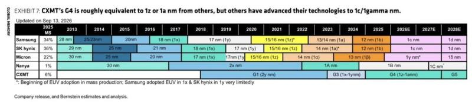
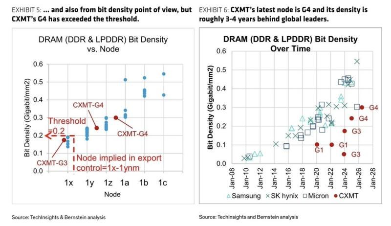
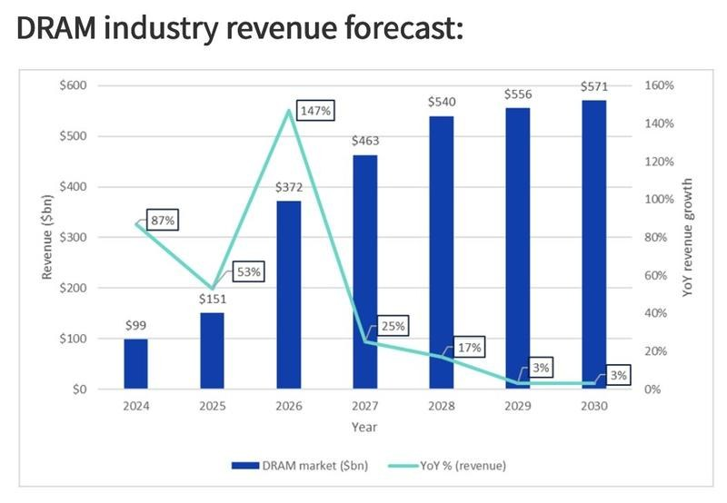
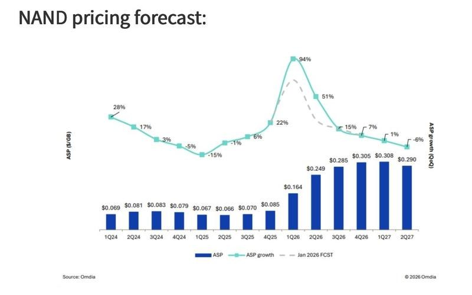

调研纪要 · 2026-09-22 新闻日报
星球 ID: 28855458518111 | 共 356 条帖子 | 精华 91 条
| 查看研究积累
强制同步到研究积累
全部 计算机 电子 机械设备 电力设备 其他 非银金融 建筑材料 传媒 通信 医药生物 商贸零售 基础化工 交通运输 食品饮料 宏观策略 汽车 农林牧渔 家用电器 有色金属 建筑装饰 轻工制造 国防军工 社会服务 公用事业 石油石化 煤炭 房地产 环保 纺织服饰 综合 银行 钢铁
书签
📞💡野村于 9 月 22 日举办 AI 专家电话会，邀请了一位来自 AI 基础设施服务提供商的专家。
📞💡野村于 9 月 22 日举办 AI 专家电话会，邀请了一位来自 AI 基础设施服务提供商的专家。
📝专家主要讨论了 800G／1.6T 数字信号处理器（DSP）的供需、技术壁垒和供应瓶颈、DSP 行业竞争格局和价格趋势，以及跨阻放大器（TIA）与驱动器的价格和产品进展。
📋主要观点如下 800G 与 1.6T DSP 的供需情况
📊据专家介绍，2025 年 800G DSP 出货约 2500 万至 2600 万颗，1.6T DSP 出货超过 300 万颗。
📈专家估计，2026 年 800G DSP 出货接近 5000 万颗；1.6T DSP 需求可能超过 2000 万颗，但实际出货估计为 1600 万至 1700 万颗。
🔧800G DSP 采用 7 纳米和 5 纳米制程，而1.6T DSP 需要目前产能不足的 3 纳米制程。
⏳专家预计，1.6T DSP 产能在 2027 年下半年将明显增加。
📊专家估计，2027 年 800G DSP 出货将达到 1.2 亿至 1.5 亿颗；需求不仅来自 AI 数据中心，也来自进入设备更新周期的电信市场。
📈2027 年 1.6T DSP 需求估计为 6000 万至 7000 万颗，而供应量约为 4000 万至 5000 万颗，产能与良率将继续提升。
🔒高端 DSP 的技术壁垒与竞争格局
⚠️专家称，2026 年是用于 1.6T 光收发模块的 3 纳米 DSP 首次大规模出货的一年，但仍有几项瓶颈：一是良率偏低；二是前向纠错（FEC）等算法尚有需要修复的问题；三是高速 DSP 接口与网络交换机之间存在兼容性问题。
🚧DSP 对新进入者而言技术壁垒较高，原因如下：1）制造工艺需要先进制程（7nm 以下），流片成本极高；2）前向纠错、误码率、均衡技术、色温及色散补偿等信号处理算法相关技术难度较高；3）功耗管理与热控制同样存在挑战。
🏭部分第二梯队厂商也能生产 800G DSP，但缺少强大的客户生态。
⏱️DSP 测试需要光模块制造商与最终客户共同参与，每轮测试可能持续约两年。
💸因此终端客户更换供应商的成本高，倾向于继续与现有供应商合作。
🇨🇳中国的部分 DSP 厂商，例如 Sitrus Technology 和 Joywell Semiconductor，已在开展 800G DSP 业务。
🔌Coherent Lite DSP 的采用
🌐谷歌在 TPU 和 OCS 网络中使用 2.4T Coherent Lite 光收发模块。
📋Coherent Lite DSP 是从传统相干 DSP（用于电信或长距离网络）定制而来，以适用于 AI 数据中心网络；它只使用单一固定波段（O 波段），覆盖 2 至 20 公里的距离。
⚖️Coherent Lite DSP 的技术壁垒低于现有传统相干 DSP，但高于标准 PAM4 DSP。
💰800G 和 1.6T DSP 的价格趋势
💵据专家介绍，目前800G DSP 长期供货协议价格为每颗 45 至 70 美元，1.6T DSP 的 LTA 价格为每颗 120 至 150 美元；零售价格比长期协议价高 10% 至 20%。
📉专家认为，随着产能增加，DSP 价格将在 2027 年小幅下降，其中 800G DSP 可能下跌约 10%，1.6T DSP 的跌幅预计更小。
🔋TIA 和驱动器的发展
✅专家表示，领先的 TIA 和驱动器制造商已经量产单通道 200G 产品；单通道 400G TIA 和驱动器仍处于开发阶段，主要技术难点是同时实现高线性度、低噪声和低功耗。
🔧由于 TIA 与驱动器可采用 28 纳米先进制程，中国厂商已量产 100G TIA 和驱动器，200G 产品则处于送样阶段。
⚠️不过，在产品稳定性和客户验证周期等方面，中国厂商与海外厂商仍存在差距。
🔮NPO 与 CPO 对电芯片的影响
⚡为了降低功耗，NPO 和 CPO 将移除 DSP。
🔧移除 DSP 后，均衡、误码和失真纠正等功能，将由 TIA／驱动器和交换芯片分别承担一部分。
📈这也对 TIA 与驱动器的线性度提出更高技术要求。
华泰政策 · 中东简报小结 | 2026.09.22
华泰政策 · 中东简报小结 | 2026.09.22
美伊冲突方面，特朗普称正在权衡是否“摧毁”伊朗政权；其海湾盟友将于周二在纽约与其会面。贝森特宣布自9月23日起所有伊朗航空公司在全球范围内停运。特朗普政府拟联合沙特等八国配套100亿美元设立“盟友信任与建设伙伴关系”（Pact）基金，重建中东能源设施以降低对霍尔木兹海峡的依赖。据日本共同社，伊朗已告知美方：若美国接受解除对伊朗港口军事封锁等要求，伊朗将在“七天内”开放被封锁的霍尔木兹海峡。外长阿拉格齐已抵纽约并与联合国秘书长古特雷斯通话，称美国早该摆脱以色列的控制。革命卫队称已做好持久战准备，美国情报中心在其打击范围内。伊朗司法机构称将出售在霍尔木兹海峡和波斯湾扣押的美、以船只，用于赔偿战争受害者。路透社消息，如果美国采取切实行动，伊朗有意推动恢复外交接触。
胡塞武装/沙特冲突方面，美媒称特朗普周末曾考虑对胡塞武装发动空袭但最终搁置，担心胡塞危及曼德海峡形成“第二个瓶颈”。沙特、埃及、土耳其、巴基斯坦在纽约举行四方会议。因胡塞武装威胁，沙特国防基金加大海事领域投入。胡塞武装警告埃及、土耳其和巴基斯坦可能在下一阶段成为以色列目标；称沙特向以色列侦察机侦查也门提供机场和基地；将对沙特上百次空袭给予回应。
其他方面，G7外长发表声明，谴责胡塞武装在也门及针对沙特的袭击，呼吁伊朗停止向胡塞提供武器和支持。英国宣布向沙特提供“防御性”空中加油支持。法国总统马克龙与特朗普会面，决定共同维护霍尔木兹海峡航行自由。海湾国家呼吁重启与伊朗关系；卡塔尔正致力于促成美伊短期协议。欧盟高级代表称红海局势更趋严峻，欧盟护航行动亟需更多军舰。
军事方面，以色列再次对叙利亚发动军事打击；指哈马斯违反停火并打击其基础设施。胡塞武装称沙特袭击萨达省扎希尔地区。也门政府军称击退胡塞武装的袭击，对曼德海峡和贝达省的胡塞武装人员及其补给线实施打击。
海峡通航方面，9月21日，霍尔木兹海峡通航量进一步萎缩至仅有9艘，只有6艘驶入，3艘驶出。卫星数据显示沙特波斯湾原油装船量增至1400万桶，为至少自6月以来最高，沙特将石油出口重心转回霍尔木兹海峡。沙特重启东西向输油管道的运营，并可能于周二晚些时候恢复从红海港口延布的石油出口。
【国盛地产】大变局系列五：房地产商业模式颠覆性重构，先破后立现房销售影响解析
【国盛地产】大变局系列五：房地产商业模式颠覆性重构，先破后立现房销售影响解析
[太阳]"828"现房新政预期将推动开发商商业模式、一二级土地开发节奏、资金运转模式的彻底变革。
[太阳]短线我们认为对开发商偏利空，压力传导逻辑链条包括：1、短期现金流承压；2、资金周转率下降，项目IRR和投资回报率承压；3、选地、选项目的慎重带来的土地成交短期萎缩以及库存盘的销售受阻带来的对市场产生次级伤害。中长期，市场的供需格局会逐步改善，最终对房价形成支撑，最终活下来的开发商会在新模式下受益。
[太阳]测算解析：1、首先直接冲击房企现金流：以上海模拟项目测算，累计现金流回正周期从封顶预售的16个月拉长至现房销售下的40个月，经营性现金流回血明显延后。2、盈利指标层面，上海、深圳、长沙各案例项目销售净利率小幅下行1-3pct；IRR 降幅显著，其中高能级城市下滑 10-17pct，低能级城市下滑36-50pct，项目容错空间被压缩。
[太阳]房企：现金流承压、拿地更审慎。高杠杆、拿地较多、在建项目较多的大企业尤其民企，边际影响会比较大；原本低杠杆、自有资金、小盘开发的本土小房企受影响相对更小；现已出险企业活过来的可能性大幅变小。
[太阳]房价：现房销售制度并不必然推动房价上涨。原因在于①新政对于供给下降的影响需要时间去显现。②开发商面临竞争下涨价还是保障现金流的囚徒困境。新规产品由于后续市场竞争骤然减弱，不排除部分项目存在提价可能；在待售新房价格未明显上涨的情况下，二手房缺乏大幅涨价基础。
[太阳]地方政府：影响可能是①土地成交显著萎缩，土地财政进一步承压。②地价下降，但地价调整速度会滞缓于市场调整。③地方政府可能加大低密住宅的出让比重。
[太阳]地产上下游：拿地的下行及装修标准的调整同样会对上下游产业链造成压力。
[太阳]购房者：新政下的最大利好者。① 所见即所得消除交付风险。②中长期逻辑下，供需回归均衡的城市房价会形成底部支撑。
[炸弹]风险提示：政策落地不及预期、模型假设和测算误差风险、房企出险风险蔓延。
【国盛医药张雪·李慧瑶团队】医药生物动态点评：医药工业发展“十五五”规划印发，积极培育壮大创新药械产业
【国盛医药张雪·李慧瑶团队】医药生物动态点评：医药工业发展“十五五”规划印发，积极培育壮大创新药械产业
[玫瑰]工业和信息化部等十部门近日联合印发《
医药工业发展“十五五”规划 ↗ 》
⭐规划提出，到2030年，生物医药研发应用稳居世界前列，创新驱动效能充分释放，重点领域关键核心技术实现系统性突破。核心竞争力与国际影响力大幅跃升。生物医药产业加速成为国家新兴支柱产业。
[玫瑰]规划首次提出10项预期性指标，包括——
①规模：创新药产业规模年均增速不低于20%，
②投入：医药工业上市企业平均研发投入强度年均超过10%，
③原创：首创新药占全球比例达到25%以上，
④数量：创新药上市数量位居世界前列，
⑤出海：全球年销售额超10亿美元的品种不少于5个，
⑥器械：创新医疗器械上市数量累计不少于200个，
⑦企业：年营收超100亿元的企业达到50家，
⑧产业：千亿级医药产业园区达到20个，等；
[咖啡]我们认为，“规划”更加聚焦创新药、医疗器械产业，强调源头创新，具有原始创新的企业有望受益。
建议关注：创新药、CXO、创新医疗器械、AI医疗等板块。
[红包]资料来源
事关创新药、医疗器械等，《医药工业发展“十五五”规划》印发 ↗
风险提示：医药负向政策超预期、行业增速不及预期、行业竞争加剧风险
国盛医药团队 张雪/李慧瑶/张玉/徐雨涵/陈怡晓/夏嘉梁/徐慧文
[烟花]【Muse引爆云端Agent算力：重视IDC与CPU服务器价值重估！】--0922
[烟花]【Muse引爆云端Agent算力：重视IDC与CPU服务器价值重估！】--0922
#云端Agent 9月8日Meta上线Muse，每个Agent独占一台Secure VM——独立CPU、内存、存储与浏览器，7×24小时后台执行任务；Grok bot同步切入to B，#云端虚拟机正成为Agent标准部署形态。
核心变量在于需求结构切换：推理从“单次调用GPU”走向“常驻云端的一台电脑”，CPU、DRAM、SSD、带宽与机柜按在线Agent数×时长消耗，价值量随活跃Agent规模放大。今日润泽、宏景、润建、数据港联袂走强，市场已开始定价！
受益排序：
①IDC/算力运营：润泽科技、数据港、杭钢股份、光环新网、奥飞数据；
②云计算建设/算力服务：润建股份、宏景科技、亚康股份、优刻得、云赛智联；
③CPU服务器：海光信息、中国长城、浪潮信息、龙芯中科；
④存储：江波龙、佰维存储、德明利、兆易创新。
☎️ 继GPU、光模块、液冷之后，Secure VM→CPU服务器→云主机→IDC有望成为Agent时代第四条算力主线！
宏和科技更新260922：根据今晚公司公告，大股东减持全部结束，接大宗机构锁定期6个月，前期股价压制因素解除[胜利]
宏和科技更新260922：根据今晚公司公告，大股东减持全部结束，接大宗机构锁定期6个月，前期股价压制因素解除[胜利]
【波司登】上海门店调研更新：4-8月流水出色，上半财年主动控制发货节奏，全年指引不变
【波司登】上海门店调研更新：4-8月流水出色，上半财年主动控制发货节奏，全年指引不变
#上海兴业太古汇门店调研亮点
- 华东首家VERTEX门店，6/12开业，年流水目标1000w+
- 作为高端门店代表，客单价3000+，游客占比50%，海外客人占比30%
- AREAL高端商务系列销售占比达到50%以上，其他为机能户外、高端户外和商务品类，AREAL系列有效提升连带率，保持在1.5+
- 开业以来流水出色，为楼层前三，仅次于凯乐石、ON等户外高势能品牌
- 上海市场整体财年初至今直营流水+17%，加盟流水+16%，在全国中等偏上水准；折扣考核目标去年为8.8折，今年进一步提高到8.9-9.0折
#全国零售4-8月流水表现出色
- 4-8月波司登主品牌全渠道流水+10%，线上+20%，线下+中单，直营+低双到中双，加盟+个位数
- 8月单月波司登主品牌线下直营流水+23%，表现出色
#上半财年（26/4/1-26/9/30)预期更新：
- 波司登主品牌：上半财年直营预计+高单，批发发货考虑①气候节奏②930提前给经销商换货，有所下降，但这主要是为了让旺季以更灵活货品调动保证全渠道流转的高效而做的主动节奏调节；由此上半财年主品牌收入轻微下降，但全年中单成长目标不变
- 雪中飞品牌：保持两位数增长
OEM：预计5-10%增长
- 由此，集团上半财年预计收入持平，毛利率来看，波司登品牌依然持平或小幅度提升，但由于毛利率低的雪中飞、OEM业务占比提升，集团上半财年毛利率预计轻微下降，但结合费用控制，净利率仍会有轻微幅度提升
#全年指引不变、股息率8.7%
- 考虑零售表现目前势头仍然良好，维持6月给出的27/3/31财年指引，全年收入中单位数增长，利润快于收入预期
- 预计27/3/31、28/3/31财年收入+6.7%/6.4%，归母净利+8.0%/7.6%至43.2/46.4亿元，PE9.2/8.5X，股息率8.7%，结合估值及亮丽零售表现，继续强调推荐
[太阳]美好医疗发布2026年限制性股票激励计划（草案）
[太阳]美好医疗发布2026年限制性股票激励计划（草案）
[玫瑰]授予数量：本激励计划授予限制性股票合计606.73万股，占本激励计划公告时公司股本总额的0.76%。本激励计划的股票来源为公司自二级市场回购和/或定向增发A股普通股。
[玫瑰]授予对象：本激励计划首次授予的激励对象不超过496人，均为公司（含子公司）核心员工。
[玫瑰]行权条件
本激励计划设置公司层面业绩考核，限制性股票归属对应的考核年度为2026年-2027年两个会计年度，每个会计年度考核一次。以2025年度营业收入为基数，根据各考核年度营业收入相对2025年度营业收入的实际定比增长率（P），确定当期公司层面可归属比例，具体如下：
2026年：P≥20%（可归属比例100%）、18%≤P＜20%（可归属比例90%）、16%≤P＜18%（可归属比例80%）、14%≤P＜16%（可归属比例70%）、12%≤P＜14%（可归属比例60%）、P＜12%（可归属比例0%）
2027年：P≥44%（可归属比例100%）、37%≤P＜44%（可归属比例90%）、32%≤P＜37%（可归属比例80%）、29%≤P＜32%（可归属比例70%）、26%≤P＜29%（可归属比例60%）、P＜26%（可归属比例0%）
[玫瑰]费用摊销：假设公司于2026年10月向激励对象授予限制性股票共计606.73万股，产生的激励成本将根据本激励计划的归属安排分期摊销，预计对公司经营业绩的影响如下：预计摊销的总费用为5241.90万元，2026-2028年分别为984.98/3280.43/976.49万元。
以上内容来自公司公告，欢迎联系中信建投医药 袁清慧/王在存/朱琪璋/华冉/贺菊颖 沟通交流
小米澎程探索版破圈，"移动的房子"点亮汽车业务
小米澎程探索版破圈，"移动的房子"点亮汽车业务
#定价诚意＋订单火爆，澎程开局验证需求
[烟花] 售价超预期：N70 Pro/Max 20.99/23.99万，N90 Max 26.99万，探索版（升顶版）29.99万；较预售再降2-3万，配置-价格竞争力进一步拉满
[烟花] 订单火爆：上市当日全系4分钟锁单破万；截至9/17，N90准现车已售罄，N90 Max及探索版交付排至8-12周（N70为4-8周），需求明显向高配集中
[烟花] 车型梯度清晰：N70大五座主打家庭通勤/自驾，N90 Max 2+2+3七座覆盖多人出行/商务，探索版原生升顶+成床延伸露营/移动办公——座位数、电池、空间设施形成清晰梯度
#核心卖点：大空间×可变座舱×增程续航
[玫瑰] 空间革命：纯平地板+超长滑轨+滑动中岛+旋转座椅，支持对坐/办公/观影/成床多模式；N90 Max车长5.28米、舱内2760mm、后备厢577L（座椅调整后最大1831L），N70二排可移600mm、后备厢1200L
[玫瑰] 增程动力：1.5T昆仑增程器+76kWh三元锂（N70 Pro为52kWh磷酸铁锂+单电机前驱），CLTC纯电351-505km，20%-80%快充最快18分钟，长途可油可电
[玫瑰] 智驾拉满：全系小米HAD+700TOPS+前向激光雷达+4D毫米波，探索版独配后向固态激光雷达补车尾盲区；4nm座舱芯片+小爱大模型，人车家全生态互联
#探索版破圈—切入85万辆市场
[太阳] 探索版=移动的房子：原生电动升顶挑高2.29米、约2㎡二层空间，二排一键成床1.87×1.24米，集成地暖/照明/储物/供电；登记为小型专用客车、C类驾照即可驾驶，把房车门槛拉进城市家庭——市面此前从未有的新品类
[太阳] 我们判断澎程可切入约85万辆家庭增程SUV市场，并同步拉高房车市场容量，有望成为SU7、YU7之后的又一爆款，带来大量非小定新增用户，形成汽车业务"二级助推"
[红包]【财通建筑建材】柏诚股份调研要点20260922
[红包]【财通建筑建材】柏诚股份调研要点20260922
[太阳] #长鑫打头，多厂并行订单连续性可期。公司最大客户是长鑫存储，长鑫合肥四个厂（两晶圆厂＋两封测厂）并行开工，北京在做第二个厂、第三个厂已进规划，上海另有在建新厂。此外，长鑫预计后续将一二次配打包招标，单体中标金额将增大公司在长鑫核心项目有望实现高市占率。除两长外，其余客户公司中标概率在两成左右，看好明年订单继续增长。
[太阳] #国内扩产提速下，工程端有议价空间。行业目前供不应求，业主在催工期，公司报价整体有望循序渐进的提升。成本端上游材料与设备供应商暂未明显涨价，投标即锁价，一旦上游涨价可以直接传导给业主。同时，当前公司承接项目时对利润率及回款质量有要求，预计公司中长期毛利率有望改善。
[太阳] #模块化业务有望形成的第二曲线。公司模块化数据中心洁净室约半年到一年就能交付，且成本更低毛利率更高达20%以上。客户以东南亚为主，国内数据中心也有需求，后续有望开拓美国市场（医药）；当前体量尚小，但有明确扩产计划，预计该块业务有望明年起放量。
【吉宏股份】Tokgate发布会核心要点
【吉宏股份】Tokgate发布会核心要点
#电商业务：规模化、品牌化、SaaS化进程加速，自有品牌未来目标规模为50亿-60亿元。
1）规模化：①订单：2017-2018年单日几千单，2019年单日上万单，2020年单日2-3万单；2026年非周末单日订单可达6-8万单，周末单日订单超10万单。②地区多元化：2018-2019年拓展日韩，2020-2021年拓展中东，2022-2023年进入东欧，2024-2025年进入西欧、美国，当前已覆盖近40个国家和区域。③渠道：早期订单全部来自Facebook，当前广告通道涵盖Google、YouTube、Meta、TikTok等。
2）品牌化：2026年品牌业务营收将突破10亿元，占总营收的12%-15%；目标打造2个年营收超10亿元的品牌、3个年营收超5亿元的品牌、5个年营收超3亿元的品牌、10个年营收低于1亿元的卫星品牌，目标实现品牌业务规模达50-60亿元，
3）SaaS化：2020年首次提出SaaS化方向，当前AIGC、大模型、强化学习等技术成熟，可支持多区域、多平台广告投放所需的素材生成、本地化适配等需求。
#AI业务：AI战略已由单点工具应用升级为“内部提效—平台输出—海外商业化”的递进体系。 2021年起，公司逐步将AI应用于素材处理、客服、数据决策等环节，目前整体运营效率提升超60%，人均成本下降30%以上，素材生产效率提升7—8倍。
1）Giikin AI全域智能运营平台：是AI原生组织的核心底座，通过多智能体协作覆盖选品、内容生成、广告投放、落地页制作及履约结算等跨境电商全流程；
2）FDE平台：进一步将内部验证的运营能力向员工、供应商及外部出海企业开放；
3）TokGate：则以模型聚合、AI应用出海和算力服务切入海外市场。短期AI主要贡献降本增效，中期看运营能力平台化复制，长期商业空间取决于外部付费客户、Token调用规模及场景化应用收入能否持续增长。
#AI应用产品能力禀赋：
1）素材生成能力：支持商家仅上传产品图片，即可自动生成适配不同国家、不同人群、不同场景的带口播的视频素材、产品页面，无需商家自行拍摄、翻译，可实现千人千面、万人万面的差异化素材输出
2）广告投放能力：与Facebook、Google等平台偏向自身利益的智能化投放不同，公司的投放系统会将产品成本、运营成本、广告成本、物流成本、客服成本等全链路成本纳入决策体系，可结合产品毛利阈值自动调整投放策略
3）合规支持能力：已总结不同国家的合规要求、广告平台审核标准，可识别素材是否符合当地法律、是否可通过平台审核，帮助商家规避合规风险
#战略规划：包装业务与跨境业务持续变现，AI平台成长空间广阔。
1）包装业务：是公司核心变现业务之一，当前包装行业已进入整合阶段，判断整合速度会进一步加快，驱动因素包括社保缴费基数调整、原材料价格波动、消费需求变化，若后续进入加息周期，预计行业内将有1/3的企业被淘汰。考虑减少普通纸箱业务，切入烟草包装赛道；同时已有大型同业公司寻求北方工厂合作，避免恶性竞争。
2）跨境电商业务：持续推进，与包装业务、新业务协同发展。
3）AI平台：目前在内部测试孵化，2026年9月22日正式启动对外邀请内测，后续将基于海外积累的用户画像逐步推出相关应用服务，长期成长空间较大。
【东吴计算机王紫敬】国投中鲁：电子院过户完成，洁净室逻辑进入兑现期
【东吴计算机王紫敬】国投中鲁：电子院过户完成，洁净室逻辑进入兑现期
事件：公司公告，发行股份购买电子院 100% 股份已完成资产过户，变更登记完成后，国投中鲁持有电子院 100% 股份，交易对方包括国投集团、大基金二期等。公司同步完成管理层调整：新任董事长夏连鲲先生、新任总经理翟传明先生均出自电子院原管理团队。本次重组 8 月 26 日获证监会同意注册，不足一个月即完成交割与人事落定，推进效率凸显转型决心。
观点重申：
第一，行业景气。半导体处于扩产周期，洁净室是晶圆厂、面板厂建设的刚性上游环节，先进制程与高世代产线对洁净等级的要求持续提升，行业景气度上行。
第二，资产稀缺。电子院是电子信息工程设计领域国家队，行业内少数企业具备承接中芯国际、长鑫存储、京东方等头部产线洁净室项目的能力，公司卡位突出，竞争格局优异。
第三，业绩基准。电子院业务以工程总承包模式为主，业绩承诺 2027 年 3.5 亿元，后续订单落地与兑现进展建议持续跟踪公司公告。
第四，治理信号。管理团队由电子院原董事长、总经理直接执掌，经营主导权清晰，整合路径明确，后续订单与业绩有望持续兑现。
投资建议：洁净室方向重点关注国投中鲁。
风险提示：跨界整合不及预期；电子院业绩不及预期；半导体资本开支波动。
🔥 🔥 🔥【国盛电子】国科微：智慧视觉加速放量，端侧AI打开成长空间
🔥 🔥 🔥【国盛电子】国科微：智慧视觉加速放量，端侧AI打开成长空间
⚡️#智慧视觉业务快速放量，推动公司收入与盈利能力显著改善。2026年上半年，公司实现营业收入13.78亿元，同比增长85.81%；归母净利润1.96亿元，同比增长872.78%；综合毛利率达到40.61%，同比提升11.89个百分点。其中，智慧视觉芯片实现收入10.45亿元，同比增长206.13%，毛利率达到51.13%，随着GK72系列持续供货、普惠型产品逐步导入客户，以及高、中、低端产品矩阵不断完善，公司有望进一步覆盖专业安防、消费级IPC及机器视觉等细分市场。
⚡️#端侧AI布局持续深化，有望成为公司重要增长极。公司推出面向大模型的MLPU架构，并布局Chiplet、Die-to-Die及多芯互联技术，现有方案覆盖0.5T—32T算力，形成8TOPS AIoT芯片、16TOPS边缘计算芯片以及64TOPS—128TOPS预研产品梯队。公司已与国内主要端侧大模型厂商建立合作或合作意向，并完善模型转换、推理部署和应用开发工具链，未来将重点拓展机器人、AI PC、无人机、工业计算及AIoT等应用市场。
⚡️#车载芯片产品加速导入，业务有望逐步进入规模化放量阶段。公司新一代满足AEC-Q100 Grade 2标准的车载AI芯片已完成相关认证，部分主流车型已实现量产导入，产品规划覆盖130万至800万像素及不同算力档位；车规MCU和电源管理芯片已满足AEC-Q100及ISO 26262功能安全要求，目前处于客户项目开发和车型导入阶段，预计2027年逐步实现量产导入，为公司贡献新的业绩增量。
风险提示：需求不及预期、研发进展不及预期
[太阳]【长江电子】京东方IPC大会更新
[太阳]【长江电子】京东方IPC大会更新
[红包]主业：格局逐渐优化，折旧收窄提升现金流
#LCD：受材料成本上涨影响近期行业有调价动作，公司当前各下游份额均位列全球第一，随着日台厂商逐渐退出，以及TV大尺寸的确定趋势，行业后续有望迎来供不应求
#OLED：今年行业承压，但公司拥抱龙头客户有所缓解，上半年出货量同比增长约14%，看好后续折叠屏对需求端的拉动，以及行业供给端的出清
#折旧：在今年新产线投产的基础上，公司折旧仍会持续下降，现金流稳步增长，同时公司会持续增加对各产线持股比例
[烟花]玻璃基板：全流程整合的垂直一体化龙头
#研发进展：目前技术最高达到11-2-11玻璃载板，预计27H1进行投研决策，28年开始量产。良率相比7月已有大幅提升
#后续展望：目前公司与海内外多家龙头均有实质性接触，不仅可实现玻璃芯全流程跑通，后续有望向先进封装进军，打造“玻璃芯-载板-封装”的一体化解决方案，核心受益于玻璃封装时代
[庆祝]详情请联系长江电子团队
京东方交流核心要点：
京东方交流核心要点：
1️⃣玻璃基板：力争2027Q1或者上半年量产，目前试验线已经全线拉通，覆盖TGV打孔、镀铜、ABF增层、封装切割全流程，产品送样验证中。
2️⃣先进封装：未来1-2年会在半导体封装领域进行布局。
3️⃣折旧：25年为折旧峰值，未来公司折旧金额会下降，折旧的整体趋势也能为公司创新业务和新赛道布局提供现金流保障。
【国泰海通计算机】海光信息：发布首款端侧AI芯片，云-边-端三栖版图成型
【国泰海通计算机】海光信息：发布首款端侧AI芯片，云-边-端三栖版图成型
[玫瑰]首款端侧AI芯片。海光1000系列是海光首款嵌入式工控CPU，4核8线程C86架构、首次集成iGPU支持4K60双路显示（DP/HDMI）；典型TDP仅10W、支持-40℃~105℃宽温无风扇散热；SPEC2006单/多核性能较业内同类主流方案提升超15%，DDR4/DDR5、PCIe 4.0、TSN实时以太网一应俱全。
[玫瑰] 生态兼容性领先。C86架构直接继承x86生态，国内工控机在网存量近3000万台、x86在全球CPU市场份额超90%；兼容DirectX、OpenGL 3.3、OpenCL 3.0等主流API；10W低功耗+宽温+ECC+国密硬件加速一体化，并设10年持续供应保障，正面撬动国际厂商长期主导的工控CPU市场。
[玫瑰]定位"云边端"协同。卡位全球边缘计算支出从2025年2610亿增至2028年3800亿美元、中国边缘硬件从74亿增至132亿美元的增量空间；同步推出E-TEAM伙伴计划，提供10年以上产品生命周期承诺+多代兼容升级机制，切入工业控制、能源、轨交、医疗等场景。
国泰海通计算机杨林团队
【长江电新】#思源电气推荐速评20260922
【长江电新】#思源电气推荐速评20260922
1、公司今天股价出现波动，我们认为主要因交易因素影响，#公司基本面一切正常，无需担心，继续重点推荐！关于市场担心的几个方面，我们看法如下：
2、Q3经营
Q3以来发货正常（海外订单增长50%+，国内订单增长15-20%），Q2确收偏弱系海外大GIS和变压器等高毛利产品确收少，#Q3确收将追回部分，推动收入结构优化，其中北美Q3也开始确收。因此，#我们认为Q3依旧能够看到公司经营同比加速的拐点。
3、关于外资看空报告：
外资报告核心看空3点：1）海外产能提升快于预期；2）欧盟监管风险；3）国内capex降速。
我们看法如下：
1）报告变压器产能依据宣布产能统计，但未列出宣布产能详情，海外变压器扩产周期2-3年，短时间内扩产概率不大，并且海外缺工人，实际产能落地情况仍需跟踪。
2）报告提到预计29年欧盟从中国进口变压器达到43%，将触发监管。但按照2025年从中国进口9.66亿欧元，从欧盟内进口27.6亿欧元，从欧盟外其他国家进口11.4亿欧元的基数，经过我们的计算若29年中国占比要达到43%，#【欧盟2029年从中国将至少进口29.4亿欧元的变压器-较当前增长200%，报告实际在变相看多欧盟市场[鼓掌]】。
3）国内电网capex已有明确十五五规划，月度节奏波动正常（25年也是如此）。
4、北美禁令
1）北美客户多数无反应、履约交付正常；公司判断#本轮更针对远程控制而非电力设备本身，自身不配任何电子装置。
2）思源美国1-7月累计订单约2.5亿美金，1-9月有望3亿美金，全年有望超额完成目标。
3）即使不考虑北美，27年利润50亿元，当前PE约20X；北美禁令悲观预期已反应充分。
5、当前Q3和美国禁令实际影响预计好于预期，预计26、27年归母40、56亿元，对应PE分别约25、18倍。继续重点推荐！
[玫瑰]具体情况欢迎联系
据 TrendForce 称，随着 NAND 需求的回升，各供应商正在将产能重新分配到 eSSD 领域。不过，eSSD 的交货周期仍然较高，为 16 周，而正常...
据 TrendForce 称，随着 NAND 需求的回升，各供应商正在将产能重新分配到 eSSD 领域。不过，eSSD 的交货周期仍然较高，为 16 周，而正常水平应为 8 周。
由于对人工智能的需求不断增长，整体供应不足。在这种情况下，eSSD 的需求正在重新塑造 NAND 的供应结构。
由于代理型人工智能需求的增加，HDD 的供应状况一直十分紧张。
再聊聊T布的超额0922
再聊聊T布的超额0922
T布用在封装，low dk（一二代、Q布）用于主板，需求节奏不是同步的。我们看好封装基板优先级大于普通柜内PCB，因为封装基板的环节更靠前，紧缺度更高。
虽然明年织布机的供给配额众说纷纭，但是整个终端厂商保产能的过程中，我们认为会优先保封装基板。这个环节内最受益的是：宏和科技。
【HY交运ZFZ】油运股价调整短评：透过情绪迷雾、抓住基本面核心
【HY交运ZFZ】油运股价调整短评：透过情绪迷雾、抓住基本面核心
今日油运板块调整，主要受两方面驱动：一是市场短期风格切换，二是美股油运下跌的情绪传导——当前美股正在交易地缘冲突缓和的预期（受油价下跌拖累），压制板块情绪。
但我们的核心判断不变：油运正处于“横竖受益”的强景气周期、VLCC“一船难求”的基本面没有任何松动：
1、若冲突持续：海峡“暗航”货量恢复七成中东出口，释放，运力被持续低效“暗航”吞噬，运力持续紧张，量价共振；
2、若海峡放开：中东货量迅速恢复，运力效率缓慢回升，有效运力仍将维持100%以上的绝对紧张状态，紧平衡依然坚固。中长期仍有中东与美洲增产共振与下游需求修复&持续补库，景气度向上趋势明确。
每次由事件交易和情绪波动带来的短期回调、都是上船的好机会！持续强推【招商轮船】、【中远海能】、【招商南油】跟着麦哲伦、航运不彷徨
🚩【长城 邓宇亮】七腾发布会：机器人跨时代的第一个答案❗
🚩【长城 邓宇亮】七腾发布会：机器人跨时代的第一个答案❗
🔥发布会很重磅，再重点提醒三件事：
第一，发布七腾自己的机器人大模型SevnceBrain。#七腾的人形机器人也同样值得期待。
第二，现场展示的真实落地应用场景全是巴斯夫的。
第三，签下很大批量的订单，单笔破历史新高，#详情私信。
🧧#真的有用： 我们之前去中石油调研，有三个非常明显的感受
第一，现在的油田很难招人，年轻人不愿意来。
第二，很容易出安全事故，一旦出事故，乌纱帽会掉。
第三，巡检员很贵，专业石油院校的硕士起步，一个人工巡检团队的成本是上百万一年。
机器人最先也最应该用的，就是在危险场景替代人，和其他讲星辰大海故事的公司不同，七腾的机器人，是刚需。
🧧#真的有业绩： 七腾花了16年时间，把模型、数据、技术、客户、商业模式全部打通，在这个领域没有对手，真的遥遥领先。
#全球第一个有真实应用场景+跑通商业模式+已经放量的就只有七腾，七腾今年40亿收入、明年70+亿收入、20+亿利润，而胜通现在才180亿市值。
💡我们的审美是追求真实：你的机器人要真的有用，真的能解决人类的问题，真的有业绩。机器人不是跑在想象里，而是一步一步走在现场里。
#如果你和我们的审美一样、那么胜通这个位置真的非常值得。
今日市场点评0922：指数冲高回落显分歧
今日市场点评0922：指数冲高回落显分歧
🔆 行情总览：
🌀 今日A股冲高回落，沪指收+0.06%、深成指-0.05%、创业板指+0.01%（早盘一度涨超2%），成交2.15万亿再创阶段新高。个股层面，约3000股飘绿。传媒与AI应用集体走强，创新药延续2连板；航运、油气、风电调整。
🌀 港股分化，恒指+0.18%、恒科+0.34%，大模型股智谱-6%、MINIMAX-4%，资金在AI内部从模型向平台股切换。南向资金净买入超50亿港元。
🌀 外围市场，韩KOSPI高开2.2%后基本抹平收+0.15%；现货黄金失守4300美元。
🔆 核心事件与观点
🌀 放量不涨，2.15万亿成交+指数平收，获利盘借情绪兑现，新资金接产业逻辑入场。半导体早盘受昨夜费半+4.29%映射高开冲高，而随着时间推移最终由AI应用/传媒承接。资金正在算力主线内部切换，与昨夜美股Meta行情的结构相近。
🌀 云栖大会阿里抛出密集信息，2032年数据中心20GW、真武V900算力提升3倍、5-10万亿参数模型、千问手机Qwen Intelligence。中国云厂商的资本开支叙事正式对标美国超大规模厂商，国产“芯片-模型-终端”全栈闭环首次完整亮相，中国AI正在从“对标追赶”迈入“生态建设”的新阶段。
🌀 芬兰、挪威等多国领导人联合倡议管控前沿AI，而外交部回应中美将就AI安全风险举行会谈。元首访美前夕，AI安全对话被正式摆上中美议程，对国产模型的出海合规框架可能隐含中期利好。
⚠️ 风险提示：中美元首会晤成果出现预期差风险；短融ETF天量提示大资金的风险偏好与盘面情绪背离，警惕高位题材股的集体波动风险。
🌹 欢迎大家与我们讨论，请联系国联民生宏观团队陶川/林彦
🐴【建投食饮||杨骥】中秋国庆白酒调研总结：整体平淡&结构分化，关注反馈较优酒企（20260922）
🐴【建投食饮||杨骥】中秋国庆白酒调研总结：整体平淡&结构分化，关注反馈较优酒企（20260922）
[太阳]整体观点：我们认为中秋国庆白酒整体反馈平淡，预计无板块β催化，但存在结构性超预期表现的标的，#高渠道利润/高自然动销为核心竞争力，其中茅台、迎驾、今世缘、汾酒反馈均有亮点。
[玫瑰]动销：#预计中秋国庆行业整体动销个位数下滑或持平，茅台、五粮液、迎驾、古井、今世缘、汾酒、金徽等酒企在低基数下动销或可实现增长。
[玫瑰]库存：目前行业整体库存仍偏高，#茅台、五粮液、迎驾、汾酒等酒企库存去化至较低的良性水平，洋河、古井、老窖在高库存的基础上有所去化，今世缘库存虽同比提升、但环比Q1基本稳定。
[玫瑰]批价：行业批价分化，#近期头部酒企批价表现较优、次高端批价仍承压。#飞天批价年初至今表现持续超预期，近期虽因发货略有下行但仍维持1730以上的较高水平；普五因中秋发货，批价自高点820左右回落至780-790元，表现尚可；迎驾批价表现较优，洋河批价同比提升，汾酒Q3批价环比提升，今世缘批价表现区域有分化，古井批价略有回落。水井坊、舍得、酒鬼、剑南春等批价均有不同程度回落。
[太阳]得益于高渠道利润/高自然动销，以下酒企调研反馈有亮点：
[玫瑰]1）茅台：批价表现超预期，今年整体飞天回款节奏较往年快了3-5个点，#在中秋放量背景下批价仍稳定在1730以上，部分区域批价高至1760，非标中秋亦有增加配额的情况。
[玫瑰]2）迎驾：份额提升超预期，#洞6在合肥核心终端价格反超古5、同时份额仍在提升，洞9在200元价位亦表现优于竞品，目前迎驾模糊返利仍高于古井，省内合肥等局部区域迎驾自点率更高。
[玫瑰]3）今世缘：份额提升超预期，公司库存虽有4个月+，#但环比Q1基本无新增压货，江苏省内动销来看，#四开、淡雅、V3均为同价位表现最优的产品，动销显著优于竞品，高库存的本质诉求为抢份额而非压业绩。
[玫瑰]4）汾酒：库存去化超预期，得益于上半年费用同比增投20%，保障渠道利润率8%+、终端利润率15%+，#目前渠道库存去化至45-50天、平台仓库存已基本去化，下半年渠道压力较轻，Q3青花20、青花30批价回升约20-30元。
[太阳]投资建议：中秋国庆表现结构性分化，头部酒企仍有亮眼表现，当前迎驾、今世缘、汾酒估值均在15x以内，茅台、迎驾、今世缘、汾酒、古井股息率均在4%以上，#推荐贵州茅台、迎驾贡酒、今世缘、古井贡酒等。
🏆建投食饮杨骥团队
🐴【建投食饮||杨骥】江苏白酒专家交流更新：今世缘动销显著优于竞品，库存环比Q1基本稳定（20260922）
🐴【建投食饮||杨骥】江苏白酒专家交流更新：今世缘动销显著优于竞品，库存环比Q1基本稳定（20260922）
[太阳]苏州综合白酒大商：
[玫瑰]整体：7月至今动销同比增长4.5%，预计Q3同比高单增长。
[玫瑰]茅台：打款进度82%，基本到货，飞天进度同比快了4-5%，#飞天销量同比增长6.4%，合同外飞天同比增长12%，非标同比下滑20%+，#飞天批价在1760左右，目前茅台销售和动销在白酒中仍是最好，近期非标新增配额，有传言要提升非标利润率。
[玫瑰]五粮液：回款80%，已到货，#Q3动销增长5.5%，#近期批价从高点820-830跌至790左右，最低价770；低度五粮液促销底价660-670，表现弱于低度国窖。
[玫瑰]老窖：#低度表现非常好、回款80%、批价620-630、同比去年持平微增，高度打款55%、批价掉至820-830。
[玫瑰]洋河：回款65%，Q1、Q2双位数下滑，#Q3目前下滑10%，其中海之蓝个位数下滑，梦之蓝、天之蓝10-20%下滑，水晶梦20%以上下滑，表现相对最弱。
[玫瑰]今世缘：回款75%，较去年慢了5个点，今年签量同比增长10%，#预计Q3动销增长11.8%，其中淡雅增长20%多，V系个位数增长，四开对开持平略下滑，批价稳定。动销方面，#V3表现在500-600价位排第一梯队、四开和淡雅表现为同价位最优。
[玫瑰]汾酒：回款75%，较去年慢了5个点，#Q3动销增长5%，其中青花20持平微增，玻汾增长10%出头。
[玫瑰]古井：回款65%，#中秋个位数下滑，古20压力较大。#
[玫瑰]其他：#剑南春微增，批价没有四开坚挺，400价位四开、剑南春二选一，#水井坊、梦3、古16均表现较差，#洞9在苏南和南京表现较好。
[玫瑰]库存：今世缘库存较高，#库存4个月+、但环比Q1基本持平，节奏为淡季去库、旺季压货；其他产品库存在3个月+。
[太阳]无锡洋河今世缘大商：
[玫瑰]洋河：回款同比下滑较多，#其中蓝色经典系列下滑25%左右，#双沟、苏酒回款下滑30%+，库存已去化至正常水平，该商中秋国庆今年回款600万（去年2000万），#中秋国庆下滑幅度超预期。洋河的人员调整改革是必要的，简化流程、返投费用，目前效果尚不明显。
[玫瑰]今世缘：#动销显著好于洋河，对回款要求积极、宴席支持力度大，#四开对开V3下滑25%，#单开、淡雅、K系下滑10%以内，部分经销商可做到持平微增，#目前渠道+终端库存同比增加1.5个月，#环比Q1增加半个月；价格有所下滑，四开最低385元、对开最低230-235元，V3价格跌破500。
[玫瑰]礼品：近17天的营业额来看，#月饼高端礼盒下滑了47%、香烟下滑了30%多。
🔥#今晚20:30特邀冻品、饮料、乳品专家交流，欢迎报名，#如需外呼请告知
🏆建投食饮杨骥团队
🐴【建投食饮||杨骥】汾酒专家交流更新：渠道利润+品牌势能双重驱动，库存去化表现略超预期（20260922）
🐴【建投食饮||杨骥】汾酒专家交流更新：渠道利润+品牌势能双重驱动，库存去化表现略超预期（20260922）
[玫瑰]回款：#截止8月底回款进度约67%，进入中秋国庆后动销略有转好，高端礼品场景和200以下价位有恢复。
[玫瑰]分产品表现：1-8月青花30同比下滑12-13%，青花26同比持平，青花25同比增长17%，青花20同比下滑2-3%，巴拿马系列同比下滑约15%，老白汾同比增长6%，玻汾微增1%。其中Q1-Q2库存去化为主，#预计中秋期间青花30增长15%、青花20增长10%、巴拿马和老白汾基本持平、玻汾同比下滑5-6%（受发货节奏+主动控货影响，目前出货日期非常新）。
[玫瑰]开发品：主要在山西省内由大商运作，以玻汾和200以下的产品为主，#预计大概体量约20亿。
[玫瑰]库存：#目前中秋备货后库存约45-50天，整体合理，一季度已把25Q4和26Q1压的货以及平台仓库存消化七七八八，26H1促销费用增长20%用于去化库存。
[玫瑰]价格：由于上半年增投费用，青花20批价在6-7月掉至350元，#后Q3收紧费用青花20批价回升至375-380元，青花30批价回升至720-730元。玻汾批价约45元，南区终端价自65元下滑至58-60元，山西及周边终端价自55元下滑至50元，主要系渠道将玻汾作为引流品运作，#目前控制玻汾投放量稳定价格。
[玫瑰]分区域：Q1省内表现好于省外，Q2受煤矿安全事故影响省内下滑30%多；省外Q1下滑，但Q2持平，预计Q3、Q4省外增长快于省内。
[玫瑰]渠道利润：上半年汾享礼遇的费用增投20%，主要用于促进开瓶、经销商去库存、品鉴，#目前渠道利润率8%+、终端利润率15%+，渠道配合度较高。
🔥#今晚20:30特邀冻品、饮料、乳品专家交流，欢迎报名，#如需外呼请告知
🏆建投食饮杨骥团队
【申万交运】今日油运板块调整点评
【申万交运】今日油运板块调整点评
1、科技大涨的资金跷跷板；
2、交易的美伊缓和传闻。预期差：停火≠海峡放开；美伊对海峡控制权的争夺并无结果，伊朗前往美国为参加联合国大会，并非妥协。
3、油价下跌，石油etf带着油运下跌。布油价格回落主要系：①沙特波斯湾出口增加超预期（市场报道沙特周日装载7艘VLCC共计1400万桶原油）。②地缘上情绪的扰动或更多以波动呈现。
目前油运的核心矛盾：高裂解+供给不足。运价上限=裂解价差，TCE可看400万美元/天。
#短期高裂解、船短缺均无法得到解决，运价预计持续高位。
1、原油价格高企+裂解价差高企，#石油上下游暴利打开中游运价上限；#
2、裂解价差的根本问题是成品油库存见底，#短期库存无法补充，裂解持续高位，运价持续高位；
3、#VLCC供给短缺让运输成为上下游关键瓶颈，过驳+STS+绕行的效率损失，导致VLCC供给严重不足，运价迎弹性放大&量级突破。
#中期市场进入原油加速去库存阶段，3-7月炼厂降开工牺牲成品油库存缓解了原油库存压力，随着成品油库存见底，叠加4季度北半球进入需求旺季，原油将进入加速去库存阶段。
基本面不变，核心矛盾无法解决，短期地缘或带来情绪和预期差扰动，或是加仓机会。强烈推荐中远海能AH、招商轮船、招商南油等。
连续两个交易日，煤炭股低开高走🔥👏，市场在交易啥？0922
连续两个交易日，煤炭股低开高走🔥👏，市场在交易啥？0922
[咖啡]一是近几日港口动力煤价企稳回升，二是发改委安全稳产稳供政策出台、利空落地，三是国庆期间蒙煤又要闭关多日、进口煤补充难度依然很大
👉从上周后半周开始，港口动力煤价格有企稳迹象，最新港口煤价980+元/吨，累计回涨约10元，我们在前期段子说过煤价涨幅过大、涨幅过快，不是好事，回踩稳一稳、慢点涨，才有利走出健康行情。考虑产地供应低、行业库存低、10月中下旬开启冬季旺季等，动力煤价预计仍有上行空间。
👉上周发改委等三部门提出煤炭行业在确保安全的前提下稳产稳供，当前来看，矿安77号文，要追查煤矿背后实控人，对民营企业增产积极性影响大，7月份开始执行的煤矿重大事故隐患判定标准，一些矿上lingdao被撤职免职，对国有企业影响大，山西5.22矿难事故没有定论，今年明年又是zhengzhi大年，当前不出事是最大事。我们看到山西近期有复产但又伴随停产，反反复复，按照钢联预估，理想条件下，523家样本煤矿日增产可达20万吨，即达到176万吨级别，相比较正常190-200万吨，还是下降7%-12%。
👉国庆期间蒙煤又要闭关多日，中秋、国庆10天假期里，只开放一天，在当前每天通车不到600车（上半年通车1300-1500是常态），且口岸库存仅有160+万吨情况下（6月底高峰460万吨），进口煤补充难度依然很大（今年前八个月进口煤增量全来自外蒙古）。
[咖啡]上个段子我们说，当前煤炭板块仅对应850动力煤价的业绩10倍PE估值，如果有调整就是小浪花，待价格再稳稳、政策预期再稳稳，煤炭股依然有很好机会。内地煤炭供给收紧有持续性、新疆煤产量和运量弹性不大、下游需求有韧性、供需缺口依然较大，此外印度也在大幅降煤炭库存，海内外共振，价格/公司业绩中枢在每一波调整后都会有上移。如果从850定价到950，估值仍维持10倍，弹性标的可能有50%-100%空间。
[玫瑰]重点标的：
动力煤弹性标的：广汇能源、兖矿能源，力量发展、昊华能源，稳健价值：新集能源、中煤能源、陕西煤业、中国神华等。焦煤重点推荐淮北矿业、平煤股份、首钢资源等。
国海能源开采，供参考
酒店周度跟踪（9.14-9.20）：需求季节性回落，价格端保持韧性
酒店周度跟踪（9.14-9.20）：需求季节性回落，价格端保持韧性
【行业数据】
⭐26年第38周（26/09/14~26/09/20 vs 25/09/15~25/09/21）全国酒店RevPAR同比-0.7%（前值+3.3%），拆分量价，ADR同比+0.9%（前值+2.8%），OCC同比-0.9pct（前值+0.2pct）。
本周结构：
⭐分城市线看，酒店RevPAR一线+4.3%/新一线-1.4%/二线-4.4%/三线-0.8%/四线及以下+0.3%。
⭐分档次看，酒店RevPAR豪华+0.3%/高档+1.4%/中档-3.5%/经济-2.9%。
⭐供给看，26W38行业15间客房以上酒店数同比+4.9%、客房数+4.7%。
【公司数据】
⭐华住酒店：ADR 308元，同比-1.6%；OCC 77.2%，同比-1.2%；RP 237元，同比-2.9%（前值-2.5%）。
⭐锦江酒店中国区：ADR 237元，同比-2.9%；OCC 66%，同比-1.5%；RP 156元，同比-4.9%（前值-4.8%）。
🔥我们的观点：本周酒店行业RevPAR同比-0.7%，拆分量价，ADR同比+0.9%，价格端仍保持韧性，但增幅环比收窄；OCC同比转负，需求回落拖累RevPAR表现。当前行业仍处于暑期结束后的需求淡季，短期经营表现有所波动；后续随着中秋国庆旺季临近，出行需求有望逐步释放，重点关注旺季入住率修复及价格表现。A股买贝塔回暖，推荐锦江、首旅；美股关注亚朵、华住。
数据来源：酒店之家，RevPAR为行业OCC*ADR计算得到，对比基准按周度计算。
🌹最新数据库及观点欢迎交流~
🔥🔥🔥【华源医药|CXO产业链】继续重点推荐！医药β持续加强，AI4S热度持续，CXO板块有望进一步上行!
🔥🔥🔥【华源医药|CXO产业链】继续重点推荐！医药β持续加强，AI4S热度持续，CXO板块有望进一步上行!
#CRDMO产业景气度持续
⭕多肽、小核酸、ADC、环肽、分子胶等技术平台快速发展，带动相关临床和商业化CDMO需求，中国企业通过前期的技术积累，在全球范围内优势显著，有望进一步提升全球产业链地位。
⭕BD带动国内早研复苏，26H1中国创新药授权超过1000亿美元，激发国内企业加速早研投入，科研上游、药效、安评等环节显著受益。
⭕AI赋能创新研发，有望加速扩容产业链。AI加速发现新分子，带动湿实验的需求，相关蛋白、分子砌块等需求提升，未来或将打开更多需求。
#临床CRO需求向上
⭕中国创新药BD出海持续兑现，为临床CRO带来源头活水。中国临床研究行业具有较为显著的时间和成本效率优势，逐渐开始赋能全球研发管线。临床研究外包行业进一步整合，竞争格局趋于良性。
⭕泰格医药在国内临床外包服务行业保持领先地位，也是唯一进入全球前十的中国临床CRO（2025年数据）。
[拳头]【相关标的】
🔥CRDMO综合平台：药明系、凯莱英、康龙化成
🔥CRDMO特色平台：普洛药业、药石科技、博腾股份
🔥临床CRO：泰格医药、诺思格、普蕊斯、博济医药
🔥临床前CRO：美迪西、益诺思、昭衍新药
风险提示：研发不及预期；竞争恶化
今天高开低走虽然有伤士气，但我们对于 AI 硬科技的推荐反倒更加坚定[加油][加油][加油] #新叙事持续显现（RSI、企业级Agent、AI4S、AI2C等方...
今天高开低走虽然有伤士气，但我们对于 AI 硬科技的推荐反倒更加坚定[加油][加油][加油] #新叙事持续显现（RSI、企业级Agent、AI4S、AI2C等方向都是已经在加速落地的宏大叙事场景），期待一个 milestone 让全球投资人信心回归和聚焦！
方向上看，我们依然坚定认为海外 Rubin 产业链（光、PCB、ODM 等）、国产AI 芯片/核心设备、后周期位置模拟等赛道会在下半年有明显超额！另外，#新技术作为结构性增量，对于 AI Capex 增速的敏感度不高，有望持续引领阶段性行情，看好 NPO/CPO （散热、保偏、FAU、检测设备等）、玻璃基板、M10、PTFE 等细分领域大放异彩！
#坚定看好全球AI硬科技投资，#继续拥抱产业变化！
【国联民生计算机】Muse爆火与云栖大会投资机会
【国联民生计算机】Muse爆火与云栖大会投资机会
[太阳]Muse爆火出圈，上线6天下载量超90万次，通过20美元+的订阅模式收费。与此同时，云栖大会顺利召开，最强国产AI芯片、10万亿参数模型、20GW数据中心、千问手机来了—阿里云栖大会“火力全开，以下是核心投资机会：
[太阳]CPU：Muse为每个用户配备2核8GB+100GB的云资源，当前消费互联网人均云资源有较大提升空间
目前微信等主流国民级消费互联网应用，人均云资源可能0.1核CPU+0.1GB运存+5GBSSD，未来AI形态的国民级产品将大幅推升CPU需求，建议关注：海光信息、中国长城、集智股份、龙芯中科、禾盛新材、广合科技等。
[太阳]云&算租：阿里巴巴目标在2032年将阿里云运营的全球数据中心规模扩展至超过20GW。
当前多数算租公司真实PB在0.5倍以下，B300服务器月租金/批发价/零售价都在全线提升，新渠道的卡也在加速落地，建议关注：宏景科技、协创数据、利通电子、智微智能、行云科技、东阳光等核心标的。
[太阳]模型与应用：阿里云国产芯片推动国模
阿里AI芯片真武V900，算力较前代M890提升3倍，单一集群可扩展至50万卡规模；同时计划训练参数规模达5至10万亿的新一代AI模型。国芯训国模，有望加速国模追赶海外先进模型进程，建议关注智谱、MiniMax；同时看好腾讯、阿里等互联网平台发展类Muse业务的机遇。
欢迎联系国联民生计算机吕伟/白青瑞
【开源电子】端侧AI再思考：AI智能体加速应用端繁荣，端侧AI硬件或迎奇点时刻
【开源电子】端侧AI再思考：AI智能体加速应用端繁荣，端侧AI硬件或迎奇点时刻
☑事件：根据Sensor Tower数据，Meta新推出的AI智能体Muse，上线仅一周就霸榜美国苹果iOS应用商店和GooglePlay免费APP榜首，Agent AI带动CPU产业链和端侧AI板块迅速升温。
💥我们认为，随着AI算力基础设施高速扩张、LLM快速迭代推动模型能力跃迁&API价格下降，Agent AI正在沿着“能用→好用→用得起”的方向演进，变得更加智能，且快速融入日常工作&生活。AI Coding和AI Work此前已经被验证，Muse的爆火表明Agent AI在消费级、生活助理领域大有可为，消费级AI智能体或将复现AI Coding和AI Work的渗透速度、且市场空间更为广阔。随着AI应用端兴起和繁荣，涵盖众多场景、众多细分品类的端侧AI硬件产业链有望迎来爆发。
💥与此前市场期待的“出现杀手级AI应用、某个新型端侧AI硬件成为亿级销量大单品”的逻辑不同，我们认为端侧AI硬件更为合理的演进模式是，Agent AI通过重塑or赋能多种类型AI终端（AI PC、AI手机、AI眼镜、AI玩具、智能穿戴、智能戒指、智能家居、以及各类B端和C端硬件），催生数十个“百万-千万级销量”品类，带动AI终端进入数亿-数十亿量级。因此，端侧AI硬件产业链企业的平台化能力更为重要。
🔥近期事件：
①苹果iOS27新版Siri AI增加屏幕理解、跨APP多步骤执行等Agent功能，10月扩产更多语言，预计Q4支持中国大陆；
②亚马逊表示，今年将部署5000台智能眼镜设备，目标到2027年底达到2万台以上；
③#智能戒指厂商Oura（2025年销量约300万，全球市占率超70%）启动美国IPO路演，估值目标约156亿美元；
④9月24日，#Meta举行Connect开发者大会，有望更新AI眼镜/XR新品，并融合Muse多模态能力。
⑤9月29日，#OpenAI举行DevDay开发者大会，有望更新AI硬件终端进展。
[红包]建议关注：
①整机环节：龙旗科技、歌尔股份、立讯精密、传音控股、华勤技术等
②端侧SoC：炬芯科技、中科蓝讯、恒玄科技、乐鑫科技、瑞芯微、全志科技、安凯微等
③电池：珠海冠宇、豪鹏科技、紫建电子等
④光学：水晶光电、舜宇光学科技、宇瞳光学、弘景光电、视涯科技、蓝特光学等
⑤散热&零组件：飞荣达、信维通信、领益智造、蓝思科技、环旭电子等
☎️开源电子：陈蓉芳/张威震/刘琦/彭日欣/赵志恒
【东财通信】光通信观点更新：忽略短期博弈，重视以光代存的产业趋势
【东财通信】光通信观点更新：忽略短期博弈，重视以光代存的产业趋势
[礼物]Meta Muse推动算力需求预期再上修，光互连底层逻辑强化。Meta于9月初推出个人AI智能体Muse，上线约12天登顶美区应用免费榜、累计下载破百万。每个用户独占常驻云虚拟机，算力消耗重心从训练转向长驻推理与多步骤工具编排，总推理与CPU编排负载指数级抬升，市场由此打消此前”AI算力需求边际放缓“的担忧。对光通信而言，总算力节点数与东西向流量有望同步放大，推动光互连需求提升，且高密度、低功耗诉求进一步加速NPO/CPO渗透与迭代。
[礼物]光通信板块近期催化密集，NPO/CPO起量节奏渐明。华为全连接大会发布全球首个采用NPO技术的超节点，预计27年上市，下一代光互连技术产业化在即。9月ECOC 2026展会与10月美国OCP展会接连登场，预计将集中展示最前沿的硅光、CPO、OCS等技术进展以及下一代网络架构方案，或将成为行业情绪的重要催化剂，市场关注度有望持续升温。我们预计，NPO或将于26Q4小批量出货，27H2大规模放量；CPO有望于27Q1起量，27H2-28年大规模放量。
[礼物]中美经贸接触释放缓和信号，光模块出海的监管不确定性逐步消退。习特会纽约首日经贸磋商结束，聚焦AI与贸易，美国财长“非常成功”的表态有助于缓解市场对FCC等监管压力压制光通信龙头的担忧，并修复此前因海外收入不确定性而受抑的估值预期。
[礼物]我们仍然认为光通信是当前AI算力赛道中确定性最高、产业趋势最明确的方向之一。光互连将内存从计算芯片旁的本地稀缺资源转化为跨机架、可共享的内存池，可降低对持续涨价存储颗粒的依赖，并提升内存利用率与推理效率，以光代存产业趋势较为明确。此外，从800G向1.6T演进的过程中，单模块价值量显著提升，叠加NPO/CPO技术升级，光通信产业链的景气度具备较强的持续性和抗扰动能力，量价齐升逻辑更为清晰，龙头公司的业绩兑现度也更高。因此在中长期维度上，依然看好这一方向的配置价值。
#建议重点关注：中际旭创、新易盛、天孚通信、、九州一轨、华工科技、光迅科技、联特科技、汇绿生态、长光华芯、炬光科技。
[礼物]欢迎联系：csy,wyj,clh
【国联民生电子】玻璃基板：从技术验证向产业化量产逐步推进
【国联民生电子】玻璃基板：从技术验证向产业化量产逐步推进
1️⃣AI封装向大尺寸、高密度演进，玻璃芯载板优势逐步凸显。 传统有机载板的翘曲和尺寸稳定性面临更高要求；玻璃具备高平整度、低翘曲及良好的热机械稳定性，有利于精细布线与多层对准，为大尺寸、高互连密度先进封装提供支撑。
2️⃣海内外厂商持续推进，产业重心向全流程验证和量产准备转移。台积电CoPoS预计2028年下半年量产；康宁持续布局精密玻璃及TGV解决方案；京东方完成20层样品开发及送样，沃格光电通格微已打通TGV及RDL全流程；SKC旗下Absolics产品进入可靠性测试，三星电机与住友化学子公司签署合资协议，产业竞争重点逐步转向客户认证、良率及制造一致性。
3️⃣2027—2028年进入重点产业化窗口。 三星电机与住友化学合资项目计划2027财年下半年建立供货体系，LG Innotek目标2028年量产玻璃基板。随着验证及产线建设推进，设备需求有望先于载板放量释放。
🎁建议关注：#京东方、沃格光电、TCL科技、大族激光等玻璃基板核心标的
风险提示： 客户认证及量产进度不及预期、良率与成本改善不及预期、工艺路线变化
联系人：薛宏伟/李静远
【华福计算机】AI芯片功耗升级下，重视TIM的新技术迭代和通胀逻辑。建议重点关注：德邦科技、鸿富诚（即将IPO）、中石科技、苏州天脉等。
【华福计算机】AI芯片功耗升级下，重视TIM的新技术迭代和通胀逻辑。建议重点关注：德邦科技、鸿富诚（即将IPO）、中石科技、苏州天脉等。
🔥【国金机械】卡特彼勒：AIDC缺电核心受益，建筑工业与发电业务双线提速
🔥【国金机械】卡特彼勒：AIDC缺电核心受益，建筑工业与发电业务双线提速
📊2026H1：营收407.8亿美元（+23.2%），归母净利66.9亿美元（+46.9%）；发电收入59.2亿美元（+34.3%），26Q2总在手订单同比+92.3%
🍁#建筑工业：北美数据中心是主要增量。 26H1收入155.1亿美元（+36.3%）、占外部销售42.5%；北美+49.2%、贡献约75%增量；相关承包商在手订单11.4个月、行业整体8.0个月。
🍁#发电业务：供电缺口持续转化为订单。 26H1收入59.2亿美元（+34.3%），占电力与能源板块47.3%（2020年27.0%）；自备电源缺口1.7GW→65.7GW（2026→2030），GW级订单相继落地。
🍁#建设与投运两端均可承接，看好成长持续兑现。 建设周期1-3年、电网扩容5-15年形成时间错配：建设阶段带动工程机械需求，投运后供电缺口带动自备电源需求，分别对应建筑工业与发电业务。
☎️欢迎联系【国金机械团队】满在朋/刘民喆/郑秀秀
🔗报告链接：#小程序：//国金证券研究服务/vlhjbtveZhsW0e
#飞龙股份近况更新：当前芜湖工厂持续加大量产节拍，以满足客户需求。包括YWK在内的各家CDU厂商驻厂公司以第一时间拿到下线产品。
#飞龙股份近况更新：当前芜湖工厂持续加大量产节拍，以满足客户需求。包括YWK在内的各家CDU厂商驻厂公司以第一时间拿到下线产品。
#10月CDU厂商交付明显放量，液冷beta加速⏩
集智股份：液冷上游的铲子股
集智股份：液冷上游的铲子股
[庆祝]随着芯片功耗和机柜密度不断提高，液冷不再只是可选配置，而成为了高密度AI数据中心的基础设施，我们认为，除了CDU、冷板、快接头以及一次侧设备外，也应该关注液冷管校直机等上游设备。
[庆祝]液冷管校直设备逐步从“可选项”走向“必选项”
头部AI大厂在落地部署中，已经意识到液冷方管、Manifold分水器管路折弯、焊接后会产生弯曲、扭转变形，从而导致密封失效和漏液风险，目前正在向供应商要求升级加工能力与检测标准，以保障智算集群长期安全运行。
[庆祝]公司液冷校直设备业内领先、具备稀缺性
公司去年开始前瞻性研发液冷校直设备并于今年上半年试制成功，产品可实现液冷方管、manifold分水器水管等产品的直线度测量与校直，校直精度达0.1-0.3mm，在多家台系液冷大厂得到验证，产品技术处于业内领先水平，全球范围内竞争对手较少。公司相关产品单价大约在60-80万之间，毛利率也有望高于50%，具备较好的盈利能力。
[庆祝]#客户打样、验厂节奏加快，公司积极扩产应对需求高峰
7月以来，下游液冷厂商产品打样、验厂进展积极，目前已累计对接近70家客户，包含台资、国内液冷行业众多一二线厂商，目前订单已破百，而Q4有望进入订单集中释放周期，全年订单预期乐观。公司正积极扩产，计划明年实现2000台的产能，以迎接下游需求的放量。
[庆祝]半导体、光模块等检测设备行业已诞生多只牛股，期待液冷行业复制相似路径
我们认为，随着液冷行业的需求加速，以及下游大厂对液冷方管等设备加工精度要求的提升，集智股份的液冷校直设备有望迎来规模化放量，并依托自身先发和技术优势，占据校直设备数十亿到百亿市场中的较高份额，从而复制近几年来其他AI制造领域检测、加工设备公司从小市值公司快速发展壮大的路径。
[庆祝]我们认为，集智股份液冷管校直设备已经得到了总舵下游客户的认可，有望迎来审厂和销售放量高峰，继续建议投资者重视公司业务进展与销售放量。上周二公司调研详情欢迎随时联系
[红包]【开源中小盘】联检科技：国内检验检测优质公司，外延并购打开增长空间_20260922
[红包]【开源中小盘】联检科技：国内检验检测优质公司，外延并购打开增长空间_20260922
#这是一个坚定转型新质生产力的检测平台型公司，建议各位领导多多关注[抱拳][抱拳]
[礼物]国内检验检测优质公司,“检测+”生态构筑三级增长曲线。公司定位国内领先的综合性质量科技技术服务企业，正在打造“检测+”科技生态，战略上构筑清晰的三级增长路径：第一曲线聚焦新质生产力，通过“区域渗透+赛道扩张+资质补强”的并购策略切入高景气赛道，2025年以来完成中认通测、中鼎检测等标的整合，新兴业务增速显著优于传统板块；第二曲线布局高端科学仪器与检测装备，打造“感知-测量-验证-装备-场景”一体化能力，并逐步构建“检测设备+服务+认证”协同优势；第三曲线前瞻卡位质量科技服务未来产业，储备长期动能。我们看好公司作为从传统建工向综合检测平台转型的稀缺标的，外延并购驱动成长路径清晰，预计公司2026-2028年归母净利润分别为0.36/0.62/0.82亿元，同比增长67.3%/71.5%/32.4%，首次覆盖，给予“买入”评级。
[庆祝]内生增长筑牢基本盘，外延并购打开新空间。公司坚持“内生增长+外延并购”双轮驱动，内生维度，多板块协同推动业务结构优化，2026H1生命科学与消费品板块营收1.6亿元，同比大增112%，为核心增长引擎；新能源与汽车板块营收0.8亿元；工业与先进制造板块营收1.5亿元，同比增长7%；工程服务板块营收2.7亿元，虽有所下滑但回款改善；外延维度，公司聚焦高景气赛道，先后完成对中认通测、中鼎检测、冠标检测、中水华盈等标的的收购，同时稳步推进全球化，业务覆盖印尼、新加坡等多个国家。
[玫瑰]收购中水华盈69.62%股权，补强新能源检测版图。7月公司公告拟以自有资金6,158万元收购中水华盈（广州）69.62%股权，交易完成后公司间接持有中水国信（广州）55%股权，26-28年扣非净利润目标为1000/1400/2100万元。中水国信为聚焦风电、光伏、储能等新能源领域的专业检测技术服务机构，拥有CNAS、CMA、承装（修、试）电力设施许可证等资质，可充分满足新能源场站并网验收、参数复测等检测需求。客户层面，中水国信客户与华能、华电、大唐、国家电投等主流发电央企建立稳定合作关系，市场拓展能力稳步增强；经营层面，中水国信依托新型电力系统产业政策红利与新能源并网检测扩容的行业增量机遇，叠加自身全国化网点布局、高壁垒检测资质体系及深度绑定的优质客户，未来成长空间广阔。通过本次收购，公司将布局新能源涉网试验、并网检测、储能检测等细分业务，实现向新能源电力技术服务板块战略延伸，打开长期成长空间。
☎欢迎联系：开源中小盘 周佳/王悦
赛维时代推荐更新
赛维时代推荐更新
[太阳]中美关税谈判利好
公司主营服饰品类26H1收入占比超80%，北美地区收入占比92%，中美谈判中关税互免品类所包括轻工业品对公司主营品类有望带来确定性利好。公司全球供应链布局灵活，将绝大多数产能放在国内保持柔性供应链优势，同时在海外战略性储备产能，后续可根据不同地区关税政策调整。
[太阳]海外线上服装景气良好
海外服装品类线上化是重要趋势，但卖家间竞争与分化亦在持续加剧。线上渠道核心优势在于服装企业可运用前沿技术实现更多元产品选择、更短上新周期、更强用户互动、更高性价比，同时依托社交电商势能、合作KOL吸引客户，通过数据分析实现精细化运营。头部品牌卖家例如赛维时代在上述维度综合优势突出，我们看好公司未来市占率持续提升，增长延续性强，Q3以来销售表现良好。
[太阳]非服业务减亏接近尾声
公司今年利润端表现受非服业务调整压制，一是团队人员相关费用，二是存货减值损失、三是降价处理影响毛利率，综合来看对今年的利润影响较大；目前公司非服业务库存已降至降低水平，展望27年相关业务大幅减亏有望带来利润弹性。
[太阳]盈利预测
我们预计公司2026-2028年归母净利润分别为4.0/5.1/6.0亿元，对应PE估值分别为24.7X/19.4X/16.7X，持续推荐。
【中信家电】TCL电子股价异动点评：短期情绪扰动不改三重成长逻辑，维持重点推荐
【中信家电】TCL电子股价异动点评：短期情绪扰动不改三重成长逻辑，维持重点推荐
#事件 | TCL电子近两个交易日股价有所调整，市场对风格切换及出口增值税退税政策变化有所担忧。本轮下跌更多来自短期风险偏好变化及政策传闻扰动，公司经营趋势及中长期成长逻辑并未发生变化。
#退税影响不宜简单线性外推 | 目前出口退税调整仍属于市场预期，具体范围及执行方式尚未明确。公司已在墨西哥、越南、波兰、巴西等地区布局产能，海外产能基本全覆盖海外需求。考虑公司海外电视均价及毛利率持续提升，我们判断潜在影响十分可控，无需担忧。
#黑电主业仍处于量价利齐升阶段 | 26H1海外电视收入同比+29.6%，均价同比+16.5%，毛利率同比提升4.5pcts；海外65吋及以上、Mini LED电视出货量分别同比+40.7%/+139.4%。北美高端渠道持续突破，欧洲及新兴市场保持较快增长；预计Q3海外延续高景气，黑电收入维持双位数增长。
#索尼整合打开高端市场及利润空间，全球份额坐二望一 | 索尼家庭娱乐业务预计于2027年4月完成交割，TCL将通过供应链、制造及渠道赋能推动其盈利能力修复，预计净利率分阶段向5%/8%/10%提升。虽然索尼电视业务近年来规模收缩，但其在欧美、日本等成熟市场仍保有较强品牌认知和高端渠道资源，“TCL+索尼”联合体将在供应链和品牌溢价两端对三星形成夹击。
#空调整合增厚EPS | 拟收购的TCL空调业务2025年收入约338亿港元、税后净利润19.1亿港元。交易以股份支付为主，现金压力有限，虽然存在约12.6%的股本摊薄，但预计仍将增厚EPS。空调业务可复用公司海外渠道、品牌、物流及售后体系，推动TCL电子由电视龙头升级为全球全品类智能家电平台。
[红包]短期风格切换及政策传闻不改公司基本面向上趋势。黑电主业全球化及中高端化持续兑现，索尼整合突破全球高端市场，空调并表打开全品类协同空间，三重逻辑共同支撑收入和利润体量跃升。股价调整提供更好的布局窗口，维持重点推荐！
朗坤科技更新：
朗坤科技更新：
#预计算力业务稳步推进： ①贸易： 签署128台B300代采购订单，现货采购，预计单台盈利50万元，订单执行中。②自持： 预计128台B300，期货8-12周到，预付32台定金。其他渠道&客户拓展中
#UCO量价齐升、而Q3业绩或继续受生柴业务&补税影响： 【UCO】saf级别UCO均价26Q1、26Q2、26Q3分别为7809、7976、8070元/吨，同比+138、+420、+43元/吨。【一代生柴】以行业数据按“生柴价格-地沟油价格/88%高品质得率-1000元单吨成本”测算，26Q3单吨盈利-207元/吨（同比-64元/吨，环比-9元/吨）。【补税】26/8/14公告下属全资子公司需补缴税款+滞纳金合计2673.07万元
英伟达股价估值下跌，发出预警信号
英伟达股价估值下跌，发出预警信号
一张图看AI4S：巨头密集落子，AI制药走向研发基建
一张图看AI4S：巨头密集落子，AI制药走向研发基建
📌高盛中国市场综述
📌高盛中国市场综述
📊指数行情：上证综指 + 0.06%，科创 50+0.46%；上证 50+0.43%，创业板 + 0.01%；沪深 300+0.11%，中证 500-0.27%；A 股总成交额 2.15 万亿元人民币。
🌏A 股今日开盘走强，AI 板块领涨，动力来自美股隔夜整体向好的行情。
🤖AI 应用板块全线上涨，反映出市场受 Meta 的 Muse 项目带动，整体兴趣升温。
📈截至发稿，腾讯涨幅超 4%，原因是其内置 AI 智能体 “小薇” 正处于试点阶段。
⚡此外，思源电气以及电力设备板块在收盘阶段遭遇大幅抛售；在成交量放大的背景下，板块大幅下挫，与 AI 产业链整体走势形成背离。
🏠地产板块在连续两日上涨之后进入休整阶段。
🪨部分稀土生产商股价走高，反映出需求提升带来的价格上涨。
🔋电池生产商宁德时代依托持续回购计划，收盘上涨 2%。
💸资金流向：我们的净买入规模为基准的 1.1 倍。
🔋买入电池板块以及 AI 应用板块。
🖥️卖出数据中心板块、电力设备板块。
🏦金融板块多空分歧，资金双向交易。
📌GS HK MARKET WRAP 高盛香港市场综述
📌GS HK MARKET WRAP 高盛香港市场综述
📊恒生指数 + 0.2%｜恒生国企指数 + 0.3%｜恒生科技指数 + 0.3%｜成交额 2492 亿港元
📝恒生指数 + 0.2%｜国企指数 + 0.3%｜恒生科技指数 + 0.3%｜成交额 2492 亿港元
📈领涨板块：互联网 + 4.6%，通信设备 + 1.9%，综合零售 + 1.9%，媒体 + 1.6%，建筑与工程 + 1.3%
📝领涨板块：互联网 + 4.6%，通信设备 + 1.9%，综合零售 + 1.9%，媒体 + 1.6%，建筑与工程 + 1.3%
📉落后板块：系统软件 - 4.1%，黄金 - 3.9%，航空货运 - 3.7%，电子元件 - 2.4%，化工 - 2.1%
📝落后板块：系统软件 - 4.1%，黄金 - 3.9%，航空货运 - 3.7%，电子元件 - 2.4%，化工 - 2.1%
📌恒生指数上涨 0.2%，连续第二个交易日收于 25000 点上方，但盘中自高点大幅回落，与区域市场走势一致。恒生科技指数上涨 0.3%，亦回吐了大部分早盘涨幅，因涨势仍集中于大型互联网股。
📝恒生指数上涨 0.2%，连续第二个交易日收于 25000 点上方，但盘中自高点大幅回落，与区域市场走势一致。恒生科技指数上涨 0.3%，亦回吐了大部分早盘涨幅，因涨势仍集中于大型互联网股。
📌市场情绪谨慎，日本仍处于假期，韩国将从周四起休市，而中国和台湾也将在周五休市。焦点仍集中在周四的特习会晤，尽管有报道称延长贸易休战的谈判未能成功，美方提议延长六个月，而中方则希望覆盖特朗普剩余任期。
📝市场情绪谨慎，日本仍处于假期，韩国将从周四起休市，而中国和台湾也将在周五休市。焦点仍集中在周四的特习会晤，尽管有报道称延长贸易休战的谈判未能成功，美方提议延长六个月，而中方则希望覆盖特朗普剩余任期。
📌腾讯股价上涨 5%，成为主要推动动力。此前 Meta 股价大涨 11%，其新推出的 Muse 个人 AI 代理激发了投资者乐观情绪，认为这家中国社交媒体巨头可能通过微信生态系统释放类似的 AI 驱动增长潜力。
📝腾讯股价上涨 5%，成为主要推动动力。此前 Meta 股价大涨 11%，其新推出的 Muse 个人 AI 代理激发了投资者乐观情绪，认为这家中国社交媒体巨头可能通过微信生态系统释放类似的 AI 驱动增长潜力。
📌阿里巴巴 + 2.0%。高盛认为，云栖大会强化了其独特的全栈人工智能定位，包括到 2032 年实现 20GW 数据中心电力、平头哥定制芯片、顶尖通义千问模型以及智能体应用；预计截至 2026 年 9 月 / 12 月及 2027 年 3 月的季度云收入同比增长分别为 53%/55%/55%，同时模型即服务（MaaS）年度经常性收入已达 200 亿元人民币，并有望在 2026 年底达到 300 亿元人民币目标。买入评级。
📝阿里巴巴 + 2.0%。高盛认为，云栖大会强化了其独特的全栈人工智能定位，包括到 2032 年实现 20GW 数据中心电力、平头哥定制芯片、顶尖通义千问模型以及智能体应用；预计截至 2026 年 9 月 / 12 月及 2027 年 3 月的季度云收入同比增长分别为 53%/55%/55%，同时模型即服务（MaaS）年度经常性收入已达 200 亿元人民币，并有望在 2026 年底达到 300 亿元人民币目标。买入评级。
📌AI 计算网络制造商力景（9856）开盘上涨 11%，收盘涨幅收窄至 5%；看准网下跌 3.6%，此前其主席以折让 2.5% 配售股份。中通快递下跌 5%，据报道阿里巴巴以折让 4.5% 出售 2500 万份美国存托凭证，套现 5 亿美元。
📝AI 计算网络制造商力景（9856）开盘上涨 11%，收盘涨幅收窄至 5%；看准网下跌 3.6%，此前其主席以折让 2.5% 配售股份。中通快递下跌 5%，据报道阿里巴巴以折让 4.5% 出售 2500 万份美国存托凭证，套现 5 亿美元。
📌心动公司上涨 6%，表现优于大市，因高盛在中国娱乐行业报告中将其评级上调至 “买入”。该股市盈率低于 10 倍，目前正重新定价，以反映自 2026 年下半年起的增长拐点及潜在的叙事转变。
📝心动公司上涨 6%，表现优于大市，因高盛在中国娱乐行业报告中将其评级上调至 “买入”。该股市盈率低于 10 倍，目前正重新定价，以反映自 2026 年下半年起的增长拐点及潜在的叙事转变。
📌系统软件板块下跌 4.1%，其中知识图谱下跌 6.6%，MiniMax 下跌 3.9%。小米下跌 1.4%，正式发布新的 MiMo-V2.6 系列大模型，API 定价维持不变。
📝系统软件板块下跌 4.1%，其中知识图谱下跌 6.6%，MiniMax 下跌 3.9%。小米下跌 1.4%，正式发布新的 MiMo-V2.6 系列大模型，API 定价维持不变。
📌香港地产板块收盘持平。高盛指出，受内地资本管制收紧影响，7-8 月住房交易量同比下滑 26%，但房价仍具韧性，年初至今上涨 12.5%。写字楼市场复苏已从中环扩展至其他区域，而零售租金表现滞后，年初至今下跌 1.5%。
📝香港地产板块收盘持平。高盛指出，受内地资本管制收紧影响，7-8 月住房交易量同比下滑 26%，但房价仍具韧性，年初至今上涨 12.5%。写字楼市场复苏已从中环扩展至其他区域，而零售租金表现滞后，年初至今下跌 1.5%。
📌新世界发展股价上涨 0.8%，据报道正洽谈出售尖沙咀凯悦酒店 50% 的股权。
📝新世界发展股价上涨 0.8%，据报道正洽谈出售尖沙咀凯悦酒店 50% 的股权。
📌能源板块下跌 0.9%，因市场对美伊外交取得进展的预期升温，油价连续第四个交易日走低。
📝能源板块下跌 0.9%，因市场对美伊外交取得进展的预期升温，油价连续第四个交易日走低。
📌高盛韩国收盘简报 —— 尾盘回落
📌高盛韩国收盘简报 —— 尾盘回落
📊行情数据：韩国综合指数 KOSPI，涨跌幅 + 0.15%，点位 7017.9，成交额 163 亿美元，外资净流入 5600 万美元；韩国创业板 KOSDAQ，涨跌幅 - 0.23%，点位 834.4，成交额 58 亿美元，外资净流出 4300 万美元。
📌MARKET RECAP
📌市场复盘
📈韩国综合指数 KOSPI 开盘跳空走高，早盘多数时间运行在 7100 点上方，但下午机构买盘（外资 FII + 本土机构）降温，指数大幅下挫，科技板块回调尤为明显。
🤝外资与本土机构在上午时段曾共同净买入，但本土机构最终转为净卖出，外资则小幅净买入（+5600 万美元）。
💸与此同时，其他公司（+12 亿美元）仍是主要净买入方，为大盘提供支撑。
📉SK 海力士 (000660) 下跌 1.5%，回吐早盘全部涨幅，收盘收跌，背后原因似乎是获利了结资金涌现。
📈三星电子 (005930) 上涨 0.9%，同样回吐早盘涨幅，但在除息日前表现优于海力士。
✅半导体封装基板标的尾盘守住涨幅，LGI (011070) 上涨 4.4%，SEMCO (009150) 上涨 4.0%，SIMMTECH (222800) 上涨 13.3%。
⚛️核电相关标的 HD E&C (000720) 上涨 4.5%，受美国投资方案取得明确进展消息提振。
📊韩国综合指数 KOSPI 成交额较 20 日均值高出 12.9%。韩元升值 110 个基点，报 1359.5。
📌MAIN HEADLINES
📌核心要点
🔹半导体板块（持平）：三星电子 (005930) 上涨 0.9%，SK 海力士 (000660) 下跌 1.5%，两只标的开盘均跳空上行，盘中最高分别上涨 3.5%、3.6%，上涨动力来自费城半导体指数 SOX 上涨 4.3%，市场对 Meta 的 AI 应用产品 Muse 保持乐观。
📉不过下午机构买盘消退，两只标的回吐早盘涨幅。
🔍目前尚未找到明确触发回落的直接利空，但回调部分源于技术性获利了结，两只标的盘中均短暂突破 100 日移动平均线。
🚀与此同时，AI 产业链的二级标的如半导体封装基板表现更抗跌，LGI (011070) 上涨 4.4%，SEMCO (009150) 上涨 4.0%，斗山 (000150) 上涨 2.9%，SIMMTECH (222800) 上涨 13.3%，全部收涨。
💰资金层面：三星电子外资（+1.59 亿美元）与本土机构（+0.54 亿美元）均为净买入；SK 海力士外资净卖出 2.97 亿美元，本土机构净卖出 2.12 亿美元。
📌散户投资者均为净卖出，三星电子散户净卖出 5.84 亿美元，SK 海力士散户净卖出 3.21 亿美元；其他公司持续提供资金流入支撑，三星电子获得 3.76 亿美元净流入，SK 海力士获得 8.3 亿美元净流入。
🔹核电板块（上涨）：HD E&C (000720) 上涨 4.5%，斗山能源 (034020) 上涨 1.4%，日内消息显示韩国与美国就收购西屋电气 5%-10% 股权的谈判取得进展，带动股价上行。
📰后续本地报道披露两点信息：一是韩国产业部已讨论以西屋电气 IPO 价格 9 折的价格收购其 5%-10% 股权，韩国预计获得投票权，但无法提名董事；二是韩国在美国投资承诺框架下的首个项目为得克萨斯州一座燃气发电厂，同时韩国正在评估新建 8 座核电站以及阿拉斯加液化天然气开发项目，作为后续两大项目。
💸资金方面：HD E&C 的本土机构与散户共同净买入，外资进行获利了结操作。
🔹LG 板块（上涨）：LG (003550) 上涨 4.7%，据报道 LG 集团会长具氏与微软首席执行官萨提亚・纳德拉在雷德蒙德会面后，双方同意扩大战略 AI 合作。
👥本次会议有 LG 核心子公司高管参会，包括 LG 电子 (066570) 上涨 6.9% 的 CEO 柳先生、LG U+(032640) 上涨 0.6% 的洪社长、LG CNS (064400) 上涨 3.0% 的玄社长。
🤝报道称本次合作将 LG 在数据中心冷却、电力与 IT 基础设施、面向制造场景的实体 AI 以及企业数字化转型方面的能力，与微软全球云及数据中心平台相结合。
✨另外 LG 电子股价进一步走强，消息显示该公司 2.5 兆瓦冷却液分配单元（CDU）获得英伟达 “DSX Ready CDU” 认证，此前其 600 千瓦、1 兆瓦型号已经拿到相关认证。
💰LG 电子资金流向：外资与本土机构净买入（外资 + 0.59 亿美元、本土机构 + 0.37 亿美元），散户净卖出 0.99 亿美元。
📌SK 海力士计划为 HBM4e 使用台积电的 12nm 工艺，美光也将把 HBM4e base die 生产转向台积电。
📌SK 海力士计划为 HBM4e 使用台积电的 12nm 工艺，美光也将把 HBM4e base die 生产转向台积电。
TF 认为，随着 AI 基础设施投资持续，三大 DRAM 供应商的 HBM 战略将不仅越来越依赖其扩充 HBM 产能的能力，也将越来越依赖其获取和掌控先进逻辑工艺技术的能力。
📌Global Unichip
📌Global Unichip
📌创意电子
评级：买入（首次覆盖）
股价：新台币 7615 元｜目标价：新台币 12000 元｜上行空间：58%
📌Design Your Own Chips
📌自研芯片浪潮
🤖智能体 AI 工作负载快速普及，算力成本持续上行，推动云服务商与 AI 实验室加速自研 ASIC 芯片。
✅我们认为创意电子是核心受益标的，客户持续扩充知识产权组合，尤其是先进封装业务，叠加其交钥匙服务，以及与台积电 DIP 部门无可替代的合作关系。
📈创意电子的产品组合正拓展至谷歌、微软的 CPU 定制 ASIC 业务，服务多家云服务商。
💰我们预计公司业绩将迎来爆发式增长，FY27E 营收将迎来 N3/N5 晶圆配额落地，预示着从非经常性收入向交钥匙收入的高转化率。
📊这一增长前景由创意电子近期 650 亿新台币债务重组支撑，重组后现金储备提升至当前水平的 8 倍，凸显作为轻资产公司的规模化扩张能力，以支撑需求增长。
📐此外，FY27E 销售额有望增长 4 倍（FY26E 翻倍之后），公司有望享受经营杠杆红利，FY28E 增幅或进一步达到 50%。
📈我们预测 FY28E 每股收益将突破 800 新台币，FY26–28E 每股收益复合增速接近 200%。
🎯我们首次覆盖并给予买入评级，目标价 12000 新台币，对应 FY27E 30 倍远期市盈率（FY28E 35 倍）。
👍需求前景与执行能力是我们看好的核心逻辑。
📌Rising tide for backend design services
📌后端设计服务迎来行业红利期
🖥️商用 AI GPU（英伟达、AMD）以及由 AVGO、MRVL 完全自研的专用 ASIC，在过去几年主导 AI 训练与推理市场。
⚙️但各大云厂商与初创公司正越来越多地转向定制芯片，也就是谷歌的客户自有工具（CoT）计划，即内部设计芯片，搭配知识产权 / 自动布局布线供应商（例如创意电子）完成后端设计，或是通过 TK3 生产转移方案，将子芯片 / IO 外包设计。
🔗创意电子是 CoT 转型的核心受益方，依托台积电 DIP 部门，不断拓展 2.5D/3D 堆叠芯片 die-to-die（GLink）知识产权团队。
🧩随着 2027 年芯片间互联需求爆发，该团队在大尺寸芯片项目中的重要性持续提升。
📌Massive wafer allocation with tremendous optionality value
📌大额晶圆配额，具备极高的潜在价值
📑我们的调研显示，创意电子已拿到 18 万块 N3 晶圆与 5 万块 N5 晶圆配额，FY26E 仅 3.5 万片 N3+N5 晶圆。
🔍我们推测 N3 项目覆盖谷歌 Axion CPU（贡献 FY26E/FY27E 营收的 50% 以上）、Maia 200、Cobalt 200，部分 N3 项目以及 TK1 项目来自美国一家网络初创公司。
🌏N5 业务将支持中国一家云厂商以及一家中国网络芯片客户。
🤝创意电子表示，正在对接除苹果外所有头部云厂商。
🧩我们认为公司还有机会拿下谷歌 TPU v10（可能性较低）、亚马逊云、Meta 的 Phoebe（Mtia600）、希捷、海力士、CPO 等项目，这些标的暂未纳入我们的模型测算。
💰如果上述项目落地，有望带来每股收益增加 100 新台币以上，增量大概率自 2028 年起逐步兑现。
📌Net margin on the rise with rising TK1 mix and improving TK3 margin profile
📌TK1 业务占比提升 + TK3 利润率改善，带动净利率上行
📉尽管创意电子毛利率会从 FY25 的 24% 回落至 FY26E–28E 区间 19%–20%，原因是高毛利率业务占比降低。
📈但经营杠杆会推动营业利润率提升 200 个基点以上。
📊我们预计未来几年净利率上行，TK3 业务毛利率将从个位数水平逐步抬升。
⚙️多数 TK3 项目涉及系统级芯片 / 共封装光学产品，这类业务需要更高的知识产权工作量。
📈TK1 业务毛利率预计从 2026 年 20% 提升至 2027 年 50% 以上，进一步增厚利润（设计工作量更大）。
📋创意电子 2027 年管线内有 10 个以上 TK1 项目，而 FY26 年仅少数项目落地。
📌大东时代智库（TD）锂电行业 10 月排产月度调研
📌大东时代智库（TD）锂电行业 10 月排产月度调研
📝🔍大东时代智库（TD）针对 41 家主流电池公司及上下游供应链完成月度调研，结合公司 10 月预排产计划与在手订单交叉测算，预计 10 月中国锂电全市场（储能 + 动力 + 消费）总排产约 345GWh，环比增长 3.9%。
📝📊锂电池 A 排产量 107.4GWh，锂电池 B 排产量 38.75GWh，锂电池 C 排产量 19.1GWh。
📝🌍2026 年 10 月全球市场动力 + 储能 + 消费类电池产量 362GWh 左右，环比增 4.6%。
📝📉增速从上月的 9.2% 回落到 3.9%，环比降了 5 个多百分点。
📝💡但回落的原因并非需求侧出了问题，而是排产节奏本身的阶段性调整。
📝📋9 月的 9.2% 里包含消费税落地前的尾单集中交付，以及海外大储交付高峰的重叠，10 月增速回归常态是预期之内的。
📝📈把两个月合起来看，8‑10 月排产从 304GWh 抬升到 345GWh，累计增幅约 13.5%，这个斜率在全球锂电历史上仍然偏强。
📑Rubin 平台 PTFE 替代 M8/M9、机柜用量及 2027 板材趋势
📑Rubin 平台 PTFE 替代 M8/M9、机柜用量及 2027 板材趋势
❓请介绍一下英伟达当前 GB300 系列以及未来 Rubin 平台中，例如 Compute Tray 和 Switch 等不同组件所使用的 PCB 材料情况？
💡当前 GB300 系列产品均采用高频 PCB 材料。
💡具体而言，Compute Tray 部分使用的是M8、M9 等级的材料，而 Switch 部分也同样采用M8、M9 等级的材料。
❓从 GB300 到未来的 Rubin 平台，其内部组件所使用的 PCB 材料预计会发生哪些变化？
💡预计在 Rubin 平台中，Compute Tray 将全部升级为使用PTFE 材料。
💡对于 Switch 部分，虽然目前尚未最终确定，但也有可能采用PTFE 材料，具体决策将取决于后续的测试结果。
❓关于 Rubin 平台采用 PTFE 材料的方案，其具体应用范围和对现有材料的替代情况是怎样的？
💡在 Rubin 平台中，只要是原先使用M8、M9 等级材料的部分，都将替换为 PTFE。
💡这并非完全取代所有原有方案，例如Q 布方案仍会保留，具体应用需视情况而定。
💡目前，生益科技已收到大量与 PTFE 相关的订单，这些订单主要用于服务器领域，特别是针对英伟达、谷歌和亚马逊等客户。
❓PTFE 材料的成本及其在不同平台上的单价分别是多少？
💡PTFE 材料的单价存在显著差异。
💡在 Q 布方案中，其单价约为600‑800 元 / 平方米。
💡而在 Rubin 平台中，由于性能要求更高，其单价预计将达到6000‑8000 元 / 平方米。
❓展望明年（2027 年），高频高速板材的市场趋势和用量将如何演变？
💡预计明年（2027 年）高频高速板材的使用趋势将持续增长。
💡随着技术发展，中低频材料的市场空间会受到挤压，行业内众多公司都将更偏向于研发和生产高速材料。
❓在英伟达的服务器机柜中，PTFE 材料的具体用量是多少？
💡每个服务器机柜中 PTFE 材料的用量大约在12 至 16 平方米之间。
💡具体计算时，一个机柜通常包含两个 Rack，每个 Rack 的用量约为6‑8 平方米。
❓对于英伟达的 AI 服务器机柜，其内部每个 tray 或每台机柜对应的 PTFE 价值量是多少？
💡以英伟达的机柜为例，单台机柜的 PCB 价值约为 18 万元人民币。
❓对于英伟达的 AI 服务器机柜，其内部每个 tray 或每台机柜对应的 PTFE 价值量是多少？
💡以英伟达的机柜为例，单台机柜的 PCB 价值约为 18 万元人民币。
❓除了 PTFE 和金刚石钻针之外，未来在材料或设备方面还有哪些主要的增量？
💡除了 PTFE 和金刚石钻针，另一个主要的增量来自超快激光设备，主要用于钻孔。
PCB一些交流纪要:
PCB一些交流纪要:
请介绍一下英伟达当前GB300系列以及未来Rubin平台中，例如Compute Tray和Switch等不同组件所使用的PCB材料情况？
当前GB300系列产品均采用高频PCB材料。具体而言，Compute Tray部分使用的是M8、M9等级的材料，而Switch部分也同样采用M8、M9等级的材料。
从GB300到未来的Rubin平台，其内部组件所使用的PCB材料预计会发生哪些变化？
预计在Rubin平台中，Compute Tray将全部升级为使用PTFE材料。对于Switch部分，虽然目前尚未最终确定，但也有可能采用PTFE材料，具体决策将取决于后续的测试结果。
关于Rubin平台采用PTFE材料的方案，其具体应用范围和对现有材料的替代情况是怎样的？
在Rubin平台中，只要是原先使用M8、M9等级材料的部分，都将替换为PTFE。这并非完全取代所有原有方案，例如Q布方案仍会保留，具体应用需视情况而定。目前，生益科技已收到大量与PTFE相关的订单，这些订单主要用于服务器领域，特别是针对英伟达、谷歌和亚马逊等客户。
PTFE材料的成本及其在不同平台上的单价分别是多少？
PTFE材料的单价存在显著差异。在Q布方案中，其单价约为600-800元/平方米。而在Rubin平台中，由于性能要求更高，其单价预计将达到6,000-8,000元/平方米。
展望明年（2027年），高频高速板材的市场趋势和用量将如何演变？
预计明年（2027年）高频高速板材的使用趋势将持续增长。随着技术发展，中低频材料的市场空间会受到挤压，行业内众多公司都将更偏向于研发和生产高速材料。
在英伟达的服务器机柜中，PTFE材料的具体用量是多少？
每个服务器机柜中PTFE材料的用量大约在12至16平方米之间。具体计算时，一个机柜通常包含两个Rack，每个Rack的用量约为6-8平方米。
对于英伟达的AI服务器机柜，其内部每个tray或每台机柜对应的PTFE价值量是多少？
以英伟达的机柜为例，单台机柜的PCB价值约为18万元人民币。
对于英伟达的AI服务器机柜，其内部每个tray或每台机柜对应的PTFE价值量是多少？
以英伟达的机柜为例，单台机柜的PCB价值约为18万元人民币。
除了PTFE和金刚石钻针之外，未来在材料或设备方面还有哪些主要的增量？
除了PTFE和金刚石钻针，另一个主要的增量来自超快激光设备，主要用于钻孔。
【招商电子】 PCB/CCL行业再 call：业绩面超预期，安心持股过节-260922
【招商电子】 PCB/CCL行业再 call：业绩面超预期，安心持股过节-260922
Meta Muse爆火，AI Agent趋势再起，CPU的需求前景再度被市场关注！
从产业链了解到，目前PCB大厂更多聚焦于GPU算力板，产能供给也十分紧张，面对CPU主板的订单，更多是发往外协厂去做。#腰部PCB厂商这波承接了很多CPU主板需求，产品结构亦得到升级。
此前Agent趋势带动CPU主板需求，推动【广合科技】市值走向1200e，而此轮Muse的火爆程度和对未来需求的拉动将更大，PEG可乐观看待。
而我们近期调研来看，腰部PCB厂商的产品结构已发生较大的升级变化，如#【奥士康】CPU主板业务占比来到~20%，#【博敏电子】CPU主板占比25-30%，#【崇达】主板业务占比提升至10%（较年初翻倍）等等。后续来看各家需求结构亦会持续优化调整，#且涨价通道已经顺畅、Q3-Q4业绩值得期待！
载板方面，#重点关注【深南电路】【兴森科技】【生益科技】【华正新材】【崇达技术（公司有载板业务！）】【宏和科技】等。
此外，继续重点推荐二三线PCB厂商：#【超声电子、奥士康、崇达技术】博敏、中京、万源通、世运电路、满坤、澳弘等；
#中长期重点推荐【景旺电子（短期无任何利空，回调🉑➕）】。
近期PCB产业链跟踪报告：
【招商电子】PCB行业跟踪报告：AI需求驱动高景气周期，供需、涨价与技术迭代交叉验证 ↗
智能眼镜：加速AI融合，新品密集发布
智能眼镜：加速AI融合，新品密集发布
[玫瑰]Meta旗下个人AI助手Muse于9月8日在美国上线，十天已登上美国苹果应用商店免费榜榜首，超ChatGPT、Gemini和Claude等。根据部分媒体，Meta预计将发布新款AI眼镜，并把Muse的AI能力带到眼镜上，届时智能眼镜AI硬件属性有望进一步强化、应用场景探索有望加速。
[太阳]全球头部品牌新品将在本周集中上线。#头部品牌迭代方向聚焦轻量化+长续航+AI扩张应用场景，行业渗透率提升叙事有望强化。
[玫瑰]Meta将在24日推出音频类AI眼镜luna，可支持用户与Meta AI聊天机器人及新推出的AI智能体Muse互动，聚焦日常使用场景（发布会有望进一步公布生态开发进展）；
[玫瑰]Rokid新品24日将在数贸会进行全球首秀，据媒体预测，新品将为Rokid Glasses二代（支持拍照+单绿显示），同时创始人宣布全彩显示AI眼镜样机已下线；
[玫瑰]云栖大会千问新款 AI 眼镜正式亮相（支持拍摄+单绿色显示，并会支持眼动追踪、虹膜支付、且还配备了低功耗的视觉感知芯片实现主动式AI的效果）。
[太阳]核心供应商优势突出。根据广博会调研反馈，行业核心趋势为1）高折射率材料，特别是碳化硅在波导片的应用；2）光机小型化；3）更高清和更大视场角的波导路线；4）全彩的显示方案；5) 树脂基材在波导片的推广；6）调光膜（电致变色或液晶调光等调光技术的迭代）。另外，歌尔光学展示波塑一体光波导模组（更多为波导片本身的封装和保护，#采取全贴合方式的波导片可以更轻更薄、显示效果更优）。国内供应链持续收窄与海外技术差距，核心供应商#康纳特光学研发方向与行业大势完全重合，先发优势有望延续，27年有望迎来业绩加速成长。
[太阳]【招商商社互联网】阿里云栖大会主论坛重点内容总结
[太阳]【招商商社互联网】阿里云栖大会主论坛重点内容总结
[玫瑰]算力
#GPU自研芯片： 发布新一代 AI芯片真武V900，是目前中国算力性能最强的AI芯片，性能达到M890的3 倍，将在27Q1正式量产售卖。2028Q3将进一步推出真武J900。预计未来几年平头哥的年出货量将大幅提升。
#超节点： 基于真武 M890 的阿里云灵骏超节点实例GP9A是国内首个成功运行超过 2 万亿参数大模型的超节点形态算力，可支撑10万卡级的集群，目前已对外提供服务。下一步目标结合V900芯片构建50万卡广域超节点集群，能够支撑训练10万亿甚至更高参数MoE的下一代模型架构。
#CPU芯片： 阿里云计划在2027年及未来陆续推出CPU倚天720、730和750，在Agentic 时代提升CPU与AI芯片协同效率。
[玫瑰]云
#AI基础设施建设： 目标到2032年阿里云运营的全球数据中心规模将超过20GW。
[玫瑰]模型
#模型发布计划： Qwen4即将发布，包含Qwen4-Max、Qwen4-Flash、Qwen4-Plus和Qwen4-27B。 未来阿里计划在Qwen 4.5 和Qwen5 版本将模型参数规模进一步迈向5~10T。
#模型数据表现： Qwen3.8-max发布2个月，相较Qwen3.7真实用户收入增长8.5倍，token消耗量增长12倍。目前Qwen模型全球下载量超过 30 亿次，产生超过 30 万个衍生模型，居全球第一
[握手]招商商社互联网团队：丁浙川/李秀敏/潘威全/李星馨/胡馨媛
阿里云栖大会主论坛notes：
阿里云栖大会主论坛notes：
未来机器思考总量是人类的1000倍以上（承担世界思考总量99.9%），现在机器思考不到人类思考的3%；
机器智能时代的代表性产品仍未出现；但一定需要基础设施建设，基石是AI模型、AI芯片和AI云：
—AI模型：通往ASI的路径逐渐清晰，LLM模型足够聪明的大脑+多模态模型感知人类的能力（80%企业数据非结构化/多模态），#QWEN 4.5-5参数量达到5-10T，QWEN北极星指标是追求更高智能、加速自我进化以及追求极致性价比；
—AI芯片：#今天发布GPU真武V900（明年Q1交付），性能是M890 3倍，能扩展50万卡，明年平头哥年出货量将大幅提升；27Q3推出CPU倚天720（面向吞吐并发场景）和730（第一代自研高性能核，面向延迟敏感场景）
—AI云：承载机器智能的超级电网，目前供应链紧缺限制云增长，灵骏从万卡拓展到50万卡（1GW），做到200BPS（可训练10万亿MOE架构）；#目标32年阿里云全球运营规模超20GW。
赛伍技术：与TCL中环签订光转膜战略合作协议，新产品打开高价值量市场空间
赛伍技术：与TCL中环签订光转膜战略合作协议，新产品打开高价值量市场空间
🎉#赛伍与TCL中环签署光转膜战略合作协议 9月21日，赛伍技术与TCL中环在苏州签署光转胶膜战略合作协议，双方将在光转胶膜领域建立优先采购与优先供应，提升产品可靠性与差异化竞争力。光转膜通过将紫外光转换为可被电池有效利用的可见光，可以大幅降低光衰同时又不影响初始功率，为组件长期可靠运行与进一步增加发电量提供支持。
⭐#TCL中环业务布局从硅片向下游BC电池&组件延伸 双方合作将以BC组件应用为重点，2026年3月，TCL中环正式收购一道新能源，并规划改造20GW电池+50GW的BC产能，近期TOPCon改造BC产能已陆续投产，未来TCL中环将充分发挥Maxeon在BC专利以及公司在硅片、电池、组件的垂直一体化布局成本优势，成为重要的BC生态链龙头企业。
‼️#赛伍握有光转剂专利的全球独家授权 公司已顺利拿到光转膜的核心原材料光转剂的专利全球独家授权（非日本区域），并申请多项光转膜专利，形成从上游光转剂到光转膜成品的完整专利布局。结合TCL中环在BC领域最完善的专利布局，两家强强联合有望形成强专利壁垒优势。
🧧#光转膜未来或将成为BC“标配”市场空间广阔 据SMM，目前TOPCon电池用的传统EPE胶膜（440g/m2）最新报价为6.4元/m2，我们预计光转膜有望在传统胶膜上实现20%以上溢价，按照2.7m2，功率为640W的BC组件测算，光转膜售价约3.2分/W，即3200万/GW。我们按照全球100GW的BC组件假设，对应光转膜市场空间约32亿以上。我们假设BC光转膜未来渗透率50%，赛伍技术在光转膜市占率70%，净利率10%测算，光转膜新品远期有望为赛伍贡献1.2-1.5亿元净利润，彻底扭转过去光伏胶膜内卷亏损困境，盈利空间大幅释放。
🔥#公司正积极从光伏胶膜企业向更多新兴领域转型布局 公司目前已经布局半导体、新能源和电力电子、消费品、消费电子等非光伏业务，凭借非光伏领域逐步兑现利润，公司26Q2已实现单季度扭亏，传统光伏领域有望凭借光转膜等高端产品盈利大幅改善，目前公司仅50亿市值，积极推荐底部布局配置。
尚太科技就投资者对友商大规模石墨负极扩产关注的回应：
尚太科技就投资者对友商大规模石墨负极扩产关注的回应：
1、友商大规模扩产，更加反映行业潜在需求是非常惊人的，特别是这类原本在负极材料业务规模并不算大，相对跨界的友商，主要客户相对集中于储能领域，敢于如此激进的扩产，极其反映储能行业的信心，也让我们坚定信心，加快发展；2、关于投资效率的问题，都可以详见公司固定资产原值、无形资产原值等数据，结合公司出货的情况，是很清晰地可以计算的；3、公司会一如既往地降本增效、加大研发投入，专注负极材料主业，做好自己的事，减少短期声音，各类短期“小作文”的影响，以扎实的业绩回报各位投资者。
[红包]我们持续重点推荐尚太科技，近期外发深度报告，欢迎交流
【国金计算机&科技】#奥尼电子：Meta_Muse带动个人Agnet推理需求爆发_公司联手英伟达All_in推理算力
【国金计算机&科技】#奥尼电子：Meta_Muse带动个人Agnet推理需求爆发_公司联手英伟达All_in推理算力
#Meta_Muse带动个人推理需求爆发_公司联手英伟达等_打造AI推理算力自有品牌。
——9月8日，Meta正式发布个人AI Agent Muse。根据Meta官方介绍，Muse不仅能够回答问题，还可以持续规划任务、调用应用并执行操作；每个用户的Muse均运行在独立的Muse Secure VM中，拥有独立浏览器，并在云端承载Agent运行及用户相关数据。
——公司联手英伟达、AMD、沐曦等，打造AI推理龙虾机自有品牌。2026年3月，联手英伟达基于Jetson Thor芯片打造奥尼龙虾工作站A2000，拥有2070 FP4 TFlops算力（是英伟达GB10的2倍算力），搭载128GB LDDR5X内存，支持本地+云端路由模式，最大可降低超70%Token消耗，未来随着Meta Muse带动个人Agent需求爆发，端侧推理需求及云端推理需求有望法爆发。
#战略聚焦AI推理算力_2026H1收入规模快速放量。
——战略聚焦AI推理算力。2026H1，公司营收9.07亿元，同比增长215.44%，AI算力业务跃升为第一大收入来源。2026H1，高性能计算设备实现收入5.08亿元，同比增长1625.53%，占总营收55.96%，较2025年全年30.79%占比显著提升；毛利率14.71%，同比提升9.53pct，AI算力服务器/推理工作站等新产品已实现规模化出货。
风险提示：宏观风险，市场竞争，需求不及预期等
联系人：郑元昊/陈芷婧/刘高畅
【国泰海通传媒】百纳千成：《 》、《 》定档中秋，互动影游《隐藏真探》表现优异
【国泰海通传媒】百纳千成：《
敦煌英雄 ↗ 》、《
老江湖 ↗ 》定档中秋，互动影游《隐藏真探》表现优异
[玫瑰]由百纳千成主投主控，曹盾导演、马伯庸编剧、章宇、窦骁等主演的影片《
敦煌英雄 ↗ 》于今日官宣定档9月25日。该片的背景为沙州归义军，延续《
长安十二时辰 ↗ 》的主创班底。此前已官宣《
老江湖 ↗ 》定档同档期，百纳千成为今年中秋&国庆档影片上映最为丰富的公司。
[玫瑰]8月下旬上线的真人互动影游《隐藏真探》热度持续攀升，试玩版好评率97%，成为互动影游品类最热门DEMO，全球试玩总榜排名第9。
[玫瑰]百纳千成储备影片包括《沙海之门》、《躺平俱乐部》、《
X的故事 ↗ 》等，均有望在今明两年上映。公司将成为近期上映影片最多的标的之一。
【国泰海通传媒 陈筱、陈俊希】
Wedbush：在硅谷了解半导体供应链的最新动态
Wedbush：在硅谷了解半导体供应链的最新动态
在过去的这一周里，我参观了硅谷，从而结束了在亚洲为期两周的出差任务。从加州的供应链情况来看，所得到的信息总体上是积极的，与在亚洲听到的一致。以下是这次出差期间的一些主要发现和总结。
内存领域——NAND 和 DRAM 方面：前景良好。预计在第四季度，这两种内存的价格还将再次出现两位数的上涨。NAND 和 DRAM 的合同价格都有可能上涨 10%到 20%。不过，NAND 的价格涨幅预计会处于这一范围的较低水平，而 DRAM 的价格则可能上涨 10%左右。此外，我们认为，紧张的供需状况将持续到 2027 年为止（至于那些预计明年价格会下降的行业分析师的观点，我们很难理解其依据）。同时，我们认为，这种环境将为新的解决方案创造机会，比如 P 的 CSP 架构、Liquid 和 ScaleFlux 的 CXL 技术等。不过，从 2028 年开始，随着新增生产能力的投入（从 DRAM 开始），以及 HBM 技术的优化，供需状况将变得更加复杂。大型采购商们也在思考着与投资者们同样的问题：各种变量将如何影响供需平衡和未来价格走势。
HDD 领域有积极信号：与希捷和 WDC 的会谈内容与公开声明高度一致（比如，各方都表示愿意控制生产能力、确保以公平的价格提供产品等）。不过，我们认为，随着 2027 年和 2028 年合同的重新谈判，行业将迎来更加稳定的价格环境。对于那些非主要 CSP/OEM 客户的买家来说，价格很可能会大幅上涨。
CCL/基板——利好信号：CCL 的供应情况似乎变得更加紧张了。英特尔再次强调，基板仍然是其生产过程中的重要瓶颈（也就是说，即便英特尔能够成功增加生产能力，产品的交付仍然可能受到限制）。此外，E-Glass 和 T-Glass 的供应情况（或供应不足的问题）仍然制约着这两种产品的交付能力。
加速器——利好信号：在离开亚洲时，我们提到，预计在未来几个月内，供应链将面临产量急剧上升的情况。在美国期间，也没有任何因素能改变这一看法。NVDA 继续表示，其设备投资到 2027 年时将增至 3 万至 4 万亿美元。Cerebras 则称，自己在实现或超越目标方面取得了显著进展。至于 Neocloud，其投资回报率的实现速度似乎比今年夏天所预计的 2 到 3 年还要快。
在计算领域——是个好消息：英特尔仍然认为自身无法完全满足最终需求。另外，据称在台湾，为了满足强劲的计算需求，AMD 计划到 2027 年增加对各类零部件和材料的采购量。
光学领域——积极信号：Lightmatter 公司展现了良好的发展前景。尤其是明年，NPO 和 Guide 产品的批量生产与交付有望实现；到 2028 年，CPO 和 Interposer 解决方案也将开始投入市场。这一时间表与我们之前的预测基本一致，即 CPO 技术将在 2020 年代末开始得到广泛应用。我们预计，随着技术的不断成熟，这些模块的采用率将会进一步上升。
【国联民生电子】芯片级散热升级，重视TIM、VC、TEC及Cage板块
【国联民生电子】芯片级散热升级，重视TIM、VC、TEC及Cage板块
1⃣AI芯片：功耗持续提升，带动TIM1/TIM2量价齐升。
➠伴随AI芯片功耗的提升，带动更高导热系数材料需求从传统碳纤维、硅脂垫片向石墨烯垫片、液态金属等方案升级，带动TIM材料单价提升；此外，随着芯片面积增大，有望同时带动TIM材料的用量增长。HBM 由于散热和热扰动问题，搭载Mtec来实现精确控温，同时价值量会显著高于光模块场景。
2⃣光模块：从800G向1.6T演进，凝胶+垫片+VC+冷板+tec迎来升级。
➠1.6T光模块DSP、驱动芯片、激光器等器件的热流密度提升，VC与芯片间有望采用更高导热系数的凝胶，内部或新增石墨烯垫片方案，外部散热由传统散热器进一步向VC均热板、液冷板及液冷Cage升级。同时Tec属量增逻辑，逐代提升价值量。
3⃣NPO：强调低热阻材料与封装、冷板的协同设计。
➠NPO将可插拔或可更换的光引擎部署在交换ASIC周边，局部热耦合和温度梯度更加突出，光引擎与共享散热器之间通常需要低压缩应力导热垫片、可自动点胶的TIM凝胶或相变材料；激光器及光芯片侧可采用氮化铝陶瓷基板、钨铜热沉和TEC温控器件，系统侧则逐步导入VC或液冷板。同时在Mtec方面，从可选项变成必选项，同时后续会集成封装形式，价值量持续提升。
🎁投资建议
随着GPU、CPU、交换ASIC与光模块持续迭代，有望带动TIM材料革新，推动配套VC均热板、壳体及液冷板同步升级。
TIM材料石墨烯及液金：鸿富诚、中石科技、德邦科技等；
光模块凝胶及VC：中石科技、苏州天脉、飞荣达等；
Tec及陶瓷基板：富乐德、中瓷电子等；
光模块壳体及Cage冷板：奕东电子、达瑞电子等。
风险提示：AI算力需求不及预期、1.6T及NPO/CPO放量不及预期、散热技术路线变化、客户认证及量产进度不及预期、行业竞争加剧、重点关注公司业绩不及预期
联系人：薛宏伟/仇方君/袁妲/贾国瑞/雷星宇
重视#算力租赁涨价！10月1日起，海外头部算力平台的按需租金将第二次全面上调，B300年内累计涨约56%；国内十亿级算力大单密集落地，长约已经排到2028年。
重视#算力租赁涨价！10月1日起，海外头部算力平台的按需租金将第二次全面上调，B300年内累计涨约56%；国内十亿级算力大单密集落地，长约已经排到2028年。
英伟达参投的欧洲大型AI算力服务商Nebius，披露计划10月1日起上调GPU算力租赁价格，H100、H200、B200、B300小时租金上调幅度17-21%。反映海外高端GPU资源依旧偏紧，英伟达Blackwell系列资源溢价继续上行。
#相关公司:利通电子、宏景科技、协创数据、行云科技等
【国联民生计算机】🚀中国长城涨停，海光信息、龙芯中科等大涨：继续看好Agentic时代CPU价值重估
【国联民生计算机】🚀中国长城涨停，海光信息、龙芯中科等大涨：继续看好Agentic时代CPU价值重估
[太阳]AI Agentic时代CPU迎来价值重估
Agentic AI工作负载呈"推理-调用-决策"交替执行模式，GPU利用率间歇化，而高核心密度ARM CPU可承担请求路由、Prompt预处理、工具编排、代码执行调度、KV Cache管理及部分Decode任务。
[太阳]ARM CPU实现AI Agentic场景下的深度优化
ARM架构全球开发者规模超2200万，AGI CPU基于Neoverse V3平台，已有OpenAI、Oracle等客户。
Fedimoss AITHER跨环境推理云已实现ARM CPU与GPU异构协同：MoE模型中Attention+共享专家常驻GPU、路由专家卸载至CPU内存；三级协同使KV Cache内存消耗增长显著慢于上下文长度增长。
根据Fedimoss官网数据，AmpereOne 192核ARM CPU在Llama-3.2-1B上吞吐量达4242.553 tokens/s，在Qwen3-30B-A3B上达769.691 tokens/s。
风险提示：AI算力需求不及预期；技术路线变化风险。
联系人：国联民生计算机吕伟/郭新宇
【国泰海通计算机】平头哥：2026云栖大会发布真武V900，“目前算力性能最强的中国自研AI芯片”
【国泰海通计算机】平头哥：2026云栖大会发布真武V900，“目前算力性能最强的中国自研AI芯片”
真武V900性能是前代M890的3倍，2027Q1量产。它搭载216GB显存、1200GB/s片间互联，较M890的144GB、800GB/s各提升50%，原生支持FP8/FP4，可满足万亿级参数模型的训练和推理。横向看，V900显存已超过英伟达B200的192GB和昇腾910C的128GB，远高于寒武纪MLU590的64GB和英伟达H20的96GB。
V900强调"芯片-超节点-50万卡集群"的系统级布局。V900通过自研ICN Switch实现千卡全带宽互联，具备原生内存语义和统一编址，上千颗芯片可像一颗"超级芯片"协同工作。新一代磐久超节点服务器集成V900、ICN Switch、磐脉网卡和镇岳SSD主控，单一集群可扩展至50万卡。这套体系已有验证：前代M890超节点已跑通Qwen3.8、Kimi K3等超2万亿参数模型，灵骏GP9A是国内首个运行超2万亿参数大模型的超节点实例。
真武系列已形成规模化商业落地，AI算力路线图清晰。截至2026年6月，真武系列服务超650家企业客户，覆盖智驾、金融、大模型、具身智能、能源、制造等行业。此前阿里披露真武累计出货56万片，客户包括中国电信、中国一汽、浦发银行等20多个行业的400多家企业。下一代芯片真武J900已预告，预计2027Q3发布。
国泰海通计算机杨林团队
直击2026云栖大会②【申万零售社服】
直击2026云栖大会②【申万零售社服】
刘大一恒（千问 LLM 负责人）：
大模型正从 Chatbot、Reasoning 进入 Agentic 时代。千问 3.8 Max 发布两个月，真实用户收入增长 8.5 倍、Token 消耗增长 12 倍；在芯片设计场景连续运行 60+ 小时、调用 EDA 工具数万次，在保证性能同时将芯片面积缩减 42%，模型开始真正进入复杂生产环境。
千问同步推进更强+更便宜：3.8 Flash Nex 激活参数降至 1/3、训练成本降至 1/9、百万 Token 输入价格降至 1/4，长上下文吞吐提升 8.6 倍；旗舰模型从 72B 扩展至 2.4T，两年增长约 33 倍，未来进一步迈向 5-10T。目前千问全球下载量超 30 亿次、衍生模型超 30 万个，持续推进开源和 AI 普惠。
郑波（阿里巴巴ATH事业群技术副总裁、淘天集团首席科学家）：
多模态生成正从单一图像、视频、音乐生成走向全模态+完整体验创造。当前人类识别 AI 生成内容平均准确率仅 51.2%，63% 的视频营销人员已使用 AI 视频工具，预计 2030 年 AI 图像与视频生成市场规模达 608 亿美元，体验生产成本有望持续趋近于零。
阿里已形成图像、视频、音乐、世界模型产品矩阵：千万 Image 3.1 主攻生产力级图像生成，HappySwift 1.1 支持百余种曲风、十余种语言，HappyOyster 2.0 强化物理仿真和实时交互；下一代视频模型将迈向 Agentive Video，可自主完成剧情、分镜、角色和场景规划，计划 11 月发布。
高慧（平头哥半导体副总裁）：
Agentic 时代正推动算力从训练优先转向推理优先，竞争也从单芯片性能走向算、存、网、软件全系统协同。基于真武 M890 的磐久 9A 已支持 2 万亿参数以上大模型，并可扩展至十万卡级集群；真武目前已服务 20+ 行业、650+ 客户，覆盖智能汽车、机器人、金融风控等真实场景。
新一代真武 V900 面向 Agent 负载重构：单芯片算力达到 M890 的 3 倍，配备 216GB 显存、1200GB/s 互联，并原生支持 FP8/FP4；新一代超节点进一步实现 PB 级统一显存和千卡级互联，让多颗芯片像一颗芯片工作。平头哥将继续推进真武 GPU、倚天 CPU、ICN 互联及磐久超节点协同演进。
【国海计算机】平头哥芯片布局及磐久AI超节点规模化上架
【国海计算机】平头哥芯片布局及磐久AI超节点规模化上架
＃平头哥正在对数据中心芯片进行全面布局：「真武」系列是GPU芯片、「倚天」系列是CPU芯片、「磐脉」系列是智能网卡、及ICN 互联芯片。组建超大规模AI集群的核心芯片已全面覆盖。
＃阿里正在对芯片、服务器、超节点、网络、模型和推理系统进行联合调优，不断提升整个AI集群的 Token 产能和效率。本季度开始，＃阿里云已经规模化上架磐久AI超节点。
＃AI芯片真武V900正式，性能达到M890的3倍，单一集群可扩展至50万卡，支撑前沿模型的训练和推理。由于平头哥芯片产品线的成熟和客户的广泛应用，＃我们预计平头哥AI芯片的年出货量将大幅提升。
青木科技：AI驱动品牌零售运营新范式，"服务+产品"逐步兑现业绩成长【中信证券美妆&商业】
青木科技：AI驱动品牌零售运营新范式，"服务+产品"逐步兑现业绩成长【中信证券美妆&商业】
据公司公众号，今年以来公司加码AI布局，迭代组织架构和能力体系，业务增长范式有望革新：
组织架构升级：一线运营工作将由"业务专家+AI Agent"主导，组织架构由"管理者+FDE人才+业务专家+数字员工"构成。
能力体系建设：构建"1+6+N"AI技术工具体系、形成覆盖操作系统/数据基建/工具体系/运营的AI能力矩阵。
成长范式革新：AI能力体系强化—行业竞争力提升—合作客户数量增加—业务数据增加—AI能力体系再强化，打造闭环成长飞轮，并保持公司在AI驱动品牌零售运营新模式中的领先地位。
AI能力以"服务+产品"输出，有望逐步兑现业绩成长
据公告，截至9月公司已上线逾40个AI驱动的电商运营操作和分析场景的Agent，试点的代运营项目基础运营人员编制-25%、短视频项目制作成本-80%、短视频成交+6%；2026H1电商代运营业务毛利率同比+3.21ppts。
【杰创智能】云栖直击大客户阿里御用算力云，Token工厂打造高弹性第二增长曲线[拳头][拳头][拳头]
【杰创智能】云栖直击大客户阿里御用算力云，Token工厂打造高弹性第二增长曲线[拳头][拳头][拳头]
1、云栖大会释放算力扩张信号，阿里云2032年数据中心规模超20GW！！！
2、闭口算力合同已超200亿，Q3开始执行翻倍涨幅报价，B200卡提价直接翻倍！
3、Token工厂：8月底与中原算力签署战略合作协议！
B卡租金涨价细节☎️后续还有更多催化
宏发股份观点更新
宏发股份观点更新
当前的叙事逻辑跟21-22年极为相似，在外部环境冲击下、公司主业加速再加上一个成长性的叙事。22年是疫情影响供应链、26年是大宗原材料涨价，导致竞争对手收缩、公司主业份额提速；成长性的叙事21-22年是新能源车，当下是数据中心➕模块化产品，25-26年数据中心、模块化产品增速保持50%➕，26年收入预计达到15亿、8亿元，未来两块业务均有望延续高增长趋势。
数据中心目前的收入贡献主要来自服务器电源、UPS等传统场景，传统场景从目前发展势头比公司原本预期要更乐观，中期预计有望实现30亿收入体量。而新的场景，包括SST、HVDC公司在紧密对接下游、卡位核心客户，27年逐步贡献收入。此外，低压电器、连接器、薄膜电容等新品类也在加快导入。新场景➕新品类后续带来的增量可期。从中长期来看，数据中心业务规模不会低于当前新能源车场景（50亿左右）。
此外，本轮大宗涨价周期，公司强势提价提价、充分展现产业链话语权，伴随而来的还有经营杠杆的加速释放，1H我们看到公司费用率显著改善。
3Q经营情况不错，我们预计营收规模有望延续2Q的趋势，截止3Q末在手订单仍维持饱满、3～6个月，排期到明年1Q。盈利方面，3Q涨价持续落地➕收入规模增长维持高位，毛利率有望环比进一步改善。整体上我们判断，3Q利润的增长有望提速。
我们继续重点推荐元器件环节，包括继电器、熔断器等，Alpha属性较强，格局好、龙头公司壁垒高，且政治中性、受贸易摩擦影响相对较小，以及受下游技术路线影响较小（尤其数据中心领域，无论强电架构怎么变，元器件还是要用），龙头公司业绩表现较强。公司当前对应27年估值17-18倍，当前主业弹性➕新成长性的叙事下，我们认为定价中枢有望从此前20倍往25倍靠近，当前位置有较大空间，继续推荐！
[烟花]Muse海外爆火，重视C端应用叙事变化
[烟花]Muse海外爆火，重视C端应用叙事变化
事件：Meta旗下AI个人智能体应用Muse上线爆火，带动Meta股价大涨。其核心功能可帮助用户实现跨网页、跨应用的复杂个人任务，包括邮件首发、撰写、日历规划，订机票酒店等。
#C端应用具备巨大商业化前景。近期爆火的C端应用，均推出订阅收费等商业变现模式，体现科技巨头对C端商业变现的信心。Workbuddy标准版、高级版、旗舰版分别为每月99/199/999元，Muse分为免费版、Power版 20美元/月，高额度版100美元/月。
#C端应用龙头具备入口卡位优势。无论是国内Workbuddy或者海外Muse，其快速的推广均受益于腾讯、Meta本身强大的用户流量及繁荣生态，在模型逐步成为基础设施的背景下，应用厂商入口优势有望放大。
[玫瑰]重点关注C端应用：金山办公、合合信息、卓易信息、同花顺、福昕软件、万兴科技等。
Meta Muse快速登顶，关注AI Agent重构社交生态机会
Meta Muse快速登顶，关注AI Agent重构社交生态机会
事件：近期，Meta旗下个人AI Agent Muse上线后（9月8日上线）快速攀升至美国苹果及谷歌应用商店免费榜前列，依托Facebook、Instagram等社交生态获取用户上下文，并连接邮箱、日历、餐饮预订等第三方应用，实现从理解用户向代替用户执行任务的跨越。
#AI应用题材火热，关注具备社交生态扩展性的AI+标的。
【AI 硬件】
[太阳]康耐特光学：公司已为多个国内及海外厂商的智能眼镜提供处方镜片解决方案，26H1 XR收入超5000万元。公司与Meta合作项目拟于12月落地投产，Meta生态重构持续提升AI眼镜终端价值，公司有望受益。我们预计2026年公司实现归母净利润7.1亿元，对应2026E PE约为26.2倍。
【AI电商】
[太阳]小商品城：AI赋能加速服务商转型。义乌出口生态壁垒持续稳固，公司依托AI技术深度赋能，稳步推进向综合服务商的转型，利润空间释放。此外，公司积极推进进口业务落地。我们预计公司2026年归母净利润为48.7亿元，同比增长15.8%，按2026年预测归母净利润计算，当前654亿元市值对应13.4x PE。
[太阳]吉宏股份：推出全域智能运营平台Giikin AI+，实现全链路自动化、智能化，包括选品、投放、视频创作、落地页生成、客服、订单履约、数据分析和业财管理等核心环节，显著提升销售ROI等指标。我们预计2026年公司实现营业收入82.3亿元/同比+22.4%，归母净利润3.8亿元/同比+37.2%，按照2026年预测归母净利润3.8亿元计算，当前97亿市值对应2026年约为25.5x PE。
[太阳]焦点科技：AI业务积极拓展，自2023年推出AI麦可后持续迭代，能够帮助平台卖家自动完成发品、素材制作、客户背调、询盘回复和客户跟进等环节，提升平台运营效率与询盘转化率。截至2026Q1 AI麦可付费会员数量12766位，2025年上线买家侧AI全球采购助手、推出“马上问”AI教练对内部赋能，进一步深化AI与业务融合。我们预计公司2026年实现营收22.0亿元/同比+14.4%，实现归母净利润5.3亿元/同比+5.1%，当前106亿元市值对应2026年约为20.0x PE。
[太阳]青木科技：主营电商代运营及合资品牌业务，通过自主培育AI工具赋能主业提质增效，青木啄木鸟依托公司丰富的品牌合作库整合行业数据、竞对数据、品牌自身经营数据，形成电商多渠道的运营能力，公司目标成为AI时代零售全站解决方案服务商，核心价值是帮零售品牌构建AI时代的运营能力。预计2026年净利润1.8亿元，同比+46%，按当前48亿市值对应PE 26X。
[太阳]华凯易佰：公司以AI Agent为核心抓手，依托易智万象大模型与AI Agent基座，将AI应用落地到视觉内容生成、客户服务优化、供应链采购管理、物流运营提升、选品决策支持、内部协同增强及平台刊登自动化等环节，应用显著提升了运营效率和成本管控水平。预计公司2026年归母净利润约为4.1亿元/同比+252%，按当前81亿市值对应2026年PE约为19.8x。
【AI人力】
[太阳]科锐国际：此前长期重视技术研发投入及 AI 相关产品，禾娃平台战略升级为公司业务核心平台，AI 技术突破后禾娃平台商业化进程加速，在赋能自身业务大幅提效的同时，也通过开放的技术服务平台整合行业中其他人服企业实现收入，并有望盈利。我们预计26 年归母净利润为3.6亿/+14.6%，目前市值42亿对应 11.7xPE。
【AI教育】
[太阳]传智教育：短训课程全面AI化，“传智AI”与“黑马程序员”双品牌覆盖AI应用及开发人才，并以具身智能课程和软硬件一体化方案拓展职业培训与院校业务。我们预计公司 2026 年实现营业收入 5.92 亿元，同比增长 56.05%；归母净利润 0.58 亿元，同比实现扭亏为盈（同比增长 164.12%）。按 2026 年预测归母净利润 0.58 亿元计算，当前 39 亿元市值对应约 67 倍 2026E PE。
[太阳]行动教育：AI课程：7月18日上新课，短期不直接贡献增收，长期增强产品力。AI课程将成为校长emba一门课（替换一门老课）。公司也在研发内部AI小工具，核心优势不在技术本身，而在内容和筛选标准。后续可能先给客户免费使用，待客户形成习惯后再考虑升级版收费，类似先培养使用场景，再考虑商业化。预计公司2026年实现营业收入10.21亿元，同比增长25.9%；实现归母净利润4.05亿元，同比增长26.6%；以当前64亿元市值测算，对应2026E PE 15.8倍。
[太阳]凯文教育：通过合资成立北京智启文华教育科技有限公司，与智谱 AI 等伙伴深度绑定，正式切入 AI 教育产品的研发与运营，构建“技术-场景-商业化”闭环。我们预计公司2026年实现营业收入5.72亿元，同比增长36.3%；归母净利润0.78亿元，同比增长530.4%。按28亿元市值计算，对应2026年PE约35.8倍、PS约4.8倍。
#20260922重点推荐万辰集团/鸣鸣很忙
#20260922重点推荐万辰集团/鸣鸣很忙
#市场当下既对零食量贩头部品牌短期成长性、也对长期业态持续性/竞争力有分歧，我们认为鸣鸣万辰商业模式真正回归需求，是此轮零售变革大浪潮最前排的玩家，本质是国内稀缺的高效率线下零售基础设施。
开店空间：山姆定位中产人群，25年实现1400亿+GMV、会员数突破1000万，零售量贩本质是社区平价包装食品的优质零售商，定位10亿大众人群消费，鸣鸣万辰合计GMV达到山姆的3-5X可期，#中期开店天花板我们认为两家均有接近翻番的空间，短期我们预计27年两家至少分别新开4000家门店可期。
同店：同店长期来看是个非常重要的跟踪指标（#短期预计万辰7-8月份同店同比为正），两家长期仍有非常多的工具提升单店，比如运营提升、同样的商业逻辑做其他品类等。短期单店略有波动并不构成较大的业务风险，#因为这并不意味着加盟商的微观单店出现了不可逆的向下趋势。不建议直接套用品类连锁的研究框架，单品类连锁业态开店周期和品类周期通常高度重合，很多时候买开店周期≈品类周期，而买鸣鸣万辰是极致的供应链效率或者说竞争力，当下两家供应链壁垒仍处于持续强化阶段。
产业链供需转换，优质零售商（如山姆、鸣鸣万辰等）将不断崛起，掌握产业链的主导权，过去更多是厂商主导。这是明确看到的零售变革下优质零售商的大机会，当下两家合计才1000亿左右的市值，对应26年均在12XPE左右（#万辰当前股价已到了此前高管受让17亿股票的成本价，鸣鸣于昨日发布股权激励），如日方升，强烈推荐。
欢迎约交流[抱拳]
【浙商传媒互联网】三人行：携手中联数据集团，全面布局AI算力中心🔥
【浙商传媒互联网】三人行：携手中联数据集团，全面布局AI算力中心🔥
📌事件：公司9月8日披露设立数据中心产业平台“众联壹号”（与中联数据合资，公司合计持股80%），首期收购北京房山数据中心（京津冀枢纽节点，项目公司100%股权），另2.85亿增资中联旗下芜湖云港获33%股权（130MW定制化项目），同步推出26年限制性股票激励（1020.6万股/占股本4.84%）。
💡核心看点：
①平台化收资产：依托80%控制力平台，全国寻源收购优质IDC资产，“首期落地+滚动开发”构建规模化AIDC组合，锁定中联集团已投运资产（规划IT负荷5GW/运营在建2GW，服务字节、阿里云、华为等，蝉联信通院算力服务商十强“头部标杆引领者”），目前披露的中联数据集团的运营规模已超东阳光收购的秦淮数据（投运800MW/评估值290.6亿）；
②客户双向赋能：与中联头部互联网客户资源互导，联动现有数字营销主业；
③激励绑定新业务：子公司时代智算核心管理层6人获授占授予总量49.55%，考核“集团+子公司（35%/年）”双锚，26H1集团收入+19.55%已近激励门槛。
④后续收购范围：包括且不限于中联数据在运营项目。
☎️详询浙商AI战队冯翠婷17317141123、张泓源13303232316，Q3派点求支持。
【国金传媒互联网 朱珺团队】汇量科技：AI Infra投入有望迎来回报期，我们9.17日开始重点提示，当下即是配置时点[玫瑰]
【国金传媒互联网 朱珺团队】汇量科技：AI Infra投入有望迎来回报期，我们9.17日开始重点提示，当下即是配置时点[玫瑰]
#1、10月新基建全量上线、AIInfra效果有望逐步显现
公司1H26收入11.6 亿美元，yoy+23.2%；经调整净利润5,211万美元，yoy+39.5%。
公司主动将研发资源切换至新一代 AI Infra，10月新基建全量上线后收入增速预期有望修复，将是验证的关键节点。目前新基建小范围测试下效果已经达到原有基建水平，新架构收敛与迭代效率显著快于老基建，是未来收入与利润弹性的核心来源。
#2、AI供给爆发反而强化高效买量的价值，格局向头部集中
H1苹果App Store新发应用约56万款（近去年两倍、接近 2025 全年），但下载量仅+2%。开发门槛下降而获客/变现门槛未降，新增供给不自动转化为收入，使得交付业务结果的效果型平台价值不降反升。叠加单次展示有效付费转化比例不到1%，我们判断行业正加速向 Mintegral/AppLovin/Unity等头部程序化投放龙头集中，公司作为能提供全链路结果交付的平台，具备长期发展优势。
#3、游戏IAP ROAS增量空间显著，非游业务同样值得期待
H1混合休闲IAP同比+23%；全球IAP大盘约400亿美元（混合休闲仅约20亿）。公司现有IAA体量显著大于IAP，其IAP空间大。我们看好公司从 IAA向IAP ROAS的延伸，也是打开第二增长曲线的核心抓手。非游业务如电商、短剧等也同样具备可观发展空间。
【具体情况交流，欢迎联系国金传媒互联网团队朱珺 18603077109/赵浦轩】
【东吴计算机】宏景科技重大更新
【东吴计算机】宏景科技重大更新
互联网大厂A（其最大客户）对宏景存量已交付算力租赁订单#进行涨价，预计增厚10亿利润。
算力租赁行业景气度持续高涨！强推龙头#宏景科技
[红包]宏景科技更新
[红包]宏景科技更新
[庆祝]智谱合作落地在即，海外业务持续扩张
[庆祝]持续关注Token工厂最核心标的宏景科技
【天风电子】meta muse是新的coding时刻吗？
【天风电子】meta muse是新的coding时刻吗？
事件：Muse 9 月 8 日发布，目前已经冲到美国 App Store 免费榜第一。第三方统计显示，同口径下前12天美国+加拿大iOS下载约180万，高于ChatGPT当年同期的130万；美国移动端DAU估计达到 64.2 万。
点评：
1、tc应用的新爆款，标志着从#搜索走向推荐的范式变革，消费级 AI 从“陪伴式对话”向#“托管式代办”的转向，如发邮件、订旅行、购物、填表、缴账单，能把复杂任务拆成计划并自主执行，每个用户独占一台常驻云端 Secure VM，由独立的 Sentinel 系统把控全部网络出口，支付接入 Stripe 的 Link，每笔交易生成一次性卡号，定价为免费档 + $20/$100 月订阅，后续不排除通过广告协同+交易抽成变现；
2、革命性区别：
vs Llama 时代：纯开源模式的失败，转向闭源 Spark 支撑产品体验与 API 收入，开放权重 Glimmer 维系开源社区话语权并卡位端侧的双轨制；
vs 聊天机器人：产品单元从对话变成常驻代理，把信任从加分项变成了准入门槛，导致算力消耗与数据授权都是结构性跃迁；
vs 竞品（ChatGPT Agent等）：OpenAI 把代理做成存量订阅的功能层，Google 的 Gemini Spark 与 Muse 定位最接近（云端常驻、高危操作需审批），Anthropic 明确聚焦知识工作，不做订票填表类生活代办，Amazon 的 Alexa+ 对 Prime 会员免费、绑定交易闭环，Apple 的新 Siri 则外购 Google 定制版 Gemini（约 10 亿美元/年），主打系统级隐私叙事，#meta的优势在WhatsApp 30 亿级分发 + 免费额度+社交图谱的个人上下文纵深 + 智能眼镜硬件入，但是#信任是Meta 历史上折旧最快的资产，长期还需再观察
3、对资本市场意味着什么：市场可能从 capex 恐慌转向产品周期狂欢，市场已经连续3个月不再抽象地惩罚 AI capex，只惩罚没有可见收入线与之同步扩张的 capex，Muse 让meta史上最大 capex 第一次绑定了可见的消费级收入线，进而导致9/9和9/21两天分辨大涨 6.6%和11.43%，边际上也缓解了硬件短期供给增速担忧
4、硬件如何影响：
- #CPU 与#内存扩容：agentic 推理 token 消耗为聊天的 5–30 倍，每用户一台常驻 VM， CPU:GPU 配比从 1:8 走向 4:1；
- #智能眼镜的可能性：meta眼镜2025 年已售 700 万+ 副（份额 85.2%），6 月已推出首个出厂内置 Muse Spark 的眼镜，明天开幕的 Connect 2026（9/23–24）将公布 Muse 上眼镜与无摄像头新机 Luna
📣腾讯&海光 VS Meta&AMD 的CPU叙事逻辑（下游观点）
📣腾讯&海光 VS Meta&AMD 的CPU叙事逻辑（下游观点）
腾讯今日涨幅，整体是海外CPU产业链的映射，参考我们昨夜点评，配置端CPU:GPU比例会大幅提升。Meta Muse上线数日，当前ST总下载量254万。
#华泰观点：国内腾讯和海光芯片合作紧密，小微在CPU层面需求度会比WorkBuddy更高，我目前也有参与灰度测试，后期结合小程序调用，会是和Muse比较接近的场景。我们预期WorkBuddy DAU在中期接近千万级别，当前300-500万DAU水平。
我们从中下游场景看，CPU 行情短期情绪涨幅较快，低PE带来的交易确定性较高，但客户feedback表示，会继续观望产业链中远期的实际落地情况：
1️⃣ 从产业链乐观角度看，交易呈现新的叙事逻辑。当前CPU处于拔估值阶段，Muse的下载量较快增长，腾讯和豆包对应国内较好卡位。
2️⃣ 产业链中远期落地存在一定时间gap，首先C端使用token量显著低于AI环境，其次Muse长期活跃度及留存有待验证，以及后续Apple端侧手机是否会入场？我们觉得都是核心辩论点
3️⃣ 怎么判断全面爆发阶段？AI的高频使用场景，从聊天过渡到真正到非编程任务，例如打开浏览器找资料 → 写资料 → 存数据库 → 定时检查 → AI小助手一起干
Joanne丁骄琬
【国泰海通计算机】吴泳铭（阿里巴巴集团CEO）：机器思考总量将达人类千倍，阿里坚定投入AI三大基石，目标2032年数据中心规模超20GW
【国泰海通计算机】吴泳铭（阿里巴巴集团CEO）：机器思考总量将达人类千倍，阿里坚定投入AI三大基石，目标2032年数据中心规模超20GW
机器正在成为思考的主力。机器思考总量目前仅为人类的3%，未来将达到人类的1000倍以上，有望承担全球99.9%的思考工作量。机器智能不是人类智能的复刻或替代品，而是独立的全新技术物种。它将让顶级智力资源从稀缺奢侈品变为规模化普惠商品，智力杠杆将大幅释放社会创新潜力。
机器智能时代的代表性产品还没有出现。今天的AICoding就像"1882年的电灯"，替代的是现有工作，尚不足以开创一个新时代；帮人编程、写报告，只是机器智能的初级阶段。一旦机器智能的供给变得无限充沛，它对人类社会的意义将远远超出替代现有脑力劳动，这场变化会比工业革命更加深刻。
先建足基础设施，是开启新时代的第一步。电气时代后来出现了空调、洗衣机、冰箱等各类新发明，但第一步始终是建够发电站、铺广电网。1900年前后已有很多电器进入家庭，而当时全球一整年的发电量，放到今天只够用两个小时。机器智能时代同样需要强大的基础设施：AI模型、AI芯片和AI云是三大基石，也是机器思考规模化供给的前提。坚定投入这三项建设，是阿里的长期战略选择。
三大基石的推进目标已经明确。模型方面，Qwen团队在递归式自我改进（RSI）上取得进展，模型规模将扩展至5—10T参数，目标是完成更复杂、更长程的任务，向ASI迈进。芯片方面，平头哥发布"最强国产AI芯片"真武V900，算力提升至真武M890的3倍，单一集群可扩展至50万卡，年出货量预计将大幅提升；M890AI超节点已具备支撑2万亿参数大模型推理的能力，并于本季度规模化上架阿里云数据中心。云方面，客户AI需求非常强劲，中长期需求远超供给能力，阿里将与所有合作伙伴一起全力投入AI基础设施建设，目标是到2032年阿里云运营的全球数据中心规模超过20GW。
国泰海通计算机杨林团队
阿里云栖大会：Qwen持续Scaling，阿里全面迈向Agent时代【中泰传媒互联网】
阿里云栖大会：Qwen持续Scaling，阿里全面迈向Agent时代【中泰传媒互联网】
今日云栖大会开幕，阿里进一步明确AI发展路径，从“大模型能力竞争”走向“模型+Agent+AI云”的全栈布局。吴泳铭提出，#未来机器思考总量有望达到人类的1000倍以上；而当前占比仍不足3%。当前AI Coding类似1882年的“电灯时刻”，随着智能基础设施逐步成熟，AI Native应用有望加速涌现。
模型侧，Qwen新负责人刘大一恒首次亮相，明确Scaling仍是迈向更高智能的重要路径。目前Qwen4已启动训练，后续Qwen4.5、Qwen5#计划继续向5T-10T参数规模扩展；同时探索模型自我进化。另一方面，Qwen3.8-Flash通过架构创新进一步降低训练及推理成本，模型发展正在走向“更大智能供给+更低单位智能成本”。
开放生态方面，大会现场披露#Qwen全球累计下载量已超30亿次、衍生模型超30万个、官方开源模型超460个。结合近期Kimi与海外CSP收入分成模式落地，开放权重正在从扩大开发者影响力，逐步走向“模型→开放生态→CSP部署→Agent应用→Token增长”的商业闭环。
我们认为，本届云栖大会的重要变化在于，阿里AI战略正从单一模型竞争进一步升级至Agent时代的全栈竞争。随着模型持续Scaling、单位智能成本下降及开放生态扩张，Agent有望逐步进入真实业务场景，并进一步带动Token调用及AI云推理需求增长，持续关注AI云及AI应用产业链机会。
建议关注：
1、云厂商CSP与模型侧： 阿里巴巴、腾讯控股、智谱、MiniMax；
2、企业Agent支持： 迈富时等；
3、Token运营及垂类数据： 易点天下、荣信文化、中国科传等。
风险提示：政策风险、技术风险等
更多大模型行业观点欢迎交流&派点请支持中泰传媒互联网团队：
康雅雯 18521305887
陈志祥 18217440602
❗️【天风电新】先导基电更新：先导薄膜业务注入，SOFC核心供应商迎来价值重估
❗️【天风电新】先导基电更新：先导薄膜业务注入，SOFC核心供应商迎来价值重估
———————————
公司公告，全资子公司上海启芯拟与关联方广东固能共同出资3亿元设立控股子公司元朔基电。其中上海启芯认缴1.95亿元，持股65%，元朔基电将纳入公司合并报表范围。
此前，广东固能承接了先导薄膜业务（含韩国KV、美国Vital等海外资产），本次公告后，#先导薄膜业务将正式并入上市公司体内（65%股权）。
同样根据公告，业务涵盖电解质片、金属连接体、中高压开关柜、变压器及超级电容等产品，终端客户为SOFC的北美BE。
而目前【先导电科】的业务，主要是面向显示面板和光伏用的溅射靶材、蒸镀材料，与SOFC关系不大。
目前【先导薄膜】在手订单约20e美元，对应约3GW的BE采购量，单GW价值量约40e+人民币，假设20%净利率，对应利润约26.8e利润。
先导基电持股65%，对应归母约17e，给30倍估值，#BE业务则有望将增厚市值约520e。
中期，考虑SOFC主电源市场份额大幅提升，公司跟随成长空间广阔，建议重点关注。
———————————
欢迎交流：孙潇雅/张嘉豪
[红包]各位领导，【澜起科技】有重大产业进展，我们更新如下：#最新流片数据环比翻倍增长不止、同比好几倍！（具体数据可私信）
[红包]各位领导，【澜起科技】有重大产业进展，我们更新如下：#最新流片数据环比翻倍增长不止、同比好几倍！（具体数据可私信）
1️⃣为什么在8月爆量？#我们推断很可能是新产品PCIeretimer放量了。目前PCIe Retimer已全面落地服务器场景，一般在通用服务器单机搭载2-4颗，在AI服务器中其用量随GPU配置规模大幅提升。此系列作为澜起在AI服务器领域面向未来的产品，经过多年培育开始全面放量。
2️⃣下游可能是谁？结合昨日英伟达给出明年CPU业务迎来拐点，#预计会在2028财年实现翻倍以上的收入增长。产业趋势上，Agentic AI带动CPU存力升级。Agentic AI推动请求链路、工具调用次数增加并显著提升CPU负载，未来CPU：AI芯片比例或逐步提升至1：1。我们判断，#公司很可能已经或即将进入相关供应链并拿到绝对份额。
3️⃣另外，此前澜起率先试产CXL 3.2 MXC，最高支持64GT/s及DDR5-8000，#已成功导入三星、SK海力士等主要内存模组厂商的下一代CXL产品，并完成初步验证，后续放量可期。
4️⃣公司DDR5内存接口芯片颗数增长+子代升级趋势向好，主业基础夯实；PCIe Retimer流片放量，此外公司研发布局Switch芯片，打开了更大成长空间。#我们上调公司盈利预测26/27年净利润37.5亿/53.8亿元～坚定看公司4000亿市值！
瑞银——绿的谐波（688017）：具身智能机器人（Embodied AI）增长的核心受益标的，但估值已脱离基本面
瑞银——绿的谐波（688017）：具身智能机器人（Embodied AI）增长的核心受益标的，但估值已脱离基本面
核心结论：基本面强劲但估值严重透支，维持“卖出”评级。
瑞银（UBS）基于传统机器人需求超预期及人形机器人（Humanoid Robot）单机价值量（Content per Unit）提升，将绿的谐波2026至2028年净利润预测上调16%至59%。公司计划于2026年底前将谐波减速器（Harmonic Reducer）产能从9月时的9万台/月提升至12万台/月，且通过与斯凯孚（SKF）成立合资公司切入轴承等高精密部件。然而，鉴于年初至今股价已累计上涨约50%，且行业产能扩张加剧价格竞争，公司管理层明确以市场份额优先于盈利能力的战略，导致毛利率持续承压。当前股价对应239倍远期市盈率（Forward PE），略高于2022年中以来的226倍均值，相对于2026至2028年40%的净利润复合年增长率（CAGR），估值显得过于昂贵。
盈利预测与估值调整：目标价从52.90元大幅上调至216.00元，但隐含下行空间达25%。
瑞银将估值方法从市盈率（PE）切换为分类加总估值法（SOTP）。具体拆分如下：传统零部件业务给予70倍2027年预期市盈率（对应2.3倍PEG，与全球工厂自动化（FA）零部件同业均值一致）；人形机器人业务则基于2030年预期市销率（PS）15倍（接近领先人形机器人原始设备制造商（OEM）的估值水平），并将其隐含权益价值折现回2027年。新目标价对应163倍2027年预期市盈率及4.1倍PEG。尽管目标价大幅上调，但基于当前288.88元的收盘价，该目标价意味着未来12个月潜在跌幅为25.2%，故维持“卖出”评级。
传统与人形机器人双轮驱动，但利润率面临显著压力。
瑞银预计2026至2028年公司营收复合增速将达34%（传统）和62%（人形）。人工智能（AI）驱动的自动化、谐波减速器国产化及产能扩张将支持其在全球机器人OEM中的份额提升。然而，2026年第二季度公司综合毛利率（Gross Margin）已降至31.3%，同比下滑3.9个百分点，环比下滑2.3个百分点。由于产能爬坡带来固定成本吸收压力及市场竞争引发的降价，利润率压力将持续存在。瑞银预计2026至2028年毛利率将从33.0%微升至33.4%，远低于2023年的40.6%。
与市场共识的显著分歧：收入预测高于共识，盈利预期低于共识。
瑞银2026至2028年营收预测较市场共识高出4%至10%，主要反映对产能扩张及份额提升的乐观预期；但净利润预测却低于共识14%至17%，核心原因在于瑞银对毛利率的假设更为保守。瑞银认为，随着绿的谐波与国内另一大减速器厂商来福谐波（Laifual Drive）的激进扩产，主要供应商的价格战将导致利润率显著承压。
同业估值比较：溢价显著，风险回报比不佳。
绿的谐波当前交易于217倍2027年预期市盈率及13.7倍市净率（PBV），而其最接近的同业（来福谐波、中大力德、Harmonic Drive Systems）平均估值仅为85倍和7.8倍。从PEG（2027年预期市盈率相对于2026至2028年净利润复合增速）来看，绿的谐波为5.4倍，同业平均为3.9倍。相较于更广泛的全球工厂自动化零部件同业（平均49倍市盈率、5倍市净率），绿的谐波的估值溢价已脱离基本面支撑。
关键风险提示：
上行风险包括：成功切入海外四大工业机器人（Big-Four）客户供应链；新下游需求超预期；产能利用率提升带动毛利率改善。下行风险包括：传统机器人需求疲软；人形机器人量产进度不及预期；行业竞争导致平均售价（ASP）降幅超预期；产能扩张进度延迟。
伯恩斯坦——美国半导体与半导体资本设备：路演纪要——硅谷管理层会议核心要点
伯恩斯坦——美国半导体与半导体资本设备：路演纪要——硅谷管理层会议核心要点
核心结论：伯恩斯坦在硅谷举办半导体投资者巴士路演，两天内与11家公司管理层进行了闭门会议（5家为伯恩斯坦覆盖标的，6家未覆盖）。覆盖标的中，应用材料（AMAT，评级跑赢大盘，目标价700美元）受益于晶圆厂设备（WFE）支出向先进逻辑、动态随机存取存储器（DRAM）和先进封装的结构性倾斜，2027年展望强劲；博通（AVGO，评级跑赢大盘，目标价575美元）定制人工智能（AI）加速器业务正从谷歌（Google）单一客户向开放人工智能研究中心（OpenAI）、Anthropic和元宇宙平台公司（Meta）多元化，2027至2028年营收能见度极高；英特尔（INTC，评级同步大盘，目标价110美元）服务器业务强劲复苏，但产品业务（Products）而非晶圆代工（Foundry）是当前成本竞争力的核心短板，先进封装和应用专用集成电路（ASIC）业务将成为新增长极；英伟达（NVDA，评级跑赢大盘，目标价400美元）数据中心机会仍极其庞大，平台价值远超单颗图形处理器（GPU），算力租赁兜底（Compute-rental backstops）模式将贡献数十亿美元增量营收；恩智浦半导体（NXPI，评级同步大盘，目标价290美元）汽车和工业需求触底反弹，软件定义汽车（SDV）和边缘AI（Edge AI）驱动内容价值量提升，毛利率有望在2028年底前逼近60%。未覆盖标的中，Astera Labs（ALAB）正从外围组件互连高速（PCIe）连接向计算快速链路（CXL）内存扩展、超以太网联盟（UALink）和NVLink Fusion全栈连接方案演进；莱迪思半导体（LSCC）现场可编程门阵列（FPGA）在AI服务器中的搭载率呈阶跃式增长，收购美国 megatrends 国际（AMI）后目标总可寻址市场（TAM）翻倍至120亿美元；格芯（GFS）硅光子（SiPh）业务将在2025至2026年实现连续翻倍增长，2028年有望达10亿美元年化营收运行率（Run-rate）；安霸（AMBA）物理AI（Physical AI）目标总可寻址市场（SAM）上调至230亿美元，但短期受内存涨价和供应短缺制约；Lightmatter（未上市）基于微环调制器的双向波分复用光子互连技术领先，近封装光学（NPO）预计2027年送样、2028年放量。
一、博通（AVGO）：定制XPU（XPU）业务多元化加速，物理基础设施成核心瓶颈
1. 客户结构重塑：定制AI加速器机会正从谷歌内部张量处理器（TPU）需求，大幅扩展至Anthropic（独立于谷歌基础设施的50亿瓦（5GW）需求）和OpenAI。管理层预计OpenAI和Anthropic各自的计算需求规模到2028年至少与谷歌持平甚至超越，定制加速器业务将高度分散化。当前2027和2028年营收展望（分别为1150亿美元和2300亿美元）仅反映客户部署需求的一部分，若客户完全部署其公布的GW级路线图，实际营收将更高。
2. 短期需求与供给约束：2027年前需求将环比持续增长，OpenAI正试图提前其Jalapeno路线图，Meta的主要营收贡献则集中在2028年（2027年底或有初步营收）。当前限制因素已从需求端转向物理基础设施和半导体供应链，特别是电力、晶圆和内存。博通对2027至2028年底层物理站点具备详细能见度，2027年站点已基本完工，2028年站点进展也足以支撑营收信心。
3. 竞争与技术壁垒：博通与谷歌的长期TPU开发和供应协议依然稳固，后续代际（继Sunfish之后）仍将参与。管理层认为随着高速混合信号设计和串行器/解串器（SerDes）难度呈指数级上升，竞争对手难以匹敌。博通强调其差异化在于提供端到端架构设计，涵盖XPU、内存子系统、网络架构和机架设计，而非仅提供芯片片段。联发科（MediaTek）仅参与部分TPU机会，美满电子（Marvell）当前业务仅与XPU相关，均不构成实质性竞争。
4. 网络与封装优势：博通400G级SerDes允许客户在AI机架内更长时间保留铜互连，因其成本、延迟和功耗均优于光学方案。共封装光学（CPO）预计要到2028至2029年才会成为主流扩展技术。供应链方面，台积电（TSMC）仍是主要晶圆代工合作伙伴，博通正在马来西亚建设专有的先进封装产能，以支持未来单封装芯片数量从当前的2颗提升至次年的4颗乃至后年的16颗，该产能仅服务于博通定制芯片客户，是对台积电CoWoS产能的补充而非替代。
二、英伟达（NVDA）：平台化战略抵御ASIC（ASIC）侵蚀，数据中心单GW价值量跃升至400亿美元
1. 生态护城河：管理层强烈反驳定制ASIC将结构性侵蚀英伟达地位的观点，强调其价值在于性能、可替代性（Fungibility）和CUDA生态系统。基于超大规模云厂商（Hyperscaler）营收与其公开资本支出（Capex）的对比，英伟达在超大规模云厂商Capex中的占比已从ChatGPT发布前的约5%升至近期的25%左右。伊隆·马斯克（Elon Musk）将Colossus超算标准化为英伟达平台即是明证，GPU可支持多变工作负载或出租给第三方，而ASIC优化范围较窄。
2. 系统级内容扩张：英伟达数据中心单GW价值量正迈向约400亿美元，反映其从单纯GPU定价转向包含中央处理器（CPU）、语言处理单元（LPU）、网络和其他系统级组件的综合价值。当前季度约200亿美元的Vera Rubin营收主要指标准Vera Rubin平台，基本未包含独立CPU机架和LPU机会。英伟达倾向于高度协同设计但通用的平台，以适应快速演进的AI模型和工作负载。
3. 供应与资本回报：需求仍大幅领先于供应，2027财年（FY27）受限于晶圆、CoWoS、内存以及日益紧张的光学器件/收发器、土地、电力和厂房（Shell）容量。英伟达正利用资产负债表确保和扩大供应，提供必要承诺以帮助供应商投资。一旦供应和基础设施承诺得到解决，管理层打算通过股票回购和潜在增长的股息，将几乎所有剩余自由现金流（FCF）返还给股东。
4. 算力租赁兜底：英伟达与新型云厂商（Neocloud）的算力租赁兜底安排旨在解锁需要算力但不愿签署五年合同的企业客户。英伟达提供基载承诺使Neocloud能够搭建基础设施，随后短周期企业客户以更高租金消耗该算力。管理层预计此类安排明年将贡献数十亿美元营收，英伟达获取前端硬件销售经济收益，并可在后续使用中参与分成。
三、英特尔（INTC）：服务器需求火爆，产品业务成本结构成最大短板
1. 毛利率与增长框架：近期毛利率改善得益于更好的产品组合、销量和定价，但整体利润率复苏仍是多年的成本和规模故事。英特尔18A（Intel 18A）和英特尔3（Intel 3）制程在爬坡期低于公司平均毛利率，而成熟的英特尔7/10（Intel 7/10）远高于平均。长期来看，首席执行官（CEO）陈立武（Lip-Bu Tan）不以毛利率为优化目标，而是追求“45法则”（营收增长加营业利润率）。英特尔当前覆盖的总可寻址市场（TAM）约为历史机会的15倍，因此愿意接受部分短期毛利率稀释以换取增量业务的高回报。
2. 成本竞争力真相：公司直言当前成本竞争力缺乏更多源于产品业务而非代工业务，因为英特尔产品业务使用的硅片面积远超同行，历史上设计团队主要优化性能，将硅片面积视为“免费资源”。一个合成的综合设备制造商（AMD）/台积电模型每100美元营收的晶圆成本仅为约15至20美元，而英特尔目前约为60美元，其中仅部分差异源于代工。陈立武正强调在Panther Lake和Nova Lake中关注裸片尺寸、小芯片（Tile）复用和整体成本竞争力，但达到有竞争力的成本水平仍需数年。
3. 服务器与先进封装：服务器需求异常强劲，管理层预计2027年能生产多少就能卖多少，紧张态势可能延续至2028年上半年（1H28）。先进封装是另一个重大营收机会，英特尔长期目标毛利率约为40%，但警告不要假设嵌入式多芯片互连桥接技术演进版（EMIB-T）能在2027年底前达到该水平，主要挑战在于获取可接受的大尺寸基板并提高供应商良率。
4. ASIC战略转向：ASIC业务营收已从约一年前的区区几亿美元增至约20亿美元年化运行率，管理层预计将迅速达到约40亿美元运行率。目前几乎所有营收都与网络ASIC相关，但英特尔看到了网络、计算和加速器ASIC的机会。超大规模云厂商对定制x86硅片表现出兴趣，英特尔打算通过定制ASIC合作将其x86知识产权（IP）货币化。
四、恩智浦半导体（NXPI）：汽车库存正常化完成，工业业务超预期复苏
1. 汽车与SDV（SDV）转型：汽车库存正常化基本完成，渠道库存回到约11周，首次恢复至新冠疫情前水平。汽车需求似乎已在2024年第三季度（3Q24）触底，软件定义汽车（SDV）转型仍是长期内容增长的主要驱动力。恩智浦重申其长期算法为汽车业务增长8%至12%，假设行业产量相对平稳，其中约一半业务与SDV、处理、连接和汽车电子等较高增长领域相关。
2. 工业与边缘AI：工业业务目前比内部预期提前约一年，受与分销商系统紧密集成带来的强劲终端客户订单可见性，以及对更高性能边缘处理需求增长的推动。近期收购的Kinara平台似乎正在获得关注，管理层提到约15亿美元的渠道储备（Pipeline），并描述为新产品家族中最快采用曲线。
3. 数据中心与利润率：恩智浦数据中心业务约占营收的5%，尽管每年增长超过20%。公司主要参与网络、架顶式（Top-of-rack）交换、冷却系统和电源管理应用，而非加速器本身。管理层预计到2028年底，通过制造重组、战略代工合作伙伴关系和VSMC等合资企业的爬坡，有信心将毛利率推向60%。
五、应用材料（AMAT）：WFE（WFE）支出向先进节点集中，集成系统成核心壁垒
1. 市场展望上修：管理层对晶圆厂设备（WFE）前景的信心年内显著增强，半导体系统（Semi Systems）增长预期从2月的20%以上，升至5月的30%以上，到8月达到约40%。管理层继续预计2027年将非常强劲，约80%的增量WFE增长来自先进逻辑、DRAM和先进封装。客户能见度改善，应用材料正准备到2028年将季度产出产能翻倍，与部分客户的讨论已延伸至2030年。
2. DRAM与先进封装融合：人工智能（AI）推动更大定制化，DRAM日益采用类逻辑晶体管技术，这种情况在管理层职业生涯中“前所未见”。DRAM正迁移至基于鳍式场效应晶体管（FinFET）的架构，未来过渡包括4F2，最终是三维DRAM（3D DRAM），这需要额外的材料工程和极高深宽比导体刻蚀。先进封装也日益与前道晶圆制造融合，背面供电（Backside power）是早期范例。
3. 集成系统占比提升：集成解决方案占半导体系统营收的比例已从几年前的约20%升至目前的约30%，管理层预计这一比例将呈上升趋势。在最先进的互连层级，历史上需要四个步骤的工艺，现在可能需要在同一系统中进行6至7个连续的沉积、清洗和材料步骤。应用材料认为这有利于其跨越物理气相沉积（PVD）、化学气相沉积（CVD）、原子层沉积（ALD）、刻蚀、电子束和其他技术的广泛产品组合。
六、未覆盖标的精华
1. Astera Labs（ALAB）：从PCIe连接向CXL内存扩展、UALink和NVLink Fusion全栈连接方案演进，致力于成为跨多个AI生态系统的全面连接提供商。
2. 莱迪思半导体（LSCC）：FPGA在AI服务器中的搭载率呈阶跃式增长，从2024年的约1.5倍升至2025年的2.5倍，预计2026年达3.5至3.6倍。收购AMI后TAM从60亿美元翻倍至120亿美元，目标2030年营收达30亿美元。
3. 格芯（GFS）：硅光子（SiPh）业务预计2025年翻倍，2026年再翻倍，2028年达10亿美元年化运行率。产能是主要瓶颈而非需求，现有厂房基础设施可支持扩
瑞银——中国电力设备：基于贸易担忧及供应宽松下调行业评级，全行业下调2026至2028年预期盈利3%至66%、目标价38%至67%
瑞银——中国电力设备：基于贸易担忧及供应宽松下调行业评级，全行业下调2026至2028年预期盈利3%至66%、目标价38%至67%
核心观点：板块自年内高点已回落30%至50%，主因两方面：一是作为AI交易的反向头寸的仓位调整；二是全球变压器与燃气轮机短缺缓解速度快于预期。UBS预计出口商自2028至2029年预期起将面临份额与利润率压力，因西方产能扩张及欧洲贸易风险上升。国内方面，电网资本支出（Capex）突然放缓引发担忧，而煤电设备需求可能好于市场恐惧。UBS将思源电气（Sieyuan）、华明装备（Huaming）、应流股份（Yingliu）、三星电气（Sanxing）及威胜信息（Willfar）评级由买入下调至中性；哈尔滨电气（Harbin）、东方电气（Dongfang）及国电南瑞（NARI）维持买入。UBS更偏好下游独立发电商（IPP），如中广核电力（CGN Power）及华润电力（CR Power），因其盈利更具防御性。
一、出口商：短缺缓解，欧洲可能效仿美国实施贸易限制
UBS预计2028至2029年预期起出口商将面临市场份额与利润率压力，原因有二：1）尽管变压器与燃气轮机仍存在短缺，但短缺程度已边际缓和；中国供应商作为本轮周期的边际供应商，UBS认为其将率先丧失份额。2）欧盟监管风险：UBS估算到2028至2029年预期，中国变压器供应份额可能接近40%至50%，一旦触及阈值，欧盟法规可能要求本地化生产，这将冲击利润率或导致少数股权持股结构。市场共识仍预期思源电气2026至2027年预期海外盈利增长约40%至50%，UBS认为该预期可能无法兑现。
二、国内：电网资本支出骤降引担忧，煤电需求具韧性
电网侧，2026年前7个月（7M26）国家电网投资增速骤降至同比约1%，较2026年前5个月（5M26）的38%大幅放缓，两大电网招标均出现延期。五年规划未变，UBS相信招标终将回归，但目前无明确时间表。UBS将2026年下半年（2H26）招标回暖视为期权价值，但未纳入基础情景。煤电侧，UBS预计2026至2030年预期煤电设备需求约每年50吉瓦（GW），高于市场关于2026年达峰后需求下滑的预期，主因替换与出口需求支撑。
三、估值排序：独立发电商优于国内设备商优于出口商
UBS全线下调行业目标价，主因目标倍数压缩及出口商与电网标的盈利下调。出口商远期市盈率（PE）均值已回落至30倍，约处历史均值，较全球同业溢价收窄；UBS的2027至2028年预期盈利较市场共识低5%至16%。国内标的交易估值低于历史PE均值一个标准差以上，UBS新目标价隐含哈尔滨电气上行空间50%，东方电气与国电南瑞上行空间20%至30%。UBS更偏好中广核电力及华润电力等下游独立发电商，因其防御性更强且有望受益于电价上调。
四、关键问答（Pivotal Questions）
问：全球变压器与燃气轮机短缺是否边际缓和？
答：是。美国大型电力变压器产能到2027年预期可达2023年水平的约1.7倍，到2030年预期达3倍，2026至2028年预期新增产能较一年前预期高出约60%。燃气轮机方面，原始设备制造商（OEM）产能从2025年的54吉瓦（GW）升至2030年预期的95吉瓦（GW），新进入者及燃料电池增加了市场未计价的供应。尽管短缺仍在，但程度已边际减轻。UBS预计中国供应商作为边际供应商将率先失份额，2028年预期起订单承压。
问：2026年上半年（1H26）电网招标疲弱是需求信号还是时间错配？
答：UBS认为是时间错配，但能见度低。国家电网投资增速从1至5月的同比38%降至1至7月的约1%，两大电网招标延期。五年规划未变，UBS认为招标应会回归；若2026年下半年追赶，国家电网招标规模可达约640亿元人民币，较2025年下半年高出28%，UBS将此视为上行情景。
问：中国煤电设备需求在2026年新建达峰后是否会下滑？
答：否。UBS预计2026至2030年预期需求约每年50吉瓦（GW），而市场认为新建需求将降至每年20吉瓦（GW）。两项政策目标——到2030年600兆瓦（MW）级机组占比达70%，以及到2028年基准能效容量提升15个百分点——隐含每年17吉瓦（GW）的替换需求及31吉瓦（GW）的升级改造需求，叠加“一带一路”出口每年额外贡献4至7吉瓦（GW）的高毛利需求。
摩根大通——中国医疗健康：美国财政部拟出台规则，允许大多数中国对外授权（Out-licensing）交易
摩根大通——中国医疗健康：美国财政部拟出台规则，允许大多数中国对外授权（Out-licensing）交易
1. 规则制定进程与核心约束：路透社9月18日报道，美国财政部正起草规则，拟允许大多数中美药企间的药物授权交易，仅将限制范围收窄至“病原体及潜在武器化技术”等狭窄领域，而非全面禁令。该规则目前尚未定稿，若白宫介入仍可能调整。财政部预计将于今年秋季发布COINS法案（COINS Act）的实施拟议规则，最终规则将于明年3月落地。该规则不太可能在会晤前公布。
2. 尾部风险缓释但非最终定论：若路透报道属实，此前市场担忧的中国原研药对外授权交易的尾部风险将显著收敛。但投资者需清醒认识到，这并未解决生物技术（Biotechnology）若被纳入COINS法案规则并列入 outbound investment（对外投资）黑名单所带来的潜在情绪冲击。
3. 生物技术领域的政策分歧：华盛顿在半导体、人工智能（AI）和量子计算领域持强硬立场，但在生物技术投资上可能出现显著分歧。这印证了中国生物科技公司选择以对外授权模式开启管线全球化（Pipeline Globalization）的相对重要性。2025年中国原研药对外授权交易总潜在价值约1150亿美元，2026年上半年该数值已逼近1100亿美元。2026年的交易结构亦从单一资产（Single-asset）授权转向平台级合作（Platform-level Access），例如百时美施贵宝（BMS）与恒瑞医药（Hengrui）达成的13个项目交易（6亿美元首付款，总价值高达约152亿美元），以及辉瑞（Pfizer）与信达生物（Innovent）达成的12个项目肿瘤学交易（6.5亿美元首付款，总价值高达约98.5亿美元）。
4. 关键观察点与潜在变数：摩根大通正密切关注财政部在COINS法案规则中对生物技术的具体措辞。目前生物技术尚未被列为COINS法案的涵盖技术（Covered Technology）（当前仅限于AI、半导体、量子信息、高性能计算和高超音速系统），但财政部拥有独立权限，可将包括生物技术在内的任何技术添加至实施规则中，使其成为COINS法案下的涵盖技术。据报道，部分美国众议员及一些规模较小的美国生物科技公司正推动通过拟议的《
生物技术创新与安全法案 ↗ 》（BINSA），以切断中美在生物技术领域的联系，并直接向财政部长贝森特（Bessent）施压。
5. 投资策略启示：鉴于上述不确定性，摩根大通建议投资者将此路透报道视为短期去风险化（De-risking）因素，而非生物技术对外授权交易规则的最终解决方案。在最终规则落地前，相关板块仍将面临政策博弈带来的波动。
一张图看 9 月思路：美股财报开启「AI 应用」价值重估
一张图看 9 月思路：美股财报开启「AI 应用」价值重估
受国际金价暴跌和人民币走强的推动，今年中国黄金进口量创历史新高。
受国际金价暴跌和人民币走强的推动，今年中国黄金进口量创历史新高。
📌高盛中国午评
📌高盛中国午评
📊上证综指 +0.22%，科创 50 +1.33%
📊上证 50 +0.56%，创业板指 +0.93%
📊沪深 300 +0.51%，中证 500 +0.23%
💰总成交额（单位：万亿元人民币）1.44，较前一交易日上涨 7.46%
📝A 股有望延续上涨态势，实现连续三日收涨，不过早盘的强势行情在临近午盘收盘时有所收窄。
📝市场整体表现偏强，中美相关消息持续发酵，市场情绪在会晤预期下升温。
📝全天成交额预计将突破 2.2 万亿元人民币，较前一交易日上涨 8.4%，这一成交额也将创下一个多月以来的新高。
📝科技硬件板块涨势强劲，主要由两大因素驱动：一是市场对 Meta 全新智能代理产品抱有乐观预期，带动资金押注半导体需求有望走强，其中 CPU 产业链获得最强的正向预期反馈；二是阿里云大会进一步强化国产替代主线，阿里发布一款全新 AI 芯片，并将其称作国内性能最强的 AI 芯片。
📝宁德时代（300750.SZ）今日股价上涨 3.25%，出现反弹行情，背后原因是公司股份回购进度有所加快，昨日完成了 11 亿元的回购操作，交易端出现多笔买单。
📝家电板块有所回暖，回补了前一日的部分跌幅。美的集团（000333.SZ）上涨 2.09%，海尔智家（600690.SH）上涨 1.36%，两家公司均在昨日披露股份回购计划，回购金额分别为 2.5 亿元、5247 万元。
📌阿里云大会要点：
✨阿里发布全新 AI 芯片，称其为国内性能最强的 AI 芯片
✨阿里计划在 2032 年达成 20GW 的数据中心算力规模目标
✨阿里计划训练参数规模在 5 万亿至 10 万亿区间的人工智能大模型
📌资金流向：
💡当前买方力量强度为卖方的 1.2 倍。买入电池、家电以及半导体板块，同时卖出生物医药板块与电力设备板块。
[太阳]Muse方向汇总
[太阳]Muse方向汇总
1️⃣CPU：综艺股份、中国长城、电连技术、万通发展
2️⃣虚拟机：深信服、海得控制、天融信
3️⃣meta眼镜：伟时电子、比依股份
4️⃣CDN：网宿科技、二六三、南兴股份
5️⃣光缆：盛洋科技、亨通光电
【国泰海通 | 海外科技】META Muse VS 腾讯小微
【国泰海通 | 海外科技】META Muse VS 腾讯小微
#META Muse：AI原生入口+社交生态。上线首12天ios下载量达180万次，高于chatgpt同期130万次（apptopia数据，美国和加拿大市场）。亚马逊宣布封锁Muse对其购物网站的访问，Shopify允许其在平台商店内实现代理结账功能。
#产品功能：每人一台云端Muse Secure VM（自带浏览器），模型是 Muse Spark。能发邮件、订旅行、议价、填表、在退出App后继续跑；有API走连接器，没有就开浏览器。WhatsApp里可以像跟人聊天一样用。敏感操作（发信、下单）要批准；密码和支付对模型不可见；官方称对话/VM 数据不进广告系统；年内还要上用户持钥的Confidential VM。结账接Stripe Link一次性卡。
#变现方式：提供免费基础版+每月20/100美元订阅版，参考chatgpt 5-6%付费率，基于Meta 36亿社交生态，预估年贡献营收百亿级美元。除了AI订阅，潜在更广阔商业化空间来自Agent Commerce（交易佣金、导购和商业服务）+AI广告+AI眼镜及相关硬件生态。
#腾讯小微：超级APP入口+AI能力。微信是国内最强的数字生活入口，小程序构建了庞大的服务生态，微信支付天然适合Agent Commerce，小微有助于快速把微信生态Agent化。当前腾讯13-14xPE+混元模型进步显著+Workbuddy千万级访问量，长期赔率突出。
#产品功能：微信定制WeLM模型，目标是隐私、微信场景、推理效率。入口全在微信里：左上角、右滑、问小微。能干的是发消息、总结聊天/文章、调小程序点外卖/打车/订酒店、转账发红包（需确认）、做仅自己用的小工具。技术上能跑复杂工作流，但配置成必须用户介入、多步确认。
#变现方式：小微本身未必需要成为一个独立大收入中心，承担生态放大器角色，提高整个生态的货币化效率（提高微信使用频率-增加小程序交易-提升支付规模-增强广告转化-增加企服需求等）。管理层称投入会低于过去一年对元宝的投入。
联系人：秦和平/高翩然
[礼物]【广发建筑 耿鹏智团队】煤化工专家交流精要
[礼物]【广发建筑 耿鹏智团队】煤化工专家交流精要
[玫瑰]#投资规划
1、建设指引：26-28年将是煤化工产能投放与建设高峰期，受国际形势/能源保供需求/国家对新疆煤制油气基地的定位支撑，26-27年行业处于宽松快节奏发展阶段。十五五、十六五期间，前期规划的万亿级投资中最终能落地的比例约为40%-50%。
2、投资结构：项目建设投资占总投资90%；建设投资中，设备投资占比约30%，安装施工占比约25%-30%，二者合计占比约65%，设备投资占比略高于安装；剩余投资主要为土建厂房/工艺技术包设计费/辅助装置/生产准备费用等。
[玫瑰]#区域投资：
1、准东地区：煤制气项目进度较快，包括三能/东明塑胶的2个项目。另有特变/神华/新业的3个煤制气项目正在建设，总产能22亿方；还有80亿方煤制气项目处于规划阶段。
2、哈密地区：项目以煤制油为主，采用煤分质利用、煤干馏以及焦油加氢技术路径，依托当地煤质特点布局。大型项目包括神华/庆华的项目，中煤也有相关规划，部分项目已陆续进入投料试车阶段。
3、伊犁地区：受生态环境因素限制规模较小，庆华的二/三/四期项目正在加快推进。
[玫瑰]#产业链格局
1、工程与设计环节：煤化工项目的设计、EPC承接主力为原化工部八大院，核心装置的设计、施工基本由中国化学下属、寰球下属企业以及能建、建安、铁建等企业承接；小型设计院仅能承接局部辅助装置业务。
2、气化炉环节：国内气化炉技术已完全实现自主化。航天工程的航天炉是当前性能最优的气化炉，神华项目基本都采用该炉型；煤制烯烃项目优先选择航天炉或水煤浆炉，其中GE水煤浆炉投资低于航天炉，准东煤制烯烃项目优先选择水煤浆炉、五环炉；煤制天然气项目基本采用鲁奇炉。
[玫瑰]#投资主体
1、国央企：包括神华/中煤，带有政策投资任务，在内蒙陕西有成熟项目经验，项目确定性高、投资体量大，进度按规划正常推进。
2、资源绑定型企业：包括山东能源/河南能源/特变/东明石化等，之前在新疆拿了大量煤矿，当时承诺的煤化工项目未兑现，若不加快推进煤化工项目可能面临煤炭资源被回收的风险，项目推进动力强。
3、已批待建项目主体：十三五/十四五期间已拿到煤矿和项目批复，一期已部分建设的项目，将按部就班推进。
4、资源待开发企业：已取得探矿证、采矿证但煤矿尚未开发的企业，正在寻找合作方规划煤化工项目，进度相对较慢。
[太阳]更多信息 欢迎交流沟通
[庆祝]预告：9.23 合肥 #东华科技 石墨烯实业投资项目反向路演
欢迎私信报名
耿鹏智/尉凯旋/张子峻/陈怡洁
染料行业更新：需求旺季临近+行业反内卷，染料涨价潮持续—0922
染料行业更新：需求旺季临近+行业反内卷，染料涨价潮持续—0922
#价格：据百川盈孚，9月21日，活性染料核心原料H酸市场重心再度强势上移，市场均价上调1.5万元/吨至14.5万元/吨，涨幅为11.53%。分散染料核心原料还原物价格也维持在10万元/吨的高位。同时，截至9月22日，分散染料31元/kg，年内涨幅87.9%；活性染料39元/kg，年内涨幅69.6%。
#需求端：金九银十”纺织旺季，补库集中释放
“金九银十”需求旺季临近，化纤下游的织造及印染开工率边际回升，且行业库存处于低位背景下，旺季需求弹性有望充分展现，染料需求也有望随之拉动。
#供给端：行业协同加强，中间体供应收紧
主流染料大厂加强行业协同反内卷，叠加上游关键中间体还原物、H酸供应偏紧、价格持续上涨，染料价格坚挺上行。同时，部分中染料小产能因原料外购、成本高企等因素，核心竞争力较弱，其成本显著高于龙头企业，这也变向推动龙头企业提价的流畅度。
#受益标的：闰土股份、浙江龙盛、万丰股份、吉华集团、安诺其、锦鸡股份、亚邦股份等。
[玫瑰]中秋国庆假期出行景气前瞻
[玫瑰]中秋国庆假期出行景气前瞻
2026年中秋国庆假期两节分设合计10天，“请3休13”形成年内最长出行窗口，出行总量有望再创新高，日均口径预计温和增长。需求结构方面，长线出游和下沉目的地热度高，出境表现稳健、入境延续高增。节后秋假有望形成增量，但淡季表现仍待观察。
后续关注：1）酒店：暑期经营表现受天气、油价等因素影响相对承压，行业经营自7月下旬以来环比改善，根据酒店之家数据，截至9月14日当周，三季度QTD RevPAR同比+0.7%，表现相对温和。推荐华住集团-S（头部相对优势明确，经营领先行业，部分增量业务表现如供应链较超预期、中长期逻辑未改和股东回报计划为估值托底）、亚朵（业务经营在行业承压背景下具备较强韧性，零售及供应链业务打开增长空间，高增速低估值）。2）OTA：行业监管仍在进行时。推荐携程集团-S（国内业务仍处整改消化期，但市场份额及变现率水平未发生大幅下降，行业经营趋于规范化、市场竞争趋于理性化，国际平台与入境游持续为结构性亮点，后续需求兑现及交通业务经营仍待观察，但持续回购有望提供支撑，当前估值处于低位）。3）景区：板块估值已回落至合理区间，推荐中报业绩表现超预期、中期成长逻辑清晰的三峡旅游、九华旅游
【国金电子】半导体板块观点更新：关注国产算力、存储、端侧、模拟几个边际催化板块
【国金电子】半导体板块观点更新：关注国产算力、存储、端侧、模拟几个边际催化板块
1）AI线，国产先进制程加速扩产，#国产算力供需依旧紧缺，HBM供给持续紧张，多家国产算力芯片公司开始上调27年业绩指引，此外关注agent AI落地对CPU环节的拉动，【重点关注：寒武纪、芯原、盛科、海光、沐曦、摩尔、燧原、壁仞等】；
2）模拟，海外模拟连续多轮涨价，行业景气度反转，#看好光通信国产替代（渗透率快速提升）和AI电源芯片进展，【重点关注：圣邦、纳芯微、思瑞浦、杰华特、晶丰、南芯等】；
3）存储，据TrendForce数据，#Q3存储涨价或超预期，海外有望走出长协LTA+叠加强股东回报下的存储长周期。【重点关注：长鑫、兆易、普冉、东芯、君正等】；
4）端侧，#muse折射出端侧AI落地路径，叠加meta AI眼镜新品即将发布，【重点关注：恒玄、瑞芯微、乐鑫、全志、炬芯、晶晨等】
联系人：国金电子樊志远团队 应明哲
【国金电新】欧洲海风专题之三：机制修复及拍卖放量并行，订单有望迎来放量拐点
【国金电新】欧洲海风专题之三：机制修复及拍卖放量并行，订单有望迎来放量拐点
[太阳]报告亮点：本篇报告为我们发布的第三篇欧洲海风专题研究，在这篇报告中我们主要解答两个问题：第一，上半年欧洲海风管桩订单为何低于预期；第二，从年初以来持续不断的机制改革及新一轮海风项目的拍卖规模看，为什么我们看好后续订单迎来放量拐点。
#德国是上半年订单偏弱的主要变量。德国已完成拍卖但尚未完成FID的项目合计约16.5GW，受负补贴拍卖、尾流损失和并网延期共同影响，较弱的项目经济性使得开发商短期放缓供应链采购。但在较高保证金和履约节点约束下，预计部分项目有望从下半年开始逐步落地供应链合同。
#新一轮海风拍卖机制设计表明欧洲政府正由节约成本转向兼顾收益稳定性与项目可交付性。德国发布海上风电法改革草案，计划引入市场化竞价与差价合约相结合的两阶段机制，并承诺重新规划场址降低现有项目的尾流风险以提高存量项目经济性。法国AO10拍卖将合同与融资稳健性的评分权重从12%提高至18%，并根据项目建设周期的成本变化引入调价系数以降低开发和运营阶段的成本错配风险。随着政策关注点从“能否以最低价格完成授标”，转向“中标项目是否具备融资、采购和按期交付能力”，项目中长期交付置信度有望不断提升。
#能源安全构成欧洲海风中长期发展的底层支撑、今明两年预计将拍卖近40GW海风项目。我们预计两年内欧洲计划定标的海风项目合计约39.4GW，其中约30.7GW已经完成授标或进入正式拍卖程序，且全部采用CfD或有补贴的拍卖模式。天然气价格再次上行凸显欧洲对进口化石能源的依赖，海上风电作为欧洲资源禀赋良好、本土供应链发达，且符合欧洲意识形态的可再生能源，中长期发展底层逻辑坚实。
[红包]投资建议：我们认为上半年欧洲海风订单层面的低于预期主要来自短期项目的递延，随着新一轮拍卖机制的重新设计及今明两年拍卖规模的放量，看好中长期交付置信度提升及管桩、海缆等需求放量；近期欧洲暑休结束，部分项目有望逐步推动供应链采购流程，订单有望迎来边际催化。重点推荐：#大金重工 ；建议关注：#金雷股份、东方电缆、天顺风能、海力风电、明阳智能 等。
报告链接：
【国金电新】欧洲海风专题之三：机制修复及拍卖放量并行，订单有望迎来放量拐点 ↗
[玫瑰]联系人：姚遥/彭治强
【前瞻观察】加热卷烟强国标征求意见收官临近，新型烟草产业链进入布局窗口期
【前瞻观察】加热卷烟强国标征求意见收官临近，新型烟草产业链进入布局窗口期
🌟2026 年 7 月 28 日国家烟草专卖局发布《
加热卷烟 ↗ 》强制性国标征求意见稿，意见反馈截止 9 月 26 日。标准对烟碱释放、烟具安全、防护机制设立强制指标，配套 3 项检测国标，标志国内 HNB 规范化进程迈出关键一步，参照电子烟国标经验，落地后将搭建国内加热卷烟监管框架。
🌟板块供需两端催化共振。供给端国内烟草薄片、烟用纸、烟具组件厂商已完成技术储备，具备配套量产能力；需求端标准落地有望打通国内合规销售路径，海外 HNB 市场持续扩容，国内供应链同步受益内外订单增长，机构预期征求结束后有望推进标准正式定稿。
🔥加热卷烟征求意见窗口期临近收尾，政策催化明确，新型烟草板块进入布局窗口期。标准落地将厘清产品准入规则，具备中烟配套资质的材料、烟具供应商优先受益，打开加热卷烟配套增量空间。
# 建议重点关注标的：华宝股份、陕西金叶、盈趣科技、集友股份、劲嘉股份、顺灏股份、华宝国际
⚠风险提示：标准定稿不及预期；国内落地节奏延后；行业监管政策变化；市场需求释放缓慢
☎详情欢迎联系
重磅深度！【探针卡行业】AI算力与存储升级驱动测试价值提升，国产替代进入加速期【东吴机械】
重磅深度！【探针卡行业】AI算力与存储升级驱动测试价值提升，国产替代进入加速期【东吴机械】
👉探针卡兼具定制化与耗材属性，新品开发、晶圆扩产及存量更新共同驱动需求。探针卡是连接测试机与晶圆的核心接口，需根据芯片接触点及测试要求定制，新芯片开发直接带来新卡需求。量产后，晶圆测试量增长推动新增配卡，探针磨损及产品迭代形成更新需求。MEMS凭借细间距、高针数及接触一致性优势成为高端测试主流，2024年占全球探针卡市场的69.8%。
👉算力芯片复杂度提升推动单卡价值增长，存储扩产与HBM发展增加测试需求。AI芯片接触点增加，叠加大电流、高速及多温测试要求，推动探针卡性能升级。强一MEMS探针卡平均针数由2021年的3,179支增至2025H1的13,297支，同期均价由23.2万元增至81.8万元。存储领域，海外成熟DRAM探针卡已支持单次接触超过3,000个Site。HBM堆叠提高缺陷损失，强化KGD筛选，并在堆叠后及KGS验证中形成新增应用。
👉国内需求与国产份额同步提升，算力与存储贡献主要增量。全球探针卡市场仍由海外厂商主导，国产厂商通过自主探针制造、整卡性能提升及本地服务加快导入。在晶圆扩产、测试工时、配卡价值及更新率等假设下，2028年国内存储+逻辑市场有望超200亿元。
👉投资建议：重点推荐【强一股份】，建议关注【精智达】【和林微纳】【道格特（未上市）】【韬盛电子（未上市）】【泽丰半导体（未上市）】。强一股份依托自主MEMS探针与整卡制造能力，受益于逻辑及算力产品放量，并通过2.5D MEMS与高频薄膜拓展存储、光通信应用。
👉风险提示：下游需求及扩产不及预期，新产品研发与客户验证不及预期，技术路线及测试方案变化风险等。
【东吴机械】周尔双/李文意/谈沂鑫 /柴悦茹
瑞银——亚太科技策略：人工智能（AI）需求未见放缓迹象
瑞银——亚太科技策略：人工智能（AI）需求未见放缓迹象
核心结论：瑞银（UBS）亚太科技策略团队认为，AI算力投资周期具备高度可持续性，需求能见度已延伸至2028年。代理式人工智能（Agentic AI）正成为AI普及的关键拐点，叠加超大规模（Hyperscale）及新云（Neocloud）厂商经营性现金流（OCF）预期上调30%，行业资本开支（Capex）与OCF的融资缺口仍属可控。板块配置排序上，瑞银首选内存（Memory）>半导体设备（Semiscap）>多层陶瓷电容器（MLCC）>精选中国台湾地区半导体（Select Taiwan Semis）。
关键辩论一：AI周期是否可持续？
瑞银观点：是。代理式AI的爆发正显著提振AI加速器及配套内存需求。2027年超大规模及新云厂商的OCF预测上调30%，尽管资本开支与OCF的融资缺口仍是首要风险，但基于当前现金流生成能力，该缺口具备可管理性。
关键辩论二：内存上行周期是否可持续？
瑞银观点：是。瑞银将动态随机存取存储器（DRAM）上行周期延长预期至2028年二季度， NAND闪存上行周期预期至2027年四季度。2027年内存行业总收入预计突破1.64万亿美元，其中超大规模及新云厂商将消耗逾50%的产能，主要风险在于整体可负担性。瑞银预计，长期供应协议（LTA）将覆盖超过50%的行业出货量，意味着超过40%的定价将转为固定/固定（Fixed/ Fixed）模式。英伟达（NVIDIA）Rubin Ultra的HBM（高带宽内存）降规并未削弱需求，服务器DDR5及固态硬盘（SSD）需求持续存在上行空间。投资者关注点将日益聚焦于股东回报。
关键辩论三：除内存外，瑞银看好哪些板块？
瑞银观点：半导体设备（Semiscap）方面，先进逻辑晶圆厂设备（WFE）需求明显回升，韩国资本开支预测上调，CPU及AI ASIC（专用集成电路）需求与测试周期支撑测试设备厂商。中国台湾半导体方面，台积电（TSMC）AI/HPC（高性能计算）订单能见度延伸至2029/2030年，日月光（ASE）的LEAP（先进封装）进展顺利，联发科（MediaTek）在谷歌（Google）TPU V9的布局稳固。MLCC（多层陶瓷电容器）方面，AI服务器需求持续强劲，挤压其他应用领域产能。区域首选标的包括：关键买入建议——三星电子（Samsung Electronics）、联发科、东京电子（Tokyo Electron）、北方华创（NAURA）。
股票评级与目标价更新：
瑞银维持对三星电子（目标价53.5万韩元，潜在上行95.3%）、SK海力士（目标价300万韩元，潜在上行60.6%）、台积电（目标价3650新台币，潜在上行47.2%）、小米（中性，目标价30.4港元，潜在上行10.2%）等核心覆盖标的的评级。最看好名单（Most Preferred）新增台达电、DI Corp、京元电子，剔除创意电子、Hansol Chem及纬颖；最不看好名单（Least Preferred）剔除华虹半导体，新增瑞昱半导体，当前包括华硕、仁宝、德赛电池、韩美半导体、群创光电、大立光、LG Display、LG电子、卓胜微、和硕、瑞昱半导体及小米。
估值与仓位指标：
当前亚太科技板块远期市盈率（PE）均值为5.4倍（2026年预期）、4.0倍（2027年预期）及3.2倍（2028年预期）。内存子板块估值领先，2027年预期PE达4.3倍。拥挤度评分（Crowding Score）显示，台积电（20.3）、三星电子（14.0）、SK海力士（16.8）处于高位，而小米（-15.5）、中芯国际（SMIC，-2.3）则呈现负向拥挤度，暗示低配或做空交易拥挤。瑞银量化研究显示，三星及SK海力士的杠杆ETF交易占比近期显著攀升，反映零售资金活跃度提升。
超大规模厂商资本开支追踪：
2026年全球前12大超大规模厂商资本开支总额预计达1.01万亿美元（同比增长98.5%），2027年预计达1.45万亿美元（同比增长43.5%）。其中，内存支出占比将从2025年的14%飙升至2027年的64%。英伟达（NVIDIA）AI GPU（图形处理器）路线图显示，2026年Blackwell Ultra（GB300）及2027年Rubin架构将主导增长，Rubin Ultra将采用HBM4E，单机架平均售价（ASP）较Blackwell高出70%至700万-800万美元。
先进封装与CoWoS产能：
瑞银预计，2027年底全球CoWoS（Chip-on-Wafer-on-Substrate）总产能将达到270kwpm（千片晶圆/月），其中台积电（TSMC）占比约67%。英伟达（NVIDIA）仍将占据约46%的CoWoS产能分配，但非英伟达需求（主要来自AMD、谷歌TPU、亚马逊Trainium等ASIC）正快速攀升，2027年预计占行业总需求的54%。英特尔（Intel）的EMIB-T（嵌入式多芯片互连桥接-先进版）技术若成功量产，至2030年可能夺取先进封装市场13%-18%的份额，对台积电CoWoS构成潜在竞争。
内存供需与HBM展望：
2027年DRAM比特（Bit）终端消费预计同比增长39%，其中AI服务器HBM需求将达615.2亿Gb，占DRAM总需求的11%。HBM4将于2026年开始放量，SK海力士在HBM4的份额预计维持在55%-60%，三星电子通过提升1c纳米制程良率，目标在2027年以41%的HBM比特份额超越SK海力士（37%）。NAND闪存方面，2027年服务器SSD需求预计同比增长55%，但整体NAND行业产能利用率将维持在1.3m wpm（百万片晶圆/月）左右，供需维持紧平衡。
传统硬件与PC/智能手机：
受内存成本飙升挤压，瑞银将2027年全球PC出货量预期下调至2.31亿台（同比萎缩4%），智能手机出货量下调至11.05亿部（同比萎缩3%）。UBS Evidence Lab消费者调查显示，尽管换机周期缩短至2.86年，但50%的延迟购买者归因于内存涨价，消费者正通过降低规格或推迟购买来应对。智能手机方面，苹果iPhone 18 Pro/Pro Max构建量预计同比持平至增长5%，三星凭借自供内存优势，2027年出货量预计稳定在2.58亿部（同比增长3%），小米则面临安卓阵营内存成本冲击，2027年出货量前景存在不确定性。
瑞银——全球输入输出（I/O）半导体：ASIC（专用集成电路）与CPU（中央处理器）走向舞台中央，驱动下一波CoWoS（晶圆级芯片尺寸封装）产能扩张
瑞银——全球输入输出（I/O）半导体：ASIC（专用集成电路）与CPU（中央处理器）走向舞台中央，驱动下一波CoWoS（晶圆级芯片尺寸封装）产能扩张
核心结论：云端AI（人工智能）芯片需求结构发生根本性转变，ASIC与CPU接棒GPU（图形处理器）成为CoWoS产能扩张的新引擎，2027至2028年产能能见度持续上修。
瑞银（UBS）基于中国台湾峰会调研及产业分析，将2027年底全球CoWoS总产能预期从260kwpm（千片晶圆/月）进一步上调至270kwpm，远高于2026年底的160kwpm。即便考虑到英特尔（Intel）EMIB-T及台积电（TSMC）CoPoS（基板级扇出型封装）在2028至2029年针对大尺寸AI（人工智能）加速器的产能爬坡，2028年的产能扩张需求依然明确。这一趋势反映出云端AI芯片需求愈发强劲且多元化，尤其是CPU与ASIC在2028至2029年仍将主要依赖CoWoS工艺。同时，异构集成（Heterogeneous Integration）向更大封装尺寸演进也显著消耗了更多产能。在供应端，随着外包半导体封装测试厂（OSAT）能力的提升及总体产能需求扩大，CoWoS供应格局正加速多元化。在Chip on Wafer（CoW）环节，日月光（ASE）的扩产最为激进，预计其产能将从2026年底的20kwpm激增至2027年底的70kwpm，而台积电与安靠（Amkor）的CoW产能预计在2027年底分别为180kwpm与20kwpm。在Wafer on Substrate（WoS）环节，除与日月光合作外，台积电可能在2028年引入新的OSAT合作伙伴进行量产。
ASIC（专用集成电路）研发成果进入兑现期，超大规模云厂商（Hyperscaler）需求爆发。
经过数年投入，大型云厂商及AI原生公司在自研AI加速器和CPU方面取得实质性进展。在AI加速器领域，微软（Microsoft）的Maia 300性能表现具备竞争力，预计2027年Maia 200/300出货量将达到5万/35万颗，较2026年总计约10万颗大幅增长。OpenAI的Jalapeno项目预计将在2027年从2026年的15万颗激增至60至70万颗。Meta的MTIA项目也瞄准更高出货量，2027年目标约为45万颗，尽管其能见度略低于微软和OpenAI。谷歌（Google）TPU（张量处理器）和亚马逊（Amazon）Trainium等大型项目进展顺利，预计2027年谷歌TPU封装需求将从2026年的410万颗增至900万颗，亚马逊Trainium从250万颗增至320万颗。
英伟达（Nvidia）与AMD（超威半导体）需求预期上调，Rubin架构与Venice CPU成关键增量。
瑞银将英伟达2027年AI GPU（图形处理器）产量预测从820万颗上调至880万颗，主要源于Rubin架构出货量预期提升及约20万颗Rubin CPX（计算扩展版）的贡献。Rubin Ultra由于采用相似的封装架构及HBM（高带宽内存）规格下调，预计将从2027年年中开始更为平滑且快速地爬坡。对于AMD，考虑到服务器CPU Venice的强劲放量，瑞银将其2027年CoWoS需求预测上调11%，预计Venice CPU在2027年出货量可能达到500万颗，高于此前400万颗的预期。受限于产能紧张，瑞银维持AMD 2027年AI加速器出货量190万颗的预测不变。
股票推荐：首选台积电、联发科（MediaTek）与日月光，关注先进封装设备商。
在云端AI半导体供应链中，瑞银的首选标的包括：台积电（全球领先的云端AI晶圆代工厂）、联发科（为谷歌TPU提供设计服务并拥有新ASIC机会，关键买入评级）以及日月光（先进封装与测试）。瑞银预计，包含先进封装在内的后端业务，在2026至2027年预计将占台积电营收的12%至16%。即便面临英特尔EMIB的竞争，台积电先进封装销售额在2026至2030年仍有望维持约50%的年复合增长率（CAGR）。先进封装与测试的关键设备供应商也将受益于CoWoS产能加速扩张及封装结构向更大、更复杂演进的趋势，瑞银看好全智科技（All Ring）、志圣工业（GPTC）、致茂电子（Chroma）、弘塑科技（Hon Precision）及ASMPT。瑞银将志圣工业的目标价从5,000新台币下调至4,300新台币，基于相同的33倍2027至2028年预期平均市盈率（PE）。瑞银将志圣工业2026至2028年每股盈利（EPS）预测下调25%、21%及8%，主要反映2026年工具单位销售收入确认减少及平均售价（ASP）假设下调。重申买入评级，因瑞银认为志圣工业将是先进封装产能扩张的关键受益者。瑞银同时看好信骅科技（Aspeed）强劲的BMC（基板管理控制器）前景，以及世芯电子（Alchip）在亚马逊Trainium 3和Trainium 4项目中的机会。
瑞银——中国锂行业：虽已脱离峰值，但已超跌
瑞银——中国锂行业：虽已脱离峰值，但已超跌
核心结论： 继瑞银（UBS）全球大宗商品团队下调全球锂价预测后，瑞银基于详细的供需成本曲线分析，进一步将2027年预测中国锂价大幅下调至每吨12万元人民币（此前预测为每吨20万元），但该价格仍高于当前市场计价水平（即每吨10万元）。瑞银认为，当前市场可能过度担忧中国电池储能系统（BESS）电池的潜在去库存风险，同时忽视了江西反腐调查给供给侧带来的下行风险。因此，瑞银全面下调中国锂业股的盈利预期与目标价，但重申所有覆盖股票的买入评级。
需求端关键辩论：电池库存是否预示2027年锂需求下行风险？
2026年前8个月，基于正极材料和电解液产量的中国电池相关锂需求同比增长约60%，远超电动汽车（EV）销量和电池储能系统装机量所隐含的终端市场需求约45%的同比增速。瑞银的供应链分析表明，锂化学品、正极材料、电池及原始设备制造商（OEM）环节的库存处于中低水平，但电池储能系统整合商及下游渠道的库存偏高。核心下行风险在于，电池储能系统项目从招标到实际装机的转化速度放缓，可能引发去库存并拖累2027年的电池产量。瑞银预测，占锂总需求约30%的电池储能系统电池需求在2027年的同比增速将降至30%（2026年预计为64%），反映出去库存风险及基数效应。因此，瑞银预计2027年全球锂需求增速将放缓至15%，基于全球成本曲线，这对应每吨12万元的碳酸锂价格。相比之下，当前市场计价已隐含每吨10万元的锂价（对应纯锂生产商18至20倍市盈率），这相当于在全球成本曲线上仅对应约10%的锂需求增长。
供给端关键辩论：2027年基准供给预测的风险是偏向上行还是下行？
瑞银基准情景假设2027年全球锂供给同比增长22%，其中江西锂云母的增量有限，且津巴布韦的所有锂辉石产量均可继续出口。然而，瑞银认为这两个假设均存在下行风险，包括江西锂云母运营因反腐调查而进一步中断，以及津巴布韦在实施出口禁令后，其2027年出口配额存在不确定性。在下行供给情景中，瑞银假设2027年全球锂供给仅同比增长10%。相比之下，市场共识当前假设供给同比增长30%，实质上计价了江西锂云母生产不会受到任何干扰。
基于成本曲线的锂价情景分析：
在基准情景下，瑞银预测2027年锂需求增长15%，供给增长22%，市场处于紧平衡状态，对应中国碳酸锂价格（含增值税）为每吨12万元，或不含增值税每吨15,617美元。在下行情景中，假设需求增长10%，供给增长30%，市场将过剩23.3万吨碳酸锂当量（LCE），价格将逼近成本曲线底部，对应中国碳酸锂价格（含增值税）为每吨78,761元。在上行情景中，假设需求增长20%，供给增长仅10%，市场将出现47.9万吨的缺口，需要更高成本的供给来平衡市场，对应中国碳酸锂价格（含增值税）为每吨17万元。
盈利预测调整与估值更新：
基于更新后的锂价预测，瑞银将所覆盖的中国锂业股2027年盈利预测下调了50%至56%，并基于保持不变的目标企业价值倍数（EV/EBITDA）相应下调目标价。具体调整如下：天齐锂业（002466.SZ）目标价由93.18元下调至52.13元；赣锋锂业A股（002460.SZ）由110.45元下调至57.05元；赣锋锂业H股（1772.HK）由106.86港元下调至44.28港元；青海盐湖工业（000792.SZ）由49.80元下调至34.92元。瑞银重申对上述所有四只股票的买入评级，认为当前中国锂业股已被过度抛售。
伯恩斯坦——中国电动汽车及亚洲新兴机器人路演要点：走出低谷
伯恩斯坦——中国电动汽车及亚洲新兴机器人路演要点：走出低谷
核心结论：伯恩斯坦举办了中国首届人形机器人与汽车供应链路演及第四届中国电动汽车与电池价值链路演。行业参与者对2027年中国国内汽车需求普遍持谨慎态度，预计同比持平或负增长，主要受制于消费疲软、政策支持有限及出口增值税（VAT）退税下调风险。出口虽仍是核心增长引擎，但预计增速将从今年的异常高位回落。行业整合与反内卷（anti-involution）政策推动下，供应链付款条件与商业行为有所改善。整车厂（OEM）垂直整合加速，尤其在电池与半导体领域，以驱动降本与供应链韧性。人形机器人商业化临近，但大规模普及仍需三至五年。
一、宏观需求与政策逆风。
1）国内需求疲软：2026年前8个月（8M）中国批发汽车销量同比下降5.3%，其中国内需求下降19.7%，出口激增71.8%。8月单月国内需求进一步走弱，季节性调整年化销量（SAAR）估测为1940万辆，低于6月和7月的2070万至2080万辆。行业参与者预计2027年国内需求同比持平或负增长。
2）出口韧性但存隐忧：前8个月出口达715万辆，同比增长66.7%，新能源汽车（NEV）出口增长超120%，占总量近半。但中国汽车工业协会（CAAM）副秘书长指出，出口数据衡量的是发运量而非最终零售量，2026年上半年出口与海外实际零售之间存在约150万辆的缺口。巴西因关税预期提前抢运，欧洲面临贸易政策不确定性。
3）出口增值税退税风险：投资者主要关注现行13%出口增值税退税可能下调。行业参与者认为更可能分阶段削减（如从13%降至9%），而非立即完全取消。比亚迪（BYD）和吉利（Geely）表示，4个百分点的降幅可通过成本优化与供应链效率提升基本抵消，但若降至0%则可能需要向终端客户部分转嫁成本。
4）产能过剩与政府整合：中国政府日益重视解决产能过剩问题，最新公布的广汽（GAC）与一汽（FAW）潜在重组（可能涉及丰田合资企业）是早期信号。行业专家认为，OEM新增产能需通过收购或整合现有设施实现，而非新建绿地项目，产能利用率不足者将面临进一步重组或关闭。“十五五”规划重申了整合与产能合理化目标。
二、OEM垂直整合与供应链演变。
1）电池与半导体自研：在需求疲软、竞争加剧、盈利承压背景下，OEM将垂直整合视为战略重点。理想（Li Auto）已将电芯采购扩展至欣旺达（Sunwoda）和中航锂电（CALB），并开发自有电池包集成技术。小米（Xiaomi）开发了“龙甲”电池平台，降低对宁德时代（CATL）的依赖。主要OEM正加速自研高级驾驶辅助系统（ADAS）芯片，继蔚来（NIO）、小鹏（XPeng）、理想之后，小米确认了芯片野心，比亚迪也被广泛认为在采取类似策略。OEM强调降本与供应链安全是核心收益，小鹏指出已实现的成本节约已超过相关研发支出，尽管投资者仍担忧其与英伟达（Nvidia）等行业领导者的技术竞争力。
2）反内卷成效：自去年政府推出反内卷举措以来，供应商普遍反映OEM付款条件与商业行为改善，OEM在年度降价谈判中更为自律，行业行为与供应链可持续性逐步好转。
三、人形机器人：商业化临近，但大规模普及仍需时日。
1）商业化时间表：OEM与汽车供应商仍积极参与人形机器人开发，但多数认为有意义的商业化仍需三至五年。小鹏在OEM中商业化时间表最为激进，目标2027年初量产，初期部署于国内外经销商展厅。比亚迪等其他OEM正评估制造场景应用，劳动力替代与生产率提升潜力显著。
2）美国供应链放量：美国关键客户的人形机器人生产正在爬坡，大规模生产可能于10月启动，年底周产能达约2000台。这标志着关键客户与供应链需求的重要拐点，但各供应商能持续获取多少份额仍不确定。
3）案例展示：在亿纬锂能（EVE Energy）参观时，人形机器人“带领”了展厅参观，突显了该技术战略重点。
四、电池技术路线与储能（ESS）前景。
1）固态电池：因未解决的技术挑战，固态电池距大规模商业化仍需数年，早期部署预计在利基市场（如人形机器人、电动垂直起降飞行器（eVTOL）），乘用车广泛采用更为遥远。
2）钠离子电池：采用时机主要视锂价而定。比亚迪确认已具备钠离子电池产能，并正将其部署于储能应用。
3）储能前景：行业参与者对储能前景远比投资者乐观，预计明年需求增长20%至50%。长期来看，预计2030年前中国储能市场复合年增长率（CAGR）约20%，海外储能市场约30%。
五、自动驾驶竞争升级与数据壁垒。
1）L2++竞争白热化，L3成新差异化来源：但商品化若快于预期，持续差异化空间或有限。除L3外，小鹏、Momenta等ADAS领导者正拓展至L4 Robotaxi与Robovan领域，侵入小马智行（Pony AI）、文远知行（WeRide）等专用L4玩家领地，竞争边界日益模糊，行业竞争强度将进一步上升。
2）数据是关键赋能因素：行业参与者普遍认为数据是自动驾驶进步的关键，但对真实数据与合成数据相对重要性的看法存在分歧。对于Robotaxi，监管审批与牌照可能仍是大规模部署的主要瓶颈。
六、重点公司路演要点。
1）比亚迪（BYD，跑赢大盘，目标价130.00港元/114.00元人民币）：技术驱动份额提升，国内市占率升至约25%至26%，且未依赖大幅降价，主要靠闪充及新一代电池平台等技术升级。海外扩张是核心增长引擎，2026年海外销售目标超180万辆、2027年250万辆，2030年前（不含北美）长期目标500万辆。闪充生态系统被视为最重要竞争差异化，涵盖电池、车辆架构、充电基础设施、储能与电力电子。第二代刀片电池产能仍是近期生产瓶颈，月产量预计月增约2万套。能源存储（ESS）前景积极，2025年系统出货60吉瓦时（GWh）。
2）小米（1810.HK，跑赢大盘，目标价35.00港元）：SkyNomad上市标志进入增程式电动（EREV）SUV领域，客户群较SU7/YU7更年长（35至40岁），注重空间与家庭需求。电动汽车毛利率目标20%，电池采购多元化至欣旺达、中航锂电，并深入参与电池开发与集成。欧洲是全球化首站，德国预计2027年下半年首发，右舵市场2028年跟进。人工智能（AI）生态强调核心技术的所有权，自研3纳米智能手机芯片是重要里程碑，未来将整合至汽车应用。
3）吉利（175.HK，跑赢大盘，目标价25.00港元）：中国新能源汽车渗透率已近三分之二，未来增长将放缓，坚持多能源战略（燃油、混动、插混、纯电）。出口是主要增长引擎，海外单车利润约1.2万至1.5万元人民币，正从“直营+经销商”模式转向轻资产合作伙伴模式，利用福特、沃尔沃、雷诺、宝腾现有产能，海外产能预计超80万辆。退税削减与欧洲本地化要求可控。
4）小鹏（9868.HK/XPEV，市场同步，目标价78.00港元/20.00美元）：自动驾驶与AI优势来自自研图灵芯片、基础模型及超百万联网车辆采集的真实数据。海外交付预计今年至少翻倍至约4.8万辆。Robotaxi车队已在广州内部运营，预计第四季度向公众开放，2027年初移除安全员。人形机器人目标年底量产，初期月产能约1000台，先部署于门店。自研图灵芯片累计降本已超其研发支出。
5）蔚来（NIO/9866.HK，市场同步，目标价5.00美元/39.00港元）：换电仍是竞争核心，超100万辆车队中近50%用电量来自换电，超4000座换电站构成网络效应。换电站单站资本支出（CAPEX）约200万元人民币，日换电50至60次可达盈亏平衡，目前日均约30次。公司正与多家OEM洽谈换电平台授权。服务生态贡献显著，单车年服务收入超1000至2000元人民币，毛利率40%至50%。
6）理想（LI/2015.HK，市场同步，目标价14.50美元/57.00港元）：行业正从电气化转向智能化，AI、自动驾驶与半导体成主要差异化来源。垂直整合深化，自研Mach 100芯片、视觉语言动作（VLA）模型、线控底盘架构与第三代增程器。国内需求疲软但新能源渗透率持续上升，海外市场最佳情景下或贡献30%销量。
7）零跑（Leapmotor，9863.HK，未覆盖）：成本领先优势源于电子基因、创始人主导的工程文化与强大供应链，年销量约100万辆、垂直整合度约70%。整车毛利率约10%至11%，整体毛利率12%至13%，长期目标12%至14%。Stellantis合资企业是海外战略核心，西班牙将成主要生产基地。
8）Momenta（6880.HK，未覆盖）：中国城市导航辅助驾驶（NOA）软件市场份额约60%，累计获26家OEM的219个定点，105个已量产（SOP），剩余114个待商业化。量产ADAS业务已盈亏平衡，预计明年整体盈亏平衡。L3是下一催化剂，奥迪E7X预计2027年下半年首发其L3方案。正从国内供应商向全球ADAS供应商转型。
9）小马智行（PONY，2026.HK/PONY，未覆盖）：Robotaxi已超越试点阶段，年中车队约2000辆，年底目标3500辆，运营城市年底扩至20余个。第七代平台已在广州、深圳实现单车经济盈亏平衡，物料清单（BOM）成本从约30万元降至27万元，目标短期内低于24万元。中东是海外最成熟市场，欧洲通过克罗地亚切入。坚持“AI司机提供商”模式，避免重资产。强调L4与L2+差距远大于普遍认知，强化学习、世界模型与合成数据生成是关键壁垒。
瑞银——中国工业：航运供应链跟踪：贸易流、运费及霍尔木兹海峡动态更新
瑞银——中国工业：航运供应链跟踪：贸易流、运费及霍尔木兹海峡动态更新
核心结论： 受中东地缘冲突及厄尔尼诺（El Nino）气候现象双重扰动，全球航运供应链呈现极端分化格局。原油油轮（Crude Tanker）即期盈利飙升至史无前例高位，而集装箱（Container）与干散货（Bulk）市场则面临结构性重塑。瑞银（UBS）基于UBS Evidence Lab高频数据及交通运输部（Ministry of Transport）口径，提示当前霍尔木兹海峡（Strait of Hormuz）通行量仍处极低水平，且巴拿马运河（Panama Canal）拥堵已触发天价优先通行权拍卖，供应链中断风险正转化为确定的运费溢价。
原油油轮市场：即期盈利创纪录，霍尔木兹通行量持续枯竭
波斯湾（Persian Gulf）原油流出量上周维持良好水平，沙特（Saudi Arabia）东西管道（East-West pipeline）预计近期恢复至50%产能，并于11月达到满负荷。然而，UBS Maritime Trade Disruption Monitor监测显示，上周经霍尔木兹海峡过境的可见原油油轮数量仍维持在日均不足2艘的极低水平。受此供给冲击，原油油轮运费继续飙升至历史新高。中东、美国墨西哥湾（US Gulf）及西非至中国的超大型油轮（VLCC）等价期租租金（TCE）较冲突前水平分别飙升469%、208%和193%。VLCC一年期租约费率亦再创纪录高点。市场紊乱已实质性推高能源运输成本。
集装箱航运：主干航线运费分化，红海（Red Sea）通行加速复苏
上周，中国主要港口集装箱吞吐量（Container Throughput）环比增长2%，同比增长9%。主干航线运费走势分化：上海出口集装箱结算运价指数（SCFI）整体环比上涨1%（同比上涨208%），其中上海至欧洲航线环比下跌5%，跨太平洋（Transpacific）航线环比上涨1%至3%（创新冠疫情后新高）。洛杉矶港（Port of LA）第38周进口量同比增长23%，预计第39周同比激增53%。亚洲区域内（Intra-Asia）集装箱船租船指数（Chartering Index）上周环比上涨1.8%，创下四年新高。值得注意的是，经红海集装箱运量持续复苏，9月第一周通过亚丁湾（Gulf of Aden）的集装箱运量达到约50万标准箱（TEU），相当于2023年水平的38%，为2023年末改道以来的最强单周表现。
巴拿马运河危机：厄尔尼诺加剧拥堵，拍卖溢价突破500万美元
根据克拉克森（Clarksons）数据，中国港口拥堵指数上周持续缓解，但仍处于高位。当前厄尔尼诺气候现象正快速增强，预计将成为有记录以来最强的一次，迫使巴拿马运河自2026年9月起将每日通行量从36艘削减至32艘。运河拥堵急剧恶化，未预订船只的等待时间延长至长达11天，引发对优先通行时段（Priority Transit Slots）的激烈争夺。拍卖溢价（Auction Premiums）飙升至创纪录的400万至530万美元，而常规通行费仅为5万至10万美元。这一极端价差凸显了供应链瓶颈的严峻性。
干散货与宏观风险
海岬型船（Capesize）平均盈利上周环比微跌5%，反映干散货市场相对疲软。瑞银在估值与风险声明中强调，宏观经济层面的投资收缩仍是中国工业板块的关键风险。若中国经济持续疲弱，工业品需求或进出口量可能萎缩，导致增长放缓；若高新技术企业税收优惠等政策取消，亦将影响盈利。同时，国内外企业的激烈竞争可能导致市场份额流失。
伯恩斯坦——中国半导体：澜起科技（Montage）：CXL深度解析——DDR4复用带来的新增长引擎
伯恩斯坦——中国半导体：澜起科技（Montage）：CXL深度解析——DDR4复用带来的新增长引擎
核心结论：伯恩斯坦认为，DDR4复用有望成为CXL内存扩展控制器（MXC）的首个大规模商业应用，并可能成为澜起科技的新增长引擎。受代理式人工智能（Agentic AI）驱动，全球服务器DRAM（动态随机存取存储器）供需缺口持续扩大，而通过CXL MXC将退役的DDR4内存重新利用于DDR5世代服务器，具备显著的成本优势。伯恩斯坦预计，到2030年，DDR4复用对应的全球CXL MXC（内存扩展控制器）潜在市场规模（TAM）将达到约82亿美元。假设澜起科技在中国市场占据50%份额、在非中国市场占据10%份额，该业务将为其2028年预期收入带来约10%的上行空间。基于此，伯恩斯坦将澜起科技2027年及2028年每股收益（EPS）分别上调2%和11%，重申其H股（6809.HK）520.00港元、A股（688008.CH）400.00元人民币的目标价及“跑赢大盘”（Outperform）评级。
一、CXL技术演进与DDR4复用的商业逻辑。
1）CXL（Compute Express Link，计算快速链路）技术诞生不足十年，已从利基提案演变为重塑数据中心架构的通用标准。CXL 1.0/1.1确立了基于PCIe（外围组件互连高速）的缓存一致性协议；CXL 2.0引入交换（Switching）技术，实现跨主机的内存池化，为DDR4复用奠定基础；CXL 3.0/3.1进一步迈向机架级可组合架构。DDR4复用有望成为推动CXL从生态建设转向大规模部署的“杀手级应用”，并为后续的内存池化与共享铺路。
2）三大应用场景：直连扩展（Point-to-point）通过MXC芯片增加单机内存容量，无需CXL交换机；交换式池化（Switch-based Pooling）通过CXL交换机将内存资源在多个CPU/GPU（通用计算单元）间动态分配，减少闲置容量；CXL Fabric/全局附加内存（G-FAM）支持跨节点共享内存，降低数据移动开销，但商业成熟度最低，需要更长的落地周期。
3）重塑内存层级：高带宽内存（HBM）受封装与成本限制容量，本地DDR（双倍数据速率内存）扩展受限于CPU内存通道与DIMM（双列直插式内存模块）插槽。CXL附加DRAM（动态随机存取存储器）作为“温内存层”（Warm Memory Tier），填补了本地DDR（延迟约80-120纳秒）与NVMe SSD（固态硬盘，延迟约50-150微秒）之间的性能鸿沟，其延迟约为150-300纳秒，单设备容量可达0.25-2TB以上，为AI（人工智能）推理、检索增强生成（RAG）等场景提供更具性价比的容量扩展。
二、DDR4复用的经济性与市场空间测算。
1）供需缺口驱动：伯恩斯坦预测2025至2028年全球服务器DDR需求复合年增长率（CAGR）将达47%，而同期整体DRAM位元容量增速仅约24%。受HBM（高带宽内存）制造资源挤占及新增产能爬坡缓慢影响，预计2027年与2028年全球服务器DDR短缺量将分别达到约55亿GB和110亿GB。
2）成本优势显著：服务器更新周期通常为5至7年，而DRAM（动态随机存取存储器）使用寿命可达10年以上。通过CXL MXC，DDR5世代的CPU（中央处理器）可访问退役的DDR4内存。基于2026年8月合约价测算，128GB的DDR4复用配置（含MXC及附加卡成本）总购置成本约920美元，相比同等容量的原生DDR5（约3500美元）节省74%（约2580美元）；64GB配置亦可节省约59%。
3）TAM（潜在市场规模）测算：伯恩斯坦采用自下而上方法，假设2028至2030年CXL-enabled DDR4复用将解决50%的服务器DDR容量缺口。结合每GB扩展容量的MXC价值量，预计全球CXL MXC潜在市场规模（TAM）到2030年将达约82亿美元。若澜起科技在中国及非中国市场分别取得50%和10%的份额，将带来相当于其2028年预期销售额约10%的增量收入。
三、技术可行性与工作负载适配性。
1）PCIe（外围组件互连高速）通道资源充足：通用服务器CPU（如英特尔Sapphire Rapids拥有80条PCIe 5.0通道，AMD EPYC 9004在单路配置下拥有128条通道）通常具备足够的I/O（输入/输出）余量来支持1至2个MXC设备，而AI（人工智能）服务器因加速卡与高速网络占用大量通道，机会成本较高。
2）性能边界与局限性：CXL扩展带宽取决于上游PCIe链路与下游DDR4接口的上限。以澜起科技M88MX5891方案为例，其采用PCIe 5.0 x8连接，单向理论带宽约31.5GB/s，下游单通道DDR4-3200提供25.6GB/s带宽，整体性能约相当于一个原生DDR4通道，远低于多通道本地内存子系统。延迟是更关键的性能惩罚，低负载下CXL内存访问延迟约为本地DRAM的2至2.5倍（约200-270纳秒），高负载下排队延迟将进一步恶化。
3）AI（人工智能）工作负载适配：最适合DDR4复用的场景是需要大容量内存但“热工作集”（Hot Working Set）占比较低的任务。代理沙盒（Agent Sandbox）与虚拟机（VM）内存是最佳切入点，大量分配的内存处于空闲或温数据状态；非活跃/前缀键值缓存（KV Cache）、RAG（检索增强生成）/向量数据库的长尾数据、推荐系统/嵌入表的冷数据也是理想目标。有效的内存分层（Tiering）策略可将热数据保留在本地DDR，温数据置于CXL DDR4中。
四、竞争格局与澜起科技的核心优势。
1）CXL MXC（内存扩展控制器）市场目前高度集中，主要参与者包括澜起科技、Astera Labs（Astera实验室）、Marvell（美满电子）以及Meta（元平台公司）的内部解决方案。Meta的方案属于自用性质，并非商业竞争对手。
2）澜起科技的M88MX5891芯片采用相对简洁的PCIe 5.0 x8 + 单DDR4通道 + 2 DPC（DIMM Per Channel，每通道DIMM数）架构，支持两颗DDR4 DIMM。该设计以较低的控制器成本实现了较小的容量增量，非常适合成本敏感的DDR4复用场景，与Astera Labs和Marvell动辄支持12颗DIMM的大容量方案形成差异化。
3）澜起科技作为早期MXC（内存扩展控制器）供应商及中国本土唯一具备意义的商用MXC（内存扩展控制器）厂商，拥有成熟的服务器内存接口客户基础。其现有内存接口芯片业务与CXL（计算快速链路）复用架构高度协同，有利于在国内云服务提供商（CSP）中率先实现认证与部署。通用服务器是初期主要目标市场，最终收入转化取决于CSP（云服务提供商）认证进度、板卡部署规模及竞争份额。
五、财务预测调整与估值。
1）模型更新：伯恩斯坦将CXL（计算快速链路）带来的增量收入纳入模型，2026年至2030年收入预测较此前基准有所调整，其中2028年上调10.3%，2029年上调13.5%，2030年上调19.0%。2027年与2028年每股收益（EPS）分别上调2%和11%至5.69元和11.74元。
2）估值与目标价：A股目标价400.00元人民币基于51倍两年期远期市盈率（2BF P/E）；H股目标价520.00港元，较A股目标价溢价15%（汇率按1:1.13计算），以反映全球投资者将其视为稀缺的中国AI（人工智能）敞口标的，且不受实体清单限制或出口管制逆风的影响。H股对应两年期远期市盈率（2BF P/E）为59倍。
3）主要风险：内存及人工智能数据中心（AIDC）服务器需求不及预期；竞争加剧导致份额流失及利润率下滑；未能成功推出面向AIDC（人工智能数据中心）网络市场的新产品。
腾讯大涨点评：Meta Muse出圈下或带动腾讯小微迭代速度（by 财通海外郝艳辉）260922：
腾讯大涨点评：Meta Muse出圈下或带动腾讯小微迭代速度（by 财通海外郝艳辉）260922：
1、 Muse于9月8日正式上线，上线不到两周，已经登顶美国苹果App Store免费应用排行榜，其定位为真正能够替用户执行任务的个人AI智能体，采用“云端虚拟机+轻量交互端”混合架构，能跨网站完成一系列操作；采用类微信/WhatsApp的即时消息流，支持自然语言指令输入，具备长期记忆能力，目前已深度打通Meta系全产品矩阵（Instagram、WhatsApp、Threads）、Google生态（Gmail、Calendar）、Spotify、健康类App及海外主流支付工具Link。
2、 Muse当前提供两档订阅制服务：
·基础版：免费，含每周任务额度（演示中显示使用量达12%），功能完整但存在频次限制；
·Pro版：20美元/月（主力档位），全面解锁高频任务、高级连接器与优先响应；
·Enterprise版：100美元/月（面向高净值用户与家庭场景），含专属虚拟机资源、多账户管理及企业级安全审计。
3、 腾讯小微目前以微信原生 AI 助手形态小范围灰度，于今年6月启动测试，部分用户可在微信主界面左上角“小微/眼睛”入口、聊天框“+”号、群聊、公众号/视频号、文件与长按菜单等多处唤起，其定位为嵌入微信、可替用户执行日常任务的个人 AI 智能体；采用“微信内对话主入口＋小程序服务调度”的混合架构，通过文字/语音自然语言指令，在用户授权和关键操作确认下调用微信原生能力与第三方小程序。它具备对话记忆与偏好管理能力。
4、 目前已深度打通微信系全场景（聊天发消息/通话、朋友圈、公众号、视频号、群聊总结、文件摘要）、小程序服务生态（美团、滴滴、携程、京东、喜茶等点餐/打车/挂号/购物/订酒店）、内容生态（QQ音乐/听一听、微信读书类内容）、效率工具（待办提醒、PDF/表格总结、一句话生成个人小工具）以及微信支付AI专属卡，敏感支付与发消息、转账、发红包等动作均需用户二次确认。
5、 小微的本质是进一步提升微信生态中信息和交易的流通效率，从而带来更高的变现天花板，且从Q2的资本开支和预付款我们也看到了公司在算力方面的储备，我们认为Muse的爆火或将推进小微的迭代速度，同时有望借鉴其商业模式，同时小微具备小程序、微信小店这样的微信内部生态优势，潜力空间更大。
联系人：郝艳辉/黄韦豪
联讯仪器：扰动不改看好，回调即布局机会
联讯仪器：扰动不改看好，回调即布局机会
公司股价调整主要系市场担心8月海关数据和1.6T示波器竞争。我们认为三季度业绩无需担心，新玩家切入头部光模块厂商难度较高，联讯的份额优势不会被颠覆，短期扰动不改坚定看好：
1⃣海关数据：8月"其他示波器"出口2.98亿元，环比-21%，但仍为年内次高，7–8月合计已超过二季度全季。联讯三季度交付向国内大客户倾斜，美国客户又由马来西亚基地发货，这两部分都不计入出口，因此业绩与海关数据并非直接映射。
2⃣竞争格局：近期华兴源创、鼎阳科技、电科思仪均披露了1.6T示波器相关布局、市场担心份额变化。但据我们产业链调研，旭创1.6T仍由是德和联讯主供，新易盛情况类似。国内其他厂商中普赛斯进度最快，但800G仍在验证，1.6T尚未进入。光模块测试全检、验证周期长，27年放量期客户优先看交付，新玩家短期难获实质份额。
3⃣业绩与催化：1.6T测试仪器进入大规模出货期，三季度利润有望环比高增，四季度进一步提升，我们预计全年利润有望显著高于市场一致预期。短期关注存储测试机年底整机验证及订单落地，中期看CPO测试产品放量，继续坚定看好！
具体情况欢迎交流~
从百英生物招股书看AIDD蛋白合成上游试剂耗材设备采购明细-0922
从百英生物招股书看AIDD蛋白合成上游试剂耗材设备采购明细-0922
[玫瑰]核心观点：近期市场对于AIDD蛋白合成上游 耗材试剂设备需求关注较高，根据百英生物招股书披露数据，2025年百英生物毛利率约70%，其中营业成本中直接材料约占40%，原材料成本中其中试剂占42%，耗材占55%，试剂中培养基占比较高，约占原材料的8%；耗材中色谱柱约占原材料的6%，填料约占2%（预计该数据偏低），转染管/离心管/超滤管等塑料耗材约占5%；仪器设备中定制化工作站、测序分析仪、二氧化碳培养箱、生物反应器、流式细胞仪占比较高。
[玫瑰]百英生物是一家专注于抗体和蛋白表达、抗体发现与优化业务的CRO公司，建立了高通量、高表达、快速交付的抗体和蛋白表达平台，2025年公司收入6.08亿，同比+51%，净利润2.16亿，同比+74%，毛利率70%，净利率35.5%；26H1收入4.40亿，同比+78%，净利润1.84亿，同比+122%，毛利率72%，净利率42%。分业务构成，2025年公司抗体和蛋白表达服务收入约4.94亿，占81.23%，同比+48%，抗体发现与优化服务收入约0.91亿，占15.03%，之后为细胞株表达约0.07亿，占1.20%，通用抗体/蛋白销售约0.15亿，占2.54%。
[玫瑰]#从百英原材料采购中，培养基、塑料耗材、色谱柱、填料占比相对较高。其中23-25年培养基占原材料比例分别为13%/8%/8%；23-25年转染管/离心管/超滤管等塑料耗材约（仅以上三类）占原材料比例分别为3.2%/4.7%/5.3%；23-25年色谱柱占原材料比例分别为1.7%/2.0%/6.1%；23-25年填料占原材料比例分别为4.0%/3.1%/1.9%。（注：#百英自主开发了纯化所需的相关填料，故填料占比相对较低）
[玫瑰]#从百英固定资产仪器设备中，定制化工作站、测序分析仪、二氧化碳培养箱、生物反应器、流式细胞仪占比较高。根据百英生物招股书披露数据，2025年公司机器设备账面原值约2.38亿，其中定制化工作站账面原值最高（占10.8%），其次分别为DNA测序分析仪（占9.5%）、二氧化碳培养箱（占8.9%）、生物反应器（占7.8%）、流式细胞仪（占5.8%）、高通量分子相互作用分析系统（占5.3%）、液相色谱层析系统（占4.6%）
[玫瑰]#从百英前五大供应商来看，包括奥浦迈、洁特生物、泰坦科技。其中23-25年从奥浦迈采购额分别为465/293/386万元，占采购总额比例分别为9.4%/4.7%/3.6%；其中23-25年从洁特生物采购额分别为146/282/390万元，占采购总额比例分别为3.0%/4.5%/3.7%；其中23-24年从泰坦科技采购额分别为178/197万元，占采购总额比例分别为3.6%/3.1%（25年未进入前五供应商名单）
[玫瑰]综上，AIDD定制化蛋白表达以及上游产业链玩家主要可分为以下几类：
#定制化蛋白合成商以及蛋白试剂公司： 金斯瑞、义翘神州、百普赛斯、近岸蛋白、皓元医药
#塑料耗材提供商： 洁特生物、昌红科技
#培养/纯化耗材及仪器设备提供商： 奥浦迈、纳微科技、赛分科技、汉邦科技、华大智造、东富龙、楚天科技、海尔生物
#湿实验试剂提供商： 泰坦科技、阿拉丁、优宁维、诺唯赞、毕得医药
☎️具体个股详情更新欢迎私信交流
[红包]【中信互联网】Muse加速验证C端Agent价值，腾讯价值重估其时渐进
[红包]【中信互联网】Muse加速验证C端Agent价值，腾讯价值重估其时渐进
[咖啡]Muse下载量超预期，C端Agent价值加速验证。根据Sensor Tower，自9月8日Muse开启公测后，上线第10天，Muse的美区下载量就突破73万，荣登美国App Store iPhone免费总榜第1名。Muse定位能够理解用户目标并全天候替用户完成任务的个人Agent，用户使用体验超预期（界面简洁、对话/信息流/创意建议/目标管理/资源库功能丰富、具备免费使用层级、支持读取FB/Ins等社交内容，连接邮箱/日历/OpenTable等第三方服务、安全感强）。
[咖啡]Muse创新性跑通“自研实用模型+用户专属云电脑+独立安全防护+生态调用”的C端AI落地模式，依托Meta生态优势，形成可落地的商业化范式。1）模型Muse Spark 1.3从一开始便围绕该场景设计；2）每个用户获得一台位于Meta云端独立运行的虚拟计算机（Muse Secure VM），虚拟机拥有自己的浏览器，可以保存用户授权的数据和服务连接，并在用户离开后继续运行任务；3）底层注重安全隐私：Muse负责理解目标和提出行动，虚拟机中部署独立系统Sentinel负责审查行动；与Stripe合作Link支付生成一次性银行卡号；不会将数据提供给广告系统等。4）Meta公司自身的社交基因及软硬件入口、第三方合作伙伴构成入口、场景和生态优势。
[咖啡]腾讯微信小微深度对标Muse形态，依托本土超级生态构筑核心竞争优势。产品于6月20日启动灰度测试，持续迭代优化后用户体验显著优于国内同类竞品。相较于行业产品，微信小微具备稀缺的五维壁垒，涵盖海量流量、微信生态、Context、社交图谱与闭环支付体系，是国内落地能力最强的C端AI Agent产品。模型端公司采用Co-Design研发理念，通过Hy模型冲刺通用智能上限、WeLM模型深耕生态安全合规，同时新一代WeLM-617B（23B激活）MoE模型正在研发，将大幅提升通用理解与复杂推理能力，支撑后续高端场景落地。商业化方面，微信小微有望类比Muse变现逻辑，采用免费引流、分层订阅、交易抽成的组合模式，TAM有望达万亿规模。
[太阳]我们于9月21日外发最新腾讯深度跟踪报告《AI应用其势已成，价值重估其时渐近》，对腾讯在AI应用背景下的重估潜力进行全面梳理，欢迎参考~报告链接：#小程序://研究服务/qiOkjIdbYfqR2hs
[玫瑰]欢迎联系中信证券互联网团队
推荐华新建材：大浪淘沙，谁是真英雄【中泰建材&化工|孙颖团队】 260922
推荐华新建材：大浪淘沙，谁是真英雄【中泰建材&化工|孙颖团队】 260922
#需求是好的： On Field Investment Researc预测2026年水泥需求中亚/东南亚+4%；拉美+4%；撒哈拉以南非洲+6%。
#集中度是高的（供给肯定受约束）： 巴西CR4超90%，尼日利亚CR3超90%，菲律宾CR4超80%，等等。
#潜在机会是多的： 水泥在兴国家是刚需景气度高+欧美企业撤退。
#战略是聚焦的： 每年保持大额资本开支且聚焦主业，做得多不如做得好。
#没有短板： 想做好海外业务，能力、眼光，经验，魄力缺一不可。
[爆竹]风险提示：需求不足；竞争加剧；收并购不及预期
[烟花]翰博高新——我们精心准备的中秋国庆大礼包，精彩不容错过！
[烟花]翰博高新——我们精心准备的中秋国庆大礼包，精彩不容错过！
‼️翰博高新（301321）过去被市场当成“显示模组周期股”，2026年却悄悄完成了身份切换：从“背光模组厂”变成“面板湿化学品+先进封装材料”双线国产替代平台。主业拐点和硬科技资产落地叠在一起，正是资金最近愿意把它从底部捞起来的原因。
🔹一、主业不再拖后腿，季度拐点已现
公司半导体显示模组、背光零部件覆盖笔电、平板、车载、显示器。2026年Q1营收9.27亿元（同比+27.2%），单季扭亏为盈；AI PC换机、Mini-LED渗透、车载大屏放量把产能利用率从55%附近拉回。主业从“出血”变“造血”，是故事能讲下去的底盘。
🔹二、1.42亿美元并购落地，湿化学品从PPT变报表
2026年8月20日，东进世美肯（上海）新材料有限公司正式成立——合肥芯东进（翰博持股45.45%）以1.42亿美元拿韩国东进世美肯在华资产70%股权，承接剥离液、显影液、蚀刻液、清洗液、OLED/LCD功能材料。标的2025年1—10月营收13.03亿、净利1.08亿，工厂贴着合肥/武汉/北京面板与晶圆厂集群。
这不是“拟收购”，是钱付了、主体挂牌了、客户和专利接住了。未来并表后，翰博从卖模组进阶为“模组+晶圆/面板耗材”供应商，客情不变、单客户价值翻倍。
🔹三、DBF对标味之素ABF，先进封装叙事打开天花板！
DIC 2026上公司亮出东进系DBF（Build-up Film），直接对标日本味之素ABF——IC载板介电层、GPU/HBM/先进封装的核心材料。全球ABF长期被味之素卡脖子，只要DBF送样通过、进入封装厂供应链，毛利结构和估值锚会彻底重估。市场买翰博，买的正是“显示材料公司里少见的先进封装材料期权”。
[咖啡]四、为什么像豆神式爆发：困境反转+热点加持
豆神是“重整+AI教育+智谱映射+摘帽节点”；翰博是“扭亏+湿化学品并表+DBF先进封装+面板/半导体双β”。资金偏好高度同源：
去年被周期打趴，今年季度拐点；蹭上半导体自主可控最硬题材；并购从公告走成工商落地，预期开始兑现实体收入；
流通盘不大，开源电子已用“10x空间”措辞，研报关注度和龙虎榜敏感度在抬升。
🔥五、后续引爆点（按时间轴）
东进世美肯上海公司后续订单/客户迁移公告；
湿化学品资产并表，三季报或年报利润跳升；
DBF送样、与封装厂/晶圆厂合作函落地；
G4/G5超高纯产品进半导体产线；
机构研报从“关注”切“买入”，板块β（面板复苏+存储扩产+先进封装）共振。
科泰电源：北美客户最新下了260+台3MW机型，谷歌120台，微软80台，亚马逊60台，单台涨价到700万元。
科泰电源：北美客户最新下了260+台3MW机型，谷歌120台，微软80台，亚马逊60台，单台涨价到700万元。
【开源医药】迈普医学：新产品放量在即，海外市场蓄势待发
【开源医药】迈普医学：新产品放量在即，海外市场蓄势待发
[玫瑰]1. 公司基本面稳健，脑膜胶和止血纱25年合计同比高增长192%，26年两个产品我们预期仍然能维持50%以上高增长。
[玫瑰]2. 止血纱集采落地公司入院数有望从300家扩增到1500家。借助集采政策，我们预计有望从集采前300家医院，到集采后全国1500+医院入院，大大缩短了产品入院的时间。 止血纱欧洲全科适应性获批有望扩大未来潜在市场规模。
[玫瑰]3. 公司后续增长点持续释放。公司26年国内骨科适应症获批预期，peek集采和脑膜补片集采受益预期等，公司并购易介医疗前瞻性布局神经介入领域，我们认为这些均为公司催化剂。
[玫瑰]4. 我们预计公司三季度有望同比环比继续高增长。公司Q1受集采节奏影响增长放缓，二季度随着集采落地销量也恢复高增，我们预计公司三季度有望同比环比延续高增长，欢迎交流。
[玫瑰]5.估值底部27年PE19X。26年预计1.4亿利润左右。27年本业预计1.8亿，易介贡献1500万利润，27年有望1.95亿利润（yoy 45%），PE 19X。#看明年翻倍空间，按PEG 0.9算看到80亿！推荐关注
联系人：开源医药 余汝意/陈峻/石启正
【浙商AI战队冯翠婷】汇量科技：10月AI Infra上线，IAP ROAS放量开启增长新篇章
【浙商AI战队冯翠婷】汇量科技：10月AI Infra上线，IAP ROAS放量开启增长新篇章
⭐推荐逻辑：
我们看好公司新一代 AI Infra 上线后对增长质量与盈利能力的双重驱动。一方面，GPU 架构有望显著提升复杂模型训练和实时推理效率，为 IAP ROAS 在中重度游戏场景的规模化应用奠定基础；另一方面，随着主要模型迁移、IAP 产品加速放量，预计公司有望进一步拓展高价值广告主预算，推动收入增速、take rate 及利润弹性同步改善。
☎️详询浙商AI战队冯翠婷17317141123、张泓源13303232316，Q3派点求支持。
🍁🍁🍁莱宝高科：笔电触控底部夯实，MED点亮打开第二曲线
🍁🍁🍁莱宝高科：笔电触控底部夯实，MED点亮打开第二曲线
🌟全球笔电触摸屏龙头，份额约1/3
#龙头地位：2025年出货约950万台，对应全球笔电触屏需求约3000万台（渗透率约18%–20%），份额约1/3。
#收入结构：触摸屏营收约59.28亿元，占总营收近90%；其中约90%–95%为笔电触摸屏（约52–55亿元）。车载约3亿+，导电玻璃约1亿元。
#汇兑扰动：2026H1营收约29亿元，同比约-8%；归母净利同比约-47%，主因汇兑损失约4800万元，剔除后主营毛利率平稳略升。
🌟MED：第二增长曲线，空间与进度双验证，利润弹性巨大
2025全球电子纸终端约142亿美元，预计2030约200亿美元（cagr近30%）；面板产值若占30%–50%，对应约60–100亿美元模组/面板带。
#行业痛点： 刷新率、彩色、温域
MED卖点：①工作温域约-25℃–70℃（优于常见EPD约0℃–50℃），利好户外；②围堰子像素改善光学与刷新；③类TFT工艺利于中大尺寸良率与成本。
#场景：公交站牌、户外广告、 电纸书/记录本、笔电副屏、约23.8″护眼屏等；32″MED若约1分钟切屏一次，#年耗电约1.5度vs同尺寸TFT约2600度。
#MED8.6代线临近点亮
总投资约90亿元，8.6代（基板面积约6㎡），月产约3万片、年投片面积约18万㎡。
12.3″：单片约切112片、综合良率约93%，月产能可达约320万片。
#预计2027Q2批量： 前端设备到货并完成冷/热运行，工艺调试中，9月底前点亮。
客户：联想/惠普/戴尔/华硕等有副屏、主屏、商务/教育平板需求；亚马逊、科大讯飞、掌阅、文石等电子书侧送样/合作推进，#国内认证周期或更短。
资金：注册资本55亿元到位（莱宝30亿含技术出资约8亿；政府25亿，其中20亿明股实债、投产约5年后回购）；银团35亿已用约16亿、余约19亿。#莱宝并表权益约91%。
🌟对照元太：2025年营收约新台币361亿元、税后净利约105亿元，#净利率约29%，印证电子纸显示环节盈利天花板高。
#保守估计med产线年均营收约91.67亿元，峰值收入可超110亿元、#净利贡献约18亿元，再造一个莱宝，空间可期！
中电港：AMD核心代理，今年PE不足20x，明年10x出头，几乎是最便宜的电子标的，兼顾安全和弹性
中电港：AMD核心代理，今年PE不足20x，明年10x出头，几乎是最便宜的电子标的，兼顾安全和弹性
为什么电子布首推宏和科技0922
为什么电子布首推宏和科技0922
#ABF载板明年看五倍需求增长
（按芯片出货+70%，面积+50%，层数翻倍测算）
👉载板卡在T布这个环节，预期T布高景气周期最为持久，没有其他解法，只有涨价。
1️⃣为什么是T布
#大封装抗翘曲刚需： 2.5D/3D热应力大，必须用低CTE的T-Glass做Core支撑，单芯T布用量倍数放大（TPU、Maia300已导入厚Core方案）
#缺口持续扩大： 26年缺口19% → 27年32% → 28年51%，日东纺27年新增产能仅能保供Intel/AMD/NV，Broadcom、Marvell、联发科等ASIC厂商或面临严重断供。
2️⃣为什么是宏和
#全球寡头： 全球份额上日东纺占40% / 宏和30%，宏和是内资唯一全产业链（拉丝→织布）、厚薄全规格量产厂商。
#卡位核心： 在ABF、BT载板全球龙头力森诺科、三菱瓦斯供应体系（只有日东纺、宏和）；终端绑定Intel、SanDisk、AMD等。
这个位置至少看翻倍，测算私信。
【招商化工】继续看好荣盛石化，这一两周调整原因除了市场风格外，还有谣言影响，谣言称国内要禁止成品油出口，甚至说之前的配额要收回去，经我们多个渠道验证，基本是谣言...
【招商化工】继续看好荣盛石化，这一两周调整原因除了市场风格外，还有谣言影响，谣言称国内要禁止成品油出口，甚至说之前的配额要收回去，经我们多个渠道验证，基本是谣言 ，而且又有消息称：四季度不但不收紧，反而会加大（这个暂时不能完全证实）
公司三季度四季度业绩环比上半年继续大幅提高，ps，pta价差都比二季度明显提高，业绩有望大超预期！
【方正家电】再call儒竞科技
【方正家电】再call儒竞科技
[玫瑰]公司接下来2个季度经营变化会很大，弹性高、胜率高、安全边际足：
#暖通：央空企稳、热泵&数据中心大增，预计Q3同比有较大幅度增长；
#汽车热管理：规模回升，新产品+新客户放量，同比小幅增长；
#机器人：国产头部客户，Q3单季几千万收入确认报表；
[庆祝]毛利率：25Q3开始新基地折旧，同比因素抵消，出口汇率影响最大阶段已过，原材料涨价后续也将重新谈价；
[庆祝]泰国基地将提前投产：机电装修已快完成，公司有信心复制上海一次审厂通过经验，北美数据中心、机器人大客户订单落地可能性很大！
晋控煤业：煤质修复+山西增产试点，盈利弹性有望释放
晋控煤业：煤质修复+山西增产试点，盈利弹性有望释放
#公司1-8月原煤产量2700万吨，核定产能3450万吨。若山西增产政策顺利落地，全年产量有望达到3850万吨，较原有目标增加400万吨。伴随塔山矿煤质逐步恢复，叠加现货与长协价差，增量煤炭有望更多转向现货销售，带动盈利水平上修。
#基于全年3850万吨产量假设测算，2026年归母净利润有望达到33亿元，对应目标市值363亿元，相较当前市值具备约20%上行空间，关注山西增产政策审批进展。
风险提示：政策落地不确定性，安监扰动风险，需求端走弱风险
【东财医药唐爱金】持续推荐“奕瑞科技”（688301）：医疗影像上游龙头向“探测器+核心部件+解决方案+微显示背板”多引擎升级。
【东财医药唐爱金】持续推荐“奕瑞科技”（688301）：医疗影像上游龙头向“探测器+核心部件+解决方案+微显示背板”多引擎升级。
#26H1营收16.71亿（+56.66%）、归母4.06亿（+21.25%），全年保底实现股权激励目标8.13亿利润，我们认为公司近三年业绩有望复合30%增长。
#硅基微显示背板已迈入批量交付，终端覆盖AI眼镜/VR头显/无人机FPV等，关注近日9月24-25日Meta的AR眼镜新品发布。
#平面CT等工业解决方案已导入战略大客户并批量出货，PCB/先进封装检测送样推进，1-2个月内有望落地首批订单；
#RGA科学仪器突破头部客户并批量销售，GOS闪烁陶瓷材料多家重点客户批量导入。
【广发电子】继续重点推荐英集芯
【广发电子】继续重点推荐英集芯
———————————————
GPU/ASIC中的硅电容需要满足的指标为：容值密度大、ESL低。
我们在产业链调研中了解到，目前T代工厂的DTC工艺在持续迭代，之前较老代际的DTC工艺容值密度低，用于生产光模块的硅电容。
T厂最新的DTC工艺已经迭代至第六代，容值密度超过3/mm2，同时ESL很低，完全可以用在GPU/ASIC领域。
目前英集芯可以获取稀缺的T厂高代际DTC产能支持。
公司目前在海内外csp客户、消费工业类客户中进展顺利，26q4就会实现收入，看好公司硅电容于27年放量弹性，重点继续推荐。
———————————————
广发电子团队
【宏柏新材重点更新】
【宏柏新材重点更新】
1)硅烷偶联剂即将提价，周期底部向上，涨价弹性可期，公司近3万吨产能，受益明显。
2)高纯四氯化硅27年底有望投产，绑定北美大厂客户，充分受益于光纤景气度（对标三孚股份）。
3）股价当前位置低，安全边际高，公司未来诸多硅基新材料产能释放带来充足成长空间。
[红包]【华泰中小市值】海星股份更新260922
[红包]【华泰中小市值】海星股份更新260922
#关于近期股价波动：
近期由于市场关注度有所提升，#上周我们观察到市场对于公司短期Q3业绩预期持续拔高至过度乐观，但近期调研反馈Q3四川地区电费上涨，以及加计扣除或递延至Q4确认，导致Q3或有一定承压，导致影响短线过度乐观的情绪。
#关于业绩波动：
Q3为短期影响，#Q4预计表现提速： 1）新疆20条化成线（年化500w平）投产放量；2）四川基地部分关停，新疆电费低于平均水平，公司综合电价成本降低；3）第二轮涨价从10月起执行。预计随着明年新疆地区高压产能占比进一步提升（26年底预计占比44%，27年底预计50%，28年底预计58%），#综合用电成本有望下降。
#关于电费上涨影响解读：
本轮电费取消补贴、涨价等情况在多地区均有发生，同行亦反馈面临材料、电价上涨，也是促动涨价的因素之一，我们认为短期虽有利润影响，#但是后续可通过顺价消除，#且有利于加速行业出清巩固龙头地位： 龙头高端产品占比更多，具备顺价能力，小企业此前享有低电价补贴得以存活（均低于龙头电费成本），#今年以来我们陆续观察到其因为电价上涨、环保问题陆续关停产线，也是影响传统供需紧张的重要原因。
☎欢迎联系：黄颖/樊星辰
🍁🍁🍁阿拉丁更新：AI制药湿实验“卖铲人”，全环节试剂配套
🍁🍁🍁阿拉丁更新：AI制药湿实验“卖铲人”，全环节试剂配套
🍁产业催化密集：Twist+Anthropic验证DBTL闭环，AI设计1320个蛋白湿实验命中354个，湿实验通量成AI制药瓶颈；诺和诺德携Anthropic推进AI药物发现。拆解AIDD湿实验五环节——物料、合成纯化、表征、筛选、数据闭环，试剂耗材全面刚需。
🍁阿拉丁卡位：SKU超40万，收购整合7家标的补齐重组蛋白、分子酶等，覆盖分子/蛋白/细胞全环节，国内AIDD湿实验配套最完整标的之一。
🍁核心逻辑：AI设计放量→湿实验高频化→试剂需求数量级放大。阿拉丁40万SKU+全环节配套+双平台渠道，卡位AI制药试剂供应链，ai应用第一个突破在生物医药，做铲子的就是试剂！
迪安诊断0922
迪安诊断0922
[烟花]半年度归母净利润2.32亿元（+2.22亿元），新冠减值出清，报表端恢复体现真实经营结果。
[烟花] AI病理双催化:“十五五”规划支持多模态AI病理；医保将AI辅助诊断纳入病理扩展项，三类证可收费，商业化进入兑现期。
[烟花]ICL行业利好:检验价格改革转向“按服务产出收费”，DRG/DIP落地、第三方检验纳入互认，头部集中趋势强化。
[烟花]控股迪谱诊断:1.49亿元收购48.08%股权，补齐核酸质谱、纳米孔测序，强化“产品+服务”协同。
[庆祝]与腾讯健康开启深度战略合作：“四大方向”打造“数字医疗+精准诊断”新标杆；
一站式AI for 临床科研平台已入驻Work Buddy
[玫瑰]AI产品持续落地：
1） 三类证产品“宫颈细胞数字病理图像辅助诊断软件”助力杭州、苏州、重庆等地建区域病理AI数智中心；
2） “X-med”解决方案落地60余家头部医院；
3） “智检联域”落地近40个区域医疗中枢；
4） AI产品出具近千万份报告，业务覆盖10余个海外国家及地区；
5） 为全国首家“健康体重指导中心”提供数智化支持，服务4000余人次。
[玫瑰]数据资产化行业领跑：
1） 近10个高质量数据集产权登记完成；近20个数据产品上架杭州数交所。
2） 医疗数据服务实现新突破，助力医院完成数据产权认证闭环。
继续推荐极米科技：外销高增延续，三季度业绩大概率继续超预期—0922
继续推荐极米科技：外销高增延续，三季度业绩大概率继续超预期—0922
❗️核心结论：股权激励落地，内销弱β已被充分定价，外销增速有望在Q3继续超预期！
⭐Q3海外收入端关注四个核心逻辑：
1、海外线上数据延续：亚马逊7-8月数据不错（增长近 30%），为 Q3 外销收入打底；
2、海外线下补齐增量：北美线下、欧洲线下正在兑现——美国 Kickstarter 高端众筹（均价 2000 美金以上产品众筹 1900 万美元）后渠道态度反转，KA主动邀请高端系列进店评估；欧洲 7000+ 线下点位稳中有升，日本已进 1000+ 门店，#Q3起渠道布局持续释放增量；
3、新兴市场开始放量：韩国从去年数百万看向今年 4000 万以上，土耳其增速近 200%。
4、众筹收入集中确认：众筹宣发费用已在 Q2 前置计提、收入延后确认，Q2 未发货众筹订单对应合同负债 8000 多万，大概率三季度集中发货（我们按#其中5000万量级计入Q3增量）。
⭐盈利质量同步抬升：海外净利率 12-13%，远高于国内的小几个点；随海外占比提升（8 月海外 C 端收入已超国内，年底看向 60-70%），盈利结构持续改善。
#投资建议：谨慎假设预期下27年4e利润+，考虑海外高增，对标出海品牌，第一目标市值看80e+，对应30%+空间！
✨直击2026云栖大会①【申万零售社服】
✨直击2026云栖大会①【申万零售社服】
🌟蔡崇信（阿里巴巴集团董事会主席）：AI 不断拓展技术能力边界，但真正的价值不只在于模型和技术突破，更在于能否进入真实场景、形成规模化应用。阿里巴巴坚定投入全栈 AI，构建从芯片、云、模型到模型服务、智能体应用的完整体系，让底层技术能力更快转化为产业生产力。核心是坚持“智以致用”，以云和 AI 为底座、以开放合作连接生态伙伴，让智能真正创造价值，让创新真正服务产业与未来。
🌟吴泳铭（阿里巴巴集团董事会兼首席执行官、阿里云智能集团董事长兼首席执行官）：
🌟工业革命实现了动力的规模化商品化，而 AI 正推动“思考”成为可规模化供给的商品，人类正在加速进入机器智能时代。两大判断：1）当前机器思考总量尚不足人类的 3%，未来有望达到人类的 1000 倍以上。2）AI 与充足算力结合后，可调度海量 Agent 开展模拟、实验和研发，让专家级智力走向规模化供给。
🌟机器智能时代真正的标杆产品尚未诞生。当前 AI 编程、AI 办公更像电气时代早期的“电灯”，主要仍是替代和增强现有工作，而真正划时代的产品往往诞生于基础设施成熟之后。阿里要率先建好 AI 时代的“发电站和电网”，核心就是 AI 模型、AI 芯片、AI 云三大基础设施，为下一轮应用创新奠定底座。
🌟AI 模型方面，阿里持续探索千问递归式自我改进，让模型基于真实任务自主发现短板、设计实验、生成数据并持续进化，计划训练 5-10T 规模新模型，攻坚超长程复杂任务，同时强化理解生成一体化的多模态能力。
🌟AI 芯片方面，平头哥形成真武 GPU、倚天 CPU、磐脉智能网卡、ICN 互联芯片等全栈布局，新一代真武 V900 性能达到 M890 的 3 倍，单集群可扩展至 50 万卡。M890 超节点已规模化部署，可支撑 2 万亿参数以上大模型推理，未来平头哥年出货量将大幅提升。
🌟AI 云方面，阿里云定位机器智能时代的“电网”，让智能未来像电力一样接入即可使用、按需随取随用。阿里将持续加大基础设施投入，#目标到2032年阿里云全球数据中心总规模突破20GW，为模型训练、推理及海量 Agent 长期运行提供算力支撑。
欢迎交流：
赵令伊 / 张蕴达#
阿里巴巴集团控股有限公司正在推出其所谓的中国最强大的 AI 芯片，计划到 2032 年驱动 20GW 数据中心
阿里巴巴集团控股有限公司正在推出其所谓的中国最强大的 AI 芯片，计划到 2032 年驱动 20GW 数据中心
城投债一级发行及高估值成交分析
城投债一级发行及高估值成交分析
国泰海通医药｜2026年9月行业观点
国泰海通医药｜2026年9月行业观点
一、创新药：反转趋势明确，海外价值尚未充分定价，板块回调后性价比凸显
随着工信部等十部门联合发布《
医药工业发展“十五五”规划 ↗ 》，政策端对创新药产业的扶持导向明确，后续产业配套政策有望持续落地，行业长期发展确定性进一步增强。
从产业基本面来看，国产创新药正式进入海外兑现加速周期。2026年，泽璟制药、诺诚健华、荣昌生物等优质Biopharma有望实现无BD依赖的内生性盈利，自主造血能力持续验证。全年预计近10款已授权BD创新药完成全球III期临床读出关键数据，并将于2027年落地全球商业化销售；同时超10条创新管线启动或推进全球III期临床，国产创新药出海从“授权合作”迈入“成果兑现”新阶段。
回顾本轮行情，6月以来板块上涨主要反映国内内需修复预期，但海外重磅创新药资产价值仍被显著低估。政策层面，虽有海外法案提案拟对中美医药BD合作形成约束，但海外头部药企持续积极游说、对冲负面影响，外部扰动实质影响有限。
8月中旬以来，A+H创新药板块出现阶段性回调，估值充分消化短期情绪压力。但产业趋势与业绩基本面并未走弱：上半年创新药企业中报整体亮眼，营收、利润增速持续加速，BD产业高景气趋势延续，当前板块配置性价比显著提升。
二、AIDD：产业落地提速，聚焦AI平台+高通量湿实验上游赛道
当前AIDD行业已从AI模型概念展示，正式迈入研发工作流深度嵌入、实验实证落地的产业化阶段。展望未来三年，国内医药上游产业核心支撑来自创新药全球化、研发需求复苏及器械耗材国产替代，而AIDD技术迭代，进一步带来高通量蛋白表达、靶点表征、候选药物验证等全新增量需求，上游赛道成长空间广阔，重点推荐AI研发平台及高端实验上游标的。
近期核心产业催化：
1.金斯瑞携手礼来TuneLab开展深度合作，为行业提供蛋白表达、纯化、表征等全套湿实验服务，实现AI预测结果的可追溯生物学验证，打通AI药物研发“算法—实验”闭环；公司完成23.5亿港元配售，超70%募资将用于扩张AIDD产能、升级自动化高通量湿实验平台。
2.海外巨头诺和诺德联手Anthropic，将Claude大模型全面接入药物研发体系与医药专业软件，标志着全球头部药企AI研发工作流规模化落地，行业智能化升级趋势确立。
国泰海通医药团队
【国产算力】0922：他山之石，以退为进
【国产算力】0922：他山之石，以退为进
上周三，我们精准提示国产算力，创新性提出“若国内 csp 或 gpu 公司效仿海外，进行HBM 降配，#将极大利好国产芯片”。自提示后，mxgf和mexc已涨近30%。
经验证，目前各家已推HBM减配版（HBM2E/LPDDR等），#紧缺影响开始逐步得到修复。Cx的HBM2E已测通、HBM3测试推进中，给国产GPU的HBM卡口补了备选路径——短期靠减配提高出货，中期靠国产HBM抬供给天花板。
再次强调，国内已开始寻求在带宽和容量之间的再平衡，是对国产 GPU 的巨大催化！
By Txy
【西部机械】半导体设备的三支α个股的变化和观点重申
【西部机械】半导体设备的三支α个股的变化和观点重申
行业端，扩产加速下各家都有望持续上修订单；新叙事方面，两存互相往对方领域渗透，带来更多的资本开支需求，设备板块整体受益。
1、中科飞测：今年明暗场订单全面超预期，前三季度新签超预期，全年新签继续上修（数字详询）
2、微导纳米：最高存储敞口标的，估值却是板块内类似标的最低水平，聊下来其实还是对明年的订单有预期差，若长存扩产加速，公司边际受益最大，订单则不止80-100e
3、芯源微：化学清洗机&后道持续超预期，今年看60e+订单，明年核心增量来自四代机，看100e+订单
[太阳]【科研服务】AI制药 率先受益，需求端翻倍增长！对标公司涨幅240%，直接体现于当期业绩及长期订单【东吴医药朱国广团队】
[太阳]【科研服务】AI制药 率先受益，需求端翻倍增长！对标公司涨幅240%，直接体现于当期业绩及长期订单【东吴医药朱国广团队】
[庆祝]AI制药传导链条：AI 做靶点 / 分子设计 输出基因序列 → 得到质粒/DNA 片段 → 进行细胞表达及纯化 合成并收获真实蛋白 → 体外蛋白 / 细胞实验验证 → 动物（小鼠为主）体内药效验证 → 推进分子优化、候选药物筛选，再循环迭代。
AI 不是直接产出药物，是在每一个环节输出预测结果，交给湿实验（蛋白制备、细胞、动物）做验证，再把湿实验数据回灌 AI 模型迭代，形成闭环。
率先利好上游蛋白合成、蛋白试剂供应、临床前CRO等环节供应商，并已体现于业绩端。后续也将向后续猴子、毒理实验、临床试验等环节传导。
[玫瑰]DNA及蛋白合成：AI 输出DNA基因序列指令，DNA 合成供应商做基因合成，得到质粒/DNA片段，转录翻译实现蛋白合成。#金斯瑞、TWIST、义翘神州、奥浦迈。
[玫瑰]蛋白表达与纯化：基因质粒转入宿主细胞，细胞生长、转录翻译全靠培养基；从细胞培养液中捕获目标蛋白，需要填料进行杂志纯化，获得高纯度合格蛋白。#奥浦迈、纳微科技、赛分科技。
[玫瑰]重组 / 靶点蛋白：作为体外金标准，验证分子能否结合靶点，筛选掉大量 AI 假阳性，合格分子才送小鼠实验。#百普赛斯、近岸蛋白、义翘神州、毕得医药、皓元医药。
[玫瑰]细胞因子：评价通路激活、炎症、药效信号，进行体外细胞实验，同时在小鼠体内也会检测细胞因子作为药效标志物。#百普赛斯、近岸蛋白、义翘神州。
[玫瑰]小鼠模型：体内环境下看药效、毒性、药代，必须匹配人源蛋白（人源化鼠）才能评价 AI 设计的人源靶点药物，产出体内真实数据反哺 AI。#百奥赛图、药康生物、南模生物。
[红包]股价对标Twist Bio（TWST）25年12月-26年8月涨幅240%：25Q4获得 2500 万美元一次性 AI 药物发现大额订单，绝大部分在 26Q1 交付完毕，26年订单持续翻倍；DNA 合成与蛋白解决方收入于 26Q1增速27%，26Q2增速28%，毛利率50-52%。26Q2公告成为 Amazon BioDiscovery的湿实验室合作伙伴。
【浙商固收】半年报看银行业基本面与债市启示——金融债分析手册系列之十九
【浙商固收】半年报看银行业基本面与债市启示——金融债分析手册系列之十九
🚀关键词：#二永债 #银行#金市投资
🎉核心观点：2026年上半年银行扩表仍在，但信贷引擎偏弱，债券投资接棒，银行金市拉久期与交易化特征增强，金市AC户占比继续下降；存款减速抬高负债端约束，但资产荒逻辑未破，未来收益率下行更依赖银行负债成本实质回落；银行业息差基本企稳，而零售资产弱化未现拐点、资本拨备双降。
风险提示：信息披露和数据提取误差风险、数据选择偏误风险、数据测算偏差风险。
联系人：李艳
[红包]【国投证券化工&新材料】磷化铟更新：衬底需求加速释放，光智科技已获6英寸订单0922
[红包]【国投证券化工&新材料】磷化铟更新：衬底需求加速释放，光智科技已获6英寸订单0922
#磷化铟在光通信中作用难以替代，下游放量与原料制约形成错配
随着大规模AI集群快速发展，磷化铟的作用愈来愈难以替代。据英伟达预测，2026-2030年全球磷化铟晶圆整体需求将激增20倍左右。当前全球磷化铟需求与实际产能之间存在鸿沟，叠加上游铟资源伴生属性与出口管制、高纯红磷极度依赖海外，以及中游衬底寡头垄断、下游EML芯片严重短缺等多重约束，磷化铟战略权重空前。
#海外主导磷化铟衬底市场，6英寸成为后续竞争核心
当前日本住友电工、美国AXT、日本JX金属合计占全球90%+磷化铟衬底产能；国内以云南锗业、光智科技等企业为第一梯队，正快速扩产与技术升级。目前2-4英寸的中低端场景已实现国产替代；6英寸高端场景正在经历海外资本投入放大，国内亦在加速验证。在各大厂商资本投入带动下，磷化铟衬底需求有望加速释放。但磷化铟衬底供给弹性偏弱，产线扩产、客户认证周期较长；叠加光模块迭代对高速传输性能提升的迫切需求，海内外产业链同步向大尺寸衬底升级，我们认为6英寸磷化铟衬底市场有望迎来高速增长。
#光智科技置入先导集团衬底业务，已获头部客户6英寸订单
据光智科技投关记录，先导科技集团已建立高纯铟和6.5N级以上高纯红磷-磷化铟衬底－外延片－光芯片全产业链布局，打造光通信基础器件的IDM模式。光智科技通过增资控股先锐科技，置入先导集团全部的磷化铟衬底业务，具备原材料保供、核心设备自研、技术工艺三大优势，目前已完成2英寸→4英寸→6英寸三代晶体迭代，为国内首批推出6英寸磷化铟衬底的厂家之一，已获得某全球头部客户6英寸磷化铟衬底的订单，有望充分把握大尺寸衬底需求扩张带来的产业机遇。
风险提示：下游资本开支波动与需求预期下修风险；技术路线迭代风险；上游材料供给与成本波动风险；工艺良率爬坡与国产导入不及预期风险：地缘政治与出口管制风险等
☎欢迎联系国投证券化工&新材料王华炳、王友舜及对口销售
【长江电新】海伦哲&及安盾调研更新
【长江电新】海伦哲&及安盾调研更新
1、通过参加及安盾主办的第三届储能安全大会，我们进一步明确了公司在技术、资质、售后等方面的竞争壁垒，竞争格局和盈利水平有望维持。
#技术壁垒 气溶胶技术源自于坚瑞消防，经过二十余年的发展，自主研发了化学冷却、偶联包覆、絮凝胶等技术，灭火能力是海外产品的1.5-2倍，燃烧温度降至1000度以下，而且解决了导电和腐蚀问题，现场灭火实验证明了产品实力。
#资质壁垒 气溶胶应用于储能需要满足5级防爆认证，国内没有相关标准，需要参考UL认证。及安盾是目前国内唯一满足要求的企业，而且工厂按照民爆标准来设计，其他竞争对手完成海外防爆认证至少需要1年时间。
#售后壁垒 国内企业的海外服务能力普遍较弱，一方面是产品毛利率较低，售后服务会影响盈利水平，另一方面是产品集成度较低，导致海外安装成本较高。及安盾产品集成度高，在海外配置售后团队和仓库，可满足维修人员24小时到现场，备品备件48小时到现场。
2、消防业务加速发展，业绩确定性得到夯实。国内加快推动储能消防标准落地，引入防爆认证要求，与电科院合作储能并网前的安全性评价标准，#国内从上海逐步推广到内蒙古、新疆、广东等省份；海外对接LG、三星、特斯拉、福特等客户，预计27H2大规模下单，28年将实现快速增长。#公司正在建设大型仓库，#为27-28年业绩放量做准备。此外，储能消防将从集装箱级拓展到站级，新能源车聚焦空调冷媒、电池pack、油箱三大场景，已经在部分车企完成测试。
3、预计2027年归母净利润12-13亿，对应PE仅11倍，继续推荐！
[红包]【天风轻纺】恒林股份：关注小市值低估高弹达链
[红包]【天风轻纺】恒林股份：关注小市值低估高弹达链
■NVL全球最大线束核供应商，近期上调明年出货指引3倍增；此外AWS份额继续向上；借助APH产业链地位进入全球核心算力基建；仅线束盒业务27年营收预期倍增至10亿左右，净利率低双。
市场或担心供应稳定性；考虑到建厂周期/验厂流程/产品打磨/良率稳定性及当前需求快速爆发等，恒林太仓本轮有望充分建立规模优势确立地位。
同时，恒林太仓液冷柜产品价值量较线束盒十倍增，集成线束盒、铜排、液冷系统等部件；目前已初步交付富士康Foxconn，同时合作泰科TEL进展顺利，潜力可期。
■此外，公司主业具备充沛安全边际；26H1若剔除汇兑及原料阶段性影响，调后利润同增60%约3E；26Q3及明年拖累减轻业绩有望大规模释放，当前市值45E净资产40E现金20E；建议积极关注。
----------------
欢迎交流 | 天风轻纺
孙海洋/张彤/徐琳
【天风电子团队】宇晶股份：硬脆材料切磨抛设备迎来3D玻璃换代、北美光伏扩产与磷化铟国产替代共振，重点推荐
【天风电子团队】宇晶股份：硬脆材料切磨抛设备迎来3D玻璃换代、北美光伏扩产与磷化铟国产替代共振，重点推荐
1）消费电子：大客户玻璃机身2.5D切3D，切磨抛设备进入换代周期，公司份额有望领先
大客户下一代机型前后盖玻璃由2.5D升级为3D曲面，研磨、抛光工序链显著拉长，单位产能对应的设备数量随之提升，市场预期本轮切磨抛设备需求达万台量级，明显高于常规年份的迭代与损耗需求。公司半年报表示，凭借多线切割机与研磨抛光机的技术优势，公司是国内知名手机玻璃加工企业的优质供应商；上一轮周期交付的数万台设备至今仍在服役，量产交付能力与客户粘性已被验证。我们认为，这是消费电子切磨抛设备近年来最大的一次结构性增量，份额由产能储备与交付能力决定，公司凭上一轮建立的客户基础本轮份额有望领先；订单节奏较往年有所延后但不改总量，交付预计自年内启动并持续至明年上半年。
2）半导体：磷化铟切割设备取得首台订单，12英寸大硅片设备进入验证
光通信拉动磷化铟衬底扩产，存量切割设备以日本砂线老机为主，公司金刚石线工艺出片更多、投资回收期以月计，半年报披露已完成开发验证并取得首台订单；我们认为随长晶产能释放，明年是磷化铟设备需求集中释放的第一年，公司作为率先取得订单的国产厂商具备先发优势，明后年数百台、约10亿元量级的空间。8英寸碳化硅切割设备已批量销售，12英寸大硅片切割设备处于客户验证阶段，定增募投即为8-12英寸大尺寸硅片及碳化硅切磨抛设备产业化，我们认为这是公司向平台型半导体设备延伸中壁垒最高、空间最大的一步，是中期最值得跟踪的期权。
投资建议：我们认为公司正处于三条增长曲线同时启动的窗口——3D玻璃换代是明年业绩最确定的来源，北美光伏扩产和磷化铟、大硅片是中期弹性最大的方向，持续重点推荐
更多详细情况请联系对口销售或许俊峰；
【招商机械】继续推荐优利德
【招商机械】继续推荐优利德
[爆竹]公司基本盘扎实稳健，当前市值对应估值已到历史底部区间
→通用仪表和温度/环境测试仪表稳健增长，受益于海外需求向好，今年增速有望超过30%；
→专业仪表和测试仪器未来三年增速在30-40%左右。
→据公司半年报预告，公司今年上半年归母净利润为1.4亿元，同比+42.82%，超预期。海外市场放量，业绩增长进入新阶段。
[爆竹]拟收购信测通信51%股权，切入光通信测试领域
→信测通信在光通信测试领域产品覆盖齐全：光通信测试仪表、产线设备等。今年上半年订单增长可观；
→公司拟以不超过8600万元现金收购信测通信51%的股权，目前第一期已经交割完成。该标的有望于明年正式并表。
[爆竹]自研开发采样示波器等产品，预计于今年三四季度推出
→公司于4月份开始正式立项研发1.6T采样示波器及误码仪，目前与国内多个大客户均已接洽。公司具备多年高端实时示波器研发生产经验，做采样示波器相对综合难度更低。
→产品于今年三四季度推出后有望形成批量订单。
❗公司高端矢量网络分析仪推出在即。
☎️联系人：郭倩倩/方嘉敏
【CJJSJ】海光强call（5）：Meta Muse强化CPU产业趋势，国产CPU龙头重估进行时
【CJJSJ】海光强call（5）：Meta Muse强化CPU产业趋势，国产CPU龙头重估进行时
#1、MetaMuse引领个人Agent时代、激发海量CPU需求
9月8日，Meta正式发布个人AI Agent产品Muse，与传统Chatbot主要完成问答不同，Muse能够持续规划并执行任务，包括邮件处理、行程预订、网页操作等，并支持多Agent协同。#Muse核心设计在于为每个用户配置独立的Muse Secure VM，云端虚拟机拥有浏览器、存储、CPU及内存资源，用于运行代码、工具调用、并发子Agent等任务。产品发布后快速登顶美国App Store免费应用榜，验证消费级Agent潜在的用户需求，近期AMD、Intel及ARM股价集体上涨，主要受益于Muse对CPU需求拉动预期。
#2、CPU从GPU配套走向Agent执行底座、趋势再度强化
Muse的核心意义在于验证了Agent对CPU的新增需求并非简单来自GPU配套，而是来自独立的Agent执行层：每个 Agent 需要云端VM承载浏览器、代码执行、工具调用、RAG及多Agent调度，#随着用户数、并发数和任务复杂度提升，CPU 需求将从“跟随 GPU 出货”逐步转向“跟随 Agent 活跃度与执行量增长”，趋势进一步强化。
#3、海光信息：国产x86CPU领军、重估进行时
我们反复强调，海光是#国内唯一能与Intel、AMD在X86生态对标的厂商，其CPU过往在信创市场市场率持续领先，2026实现国内CSP采购突破；结合涨价+产品代际升级带动ASP提升；CPU业务成长天花板显著打开。结合DCU协同放量及全栈能力加持，坚定看好海光信息全面重估。
联系人：郭敬超 /宋浪
[红包]【招商计算机】AI再现“杀手级”应用
[红包]【招商计算机】AI再现“杀手级”应用
[庆祝]Meta Muse上线12天下载量破280万，日活用户64万，全面超越ChatGPT同期数据，登顶美国iOS榜首。Muse主打普通用户AI代理入口，支持跨网络执行任务，最低20美元/月订阅变现，依托Facebook/Instagram亿级用户导流。Muse的爆发式增长标志着AI代理应用正从开发者和技术爱好者群体向普通消费者加速渗透。
[庆祝]Meta将Muse定位为面向普通消费者的AI个人智能体工具，核心功能包括跨网络执行任务，如填写电子表单、整理电子邮件收件箱等，旨在让用户能够管理和调度功能强大的数字助手。在商业模式上，Muse提供免费基础版，同时设有每月20美元和100美元两档订阅方案，为Meta开辟了一条有别于核心在线广告业务的AI变现路径。
[庆祝]AI智能体时代将带来新一轮服务器算力需求扩张，CPU、通用芯片的价值被重新定价。传统生成式 AI 依赖 GPU 的并行浮点算力，核心满足大规模模型训练、单次海量生成任务。但智能体的核心工作是多步骤任务规划、逻辑推理、流程调度、工具调用等串行、连续性运算，这类场景中 CPU 的架构优势远超 GPU。Muse 系列的规模化落地，高性能CPU的需求会迎来新周期。
[玫瑰]投资建议：海外重点关注ARM、AMD、Intel；国内重点关注海光信息、禾盛新材、翱捷科技、芯原股份、澜起科技。
❗️【天风汽车】从Meta Muse智能体看端侧ai SoC的机会-0922
❗️【天风汽车】从Meta Muse智能体看端侧ai SoC的机会-0922
————————————
Meta Muse智能体规模化落地，配套开源的Muse Glimmer 30B单卡可跑（4bit量化权重仅17GB，24GB显存设备即可承载），背后的核心是MoE稀疏架构降低算力需求 + 低比特量化降低显存需求 + 模型能力密度提升Agent工作能力。
端侧部署的技术门槛降低+轻量化模型的性能爆发，端侧agent进入可用的阶段。看好国内稀缺的端侧ai SoC公司，重点关注【爱芯元智】。
公司依靠自研NPU（计算）+ISP（图片处理感知）双核心IP构成最强的技术壁垒，算力覆盖<1至1000+TOPS全区间，定位稀缺的平台型端侧AI SoC厂商，
产品端，目前爱芯边缘计算产品AX8850（24 TOPS）已经实现规模出货并支持7B MoE本地运行，2026H1进一步推出面向个人及办公Agent场景的本地算力盒子。下一代256TOPS级别的8860系列已流片（可运行70-100B级模型），四芯级联可组成1000 TOPS以上加速卡，实现对Agent Box、边缘服务器与边缘私有云全场景覆盖。
端侧模型需经蒸馏、量化后与NPU底层深度集成，芯片适配能力和适配速度是最大的竞争门槛。公司开源了200多个模型仓库，率先完成DeepSeek、千问等主流大模型的边缘侧适配。算法适配最快仅需两周，且芯片设计对算法保持高兼容性，适配成本低。
预计公司26/27年营收9.1/18亿元，其中边缘ai SoC收入占比超10%，作为国内稀缺的推理芯片平台型公司，当前位置对应27年仅6xPS。
————————————
欢迎交流：孙潇雅/谢坤
📈📈【华创计算机｜AI 】Muse登顶引爆美股，CPU主线全面走强 260922
📈📈【华创计算机｜AI 】Muse登顶引爆美股，CPU主线全面走强 260922
① 今日凌晨，Meta个人AI智能体Muse登顶美国App Store免费榜，取代ChatGPT，并同步占据Google Play榜首；上线6天下载量超90万次，可连接Gmail、日历、支付等第三方服务，自主完成购物、订票、填表等任务。#标志着Meta大规模AI投入开始转化为产品表现，并通过订阅与交易分成打开变现空间。C端智能体竞赛正式开启。
② Muse走红直接提振AI应用普及与服务器CPU需求预期。隔夜美股（9月21日收盘）：Meta大涨11.43%，市值单日暴增约1.29万亿元；AMD收涨9.95%，市值首次突破1万亿美元；英特尔大涨12.14%。CPU已从"GPU配角"升级为智能体时代的调度核心，TrendForce预计智能体时代数据中心CPU与GPU配比将从1:4~1:8升至1:1~1:2，叠加涨价周期，景气度持续验证。
③ 需求爆发，国产CPU迎来"需求放量+涨价传导+自主可控"三重催化。建议沿"性能兑现+生态卡位"主线配置：
#1）海光信息：x86兼容CPU+DCU稀缺龙头，深度受益智算扩容；
#2）中国长城：背靠中国电子，坐拥飞腾CPU整机与自主计算生态；
#3）禾盛新材：已入股ARM架构CPU熠知电子，转型算力芯片。
☎ 华创计算机 吴鸣远 /周楚薇/周志浩/陈科玮
【东财海外】🔥Meta Muse：2CAgent走向真实执行，CPU成为Agent时代新增算力瓶颈
【东财海外】🔥Meta Muse：2CAgent走向真实执行，CPU成为Agent时代新增算力瓶颈
🌟事件：Meta于9月推出个人智能体Muse，产品上线后快速登顶美国苹果应用商店免费榜。Muse的核心突破并非单纯提升模型能力，而是将Agent部署为每位用户独立运行的“云端电脑”：系统可以在后台异步执行任务，调用多个子Agent，连接邮箱、日历及Meta生态应用，并通过浏览器、API和命令行完成检索、购物、代码编译等真实操作。9月21日，Intel、AMD分别上涨12.1%、9.95%，市场开始重新评估Agent放量对服务器CPU需求的拉动。
🌟观点重申：
1）Muse验证2CAgent从“模型推理”走向“模型推理+持续执行”，CPU有望成为Agent时代核心增量。过去Chatbot主要完成一次问答，主要算力消耗集中于GPU推理；Muse则为每位用户配置独立的Secure VM，在Linux环境中持续运行浏览器、代码解释器、数据库、定时任务和多个并发子Agent。大模型负责思考和规划，CPU负责数据检索、代码编译、浏览器操作、API调用、文件处理及安全审查，单次任务执行时间和计算链条均明显拉长。尤其Muse支持后台异步运行和长期记忆，意味着Agent即使在用户退出对话后仍可能继续占用CPU资源，算力需求由“按次推理”转向“持续在线”。因此，Agent渗透率提升不仅拉动Token和GPU需求，也将同步提升传统X86服务器的稼动率及CPU价值量。
2）Agentic AI推动CPU进入量价齐升阶段，Muse有望成为服务器CPU需求的标志性应用。产业判断认为，AI基础设施正在由训练时代的“GPU密集型集群”转向Agent时代的“GPU推理+CPU执行”混合架构，CPU/GPU配置比例有望由过去约1:8逐步向1:1甚至更高的CPU配置演进。Intel管理层表示当前产能仅能满足约50%的部分客户需求，AMD也表示服务器CPU仍处于供给受限状态；与此同时，Intel和AMD已先后推动CPU提价，供应链预计后续部分CPU价格仍有约10%的上调空间。Muse的快速放量意味着Agent对CPU的拉动开始从产业预期走向真实应用验证：需求端受益于Agent并发数、任务时长和单用户VM渗透率提升，供给端则集中于Intel、AMD等少数厂商且缺少渠道库存缓冲，服务器CPU有望进入需求增长、稼动率提升与ASP上涨共同驱动的新阶段。
3）国内映射方面：腾讯已具备“应用入口+Agent执行底座”的完整布局，有望成为国内Muse逻辑的核心映射。应用端，腾讯已将Agent能力接入元宝、QQ、企业微信、腾讯文档等产品，并开放微信、小程序等技能生态；基础设施端，腾讯云已推出Agent Runtime和Agent沙箱，支持代码、浏览器、电脑及手机等执行环境，可实现毫秒级启动与数万实例并发，本质上与Muse“模型负责决策、CPU沙箱负责执行”的架构一致。未来若Agent进一步打通微信社交关系、小程序服务与支付场景，腾讯不仅有望获得新的2C Agent入口，也将直接受益于沙箱并发量、CPU服务器稼动率及腾讯云收入提升。
风险提示：Muse用户留存及任务调用频次不及预期；Agent商业化进展较慢；CPU扩产快于需求增长；涨价落地不及预期；浏览器及第三方平台限制Agent访问；个人数据、安全与监管风险。
如需具体模型拆分及产业调研支持，欢迎联系东财海外团队及对口销售
崔世峰/向锐/刘悦辰/陈雅沫
【Meta Muse事件点评：Agentic AI从“模型推理”迈向“云端执行”，CPU算力与Agent商业化价值迎来重估】
【Meta Muse事件点评：Agentic AI从“模型推理”迈向“云端执行”，CPU算力与Agent商业化价值迎来重估】
事件：Meta旗下Muse近期快速升温，其核心变化并非模型能力再次跃迁，而是首次将大规模消费级Agent真正部署至持久化云端执行环境。每个Muse用户背后均对应持续运行的虚拟机、无头浏览器、高频API调用以及多步骤任务编排，#意味着AI算力需求正在由单一GPU推理向“GPU+CPU+云端运行环境”全面扩散。
我们认为，这可能是近期海外CPU板块快速重估的重要产业逻辑。传统大模型主要依赖GPU完成训练和推理，而消费Agent需要长时间保持运行状态，并持续执行网页访问、搜索、支付、数据库查询和工具调用，大量任务本质上属于通用服务器计算，更依赖CPU、内存及云计算资源。随着Agent用户数从百万级迈向亿级，服务器CPU有望出现新的结构性增量需求，ARM、Intel、AMD、高通近期股价集体走强，本质是在交易Agent时代算力结构的变化。
商业端同样值得重视。Shopify选择深度接入Muse，并通过Shop Pay开放结构化交易接口，说明电商平台正在从“防御Agent流量入口”转向“主动成为Agent交易基础设施”。当AI开始直接完成比价、下单、支付，电商导购、营销科技及跨境数字营销平台均存在价值重估可能，#A股可重点跟踪值得买、易点天下、天龙集团、壹网壹创。
对Meta而言，Muse的意义则进一步延伸至广告与交易闭环。过去广告系统主要依据点击、浏览和兴趣标签判断需求，而Agent能够直接识别“用户正在准备购买什么、预约什么、取消什么”，商业信号从“兴趣”升级为“真实交易意图”。未来Meta的变现模式有望由广告展示进一步延伸至交易佣金、Agent服务和商业分润，#国内映射可关注蓝色光标、利欧股份、引力传媒 等具备海外广告及AI营销布局的公司。
整体来看，Muse展示了Coding Agent之外另一条潜在的大规模落地路径：够用的模型能力+海量消费场景+云端持续执行+交易闭环。Agent一旦进入真实消费世界，其带来的不仅是应用创新，更可能同步创造服务器CPU、云计算、数字营销和Agent Commerce的新一轮产业增量。
Meta Muse爆火，Agent叙事进一步强化，带动美股CPU板块、AI硬件、Meta等强势反弹，重点关注A股硬件投资机会！！！
Meta Muse爆火，Agent叙事进一步强化，带动美股CPU板块、AI硬件、Meta等强势反弹，重点关注A股硬件投资机会！！！
1️⃣Meta Muse 海外爆火，Agent能力进一步提升，产品可将长期目标拆解为行动计划，并在后台持续自主执行，覆盖网页操作、邮件与日历处理、表单填写、旅行及购物等场景；
2️⃣与其他Agent不同的点在于，Meta给每一个Muse用户配置了持久化云端虚拟机环境，大量工作跑在无头浏览器、高频API调用、多步骤任务编排上，这部分任务需要消耗大量的CPU资源；
3️⃣英特尔首席执行官陈立武指出，在 AI 推理、智能体架构普及和通用计算更新周期的推动下，当前 CPU 需求远超产能，公司只能满足约 50% 的客户订单，CPU价格有望持续上涨；
4️⃣我们判断，AI除了coding 以外新的叙事正在持续强化，建议重点关注CPU和其他受益环节：
— CPU及相关：#海光信息（计算机覆盖）、通富微电、澜起科技、兴森科技、深南电路、广合科技；
— 存储及产业链：#长鑫科技、中科飞测、中微公司、拓荆科技、北方华创、富创精密、高凯技术、正帆科技；
— 国产算力：#寒武纪、中芯国际、华虹、长电科技；
🧧【Shopify单日暴涨7.33%！AI电商营销风口已至，福石控股成A股最低位对标标的】
🧧【Shopify单日暴涨7.33%！AI电商营销风口已至，福石控股成A股最低位对标标的】
🔥 看图说话：Shopify今夜大涨，AI+电商营销全球共振！
9月22日，全球电商SaaS龙头Shopify（SHOP）股价大涨7.33%，报收137.92美元，盘后续涨0.74%。全天成交额高达22.43亿美元，量比2.17，总市值站上1775亿美元（约1.3万亿人民币）。这并非偶然——Shopify二季度营收35.83亿美元、同比增长34%，AI驱动的商家服务收入持续超预期。全球资本正在用真金白银投票：AI赋能电商营销，是当前最确定的商业化落地方向之一。
💎 福石控股：A股最便宜的AI营销标的，FlinkAi一键生成已落地！
福石控股（300071）股价仅4元出头，总市值约41亿，是A股AI应用板块中价格最低、位置最低的标的之一。公司自研的全链路智能营销平台FlinkAi已全面上线，最新推出的“超级图文智能综合体”功能，可一键生成高质量图文内容，显著提升创作效率与传播精准度。此外，公司AI交互品牌增强系统“曝突泉GEO”与FlinkAi深度融合，用户可在统一平台自助完成内容创作与传播优化。
📈 业绩拐点刚刚显现，扭亏为盈释放积极信号！
2026年上半年，公司归母净利润290.3万元，同比扭亏为盈，增长105.60%，扣非亏损同比收窄63.24%。基本面持续修复中。
🎯 Shopify暴涨→AI电商营销全球共振→福石控股作为A股最低位AI营销标的，FlinkAi已落地+业绩扭亏+位置极低，三重催化共振！
#福石控股 #Shopify #AI营销 #FlinkAi #低位AI应用
【国金交运李丹丨FRO中报聚焦】长航距、慢周转，支撑油运高景气
【国金交运李丹丨FRO中报聚焦】长航距、慢周转，支撑油运高景气
同样的原油，需要更多油轮完成运输。FRO在26Q2业绩PPT中指出，装港重心西移、等待时间延长、船对船转运增加，持续压缩有效运力。
2026Q2，VLCC单船月均闲置天数环比增加23%，美洲至苏伊士以东原油流量环比增长36%，远程运输与周转效率下降共同支撑油轮需求。
供给端，截至2026年8月11日，FRO统计的四类主要油轮合计2780艘，其中15年以上船龄1293艘，占比46.5%；在手订单707艘，占比25.4%。VLCC船队907艘，其中受制裁167艘，占比18.4%，船龄结构与制裁共同影响可用运力。
与此同时，中东供应缺口正通过全球去库弥补，美国和中国是主要贡献方。随着北半球冬季临近，库存消耗的持续性、后续补库与能源安全需求，将成为观察油运景气的重要线索
【中信建投】9月22日晨会要点
【中信建投】9月22日晨会要点
💡#【非银】 2026H1公募代销保有数据点评：总量扩容，渠道分化(赵然)
→ 2026H1百强代销扩张由固收扩容与指数增长共同驱动，权益回暖只解释部分增量。三方与保险合并非货超银行，但头部集中度主要由蚂蚁基金抬升，三方呈一超多强。
→ 银行未整体失速，招行贡献突出，其余分化，竞争关键转向客户经营、产品配置、平台属性与零售转化。券商优势集中于场内ETF和交易生态，指数强未带动主动权益同步走强。B端机构代销高增长主要来自固收属性、机构配置需求，与零售情绪同步性弱。
→ 展望未来，费改与买方转型下，代销竞争从销量转向保有留存，能将自身客群基因转化为适配配置模式，真正比拼“让投资者赚钱的能力”与持有体验的机构，或将迎来差异化发展空间。
💡#【银行】 全球系统重要性银行1H26业绩综述：净利息收入指引更积极，非息延续高增，ROTE继续向上(马鲲鹏)
→ 1H26 G-SIBs银行ROTE继续向上，全年净利息收入指引更积极，投行金市、财富管理非息收入超预期高增，信用成本稳中有降，中长期业绩展望普遍积极。
→ 当前全球系统重要性银行基本面持续处于向上趋势的原因在于：欧美利率环境均处于适合银行业经营的区间是核心beta，意味着更有利的息差水平、更旺盛的信贷需求和更稳定的资产质量。
→ 在此基础上，G-SIBs银行普遍依托轻资本投行化或全球化能力，充分受益于美国AI旺盛的资本开支、欧洲重启加杠杆周期、全球产业链重构三大alpha，以及其带动的财富管理需求的增长，盈利能力持续增强。
→ 美联储温和加息后，G-SIBs银行的业绩向好趋势有望进一步增强，估值具备上行空间。
💡#【电新】 MFC、空白掩膜版、静电卡盘：半导体设备零部件国产化斜率最高方向(朱玥)
→ 本轮半导体景气周期由AI需求驱动，全球存储厂盈利与资本开支同步创出历史新高，扩产力度超过以往任何一轮周期。
→ 其中设备零部件需求兼备扩产与存量替换需求；供给端国内设备整机厂与主产业链已具备全球影响力，但细分零部件与材料成为产业链最后攻坚堡垒。
→ 当前外部政治环境复杂，出口管控力度升级，交期不断拉长；国家大基金三期定向投向半导体设备零部件与材料，加大本土孵化力度。
→ 我们以国产化剪刀差、垄断强度为标准，认为MFC、空白掩膜版、静电卡盘产业链具备更高国产化斜率。
欢迎索要报告/预约路演交流
【华创宏观·张瑜团队】隔夜市场回顾
【华创宏观·张瑜团队】隔夜市场回顾
• 圣路易斯联储行长穆萨莱姆称，如果没有进一步的政策限制，通胀在18个月后仍有可能大幅高于2%的目标；利率可能需要进一步上升，以抑制由需求和供应驱动的通胀，加息最好是"提前且逐步的"、而不是"延后且大幅度的"。
• 芝加哥联储行长古尔斯比表示，近年来供给冲击出现得更加频繁、冲击力度更大、持续时间也更长，美联储不能再将其简单视为暂时性因素"看穿"，通胀重返2%的道路可能难免遭遇阵痛。
• 加拿大央行行长麦克勒姆表示，如果通胀压力显示出更加持久的迹象，决策者不希望在加息问题上行动过慢；随着中东冲突推高能源价格，加拿大通胀维持高位的风险正在上升。
• 欧洲央行表示，天然气价格飙升可能比以往更快地推高欧元区通胀，但由于可再生能源发电占比提高，其对电价的影响将相对较小；受伊朗战争导致全球供应趋紧影响，欧洲天然气批发价格较上年同期已飙升逾140%，库存水平偏低也增加了价格进一步上涨的风险。
• 俄罗斯据悉势将把柴油出口禁令在9月到期后进一步延长。
• 据报特朗普周日与乌克兰总统泽连斯基通电话，要求其停止攻击俄罗斯炼油厂。
• 伊朗官方数据显示，今年3月下旬至6月下旬季度该国包含油气行业在内的GDP同比萎缩10.1%，不计入油气行业则同比下降4.6%，期间油气行业产值同比骤降26.4%。
• 受强劲的半导体出口推动，9月前20天韩国出口额同比激增78%达到714亿美元，创下有记录以来最高的20天表现，其中芯片出口额飙升259%达到341.2亿美元、再创历史新高。
• 软银集团正寻求发行总规模超过110亿美元的垃圾债，将成为史上最大规模之一的高收益债券交易，其中美元债分3.5年、5.5年和7.5年三个期限共发行100亿美元，欧元债分4年和6年两个期限共发行10亿欧元。
【国金电新】8月电池组件出口24.6GW，同/环比-32%/+13%，2026年1-8月累计同比-2%
【国金电新】8月电池组件出口24.6GW，同/环比-32%/+13%，2026年1-8月累计同比-2%
8月电池组件出口24.59GW，同比-31.6%，环比+12.9%，中东、欧洲等地区组件出口环比小幅提升；组件/电池分别出口16.6/8.0GW，同比-34%/-27%，环比+2%/+48%。1-8月电池组件出口226.08GW，同比-2.1%，海外出口维持高景气。
#中东、欧洲等地组件出口环比增长： 8月组件出口16.6GW，同比-33.7%，环比+1.5%，西班牙出口环比高增，增速为58%；8月欧洲十国组件出口6.24GW，同比-35.8%、环比-9.3%，去年8月由于海外装机最终潮叠加出口退税末期，导致同比基数较大，同比下滑符合预期。
1-8月组件出口152.78GW，同比-8.0%，泰国出口量同比高增，增速为55%。1-8月欧洲十国累计出口组件57.0GW，同比-1.4%。
#印尼为中国电池片第一大出口国： 1-8月电池片累计出口73.30GW，同比+13%，印尼电池片出口量保持较高水平，已超过印度成为中国电池片第一大出口国；受印度本土化政策影响，印度电池片出口量锐减，同比-71%。
投资建议： 发改委、市监总局发布《关于重要工业品低价无序竞争成本核算有关事项的通知》；9月中游硅片电池排产上修；欧洲渠道BC组件价格8月小幅环降1.5%（降幅最小、单价仍最高）；光伏板块β触底，看好BC龙头、玻璃、高效电池、二曲线材料&设备等α方向。
0920周报：宁德启动回购促锂电板块预期修复，AIDC、风电积极催化密集
☎详细数据库欢迎联系：姚遥/张嘉文/曾爽
【华安大消费】中秋国庆白酒调研要点
【华安大消费】中秋国庆白酒调研要点
❶#中秋国庆动销：同比下降10%~20%（预计持续收窄），名酒表现优于行业。区域表现分化，四川-8%（后续有望收窄至-5%）；河南+20%（25基数较低，同比24下滑7-8%）；山东-20%
❷分消费场景：政商务低基数下同比小幅增长，大众宴席/礼赠同比略有压力，预计持续修复
❸分价格带：高端/大众表现相对突出，次高端持续承压
❹茅台：已执行完9月配额，飞天动销+3%；飞天批价1750-1800，后续展望平稳；库存10天左右；非标打款节奏尚未调整；i茅台小幅放量；1935批价回升至670，大商完成全年任务90%+
❺五粮液：基本完成财年打款任务，整体动销+30%；普五批价750-760，随着1218临近，补贴博弈加剧，批价压力略有提升；库存约3个月；1618动销+25%，主要来自宴席场景爆发
❻泸州老窖：1573回款约90%，动销-25～30%，环比改善；当前批价820；节前库存约5个月，预计节后消化至3个月；近期费投力度提升
❼山西汾酒：青花20批价355；整体库存约2-3个月
❽行业费投：整体费投水平下降，聚焦消费者端，投入更为精准
➒行业趋势：整体消费量同比仍有一定下滑，高端与大众表现优于行业，分化加剧；渠道健康度持续提升
欢迎关注#华安大消费邓欣团队(●'◡'●)
Meta 现象级产品验证C端AI应用场景【建投AI互联网】
Meta 现象级产品验证C端AI应用场景【建投AI互联网】
Meta美股昨日上涨11.43%，市场看好AI个人助手应用Muse。一是用户数据亮眼，Meta又一现象级应用；二是看好商业化空间，广告+订阅+抽佣。尤其是有望验证C端订阅+抽佣的可能性。
#用户数据亮眼，超越ChatGPT早期表现。
1）据Sensor Tower，Muse上线12天内，在iOS和安卓端的下载量达到了280万次，对比ChatGPT一年后突破20万。
2）Muse在第10天时美国DAU达到44.8万，对比ChatGPT用时49天突破45万。
#空间大：广告+订阅+抽佣
1）广告增量：在WhatsApp Stories、Threads广告还未放量的情况下，又增一高DAU应用。
2）订阅+抽佣：Muse成为电商/本地生活/酒旅/打车等高频场景的AI助手，促成交易，验证C端订阅+抽佣的变现可能性。
我们7月发布Meta深度报告，如有需求，欢迎联系！
建投AI互联网 杨艾莉/蔡佳成
【长江电子杨洋团队】Muse荣登美区IOS App Store榜首，#看好个人AI智能体普及之际CPU链确定性投资机会
【长江电子杨洋团队】Muse荣登美区IOS App Store榜首，#看好个人AI智能体普及之际CPU链确定性投资机会
#Muse荣登美区IOS应用商城榜首
Meta个人AI智能体Muse上线一周登顶美国免费App总榜，Sensor Tower数据显示9月19日下载量达26.4万，9月18日日活44.8万，用户可借助Muse完成购物、账单支付等事务。
#看好个人AI智能体普及之际CPU链确定性投资机会
Muse为每个用户创建独立的虚拟机，用于承担网页浏览、代码运行、工具调用、文件处理等任务；云端虚拟机助力CPU确定性增长；重点推荐#澜起科技、聚辰股份、广合科技。
欢迎联系长江电子团队
【长江建筑|张弛团队】洁净室企业海外开拓，有哪些潜在增量值得关注？
【长江建筑|张弛团队】洁净室企业海外开拓，有哪些潜在增量值得关注？
亚翔集成新加坡美光项目确收有望加速。#根据遥感卫星拍摄，截至今年6月，美光新加坡项目已有三栋新增建筑，其中一栋已完成封顶。从三栋建筑新增面积、形状及相对位置来看，推测为辅助类厂房。基于卫星图像，我们判断项目主厂仍处于前期打桩、预埋阶段，随着土建持续推进，逐步移交施工区域，#预计三四季度新加坡确收有望随之加速。
圣晖、柏诚推进北美开拓，关注台积电亚利桑那州潜在增量。圣晖集团已通过Acter Group USA Inc.布局北美，柏诚已完成北美子公司注册并储备国际化执行团队。#根据遥感卫星拍摄，截至今年7月，台积电亚利桑那P3主体结构已封顶，P4仍处于建设初期，结合早期规划图，后续仍有P5、P6厂房建设规划，潜在洁净室及厂务工程需求充足。#考虑到台湾圣晖旗下特气子公司锐泽（Rayzher）已在亚利桑那州布局，台积电项目或为圣晖远期潜在期权。
关注美光北美项目，承包体系调整或带来潜在切入机会。#根据遥感卫星拍摄，截至今年7月，美光爱达荷州一期晶圆厂仍处于主体施工阶段，加之美光已终止与原洁净室供应商易科德在爱达荷州项目中的合作，后续洁净室工程供应商调整值得关注。#考虑到亚翔具备海外晶圆厂洁净室交付能力，并已从新加坡美光项目开始进入美光供应体系，关注后续切入北美项目的潜在期权。
关注美光日本广岛项目，新建晶圆厂带来洁净室增量需求。#根据遥感卫星拍摄，截至今年7月，日本广岛项目仍处于建设初期，已完成土地平整硬化。该项目总投资规模达1.5万亿日元，约合人民币660亿元。按照洁净室价值量约占项目总投资10%-15%进行测算，对应洁净室市场空间约70-80亿元人民币，净利润空间预计为10亿+。#考虑到台湾圣晖旗下特气子公司锐泽（Rayzher）已在日本开展布局，关注圣晖集成切入该项目潜在可能。
☎欢迎随时联系长江建筑张弛团队：张弛/郑秋晨/李逸凡
【国泰海通轻工 刘佳昆】电子烟：重视国内HNB产业趋势，持续重点推荐❗️
【国泰海通轻工 刘佳昆】电子烟：重视国内HNB产业趋势，持续重点推荐❗️
我们近期组织系列专家交流&公司调研。#行业0到1的产业链投资机会～
开放外部合作，激发技术迭代活力。未来有望通过配额市场换专利，以此提升工艺技术，实现成本控制及产品力提升。
试点+配额并进，市场逐步打开。预计27年首批试点投放，28年规划投放量进一步上升。后续节奏评估卷烟替代效应、整体税利、吸烟率、烟农等多维度指标
华宝国际/华宝股份，恒丰纸业，盈趣科技，思摩尔，陕西金叶、新宏泽
[礼物]【ZX通信】Coherent 发布 PhotonLink平台，AI光互连进入新时代！
[礼物]【ZX通信】Coherent 发布 PhotonLink平台，AI光互连进入新时代！
[庆祝]事件：Coherent（COHR）CEO 在欧洲光通信大会 ECOC 2026 发布 PhotonLink 平台，并发表相关演讲。我们认为产业链存在三点明显超预期：
[玫瑰]1、#空间上修+客户真金白银验证： Coherent表示其光通信可触达市场 600 亿美元，未来将再迎来 300 亿集成光学增量；同时单颗 100T I/O 交换/处理器芯片对应光内容价值最高 1.5 万美元/套（这次首次明确了芯片带宽与光通信产品价值量的关系）。同时已经客户侧 CPO、NPO 各超 10 个项目、chip-to-chip 超 5 个，锚定客户英伟达已签 LTA，另有两家超大规模客户跟进——我们认为这是云厂商与 GPU 巨头对光互连的又一次真金白银投票，，需求能见度可至2028 年，未来有望进一步延续至2030年。
[玫瑰]2、#2027年是各项新技术放量关键节点： scale-out CPO 2026Q4 即开始爬坡，scale-up CPO 与 NPO 2027H2 放量，chip-to-chip 落在 2029-2030。同时Cohr明确表示CPO/NPO/可插拔将长期共存而非替代；此外OCS 已连续出货 2-3 个季度，同时Multi-rail（Scale across） 2027H1 量产（同空间 4 倍容量、每通道功耗降约 30%），同时单波400G相关光电芯片也逐渐成熟，光互连正从可插拔单点向 CPO/NPO/OCS/多轨全景扩散。
[玫瑰]3、#新方案推动芯片+无源稀缺性溢价： 光源端，CPO+NPO 架构下光源需求成倍增长，cohr明确表示高功率光源是必要组件；无源端，FAU、隔离器等无源环节价值量大幅增长+需求非常旺盛（其隔离器被客户以 LTA 锁定产能）——我们判断光芯片+无源器件将持续走向高端+稀缺。建议核心关注激光器芯片（源杰、长光、仕佳等），无源器件（天孚、光库、腾景、东田微、蘅东光等）、薄膜铌酸锂（天通股份）等环节。
＃海光1000即将发布、打开端侧算力市场空间 【国海计算机】
＃海光1000即将发布、打开端侧算力市场空间 【国海计算机】
🔥＃释放端侧算力、海光1000系列CPU新品即将发布
✔＃算力正从数据中心加速下沉，走进交通、电力、油气、机器人、医疗、制造等实体产业的每一个现场，端侧算力正成为驱动物理世界数智化转型的关键基石。基于此，＃海光信息将于9月22日重磅发布海光1000系列CPU。
✔＃海光目前已有7000、5000和3000三个CPU系列，分别面向数据中心高性能、行业主流中端及多场景高性价比市场。＃1000系列将面向低功耗、嵌入式和端侧等场景打造的海光C86架构处理器，进一步丰富公司云-边-端产品矩阵，为边缘终端、工业设备和物联网节点提供稳定可靠的基础算力。
🔥＃1000系列将进一步打开公司增长空间
✔＃1000系列受益于机器人、机器视觉、智能制造等物理世界场景。与数据中心芯片不同，这些场景对芯片的实时性、功耗、安全与生态兼容提出更高要求。
✔中国CPU当前市场空间约2500亿元+，以服务器+PC为主。＃预计端侧/机器人/物理计算场景将进一步打开CPU市场空间。
🔥盈利预测：深算三B已量产，＃深算四即将回片、Hyswitch2.0互联技术+192卡超节点。2027发布256核AGI CPU，开放HSL互联。我们预计2026/2027营收分为240/650亿元，对应净利润60/230亿元，维持“买入”评级。
风险提示：中美博弈加剧、新品研发不及预期等。
☎️国海计算机·刘熹团队
【zx新材料】莲花控股观点更新
【zx新材料】莲花控股观点更新
⭕味之素最新2026年Q1（4-6月）财报超预期，功能材料收入约2.21亿美元，利润1.27亿美元，同比+54%，环比+23%，利润率接近58%，主要是因为AI等需求拉动。此外味之素公告计划远期大幅扩产，群马基地在2030年前要扩建产能50%，10%的CAGR增速；岐阜基地28年开工32年投产，理论产能翻倍。意味着远期产能规划是当前的2.5-3倍。我们认为前期味之素的现有产能挖掘已经接近饱和，已经出现配额等供应限制，供需失衡的奇点将至。
⭕从ABF市场来看，考虑到AI先进封装、高阶载板量价齐升等因素；且AI算力发展还在催生例如玻璃陶瓷基板、光模块等更多应用场景，2030年前这一市场有望扩大到300亿元。考虑到类ABF膜价值量占比极低，但对封装良率和供应安全至关重要，在涨价、潜在断供风险、海外大客户寻找二供以及国内高阶载板扩产共同推动下，类ABF膜国产替代的紧迫性正在显著提升。
⭕莲花旗下的纽菲斯就是国内目前类ABF膜验证最领先企业，当前中低端牌号已实现小批量、高端产品有望年内跑通，短期年内公司销量已经迎来快速增长，目前具备亿元级别的年产值、后续量产基地有望28年实现大规模出货。我们认为当前产业形势下ABF出现短缺只是时间问题，公司是卡位最核心的赛道标的值得押注。
⭕此外类ABF膜的应用领域也在拓宽，作为高性能的绝缘膜材料，味之素也提到未来光模块中的部分光波导材料、粘接材料和模封材料也有望导入，玻璃/陶瓷基板的增层同样需要大量新材料。对于莲花而言后续相关合作有望持续开展，成为新的增长催化，持续看好。
【华安电新】上能电气重点推荐：Q3业绩有望迎来拐点，数据中心燃机配储进入订单兑现期
【华安电新】上能电气重点推荐：Q3业绩有望迎来拐点，数据中心燃机配储进入订单兑现期
➡️Q3业绩有望迎来拐点，我们预计单季度净利润有望实现同环比翻倍增长
◆公司2026H1实现归母净利润2.16亿元，其中Q2归母净利润约1.19亿元；上半年经营端实际改善幅度被汇兑扰动明显掩盖。公司2026H1汇兑损失约1.26亿元，按我们测算Q2单季度汇兑损失约0.95–0.98亿元，成为二季度利润端最主要扰动之一。
◆进入Q3，出货提升+汇兑扰动减弱，利润弹性有望集中释放。 一方面，储能及逆变器出货环比继续提升，收入规模增长带来的利润释放更加明显；另一方面，相较Q2接近1亿元的单季度汇兑损失，Q3汇率扰动预计明显减弱，报表利润有望重新向真实经营利润回归。
◆考虑下半年出货进一步加速，我们预计公司Q3净利润有望实现同环比翻倍增长，全年归母净利润有望达到7–9亿元，业绩进入加速兑现阶段。
➡️数据中心自备电从讲逻辑进入落订单阶段，燃机+BESS有望成为现阶段最大增量
◆美国大型数据中心电力成本内部化趋势持续强化，数据中心需要更加主动解决新增电源、供电可靠性及电网稳定问题。
◆燃气轮机具备可调度、建设周期相对可控的优势，但面对AI数据中心快速、大幅度的负荷波动，单独依赖燃机存在动态响应及稳定性压力，燃机与AI负荷之间的功率缓冲需求明显，GEV等北美燃气轮机厂商开始落地燃机配储项目。
◆上能在数据中心燃机配储领域进展领先，受益于自备电产业趋势。 公司联合国内电池厂商、美国头部燃气轮机集成商共同推进项目，四季度开始小批量交付，有望开启第二增长曲线。
➡️强call上能电气：传统主业贡献业绩向上弹性，数据中心自备电打开第二成长曲线。 短期看Q3出货增长叠加汇兑压力明显减轻，利润表有望迎来高增；中期看数据中心自备电进入订单兑现阶段，我们判断燃机配储是现阶段数据中心自备电最快落地、确定性最高的储能增量场景之一。公司业务进展顺利，数据中心业务有望成为公司未来1–2年斜率最高的新增长极，重点推荐。
➡️业绩测算/数据中心自备电产业链进展欢迎联系
☎联系人：张志邦/蔡金洋
【华泰消费｜美护】上美股份：拐点已现 催化剂密集
【华泰消费｜美护】上美股份：拐点已现 催化剂密集
当前时点我们重申上美股份底部买入时机：公司持续回购且近期催化剂不断：1）韩束Q3以来逐步企稳，洗护抖音M8排名升至品类第一（青眼），洗护/身体护理/男士等新品类占比明显提升；红蛮腰近期重磅升级；2）newpage/安敏优M7-9延续高增表现，崔玉涛/Hello Kitty/光之守护（奥特曼）品牌陆续上市，多品牌及多品类进入密集落地期；3）公司与PharmaResearch签署战略合作备忘录，推进丽驻兰化妆品在华本土化运营，有望完善高端功效护肤矩阵、打开国际品牌合作空间。9月1日至17日公司累计回购453.19万股、金额近1亿港元，回购均价约22港元，彰显管理层信心。我们认为高基数压力逐步消化，主品牌改善/多品牌放量/国际合作共同催化，低点已过、拐点渐近，底部赔率可观，维持买入评级。
#与韩国再生医学领军企业PharmaResearch签署战略合作备忘录
PharmaResearch拥有专利DOT PDRN/DOT PN核心原料体系，旗下丽驻兰为韩国医美再生领域水光针标杆品牌。26H1 PharmaResearch营收3248亿韩元/yoy+26%，其中医疗器械/化妆品收入占比54.3%/31.5%，同比+14%/+74%。丽驻兰化妆品已通过丝芙兰进入中国市场，代表产品包括三效美白精华/御龄面霜等。
#韩束Q3以来逐步企稳、核心大单品升级/洗护排名持续提升
据青眼，8月韩束抖音个人护理GMV为6.61亿元，主品牌经营逐步企稳。洗护品类增长亮眼，8月抖音洗发护发GMV达1.2亿元，品类排名由1月第19名震荡上行至7月第3名、8月升至第1名；防脱产品表现突出，并与中国网/中国新闻网/央广网等官方媒体账号开展合作直播，或有助于强化品牌专业、可靠的市场认知。9月19日，韩束官宣第三代红蛮腰，核心成分升级为首创365环肽、定位全脸提拉，有望进一步强化红蛮腰系列的抗衰大单品心智。
#newpage/安敏优延续高增、HelloKitty/崔玉涛等新品牌密集落地
1）newpage增长势能延续，我们预计全年有望进入10亿元品牌行列；公司拟收购上海怡页少数股权，完成后持股有望升至84%。2）安敏优M8线上三平台GMV近4000万元/同比翻倍以上。新品牌方面，1）Hello Kitty推出唇部产品，截至9/20上新4日抖音GMV已达100~250w（蝉妈妈）、产品位列抖音唇部精华新品榜第二（青眼），截至9/20小红书销量超千件；2）截至9/15崔玉涛已备案15款产品，包括青少年洗护/祛痘系列及舒敏保湿系列等（nmpa），祛痘系列已开售；3）光之守护（奥特曼）品牌亦已上线。
#9/21收盘价对应8x27EPE
详情欢迎联系~
樊俊豪/孙丹阳 /袁嘉会
🔥AMD股价创历史新高，Meta AI智能体催化算力需求，剑桥科技受益Meta算力建设
🔥AMD股价创历史新高，Meta AI智能体催化算力需求，剑桥科技受益Meta算力建设
行情核心催化：Meta发布消费级AI智能体Muse登顶美区App Store，AI Agent带动推理算力需求预期上修，市场重估AI加速芯片价值。
Meta是AMD第二大客户，贡献约5.5%营收。剑桥科技与Meta深度合作，Meta大规模算力基建扩张将直接带动光模块需求，剑桥充分受益。
重申推荐宏和科技0922
重申推荐宏和科技0922
T布👉CPU/英特尔/A股映射👉【宏和科技】
逻辑：CPU是ABF载板核心下游，而T布需求70%在ABF载板
宏和是内资唯一规模量产的T布厂商，已进入全球ABF与BT载板龙头力森诺科、三菱瓦斯核心供应链；#终端覆盖Intel（CPU用ABF）、闪迪SanDisk（存储用BT）等终端。
转：周三 nv的人和胜h老板要去泰金看，主要是50✖️60cm的pcb陶瓷基板。
转：周三 nv的人和胜h老板要去泰金看，主要是50✖️60cm的pcb陶瓷基板。
nv对陶瓷基板的需求很迫切，给的指引未来3年左右会给泰金40亿的订单兑现。胜宏更急切，一直在催促成立合资公司，目前卡在一些问题上，主要不是胜h这里问题，主要还是泰金，sh这里没有其他的可选择项。所以只要泰金这里没问题那就会通过。
位置也不高可以看看，公司也有其他诉求。
📌Shopify：关于 Muse 合作的简短思考
📌Shopify：关于 Muse 合作的简短思考
📝Shopify 首席执行官托比・吕特克宣布，Shopify 正与 Meta 全新的个人 AI 智能体 Muse 展开合作，消费者能够在 Muse 的使用界面内，查找 Shopify 商家的商品，并通过 Shop Pay 完成采购。
🤝考虑到两家公司早已在 Facebook 以及 Instagram 上建立合作关系，本次合作并不令人意外，Shopify 目前已经支持商品同步、商家管理以及集成结账功能。
✨我们认为本次公告具备重要战略意义，因为它进一步证明头部 AI 平台正在接入 Shopify 的电商基础设施。
🔍Muse 可以检索 Shopify 商品目录，匹配对应的商品，并且由 Shop Pay 提供交易结账支持。
💡我们认为本次合作有助于反驳近期的空头论点，该观点认为 AI 智能体与个人购物助手会去中介化，冲击 Shopify 及其庞大的支付业务。
✅事实上，本次合作传递出相反信号，进一步巩固 Shopify 的核心优势：依托 Shopify 商品目录形成结构化商品数据、商家连通能力、Shop Pay 提供的可信结账服务，以及完成订单所需的底层基础设施。
⚠️我们承认，市场依旧对这类个人助手的商业化模式存疑，也关心它们是否会抽取交易分成（以及该情况是否会影响 Shopify 当前显性、隐性的交易手续费）。
📈这也是投资者关心的另一项问题，我们期待在未来数月获取更多相关信息。
💰在我们看来，商家的获客预算有充足空间进行重新分配（相较于传统电商平台），尤其是当这类智能体能够显著提升商品发现效率与转化率时。
📊长期维度，我们持续认为智能体电商（包含个人购物助手）能够扩大整体市场规模，智能体可以降低商品查找、比价以及结账环节中的各类摩擦，综合来看有望提升电商渗透率。
🎯除此之外，我们认为 Shopify（以及平台内商家）有机会在持续增长的电商市场中抢占更大份额，这一新渠道将大幅提升商家触达消费者的机会，而这些消费者原本可能不会发现中小型 / 垂直类商家，转而选择在大型交易平台完成采购。
📌Ben Thompson 观点：Meta Muse 对前沿 AI 实验室构成看跌信号
📌Ben Thompson 观点：Meta Muse 对前沿 AI 实验室构成看跌信号
💡核心逻辑：不需要顶尖水准的大模型，就可以打造出用户粘性远高于普通对话机器人的个人智能体产品。
“因此对于前沿实验室而言，关键在于趁自身模型能力还具备领先优势的时候，搭建用户触点。”
“不过 Meta 近期推出的 Muse，恰恰释放了一个看跌信号。Muse 是我体验过的个人智能体产品里，综合表现最好、上手门槛最低的，领先幅度非常明显。”
“Meta 在产品层面投入的打磨，以及为用户免费提供高性能虚拟机所付出的巨额基础设施投入，非常值得肯定。”
“当然，支撑 Muse 运行的底层 Muse Spark 模型同样功不可没。”
“但要注意，Meta 当前最先进的 Muse Spark 1.3 模型，仍然不属于行业顶尖水准。这就是核心的看跌信号：即便模型并非世界顶尖，也足以打造一款优秀的个人智能体；而个人智能体的用户粘性，远高于聊天机器人。”
“一旦你把全部个人信息录入个人智能体，并且把它融入日常生活，后续想要迁移、切换到其他产品，门槛会变得极高。”
“这和 Codex/ChatGPT、Claude Code 这类代码助手完全不同：你固然可以在上面积累能力、熟悉工具的调用逻辑，但最终产出物（代码）都保存在 GitHub。如果竞品性能更强、价格更低，或是更符合你的数据隐私诉求，你换到别的智能体、调用这些代码资产的迁移成本并不高。”
总而言之，当前模型能力已经达到一个临界点：仅凭够用的模型，就能打造具备护城河的产品。从商业角度看，Anthropic、OpenAI 这类前沿实验室，应当投入更多资源去落地这类产品。
【浙商宏观||李超|林成炜】新兴产业景气回升，盈利修复仍待验证
【浙商宏观||李超|林成炜】新兴产业景气回升，盈利修复仍待验证
1️⃣ 9月EPMI重返扩张区间，生产和订单贡献了约85%的回升。EPMI由8月47.8升至52.3，生产量、产品订货分别升至54.6、52.2，就业、自有库存景气度也有所提升，改善已经从产需向企业经营的其他环节扩散。
2️⃣ 供需共同改善，采购和库存开始响应，但生产仍强于订单。生产量指数升至54.6，产品订货指数升至52.2，新增订单和在手订单共同支撑生产；总订单改善强于出口订单，国内需求参与了修复。采购量由46.2升至53.9，自有库存由47.4升至50.4，用户库存由50.6降至48.7，呈现“需求改善带动采购和备货恢复”的特征，但尚不足以确认持续的主动补库周期。就业指数回升至53.2，贷款难度指数由53.5降至49.1，用工和融资感受改善；研发活动、新产品投产指数分别降至57.5、51.6，创新活动没有同步加速。
3️⃣ 销售价格回升更快，盈利修复仍需验证。销售价格指数重返50以上，且回升幅度超过购进价格指数，意味着销售价格上涨信号增强，购销价格表现更为匹配；但购进价格指数仍高于销售价格指数，说明购进价格上涨信号仍强于销售价格。
4️⃣ 行业修复存在分化。高端装备具备产需扩张与价格传导相对顺畅的双重特征；信息技术需求强度突出，盈利分化可能继续；新能源汽车产需恢复、售价依然偏弱；新能源仍需等待订单兑现；新材料价格上涨，但订单与经营预期仍偏弱。
🌟 风险提示：季节性回升持续性不足；外部需求与贸易环境变化；成本上涨与价格竞争压缩盈利；库存积累与回款压力。
隔夜市场点评0922：纳指100大涨2.83%创阶段新高
隔夜市场点评0922：纳指100大涨2.83%创阶段新高
行情总览：
隔夜美股强势上攻，标普+1.49%近历史高位，纳指100+2.83%、纳指科技指数创6月初以来收盘新高，道指+0.71%，费半+4.29%、DRAM指数+3.30%。
商品方面，油价重挫，WTI-4.5%报95.78美元，布油-3.4%报100.34。黄金同步回落，比特币涨破8.6万美元。
核心事件与观点
MetaMuse上线6天下载90万次、登顶美区AppStore与GooglePlay双榜。模型巨头呼吁开发降速，AI主线从训练叙事切换到推理与应用叙事继续引领行情，不仅Meta+11%创2025年4月以来最佳单日表现，AMD（CPU+GPU双线，+9.9%）、英特尔（CPU触底反弹+MicroLED先进封装布局CPO，+12%）同样成为隔夜赢家。
沙特东西管道修复推进、利比亚沙拉拉油田改道梅利塔港维持出口，伊朗方面称美国已准备好谈判且态度认真，特朗普宣布“今天召开伊朗会议”，地缘溢价开始抽离，油价快速回落。但霍尔木兹实际封锁未解、沙特对欧洲10月长协供油归零，供给的物理缺口没有弥合，如果美伊谈判再出变数、地缘局势缓和不及预期当前油价仍然存在快速反弹的风险。
美联储货币政策端鹰派警报没有解除，圣路易斯联储穆萨勒姆与芝加哥联储古尔斯比公开支持更加激进与前置的加息措施，
叠加10月加息概率50%的市场定价，只要通胀不快速回落，年内第二次加息就是基准情形。
风险提示：中美元首会晤成果出现预期差风险；美联储货币政策超预期转鹰风险。
欢迎大家与我们讨论，请联系国联民生宏观团队陶川/林彦
【盘前0922】
【盘前0922】
1、昨晚美股大涨，创下了8月以来最佳单日变现，纳指创新高，费半也大涨，几个大厂变现突出，Meta新推出的AI智能体Muse登上移动应用排行榜榜首，关注度很高，激发市场对AI应用热情。本周联合国大会在纽约开幕，特朗普准备和伊朗总统会面，缓解了冲突预期，周末沙特原油装载量也明显增加，油价回落。更重要的是中美会晤敲定，中秋佳节恰逢9.24两周年，紧密的中美关系也能够提振市场情绪，阻止经贸冲突进一步升级，在当前背景下，双方都有加强合作的需求，维护稳定的现实需求。上述积极信号，继续强化市场风险偏好的修复，早上日韩开盘情况也不错，中国资产顺势高开更能观察筹码心态。
2、A股昨天指数继续向好，只不过板块轮动还比较快，老登稍微表现好一些，所以缩量也挺正常，维持2万亿左右，盘面赚钱效应还不错，上证接下来就是考验3950-3990的筹码压力区间，能不能顺利突破8月中旬高点，是判断这一次反弹成色的重要信号。如果在这个位置附近再次出现明显实体阴线，那就说明止盈还是一直预期，但如果有效突破回踩后也守住了，结合外围表现，在昨天我们说的到10月底的窗口期里面，就可以高看反弹的强度，按回4200的交易区间来对待。所以目前做多周期仓位是先上为主，后面且行且看，看多做多。
3、不过节日临近，目前资金的预案还是没看那么远，做下反弹还不是按主升浪来准备，昨天结构上就比较明显，科技周末情绪比较高，高开分歧后承接算良性，今天自然有补涨的预期，下午胜宏一个段子都能大涨，还是位置低没人抢跑的原因。不过大的结构上，前排主要是一些筹码结构优秀的地产无人区，还有催化正反馈的医药，以及低位的美容和周期品，普涨行情下都能吃一杯羹，这跟3月是不一样的。最容易就拿着科创小盘，科创100ETF，科创200ETF，科创综指ETF，体验也不错。
4、板块上面还是要看弹性品种，科创半导体设备ETF，科创芯片ETF和半导体ETF情绪都还在，消费电子ETF还有空间，另外，机器人ETF 的催化也有正反馈。周期品里面，有色ETF，工业有色ETF，稀有金属ETF和化工ETF都能迎来宏观顺风阶段。
（仅供内部参考，不做投资建议，基金投资需谨慎）
英伟达支持的人工智能药物研发公司 Iambic Therapeutics 已提交 IPO 申请。
英伟达支持的人工智能药物研发公司 Iambic Therapeutics 已提交 IPO 申请。
OpenAI 敦促美国牵头制定人工智能全球标准
OpenAI 敦促美国牵头制定人工智能全球标准
英伟达在 SB Energy 上市前增持价值 15 亿美元的股份
英伟达在 SB Energy 上市前增持价值 15 亿美元的股份
中美贸易谈判第二天，双方讨论人工智能和投资问题
中美贸易谈判第二天，双方讨论人工智能和投资问题
伯恩斯坦拆解CXMT 的位密度
伯恩斯坦拆解CXMT 的位密度


2 图
Rubin的出货情况更新
Rubin的出货情况更新
AI 交易热潮重燃，Meta 个人智能体点燃乐观情绪
AI 交易热潮重燃，Meta 个人智能体点燃乐观情绪
[玫瑰]【GLMS机械】CPU的新叙事还能边际定价美股，再往前想一步怎么应对？
[玫瑰]【GLMS机械】CPU的新叙事还能边际定价美股，再往前想一步怎么应对？
1.维持观点，Ai行业投资更加聚焦边际变化，无非是真实的边际业绩景气度提升 or 新技术有事件催化进展
2.往前一步看，就是看很久没炒过+有边际，CPU今天估计不好买了，除去追CPI龙头外，顺着这个思路
3.机械这边早晨推荐关注【蓝思科技，奥来德，先导基电】等，逻辑如下：👇🏻
本轮 intel带动了整体行情，intel核心未来布局的新技术主要是玻璃基板，所以选了intel玻璃基的核心【蓝思】，外加国内龙头京东方玻璃这边对应的【奥来德】
其次就是特别是美股那边也很火热的新叙事，对应A股有变化，要提前重视。美股BE一直很火，昨天A股真实的BE核心供应链【先导】公告了。明牌后更适合参与
【天风电子】Meta Muse引爆端侧场景，重视AI终端产业链❗️
【天风电子】Meta Muse引爆端侧场景，重视AI终端产业链❗️
美股Meta+11%
➡️Meta Muse上线一周登顶美国App Store免费应用榜，日活数量不断攀升。Meta推动AI Agent在个人助理场景逐步跑通。
OpenAI开发新功能以对抗Grok机器人，并考虑应对Meta的Muse
➡️目前Meta Muse主要实现垂类场景：商品比价、抢票、发现忘记关闭的自动续费等细分场景。若Meta 进一步推广相关能力至更多应用，Agent有望改写用户个人生活方式。
➡️为什么是Meta的Agent？基于Meta的APP生态，积累了更广泛的用户个人偏好数据。突破单词提示词的限制，具备跨应用的记忆与关联能力。
➡️与自有AI眼镜结合实现“用户触达→生活场景落地”的完整闭环。#预计本次Meta Connect大会上将提到Muse+AI眼镜的结合。Meta在自有端侧产品AI眼镜上早已深耕多年，AI眼镜有望成为Agent触达用户端侧入口！
➡️9.23，北京时间9.24 Meta Connect大会召开，发布硬件新品&开发者生态
📍关注端侧相关产业链：
🔺整机组装：歌尔股份、佳和智能、天键股份
🔺SOC：恒玄科技、乐鑫科技、晶晨股份、瑞芯微、全志科技、星宸科技
🔺光学：蓝特光学、水晶光电、康耐特光学、天岳先进
🔺品牌：极米科技、亿道信息
天风电子：李双亮/朱雨潇
🔥CPU：Agentic AI带动CPU价值重估，供需偏紧推动新一轮涨价【东吴传媒互联网&海外 张良卫团队】
🔥CPU：Agentic AI带动CPU价值重估，供需偏紧推动新一轮涨价【东吴传媒互联网&海外 张良卫团队】
🌟事件：Intel今年以来已多轮上调CPU价格，AMD亦跟进涨价。Intel在26Q1进行一轮调价，26年7月进一步上调部分消费级及服务器CPU价格，10月5日起PC CPU价格或再上调约10%。AMD也已于26年4月跟进涨价，平均涨幅约10%-15%，管理层也进一步表示服务器CPU仍处于供给受限状态。9月21日美股收盘，Intel上涨12.1%，AMD上涨9.95%，AMD市值首次突破1万亿美元
🌟观点重申：1）Agentic AI正在改变AI算力结构，CPU在AI基础设施中的价值量占比有望提升。 过去AI算力需求更多聚焦训练及Chatbot推理，随着Agent从回答问题走向执行任务，数据检索、代码执行、沙箱运行、浏览器操作、API调用等环节带来大量CPU负载。AMD管理层明确表示，Agentic AI带来的需求提升不仅体现在GPU，也同步拉动CPU需求。2）CPU进入量价齐升阶段，服务器CPU市场空间进一步打开。AMD预计2030年服务器CPU市场规模将超过2,200亿美元，未来几年复合增速超过50%，其中Agentic AI Sandbox有望贡献一半以上。当前供给仍然偏紧，Intel表示产能仅能满足约50%的客户订单，AMD预计26H2服务器CPU收入同比增长超过80%、2027年增长超过70%；叠加Intel服务器CPU新一轮涨价预期，CPU正在进入需求增长、ASP提升和市场空间扩张共同驱动的新阶段。3）后续建议重点关注服务器CPU需求、价格及产能释放。 短期关注Intel 26Q4服务器CPU涨价落地情况，中期关注Agent应用放量后CPU需求强度及AMD、Intel新增产能释放节奏。
风险提示： Agentic AI应用落地不及预期；服务器CPU供给扩张快于预期；CPU涨价幅度及落地节奏不及预期。
【东吴电子陈海进】Agentic AI重塑CPU需求，PCB产业链再迎催化
【东吴电子陈海进】Agentic AI重塑CPU需求，PCB产业链再迎催化
[太阳] Meta新Agent登顶，AI迈向Agentic，CPU从配角变关键增量。 Meta发布AI Agent Muse登顶美国iOS榜，AI正从聊天机器人向智能体演进。Agentic AI中，任务编排、工具调用、多线程、文件处理、调度、虚拟机/容器、多Agent并发等难由GPU替代，虚拟机更依赖CPU。
[太阳] 推理时代CPU或成新增量瓶颈。 CPU:GPU从1:8转向1:1。市场重估Agent时代CPU需求：过去AI Capex的核心矛盾在GPU，Agent有望打开CPU扩容想象空间，CPU或将成为推理/Agent时代的新增量瓶颈。
[太阳] CPU持续涨价且供不应求。 2026年初以来，AMD与英特尔CPU持续涨价，26Q4CPU价格有望延续涨价趋势。英特尔称需求远超产能，仅满足约50%订单。
[太阳]CPU在Agentic AI中的用量提升逻辑有望兑现，PCB/IC载板环节或受益于服务器主板、CPU载板需求增长，建议关注#广合科技、#兴森科技。
⚠️风险提示：Agent渗透不及预期、CPU在Agent中的配比提升不及预期等。
[礼物]东吴电子：陈海进/解承堯/闫春旭
[红包]【国金通信 & 电子】光模块散热迭代路线（2） - 260922
[红包]【国金通信 & 电子】光模块散热迭代路线（2） - 260922
1️⃣ #可插拔光模块：
① 800G光模块：常用8W 导热凝胶 + VC均热板，单模块TIM价值30-40元、VC约50-60元；
② 1.6T光模块：TIM升级至15-20W凝胶，价值量提升；VC改进有限；
#弹性： 一体式均热板，用于可插拔光模块中，将光模块的外壳的一部介，设计成一体化的均热板结构，价值量可达100+，享有定制化溢价；
2️⃣ #NPO/CPO：
预计主流方案：交换芯片与NPO/CPO光引擎共用石墨烯导热垫片，再配合冷板。
#价值量提升： 石墨烯垫片100+，冷板100-150；#竞争格局更优： 能做石墨烯导热垫片的厂商<<能做传统TIM材料的厂商；#盈利能力更高： 参考hfc招股书，毛利率60%+，对比TIM&VC毛利率30-40%。
#重点推荐：
1️⃣ 鸿富诚：AI敞口最大、目前是海外大客户唯一供应商、xys&ds投资；
2️⃣ 中石科技：xc入股、tim&vc&石墨烯导热垫片&浮动式冷板等产品均有储备；
3️⃣ 苏州天脉：光模块VC+苹果手机散热供应商，当前估值相对较低；
4️⃣ 富乐德：主业半导体洗净业务稳健增长，tec用陶瓷基板的头部玩家。
欢迎联系：国金通信 张真桢/姚依念；国金电子 丁彦文
风险提示：AI发展不及预期
【国联民生电子】看好光通信散热通胀
【国联民生电子】看好光通信散热通胀
💡通胀逻辑：高速率→高功耗→新增VC
Ⓐ800g及以下速率光模块散热以凝胶、硅脂等tim材料和垫片为主。
Ⓑ1.6t：VC成为新增主流散热器件；催生28年200亿以上规模新增市场。
ⒸNPO交换机：需要使用整块冷板与石墨烯等高端散热材料（光博会现场也可以感受到共封装方案的光源往往有风扇散热或外壳有散热特殊设计）
【核心标的】
1️⃣中石科技：海外头部模块厂与国内模块厂vc项目今年已量产，明年预期光通相关收入翻倍起步超过10e，产业龙头股东有多个高价值量项目在研。石墨烯垫片亦有望明年导入海外头部算力卡公司。
2️⃣苏州天脉：26Q3强业绩，首期苹果vc强α有望开始兑现，明年收入体量有望突破50e；光通信仅今年底已落地的国内两家模块公司的明年量产需求在10e+（看拓客进展会进一步上修），公司目标光模块vc市场的50%份额（复刻在手机中的市占率）。
3️⃣鸿富诚：石墨烯垫片细分赛道龙头，六成以上收入直接或间接来自全球三家头部AI算力芯片，后续进入cpo/npo场景石墨烯性价比有望进一步凸显。
🤔光通信散热是非常专注、成长逻辑强，玩家精且少的赛道，10月节后我组织了鸿富诚调研，中石、天脉近期具体调研反馈、观点可以滴滴我交流，光通信散热市场拆分以及中石、天脉、鸿富诚拆分也可滴滴~[鼓掌]
☎️国联民生电子 薛宏伟/仇方君
[红包]陶瓷基板专家交流要点0920
[红包]陶瓷基板专家交流要点0920
[玫瑰]光模块相关：陶瓷产品包括TEC陶瓷基板、光芯片载板、陶瓷管壳等，其中管壳价值量最高，但主要用于相干光模块，载板次之，价值量随着功率提升而提高。
[玫瑰]原材料供应：氮化铝粉末核心供应商海外和国产都有，高速率光模块海外占比更高，在出口管制影响下，海外高端粉体对国内供应产能有所缩减，国产替代趋势明确。
[玫瑰]半导体陶瓷零部件：包括静电卡盘、加热盘等产品，当前国内该类产品处于国产替代阶段，发展态势良好。
#潜在新场景
[玫瑰]OCS陶瓷基板：与交换机厂家联合开发，当前处于技术参数对接、可靠性验证阶段，尚未量产。
[玫瑰]CPO光引擎载板：与光模块客户对接，价值量提升明显，当前尚未进入批量供货阶段。
[玫瑰]PCB陶瓷混压板：与光模块客户对接，产品为嵌入PCB内部的高导热氮化铝夹层，主要应用于3.2T及以上速率光模块，当前未量产。
[玫瑰]HBM用TEC：海外储存厂家在探讨封装内集成TEC方案，用于HBM4及以后高堆叠层数产品的局部控温，产业进展相对早期。
[玫瑰]扩产壁垒：核心生产设备已实现国产化，仅部分温度监测、精细化设备需进口，扩产无显著设备卡点。
🌟【国金金属｜铜】南美罢工跟踪2：Centinela劳资谈判升级，罢工风险提升 20260922
🌟【国金金属｜铜】南美罢工跟踪2：Centinela劳资谈判升级，罢工风险提升 20260922
[礼物]9月21日，Minera Centinela旗下Distrito Centinela和Minera Esperanza两家工会联合公告称，目前集体谈判已进入关键阶段。两家工会合计代表超过700名员工，核心分歧在于不同工会成员从事相同岗位，但在薪酬及福利待遇上存在差异；#工会表示若公司继续维持当前立场，将于9月底进行罢工投票，若投票通过且后续仍无法达成协议，罢工最快可能于10月上旬实施。目前相关“差别待遇”属于工会方面的主张，公司尚未就最新公告公开回应。
[礼物]Centinela劳工风险已经从普通谈判分歧进入明确的事件催化窗口。与此前谈判不同，目前工会已经给出了“9月底投票—10月初潜在罢工”的具体时间表，未来1–2周若公司方案未明显改善，罢工不确定性将进一步上升。
[礼物]产量影响方面，Centinela 2026年铜产量指引为19.5–21.5万吨，按全年均摊对应约0.38–0.41万吨/周、1.6–1.8万吨/月。 2025年Centinela产铜24.04万吨，其中铜精矿含铜17.43万吨，占比超过70%，若出现实质性停工，影响将主要传导至当前本已偏紧的铜精矿市场。
还以为2026年只有美国抢铜一个逻辑吗？2026年的铜市场绝不是单一逻辑的演绎，而是基本面和宏观的共舞，铜价2万美金，势在必得！
联系人：吴晋恺 13682665229
汽车行业主要公司2026Q3前瞻 -20260922
汽车行业主要公司2026Q3前瞻 -20260922
以下均为我们预测，持续更新中
#乘用车
比亚迪：26Q3归母净利润110亿，同比+41%，环比+33%；26Q1-3归母233.25亿，同比+0%
上汽集团：26Q3归母净利润25亿，同比+20%，环比+18%；26Q1-3归母76.52亿，同比-6%
江淮汽车：26Q3归母净利润-1亿，同比亏损缩窄，环比亏损缩窄
小鹏集团：26Q3归母净利润-11亿，同比亏损扩大，环比亏损缩窄
零跑汽车：26Q3归母净利润11亿，同比盈利扩大，环比盈利扩大
蔚来：26Q3归母净利润5亿，同比转盈，环比持续盈
#零部件
德赛西威：26Q3归母净利润8亿，同比+42%，环比+2%；26Q1-3归母20.45亿，同比+14%
科博达：26Q3归母净利润1.8亿，同比-8%，环比+14%；26Q1-3归母4.89亿，同比-24%
伯特利：26Q3归母净利润4.4亿，同比+19%，环比+18%；26Q1-3归母10.81亿，同比+21%
速腾聚创：26Q3归母净利润-0.5亿，同比-51%，环比-50%；26Q1-3归母-2.14亿，同比-15%
亚太股份：26Q3归母净利润1.5亿，同比+17%，环比+19%；26Q1-3归母4.18亿，同比+27%
保隆科技：26Q3归母净利润1亿，同比+58%，环比-48%；26Q1-3归母3.64亿，同比+84%
中国汽研：26Q3归母净利润2.8亿，同比+9%，环比+7%；26Q1-3归母7.07亿，同比+6%
双环传动：26Q3归母净利润3.8亿，同比+18%，环比+26%；26Q1-3归母9.67亿，同比+8%
嵘泰股份：26Q3归母净利润0.45亿，同比-11%，环比+4%；26Q1-3归母1.33亿，同比-10%
中鼎股份：26Q3归母净利润3.8亿，同比-22%，环比+6%；26Q1-3归母10.6亿，同比-19%
上声电子：26Q3归母净利润0.25亿，同比-50%，环比+61%；26Q1-3归母0.65亿，同比-52%
#AIDC发电及商用车
银轮股份：26Q3归母净利润3亿，同比+30%，环比+26%；26Q1-3归母7.52亿，同比+12%
天润工业：26Q3归母净利润1.1亿，同比+32%，环比-12%；26Q1-3归母3.8亿，同比+36%
中国重汽：26Q3归母净利润5亿，同比+31%，环比-3%；26Q1-3归母14.73亿，同比+40%
潍柴动力：26Q3归母净利润29.8亿，同比-8%，环比-35%（扣非小幅下降）；26Q1-3归母107亿，同比+20%
江铃汽车：26Q3归母净利润4亿，同比高增长，环比持平；26Q1-3归母11.39亿，同比+52%
#摩托车
春风动力：26Q3归母净利润10亿，同比+142%，环比+56%；26Q1-3归母20.65亿，同比+46%
隆鑫通用：26Q3归母净利润5.3亿，同比+5%，环比+2%；26Q1-3归母15.21亿，同比-4%
寻找超强阿尔法！
寻找超强阿尔法！
7个“AI装备”[福][福][福]
1、九州一轨：期待金刚石散热订单突破
2、科翔股份：期待陶瓷PCB订单突破
3、杰美特：期待金刚石涂层PCB钻针放量、近期股东减持后短期有望利空出尽
4、斯莱克：期待液冷和金刚石铜复合材料订单突破
5、优利德：期待矢量网络分析仪、1.6T光模块采样示波器产品突破
6、杰瑞股份：期待AIDC燃机发电设备业务品类延伸、订单突破及业绩兑现
7、涛涛车业：期待AIDC燃机发电设备订单突破
2个“老登股”[福][福][福]
1、松发股份：船舶超强阿尔法，订单和业绩将远超市场预期！
2、华通线缆：非洲电解铝龙头，超强阿尔法，未来非洲布局将远超市场预期！
一觉醒来，崩溃式上涨，见证历史
一觉醒来，崩溃式上涨，见证历史
外围利好集中井喷，前所未有：
1）中东降温。胡塞没袭美军事、外交设施，美军说清雷成功、油轮过海峡顺利。
2）伊朗可能谈。Trump愿意在联大期间见伊朗总统，危机暂缓。
3）油价大跌：布伦特盘中跌破100，WTI约96，通胀压力缓一口气。
4）中美缓和。财长说前期会议成功，贸易代表说关税战停火将延长。
5）美债松了。10年期美债收益率跌到5%以下，收4.95%。
6）ai刹车风险解除。预备会议谈到建AI合作机制，Trump说会鼓励AI发展。
7）AI Agent成新叙事。Meta的Muse能自己开浏览器、填表、处理邮件、订票购物，华尔街开始交易“Agent吃算力”。
8）Muse冲到苹果App Store免费榜第一，Meta暴涨约12%，市值到1.9万亿。
9）CPU也受益。Muse大量调度跑CPU、少用GPU降本。英特尔还宣布10月5日起CPU涨价约10%。英特尔股价暴涨12%。
10）Meta建海底光缆。Petal跨大西洋约7000公里，1Pbps，容量是先进海缆两倍，利好光纤光缆。
最后：
深陷中东+海峡受阻+油价飙涨+通胀难抑+美债危机+AI泡沫+巨头放缓+加息周期……
所有负面，一夜之间全部解除……纳指暴涨600个点，创历史新高。
接下来请看我们大a表演……
AI 新的叙事出现，科技的尽头将会是天空
AI 新的叙事出现，科技的尽头将会是天空
1、 半导体昨夜集体狂欢， Arm 涨幅 17%， AMD 10% 直接破万亿美元市值、英特尔暴涨超 12%。
2、 这不是偶然，这是新的叙事已经出现。板块普涨的核心逻辑很清晰，META 新AI Agent muse 点燃需求预期，叠加中美会谈释放缓和信号，资金迅速涌向整个芯片链条。英伟达、AMD、台积电这些权重股直接将ETF直接拉起来。
3、市场前期主要关注 anthropic 的需求变化情况，核心逻辑是 ai 需求只有 coding 是跑通的，但是现在事情起了变化。个人 agent 将会是继 coding 之后的第二增长曲线，且天花板巨大。coding 的需求对应 3000 万程序员，而 agent 对应的是几十亿消费者，其需求天花板以及与之对应的算力需求将会是我们前所未见的。
4、接下来还会有什么催化吗？肯定有。openai 即将推出类似 muse 的产品，anthropic google apple 等均不会坐以待毙，会及时跟上，我们会陆续看到他们新的动作出来。
#为什么一直在研究【联特科技】
#为什么一直在研究【联特科技】
背景一：光里面增速弹性分两类，大客户新供应商和新技术方向。新增大的需求方是oracle与meta。
背景二：北美新晋的供应商大多是研发主导，Nv的量产团队最近接触了深南，研发团队新接触生益电子，这些都是产品研发主导的选择思路。产业在rubin发货与TPU V8定稿之后，新选择的供应商要兼顾考虑新一代产品，#pcb和光在新品上面临的研发问题更难，能解决问题是核心，因此研发主导的趋势在加强。
#研究联特的原因
1）23年在北美N客户早期选择客户时技术环节赢了，后续外部商务关系输给了博通力挺的合作方。
2）去年北美G客户选择新供应商，PK赢了SES。
3）当前北美M客户选择新供应商，研发、产品的评价仅次于头部两家。
4）光引擎与NPO在北美研发圈子里评价高口碑好。
#结合上述细节判断
a）历史上能够PK一线厂商不落下风，PK二线新锐厂商获胜，体现了研发实力较强。
b）NPO等路线需要很强的光引擎能力，和一体化解决问题的能力，随着肖明的研发逐步出成果，对外版天孚通信的产业定位逐步清晰。
c）短板之一是产能，港股招股书、中报以及最新的公告明确看到在解决问题。
d）短板之二是研发强商务弱，历史上拿单子慢。内生的角度看到公司在快速弥补，北美加大销售、研发的对接。研发主导的趋势加强了长处 削弱了短处。过去几个月突破了G与O两个客户，量还没有那么大，但也说明能力到了临界点。
#从研究的角度是个非常值得加大研究的公司，可能是光学赛道赔率较大的黑马。
🧲腾信精密
🧲腾信精密
#主业: 稳健
公司主业为高端分析仪器、医疗器械、航空等，之前每年净利率25%，净利润约2亿，给30倍，60亿市值。
#半导体零部件: 高成长
公司半导体客户是做真空测量和流量计的Edwvards、MKS。去年相关收入0.5亿，今年预估1.5亿，在手订单超1亿，明年营收有望超3亿。30%净利润，约1亿利润，50倍，50亿市值。
按照当前半导体设备和零部件景气度，2030年半导体零部件有望做到当前3倍空间，则半导体板块市值可看150亿。
➡同业比较
富创精密26年利润3.5亿，600市值；新莱应材2.4亿利润，260亿市值。
By SHZ
【冰轮环境】下游客户重大更新！重视液冷一次侧冷机龙头当下买入机会！
【冰轮环境】下游客户重大更新！重视液冷一次侧冷机龙头当下买入机会！
#一句话总结：北美两家 EPC 客户相继完成标志性融资，合计在手合同超 2400 亿美元，有望直接放大一次侧冷源采购。
[庆祝] [庆祝] 顿汉布什6月新增2家北美EPC客户——Crusoe 和 Nscale（#均为英伟达一级市场直投）
1️⃣Crusoe 于 9/17 完成F轮融资，投后估值309亿美元，在手合同 TCV 超 1400 亿美元，终端客户为OpenAI、微软、谷歌等；
2️⃣Nscale 于 9/18 递交美股 S-1，拟募 30 亿美元、目标估值 300–350 亿美元，在手TCV 目前达1034 亿美元，终端客户为Anthropic、微软等。
[红包] [红包] 重大利好：
1）两家合计超 2400 亿美元合同对应的建设潮直接放大一次侧冷源采购，#顿汉布什是北美五大冷源品牌中交期最短扩产最快的承接方。
2）两家EPC客户完成融资即有资金付设备预付款‼️#可以继续下订单。6月顿汉布什已经承接部分订单，后续有望持续承接新订单！
[礼物]浙商大制造【汇川技术】第八期股权激励发布；工业自动化业务高增，新赛道、国际化开启新成长
[礼物]浙商大制造【汇川技术】第八期股权激励发布；工业自动化业务高增，新赛道、国际化开启新成长
📒事件：9月21日盘后，公司发布第八期股权激励计划（草案）。
1）拟向激励对象授予不超过5,367.7万股（约占总股本的1.98% ），其中首次授予4,684.7万股（占1.73%），预留683万股（占0.25%）。
2）激励工具包括第二类限制性股票（1,344.7万股）和股票期权（3,340万份），授予价格分别为39.41元/股和56.3元/份。
3）激励对象不超过1,690人，涵盖董事、高管、核心管理人员及技术骨干。
4）业绩考核以剔除新能源汽车动力系统影响后的扣非归母净利润为指标，分四期设定目标：2026年不低于49亿元、2027年不低于57亿元、2028年不低于68亿元、2029年不低于83亿元。
5）股份支付费用预计总额3.33亿元，2026–2030年分摊金额分别为3,874万元、14,045万元、8,658万元、4,813万元、1,903万元。
⭐️一句话推荐逻辑
工控领军者强势突围，自动化业务订单持续向好，切入人形机器人、AI数据中心等高景气新赛道，叠加国际化布局，赋能未来高成长。
⭐️成长逻辑
1、主业：工控行业周期回暖，自动化业务订单快速增长
2、国际化：公司凭借“战略力+产品力+组织力”优势，积极开拓海外市场，有望驱动业绩快速增长。
3、新领域：公司近年来积极拓展新兴领域。
#①人形机器人：公司近年积极布局该领域，2023年成立专项团队，2024年设立全资子公司北京汇川。目前，公司已储备部分人形机器人相关的核心零部件产品，包括七自由度仿生臂、行星旋转执行器、直线执行器、无框力矩电机、低压直流驱动器和行星滚柱丝杠等。公司具备场景、平台两大核心优势，在未来的人形机器人市场中有望占据优势地位。
#②数据中心：公司已经有针对数据中心场景的液冷变频器解决方案，目前已协同下游客户实现终端应用。公司未来有望凭借场景、平台等优势在数据中心领域实现赶超。
❗️风险提示：制造业复苏不及预期；新能源汽车市场竞争加剧；人形机器人商业化进展不及预期。
☎浙商大制造 邱世梁/王华君/张菁13802299976/胡嘉
德福科技：HVLP4出货超预期，看好H2量价齐升【东北计算机】0921
德福科技：HVLP4出货超预期，看好H2量价齐升【东北计算机】0921
1️⃣#德福科技8月出货数据超预期： 公司8月HVLP出货量已达500吨，其中高门槛的HVLP4实现出货约70吨（#9月1-19日出货达到140t），规模化交付能力已获下游主流CCL厂商认证。此外HVLP 1–3系列综合良率已接近70%，HVLP4良率全面突破60%。高良率带动单位生产成本摊薄，进入高毛利放量阶段。
2️⃣#载体铜箔同步放量。随着松下、建滔、南亚等CCL龙头8/9月密集提价15%–30%，德福高阶AI产品出货占比快速提升，综合毛利中枢将迎来大幅上修。
风险提示：下游需求不及预期
🔥天邦重新寻找产业投资人，重视生猪板块投资机会！
🔥天邦重新寻找产业投资人，重视生猪板块投资机会！
📃9.21日天邦发布公告，产业投资人厦门建发、南宁漓源解除重整协议，退出天邦重整，公司继续公开招募重整投资人。9.18日建发物产行使单方解除权，保证金与投资款将退回；同日南宁漓源因建发退出而主张解除协议。目前公司公开招募重整投资人，报名截止日期10月15日。
🐷天邦食品1-8月销售生猪522万头（其中仔猪197万头），截至26H1公司负债率91%，账面货币资金1.5亿元，上半年亏损15亿元。目前生猪价格持续低迷，#近期我们观察到该公司母猪淘汰量有所增加，#销售账款直接进入分管账户，均反应其较大经营压力。
🔥生猪养殖亏损已经12个月，目前可看到的是Q4/Q1行业价格持续低迷，从而加速产能去化，#长周期超预期的亏损或驱动超预期的去化，而近期猪价的低迷已经引发部分区域疫病持续散播，我们积极看好明周期反转，建议重视养殖成本好，经营安全性高的优质企业。重点推荐：牧原股份、德康农牧、温氏股份、天康生物、立华股份、新希望、华统股份、神农集团、巨星农牧等。
🍁🍁🍁hcdx 荣旗科技：下半年环比爆发，新业务打开估值空间
🍁🍁🍁hcdx 荣旗科技：下半年环比爆发，新业务打开估值空间
🍁Q3确收放量，全年收入目标6亿元。 公司当前经营情况良好，三、四季度为验收旺季，收入确认明显加速，2026年收入预计6亿元，净利率10%，6000万利润，下半年环比上半年大增。Meta智能眼镜、苹果VC散热及C客户订单较为充足，前期订单正逐步兑现，Q3起业绩弹性有望提升。
🍁消费电子维持高景气，Meta+苹果贡献核心增量。 Meta智能眼镜组装设备2026年预计新增订单2亿元；VC散热检测预计贡献约2亿元，苹果整体订单规模可观。公司具备较深AOI技术积累，VC散热、智能眼镜等新品类持续拓展。
🍁新业务打开新增长空间。半导体基于AOI技术向后道检测拓展，已完成2-3款标机研发，并布局TGV等检测方向。
🍁Mlcc设备接替固态订单提供弹性。 大客户C在手订单4亿+，各项目进展顺利，收入逐步确认。预计27年爆发，锂电设备与MLCC设备共通性大，今年新接Mlcc设备订单已经大于固态。
☀从Meta、苹果到固态到半导体及其他AI新业务落地。 很多新兴行业起来公司都能进入，不排除还有更新行业，随着新业务从研发验证逐步进入订单阶段，公司业务天花板和估值体系有望进一步打开。
🍁🍁🍁【hcdx】鼎阳科技：除了采样示波器，还有矢量网络分析仪，市场大行业新
🍁🍁🍁【hcdx】鼎阳科技：除了采样示波器，还有矢量网络分析仪，市场大行业新
🍁公司是全球极少数同时拥有数字示波器、信号发生器、频谱分析仪和矢量网络分析仪的企业之一，并且全线进入高端领域。#26H1公司AI相关产品收入同比增长230%（高速通信数据中心相关矢量网络分析仪、源表及电源）。26H1高端产品销量同比增长35.76%，均价提升22.09%，高端产品收入同比增长65.75%，高端产品收入占比提升至40%，同比提高10个百分点。
🍁光通信测试设备通胀：光模块从800G向1.6T迭代后，单只光模块测试时间从20-30分钟延长至40-60分钟，单台采样示波器年测试量从5000只下降到3000只，采样示波器单价从30-50万元提升至200-300万元。公司采样示波器产品2026年内发布，#单价比海外龙头是德科技低1/3。客户方面，约10家左右光模块/光芯片企业采购了公司源表和电源产品，并同时提出了1.6T采样示波器的需求。假设27年800G和1.6T产线各扩产5,000万支，800G设备需求（5000万÷0.5万 = 1万台）*50万元/台+1.6T设备（5000万÷0.3万 =1.67万台）*200万元/台=384亿元采样示波器市场空间。
🍁矢量网络分析仪（VNA）：①#高速铜缆连接器测试是公司最主要的放量场景。随着1.6T网络从112G PAM4升级至224G PAM4，无源铜缆对应的VNA频率要求从40GHz提升至67GHz 。公司已在高速线缆领域获得头部铜缆厂商的批量订单。VNA在铜缆产线中的价值量占比不低，高速铜缆是德科技的单个订单曾达1亿美金级别 ，市场空间广阔。②#高阶PCB测试，只有VNA能满足全谐波频段测量。目前公司VNA已在多家主流PCB厂商处启动测试，PCB行业目前基本是是德一家独大，但是是德供货严重不足，国产替代空间打开。高端VNA单价在几十万至一两百万元/台 ，在高速铜缆行业和PCB行业的总容量会远远大过源表和电源在光芯片光模块领域的金额，与采样示波器体量可比，预计未来也是几百亿市场空间，国产化进程加快。
❗️重大更新和顺石油-奎芯科技：Q2合同负债验证定制芯片进展，两大重量级客户合作有望从1到N【天风计算机团队】
❗️重大更新和顺石油-奎芯科技：Q2合同负债验证定制芯片进展，两大重量级客户合作有望从1到N【天风计算机团队】
建议重点关注！#国产算力配置 =寒武纪+和顺石油+燧原科技。欢迎交流！奎芯两大重量级客户从S到H#详情可私
1️⃣#除IP授权外、第二与第三增长曲线发展迅猛
奎芯科技的IP授权包括UCIE、PCIE和内存等接口互联IP，公司也正在积极研发包括IO Die在内的Chiplet解决方案，2025年收入约2.1亿，IP+设计服务的收入稳定向上；此外公司逐步涉及定制芯片业务，实现从IP-后端设计-流片服务的全流程，拓展收入新曲线，公司手中#客户质地非常非常优质，业务发展节奏迅速，往27年展望空间巨大#公司交流详情可私信
2️⃣#在手订单充裕、报表加速体现
公司在2026年Q2并表奎芯科技，半年报公司预付款3.79亿元，#合同负债6.18亿元❗️，而26Q1时公司预付款仅0.2亿元。合同负债仅1.34亿元，二季度资产负债变化主要由奎芯贡献，预示着公司订单的快速增长。我们预计从Q3到Q4，公司在资产负债表和收入端将加速体现。
3️⃣#股权激励已落地、深度绑定公司半导体业务核心人才
公司完成2026年股权激励授予，总人数198人，其中涵盖了除高管外绝大多数半导体领域技术人员，绑定核心技术骨干，授予价格26.25元。而奎芯创始人已通过协转获取上市公司6%的股份，彰显高管团队信心。
天风计算机缪欣君/刘鉴
我们近期跟【国脉文化】做了沟通交流，公司的云智手机APP7月上线，9月数据增加非常快，是一个非常好的AGENT载体，最近主要推广对象是大学生，公司背靠中国电信大...
我们近期跟【国脉文化】做了沟通交流，公司的云智手机APP7月上线，9月数据增加非常快，是一个非常好的AGENT载体，最近主要推广对象是大学生，公司背靠中国电信大股东，有兴趣的欢迎跟我联系[抱拳]
[红包]金富科技交流要点0921
[红包]金富科技交流要点0921
[玫瑰]公司基本概况：包装主业为瓶盖业务，此前每年营收约7-9亿元，年利润约1亿元；液冷业务为2026年4月完成并购的新板块，已纳入合并报表，收购对价为5.71亿元获得卓辉金属、联谊热能各51%股权，两家公司为同一运营团队。
[玫瑰]卓辉金属：2015年成立，核心产品为铜管、波纹管，直接客户为奇鋐、宝德等台资液冷集成商，终端应用于英伟达、谷歌等AI服务器。
[玫瑰]联谊热能：2022年成立，核心产品为分集水器、冷板，直接客户为宝德、双鸿等头部液冷集成商，终端应用于谷歌TPU7/TPU8系列。
[玫瑰]液冷业务产能规划与扩张：当前液冷板块月产能1e+，产能利用率较高，核心产线供不应求；2026年底至2027年Q1预计实现月产能提升，具体进度取决于新品类拓展和新客户开拓情况。
[玫瑰]核心竞争优势：产品防漏液稳定性、规模化生产良率处于行业较高水平，同时客户粘性较强，已供应A品类后拓展同客户B品类的难度较低。
[玫瑰]产品矩阵拓展:公司建设液冷板生产基地，覆盖冷板、接头的不锈钢机加工环节，投产后冷板业务将从仅收取加工费转向包工包料整板销售，单块冷板价值量预计提升明显。
[玫瑰]高价值量新品拓展：光模块液冷板已向直接客户小批量供货；高价值量分集水器正处于向头部客户送样阶段，预计2026年下半年落地小批量订单。
[玫瑰]剩余股权收购安排：收购协议约定，若标的公司完成2026年业绩对赌，上市公司有权收购剩余49%股权，100%股权估值不超过14亿元，对应剩余49%股权对价约7亿元，预计2027年4月披露2026年年报后启动收购，具体方式待定。
[太阳]【鸣鸣很忙】2026年H股股份奖励授予，激励绑定核心业务人员
[太阳]【鸣鸣很忙】2026年H股股份奖励授予，激励绑定核心业务人员
[玫瑰]公告：根据2026年H股股份奖励计划向185名雇员参与者授予合共1,618,765份股份（占已发行总数的0.74%）。
[玫瑰]激励对象：核心业务端骨干人员185人（含部分高管），不包含董事、最高行政人员。
[玫瑰]授予归属期：授予的奖励股份将分为四类按照以下时间表归属：1. 若干奖励股份将于授予日开始分4年匀速归属；2. 若干奖励股份的50%将于2028年3月21日归属，余下在其后的2年按年平均归属；3. 若干奖励股份的约33%将于2028年3月21日归属，余下在其后的4年按年平均归属；及4. 若干奖励股份的50%将于2028年3月21日归属，余下在2028年9月21日归属。
[玫瑰]本计划之奖励股份来源为：(i) 本公司配发及发行之新H股、(ii) 本公司转让之库存股（如有）、及/或(iii)受托人通过购买现有股份（不论是场内还是场外）获得H股权益。（主要来源于i）。
[玫瑰]公司近期情况：7/8月公司开店保持较快速度（单月均1400家+），经营情况稳健。本次激励主要以激励及中长期绑定核心业务人员为主。
[玫瑰]我们预计26/27年收入1002/1250亿元，同比+51/25%，经调利润53.8/68.6亿元（经调金额分别约3.8/3亿元），同比+近100%/27.6%。当前市值对应26/27年12.4/10倍PE，年末公司将开始分红，估值低位，建议布局。
飞凯材料交流纪要--20260921
飞凯材料交流纪要--20260921
#经营情况与展望: 1)上半年营收17.2亿元，扣非净利润同比+47%，经营活动现金流同比+101%至4.78亿元；公司减少部分低毛利及贸易类业务。2)紫外固化、屏幕显示、半导体和有机合成材料销售分别同比+30%、+16.8%、+8%和+24%；液晶材料收入约7.3亿元，EMC收入约1.4亿元。3)下半年半导体材料可能略好于上半年；紫外固化和显示材料争取维持上半年水平，有机合成材料整体稳定；若下半年收入维持上半年水平，全年收入有望创历史新高。
#紫外固化与光纤涂覆: 1)上半年光纤涂覆材料销售约+30%，主要来自提价，销量同比略降；与客户协商的提价幅度约30%-40%。2)新型高速光纤的涂覆材料单耗低于传统光纤，价格相对更高；长期协议下提价需兼顾客户关系和下游成本。3)相关产品售价曾由约240元/公斤降至约40元/公斤，毛利率仍约40%，主要依靠自研自产关键树脂和核心原料。4)公司提示下游集中扩产可能带来周期性过剩，后续将按客户订单和扩产节奏安排产能，不盲目扩张。
#液晶与非显示应用: 1)液晶材料仍是公司最大单一产品线；全球显示用液晶材料约1,000吨，公司销量超过200吨，国内大尺寸市场份额约一半。2)公司自产价格较高、核心和关键的液晶单体，通用低价材料采取外采，以维持成本竞争力。3)公司布局PDLC及非显示应用，方向包括调光玻璃、办公空间、电子价签和公交站显示；放量仍取决于成本下降和推广进度。4)小尺寸市场客户更分散，需要投入更多销售和服务资源。
#半导体材料: 1)湿电子化学品涉及清洗、蚀刻等工序，现阶段以后道封装应用为主，部分产品向前道延伸；前道对纯度、配方和工艺适配要求更高。2)HBM相关材料采用成套导入思路，存量客户先导入已有材料再推配套胶材，新客户则优先推动胶材验证。3)高端EMC仍主要由日本供应商供货，公司安庆新产线已投产，关键树脂通过自主研发和外部合作两条路径推进。4)陶瓷基板涉及氧化铝和氮化铝，氮化铝工艺更难、导热性能更好；当前月产能约7,500片，粉体主要从日本采购，国产原料仍在持续验证。
腾讯控股：Meta Muse验证消费级Agent潜力，关注微信小微价值重估【中泰传媒互联网】
腾讯控股：Meta Muse验证消费级Agent潜力，关注微信小微价值重估【中泰传媒互联网】
[太阳]事件：近日，Meta正式推出个人Agent产品Muse，产品上线仅一周即登顶美国App Store免费应用榜，超越ChatGPT，成为美国市场下载量最高的免费应用之一。用户只需提出目标，Muse即可拆解任务、操作浏览器并调用外部应用，完成邮件收发、日程安排、旅行预订、商品购买及账单谈判等任务，并可在用户离开后持续运行。产品采用独立云端虚拟机Muse Secure VM，并通过Sentinel行动审查、敏感操作确认及一次性支付卡等方式保障安全。
[爱心]点评：消费级入口向Agent迁移，为小微的用户价值及商业化空间提供重要映射。
一方面，消费级Agent的竞争重点正在由单一模型能力转向“模型、算力、持久化上下文、安全执行及分发入口”的综合能力。Agent开始从低频问答工具转变为能够管理个人事务的长期入口。随着用户逐步交付数据、偏好及服务权限，产品黏性和转换成本有望持续提升。
另一方面，Agent可能重构消费互联网的流量分配方式。搜索、电商、OTA和本地生活平台的前端入口价值或受到影响，产业价值将在需求分配权与履约能力之间重新划分。消费级Agent有望沿“免费获客、付费订阅、交易分成”逐步推进。
[爱心]对腾讯，小微与Muse产品逻辑高度相似。微信天然具备社交关系、公众号及视频号内容、小程序、微信支付和商户生态，若小微进一步打通持久记忆、安全授权及跨服务执行，有望形成国内稀缺的消费级Agent闭环。
关注微信小微灰测范围、日均使用频次、小程序及微信支付接入进度、Agent导流交易额和商业化模式。若小微能够从功能体验进一步转化为稳定使用及交易闭环，有望推动市场重新评估微信生态的AI价值。
风险提示：推理成本较高、小微推广不及预期、交易分成落地不及预期、数据安全与监管风险。
🌷派点请支持中泰传媒互联网：康雅雯、晏诗雨
陸面板巨頭漲價與減產 拉高產品均價群創、友達受惠
陸面板巨頭漲價與減產 拉高產品均價群創、友達受惠
【超节点】
【超节点】
今天云栖大会召开，阿里云将展示新一代磐久AL144超节点服务器方案，并做相关主题演讲。同时华为、中兴、浪潮、曙光、寒武纪等也都展出超节点方案。
#看好国产卡放量和超节点渗透率明显提升的β，尤其交换网络和连接器环节。
#交换网络： 锐捷网络/星网锐捷，紫光股份，华勤技术，盛科通信，中兴通讯。
#连接器： 航天电器，华丰科技，胜蓝股份，意华股份。
【东吴电子陈海进】2026云栖大会开幕在即，四大核心看点全梳理
【东吴电子陈海进】2026云栖大会开幕在即，四大核心看点全梳理
2026云栖大会将于9月22-24日在杭州国际博览中心举办，主题为“智以致用”大会设置3大主论坛、共4场，以及120余场分论坛和智能馆、算力馆、创造馆、产业馆四大展馆，内容覆盖硬件基础设施、云平台、大模型、智能体和产业应用。其中，平头哥数据中心“算·存·网”全栈芯片解决方案将首次集结亮相，是本届大会最重要的看点之一。
看点一:硬件基础设施-平头哥“算·存·网”全栈方案集中亮相
1真武AI芯片:平头哥算力峰会将介绍“真武·自主AI算力新纪元”，集中呈现自主AI算力的产品和应用进AI芯片协同训练和推理的效率计算底座。方向，但具体芯片或产品型号尚未公布。
2真武M890超节点:大会将介绍Scale-Up网络的关键设计与真武M890实践，通过芯片间高速互连，提升多颗倚天数据中心CPU:倚天承担数据中心通用计算、系统调度等任务，与AI芯片共同构成Agentic时代的异构
磐脉高性能网络:磐脉定位阿里云高性能网络新底座，为大规模AI集群提供芯片互连和数据传输能力。
3全栈系统协同:平头哥此次展示从芯片、超节点、高性能网络到软件栈的完整方案。大会预告同时包含存储
看点二:软件与云基础设施-SAIL和Agentic Cloud支撑模型规模化运行
T-Head SAIL软件栈:SAIL连接真武芯片与大模型，覆盖模型开发、迁移、部署、量化和性能分析，帮助模型适配国产AI算力平台。
2模型适配实践:论坛将展示小红书生成式模型优化、蚂蚁真武AI芯片大模型推理、小鹏智驾模型开发及智能体视频生成等案例。
开发者工具生态:展区Workshop覆盖Qwen、Kimi等模型的训练和推理，以及Asight性能分析、低精度量化等开发工具。
Agentic Cloud:阿里云将围绕模型训练与推理、智能体构建与运行、数据及上下文管理、安全沙箱和记忆
管理，展示面向智能体重新构建的云基础设施。
看点三:大模型与智能体-千问从“会回答”走向“能办事”
1 Qwen迈向真实世界智能体:大会主论坛将介绍千问如何从内容生成和单轮问答，进一步走向任务理解、规划、工具调用和连续执行。
2全模态模型能力:千问覆盖语言、语音、图像和视频等模态，为办公、创作、终端交互及Physical AI提供模型基础。
3 MaaS与Agent服务:千问AI平台将模型能力封装为服务，并进一步提供智能体开发和运行能力，降低企业使用大模型的门槛。
智能体应用:大会将展示千问办公、Qoder、千问APP、Accio和AgentOne等产品，覆盖办公、编程、客服、营销和跨境贸易等场景。
看点四:端侧与PhysicalAI-A进入手机、眼镜、汽车和机器人
1手机与操作系统:荣耀将在主论坛介绍面向Agent重构操作系统，以及智能体时代的终端实践和生态建设。
2AI眼镜:Qoder千问AI眼镜版计划在大会上线，用户可通过语音向Agent交代任务、追问进展并接收结果，形成新的智能体交互入口。3智能汽车:小鹏将分享基于SAIL的智驾模型开发与性能优化，元戎启行将介绍物理AI从模型能力走向规模应用的实践。具身智能:无界动力将分享具身通用大脑，展示AI如何理解物理环境、规划动作并控制机器人完成任务。
3端云协同:手机、眼镜、汽车、机器人与端侧盒子体现AI向终端延伸趋势。瑞芯微联合千问推出RK182X端侧AI盒子矩阵，适配Qwen全系列模型，覆盖多类端侧Agent场景，并发布桌面级AIAgent终端，终端能力由本地、云端及边缘算力协同支撑。
【广发电子】meta新发布的muse应用引爆个人消费Agent需求，Agent AI对CPU的用量提升，美股CPU相关标的大涨，建议关注CPU产业链：澜起科技、...
【广发电子】meta新发布的muse应用引爆个人消费Agent需求，Agent AI对CPU的用量提升，美股CPU相关标的大涨，建议关注CPU产业链：澜起科技、聚辰股份、广合科技、海光信息、通富微电等。
北美Meta大涨11%+cpu集体暴涨（AMD新高），AI迭代日新月异，新叙事发育进行时，大光性价比进一步凸显。
北美Meta大涨11%+cpu集体暴涨（AMD新高），AI迭代日新月异，新叙事发育进行时，大光性价比进一步凸显。
够用的模型+海量用户场景+可落地的商用Agent，创造巨大的商业市场与算力增量。
庞大的算力和网络连接力，光互联逻辑一直在被强化。#近期反复强调的重视位置+Q3业绩两个核心要素、此时大光的性价比有望进一步凸显。
🎉🎉 【Meta昨晚大涨+11.43%，是多重利好共振，核心AI营销/Agent变现】
🎉🎉 【Meta昨晚大涨+11.43%，是多重利好共振，核心AI营销/Agent变现】
爆款AI智能体Muse验证落地：新推出的AI助手Muse冲上美区应用商店榜首，下载热度超预期，市场看到：Meta不只是烧钱研发，C端Agent真的有用户、能跑通；更关键——这套AI能力可以直接反哺广告系统，提升投放效率。
🔥🔥 大行上调目标价催化：富国银行直接把目标价提到 796美元，核心逻辑就是：AI重构广告匹配、素材生成、智能投放，广告业务的盈利能力会被重新定价。
市场重新定价：Meta=AI广告平台：之前大家还在纠结元宇宙烧钱；现在资金共识越来越清晰——它最大红利不是聊天机器人，是用AI把广告ROI拉高，拿到持续可验证的现金流（这正是AppLovin、蓝色光标走的同一条路：营销是AI下游最先兑现的场景）。
这不是孤立的美股狂欢，是全球资金在投票：AI应用里，离广告预算最近的赛道最先被看见。Meta是平台方，#蓝色光标是连接国内出海品牌、把这套AI营销能力落地的服务商，处在同一个景气链条中。
＃全球GPU或将进入新一轮涨价潮
＃全球GPU或将进入新一轮涨价潮
近日消息称，AMD已向多家合作客户下发通知，计划自2026年第四季度起将旗下芯片产品报价统一上调约10%。本次调价覆盖三类产品：AI加速器芯片、消费级GPU以及主板芯片组。CPU未被列入已确认清单，但Ryzen系列可能会跟进，因其客户端处理器同样高度依赖台积电代工。
计算机电话会议【HBM是否会成为2027年国产GPU的放量瓶颈？ 】指出HBM供给或好于预期。我们认为：HBM/晶圆等成本上涨，GPU或不仅可通过涨价传导成本上涨，在当前供需环境下，甚至有望保持高盈利水平。
【国联民生电子】AMD/Inte大涨，重视Agent时代CPU投资机遇
【国联民生电子】AMD/Inte大涨，重视Agent时代CPU投资机遇
[玫瑰]AMD/Intel今晚大涨，Muse登顶引发市场对 Agent 算力架构、CPU 需求的广泛关注，在此我们梳理产业核心逻辑推荐如下：
1️⃣Agent时代带动CPU爆发增长
➠Agent的任务链路，天然产生大量CPU 负载，CPU升级从可选配置变成硬性产业趋势，Arm预测，传统AI数据中心每GW需约3000万个CPU核心，而Agentic AI时代将激增至1.2亿个，增长4倍
➠Agent并发数量提升，单台AI服务器CPU/GPU 配比有望上行，根据Intel，CPU与GPU的比例已从传统的1:8收紧至约1:4，未来有望趋向1:1甚至向CPU倾斜，带来服务器CPU 需求爆发增长
➠近期Meta新AI Agent产品Muse重磅发布，Muse底层架构采用独立云端安全虚拟机，直接放大对高性能多核CPU的需求，产业逻辑加速兑现
2️⃣缺货涨价延续，国产替代加速
➠AI 推理、智能体架构普及和通用计算更新周期的推动下，当前CPU 严重供不应求，英特尔只能满足约50%的客户订单
➠涨价延续：英特尔将从10月5日起将PC CPU 价格上调约10%，为今年以来第三轮涨价，同时我们预计服务器CPU也将在Q4迎来新一轮涨价
🤔我们认为，进入AI 推理/Agent 集群的放量阶段，海外服务器CPU持续涨价、交期拉长，国产CPU迎来替代黄金窗口，建议关注：
➠#国产CPU：海光信息、中国长城、禾盛新材、龙芯中科
➠#CPU核心配套：澜起科技、广合科技、通富微电、兴森科技
风险提示：需求不及预期、供给存在瓶颈
☎️ 国联民生电子 薛宏伟/李萌
[礼物]【东方计算机】美股CPU集体大涨，CPU板块叙事持续强化
[礼物]【东方计算机】美股CPU集体大涨，CPU板块叙事持续强化
[庆祝]美股ARM、Intel、AMD昨晚分别上涨17.2%、12.1%、10.0%，AMD市值破万亿，创历史新高，主要是受到Meta推出的个人Agent应用Muse
[庆祝]#Muse登顶APP Store，个人Agent成为爆款应用
9月8日，Meta发布了个人Agent产品Muse，定位“安全、私密的 AI Agent”，能够帮用户购物、处理办公事项，受到广泛欢迎，仅用1周多就登顶APP Store免费应用榜第一，DAU增长速度超越ChatGPT发布后表现。Muse的突出表现，以及Meta强大的流量优势（全球30亿MAU），使得投资者对Muse未来空间，以及运行所需要的算力架构、CPU需求情绪乐观，从而带动了CPU板块的集体大涨。
[庆祝]#Agent时代CPU日益成为核心
我们此前一直强调，Agent运行带来更多任务编排、工具与数据调用、代码执行等任务，这些计算负载主要由CPU承担，由此将带来CPU：GPU配比有望从此前的1:8提升至1:1。此次Meta的Muse产品运行在云端安全虚拟机上，如果Muse最终达到与ChatGPT一样的10亿用户，按5%用户并发率、单颗CPU平均128核、平均单核双线程计算，带来的CPU增量近200万颗，约占2026年服务器CPU销量的5%-6%左右。
[庆祝]#供需偏紧&性价比提升，国产CPU有望进入发展快车道
由于先进制程产能紧张、CPU需求强劲，英特尔、AMD等海外CPU公司年内即将迎来第三轮调价，每轮调价幅度约10-15%，且核心产品交付周期显著拉长，而国内头部CPU厂商与海外产品相比性能差距相对可控，有望借助本轮产业周期导入互联网大厂，从而迎来份额的显著扩张。
[庆祝]我们建议投资者继续重视CPU板块投资机会，建议重视：
[玫瑰]#海光信息 （国内CPU龙头，生态优势明显、性能差距最小，即将发布的第五代CPU在提升性能的同时还将新增AI CPU产品线，有望突破互联网大厂）
[玫瑰]#禾盛新材 （子公司熠知电子是ARM架构CPU新锐，已突破腾讯等大厂，后续TF9000、TF11000有望进一步提升性能，进入更多大厂）以及中国长城、龙芯中科，并建议关注
[玫瑰]#集智股份 （子公司与ARM深度合作，帮助ARM自研CPU提升AI计算效能，未来将提供基于ARM服务器的Token服务）。
【东吴电子陈海进】Meta Muse爆火，Agent重构算力配比，服务器CPU产业链迎来重估
【东吴电子陈海进】Meta Muse爆火，Agent重构算力配比，服务器CPU产业链迎来重估
📢背景：
近期Meta推出个人智能体Muse登顶美区应用商店榜首，产品底层采用一人一独立云端VM虚拟机架构，用户Agent任务后台常驻运行，带动海外CPU标的大幅上涨；国内阿里云栖大会、华为全联接大会集中发布Agentic Cloud、智能体沙箱方案，Agent基础设施有序规模化落地。年初我们观察到英特尔为代表服务器CPU缺货涨价，Agent带来区别传统大模型训练推理的新增算力需求，产业逻辑持续验证。
💡具体解释：
1️⃣ Agent属于模型应用层，算力逻辑和大模型训练、纯推理完全不同。
传统大模型以并行计算为主，高度依赖GPU；Agent需要记忆用户偏好、调取上下文、工具编排、分支逻辑判断，大量是串行业务，更加依赖CPU。Muse一人一VM模式带来CPU、内存常驻占用，形成刚性算力增量，算力配比由传统1:4‑1:8向1:1演进，CPU需求是量级提升而非线性增长。
2️⃣ Agent长上下文场景拉动内存与CXL架构升级。
Agent需要承载海量KV Cache、长期知识库读写，传统内存容量扩展性不足。行业通过DDR5迭代叠加CXL协议，打通CPU与池化内存互联，低成本扩容内存，缓解显存压力，支撑高并发智能体运行环境，CPU景气向上传导至内存配套环节。
3️⃣ 全球服务器CPU供需持续趋紧，行业迎来量价齐升周期。
当前服务器CPU交付周期显著拉长，英特尔、AMD高端服务器CPU供货紧张，市场存在四季度涨价的市场预期。AI Agent新增需求叠加传统服务器需求，进一步放大供需矛盾。整机层面，服务器厂商陆续推出适配Agent高并发负载的硬件及集群调度整套解决方案，CPU芯片、内存接口配套、具备Agent方案交付能力的服务器整机整条电子算力产业链迎来景气上行。
📈产业趋势：
AI由模型推理走向智能体执行，算力瓶颈从GPU计算转向CPU并发调度+内存存储体系。消费级Agent产品落地+海外CPU量价齐升+国内产业大会催化共振，服务器CPU全产业链迎来系统性重估。
📕相关标的：
服务器CPU——#海光信息 #龙芯中科
内存配套CXL——#澜起科技
服务器整机——#华勤技术 #浪潮信息 #联想集团
⚠️风险提示：Agent产品落地节奏不及预期；CPU涨价及供给改善存在不确定性。
🎁东吴电子：陈海进 / 刘玥娇
❗️【天风电新&汽车】昨晚两个重点：CPU & SOFC-0922
❗️【天风电新&汽车】昨晚两个重点：CPU & SOFC-0922
————————————
1、CPU时代到来
一些底层逻辑
Grok bot、Meta Muse落地，与 Codex、Claude code（前代Agent）相比，#最大的不同在于拥有原生操作系统（云端虚拟机），只能跑在CPU上。
也就是说，Agent 不只是调度GPU 算力，它还能做大量推理、编排、数据处理，而这些都是 CPU 在干。
CPU的崛起，在A股的投资机会系载板，❗️CPU设计带来载板面积&层数的双double。
看好ABF国产化机会，#下游【深南、兴森】，上游abf膜【华正、莲花、激智】。
再同步｜大PCB投资观点：三季度看好【深南、方正】，深层次买的是abf载板、交换板的壁垒，格局足够好。四季度看【胜宏科技】（NV+谷歌）。
2、SOFC越来越成为主线
【先导机电】昨晚一个公告，全资子公司上海启芯拟与关联方广东固能共同出资3亿元设立控股子公司元朔基电，持股65%，将纳入公司合并报表范围。
【广东固能】承接了先导薄膜业务（含韩国KV、美国Vital等海外资产，分别做粉体、连接体的镀膜），本次公告后，业务最新涵盖电解质片、金属连接体、中高压开关柜、变压器及超级电容等产品，#大白话，SOFC重点业务都在这里，大客户为北美BE。
而市场前期关心的【先导电科】的业务，主要是面向显示面板和光伏用的溅射靶材、蒸镀材料，与SOFC关系不大。
目前【广东固能】在手订单约20e美元，对应约3GW的BE采购量，单GW价值量约40e+人民币，假设20%净利率，对应利润约26.8e利润。先导基电持股65%，则对应归母约17e。
我们对SOFC观点：不仅仅是补充，中期更是对其他发电电源的替代，核心系#长板很长、成本的短板正在被补齐。
就先导集团供应链而言，因其自上而下一体化，供应商较少，目前仅邦瓷（星源材质）。
其他：继续看好系统集成商潍柴动力、三环集团，BE供应链春晖、振华等。
————————————
欢迎交流：孙潇雅
CPU-1❗【天风汽车】Grok bot和Muse作为computer use友好类Agent，拉动CPU需求-0921
CPU-1❗【天风汽车】Grok bot和Muse作为computer use友好类Agent，拉动CPU需求-0921
———————————
Grok bot、Meta Muse与 Codex、Claude code（姑且称之为前代Agent）相比，#最大的不同在于拥有原生操作系统（云端虚拟机）。
前代Agent执行任务时，一般是在用户的设备上直接进行操作，例如操控浏览器就直接调用用户电脑的本地应用。
而Grok bot和muse有自带的VM虚拟机，拥有独立的CPU、内存、硬盘等，是一台完整的云端电脑。#且虚拟机只能跑在CPU上！
云端虚拟机不受本地电脑限制，用户电脑关机也能跑，且可以打通多台电脑（云端虚拟机作为中转站），更适合长程复杂Agent任务。我们认为未来的Agent应用将普遍采用这种形态。
这也会拉动CPU的整体需求，CPU越来越紧张，继续利好#载板产业链，PCB引领反弹！
———————————
欢迎交流：孙潇雅/董振
【东方通信-半导体】Meta Muse发布驱动服务器CPU迈入高景气周期
【东方通信-半导体】Meta Muse发布驱动服务器CPU迈入高景气周期
1、Meta Muse 打开 Agent 时代 CPU 需求新空间。与传统Chatbot相比，Muse是能够代表用户直接执行任务的个人AI智能体，可帮助用户完成网上购物、购买电影票和预约服务等实际任务。在其运行模式下，一次用户请求可能拆解成几十乃至数百个步骤，涉及网页访问、应用交互、Python/代码执行、文件处理以及多个 Agent 并行运行，其中大量任务主要由服务器 CPU 执行。虽然服务器CPU可通过虚拟化被多个任务共享，但伴随个人Agent由百万级用户进一步走向亿级甚至十亿级用户，服务器CPU市场空间将显著增长。
2、服务器CPU正在进入“需求超预期、供给持续短缺、ASP提升”的高景气阶段。出货量：供不应求，根据英特尔2026Q2业绩会，服务器CPU需求显著超过现有供应，公司正在尽可能把产能向数据中心CPU倾斜，即使供应在Q3、Q4改善，也仍然无法完全追上需求。根据AMD 2026Q2业绩会，下一代Venice EPYC目前的客户需求已经强于AMD历史上任何一代EPYC产品，预计未来几个季度服务器CPU需求仍将继续提升；价格：涨价预计延续，英特尔预计将在10月将PC CPU价格上调约10%，AMD预计服务器CPU ASP将继续提升；市场空间：伴随Agent工作负载增长，CPU与GPU的未来配比将向1：1甚至可能进一步向CPU倾斜。AMD CEO在2026Q2业绩会表示，2030年全球服务器CPU市场将达到约2200亿美元，未来数年复合增速超过50%。
3、投资机遇。美股：Intel、AMD（服务器CPU核心供应商）；A股：澜起科技（内存接口芯片受益于CPU出货量增长），海光信息（受益CPU需求增长）
欢迎联系：舒迪/段笑南
🔥🔥🔥【Agentic AI加速落地：Muse带动CPU需求重估，关注硬件与应用两条主线】
🔥🔥🔥【Agentic AI加速落地：Muse带动CPU需求重估，关注硬件与应用两条主线】
📣 事件：Meta新一代智能体Muse近期快速走红，Intel、AMD股价明显走强，市场开始重新评估Agent时代服务器CPU需求。 与传统大模型主要消耗GPU推理资源不同，Muse能够持续执行跨平台比价、邮件处理、网页搜索、电话沟通等复杂任务，背后需要持久化云端运行环境，并大量调用浏览器、API、虚拟机及任务调度资源，CPU由过去AI服务器中的辅助角色，逐步成为Agent规模化运行的重要算力底座。
我们认为，Agentic AI有望成为服务器CPU需求新的增量来源。 Intel近期表示CPU需求明显高于当前产能，叠加服务器CPU价格进一步上调预期，意味着AI基础设施的供需矛盾正由GPU向CPU、内存、网络等环节扩散。过去市场主要交易GPU数量增长，下一阶段随着Agent从“回答问题”进入“持续执行任务”，单个用户背后的计算资源消耗有望明显提升，CPU服务器需求及CPU/GPU配置关系值得重新评估。
📌 硬件端重点关注国产CPU及服务器产业链。 #海光信息 直接对应服务器CPU需求提升逻辑，在高并发、虚拟化及数据中心场景具备较强产业映射；#中科曙光 受益于CPU节点及服务器扩容；#龙芯中科 关注国产CPU自主替代与行业需求改善。
📌 应用端重点关注能够真正进入业务流程、产生高频调用的Agent厂商。 #汉得信息 聚焦企业级Agent及ERP业务流程执行；#梦网科技 重点关注AI消息、智能客服及企业通信场景，Agent普及有望提升企业消息交互与调用频次；#蓝色光标 关注营销Agent及内容生产执行链条；#金山办公 则依托文档、表格、知识库等办公入口，具备个人生产力Agent落地基础。
我们认为，Muse最大的产业意义并非新增一个AI应用，而是验证Agent开始从“对话”进入“执行”。硬件看CPU资源重估，应用看高频任务执行，Agent产业链正在进入新的价值量重构阶段。
【天风海外】Consumer AI全面大涨！继续看好沙盒侧/流量侧受益
【天风海外】Consumer AI全面大涨！继续看好沙盒侧/流量侧受益
我们前期反复强调，当前主线3C(Consumer ComputerUse Cyber)与明年10X需求（AI4S SPCX数据中心 数采），Consumer AI里看好Meta Fsly Net与沙盒（CPU）。今日Meta+11%，Fsly+14%，Net+9%
从本质看，为什么Meta Muse是爆款？我们认为Muse解决了上一代ChatGPT没有解决的用户界面，OpenClaw没有解决的隐私与速度，并且北美商业开放生态让Muse能够完成任务（今天与Shop Pay整合，仅有亚马逊?Reddit拒绝接入）。根据北美用户的主动反馈与App评分，大量用户反馈用在个人财务，退款和追溯上平均省下了1000美元,ROI可能是有史以来最高的产品。
目前数据如何？根据Similar web，Meta Muse增速已经追平ChatGPT App端。两者基本同一量级;按日均,Muse 约 7.3 万/天,ChatGPT 约 8.7 万/天,Muse 其实还略慢。ChatGPT 2023 年 5 月开 app 时,网页端已经跑了半年、月活上亿,app 是给存量用户补个壳;Muse 是 Meta 把 30 亿 MAU 的分发口子(App Store 推荐位 + WhatsApp 内置入口)一次性怼上来的冷启动，已经获得4.66 星、87% 五星， 44.8 万 DAU / 73 万累计下载,DAU/下载约 61%,冷启动非常成功。
竞争不会停止：我们认为本周OpenAI很大可能会发布类似产品，后续Amazon Google都会跟上。我们强调个人助手与API商业模式完全不同，本质壁垒在于规模效应/用户体验而非单纯产品能力。初期必然以大厂/VC补贴算力打仗。利润流向沙盒/流量侧。
当前沙盒消耗？2vCPU(AMD EPYC),平均用户已经消耗3GB Ram和5GB 硬盘+Nvme（后续存储会增长）。我们按照全行业10亿用户（追平ChatGPT）5%并发来看，额外需要60EB硬盘/Nvme nand，400PB Dram ，不到百万级别CPU，我们认为构成需求5%以上增量，有望助推价格——沙盒架构会持续变化，用量会持续提升，测算仅参考。
除此之外，本周Meta发布会我们认为会有Muse+眼镜。
📩 相关欢迎联系天风海外 AI 李泽宇
🌋 请支持天风海外/传媒互联网刘欣团队
【天风海外科技】如何理解近期 AI 硬件股价回暖
【天风海外科技】如何理解近期 AI 硬件股价回暖
近期 AI 硬件板块有所回暖。不同于上半年围绕 ARR 持续提升展开的清晰主线，本轮反弹缺少统一的单一催化。我们觉得是在填平预期和强现实的 gap。
这段时间的反弹是说不明白的，此前压制股价的因素并未全部消失，包括数据中心落地的不确定性、开源模型竞争带来的价格压力、Coding 与 ARR 增速放缓，以及 2028 年 CapEx 能见度不足等。但这些风险已经被市场反复定价，打了太多的悲观预期，而实际上并不糟糕。
模型：astra 超预期，跨模态的空间推理能力，视觉推理能力远超其它模型，也比 FABLE 系列模型要强，RSI进度/训练比例超预期，虽然复盘历史不具备β式的主升浪的条件，但这些积极变化，已经与此前极度悲观的市场定价形成反差。
CPU：MUSE 爆火最受益的品种，OAI 将在未来一个月推出应对动作，最新谷歌和 META 的 CPU 配比大超预期，市场会进一步关注 agent 工作负载带来的 CPU 增量需求。
存：NAND Q3 价格超预期，接下来的业绩如果按照现在的预期一定 beat，股东回报措施也在持续兑现。
光：9t 光通信的需求函数从线性增长到指数增长。
长期来看，CapEx 能见度不足对估值的压制仍未解除。但展望明年，部分板块能否凭借自身供需变化和技术升级，逐步弱化对 CapEx 总量预期的依赖，值得重点关注。我们仍然认为，AI Trade 中存在丰富的结构性机会。
天风海外科技
【国信传媒】Muse带动Meta大涨，关注Agent方向催化
【国信传媒】Muse带动Meta大涨，关注Agent方向催化
隔夜美股AI板块表现强势，Nasdaq +2.3%、SOX +4.3%，Meta +11.4%、ARM +17%、AMD +10%。核心催化之一为Meta个人Agent Muse初步验证Consumer Agent需求：上线约10天，美国DAU达44.8万，9月19日单日下载26.4万（Sensor Tower口径），带动Meta大涨并推动Agent相关交易升温。
市场边际交易重心开始由“模型能力提升”向“Agent用户增长及商业化验证”延伸，并进一步映射至Agent带来的推理及通用计算负载扩张，CPU、GPU、Memory等算力需求均有望受益。
产业层面，GPT-6 Astra进一步将能力重心由Chat向Computer Use及长任务端到端执行延伸，OSWorld 2.0测试中任务执行时间较GPT-5.6缩短约47%，同时完成效果提升；Jev则聚焦低成本的Agent判断、路由与决策。
整体来看，AI架构正由单一通用大模型逐步向“强推理模型+专用决策模型+工具/MCP+Agent编排”的分层体系演进，AI价值衡量指标也将从单一Benchmark进一步转向任务完成率、耗时、成本及人工干预次数。
事件层面，Meta Connect将于9月23–24日召开，重点关注Muse产品升级、底层模型及AI眼镜/可穿戴设备与Agent的结合；随后9月29日OpenAI DevDay，Agent、Computer Use、API及工具生态有望迎来新进展。
AI应用方向，建议重点关注具备高频入口、独有数据、可调用工具及商业闭环的公司。相关方向包括：
1、AI长/短剧—芒果超媒等
2、AI游戏开发及分发—心动公司
3、金融Agent—同花顺
4、办公Agent—金山办公
5、营销Agent—蓝色光标/易点天下等
6、消费Agent—值得买
7、通用Agent—昆仑万维等
应用端投资逻辑有望逐步进入“用户及商业化数据验证”阶段，后续建议持续跟踪Agent用户数、任务调用量、留存率及收入贡献等指标
【中信前瞻】美股CPU板块大涨，关注CPU产业链、存储产业链的机会
【中信前瞻】美股CPU板块大涨，关注CPU产业链、存储产业链的机会
1、受Meta Muse的有效进展来看，美股CPU板块标的涨幅超额收益显著，主要原因Muse的下载量持续超预预期。Sensor Tower数据显示：自9月8日开启公测后，上线第10天，Muse的美区下载量就突破73万，荣登美国App Store iPhone免费总榜第1名。
2、从技术原来来看：Muse作为自主智能体，在处理任务调度时，需要更多的CPU参与。
（a）传统聊天机器人（如普通 ChatGPT）在处理用户请求时，主要流程是“用户输入Prompt → GPU 进行Token推理→返回文本”。
（b）Muse作为一个能够跨网页、执行任务并代办操作的自主智能体，Muse会为用户分配专用的Linux云虚拟机。虚拟机涉及到的虚拟化管理、操作系统常驻、内存与存储调度，以及浏览器无头实例（Headless Browser）的启动与网页渲染，全部依赖标准 x86 或 Arm CPU 处理，拉动了对于CPU增长的预期
3、对产业的影响：CPU重要性持续提升，相关配套的存储产业链重要性亦逐渐凸显
（a）过去几年的预训练环节，云厂商的Capex重点投向GPU/TPU算力集群，单未来伴随着AI Agent的落地以及商业化进展，CPU的重要性在逐渐凸显。
（b）Muse 支持超长上下文，且在复杂Agent工作流中需要维持多轮工具调用状态与长周期内存管理。将导致推理阶段的 KV Cache容量与内存带宽的问题更为凸显，建议关注HBM、DRAM、NAND等领域的产业投资机会。
【AI应用 Deepseek时刻又来了】
【AI应用 Deepseek时刻又来了】
Meta推出的个人AI助手Muse取代ChatGPT，成为美国iOS平台上最受欢迎的免费应用，资本市场对AI概念的炒作热情再度喷发。
据分析机构Sensor Tower的统计，Muse是在上周五取代ChatGPT，成为美国市场上最受欢迎的免费iOS应用。截至发稿时，Muse依然牢牢占据“榜一”的位置。
受此消息刺激，Meta周一大涨11.43%，单日市值逾1900亿美元，约合人民币1.29万亿元。
#你怎么舍得让我的泪流向海😭
#你怎么舍得让我的泪流向海😭
北美长飞康宁集体涨价，光纤光缆板块性反转，基本面强的可怕，一定重视❗️❗️❗️
领导好，7月份开始光纤被当成涨价链逻辑最弱的板块，被资金抛弃、被市场嘲讽（板块腰斩，龙头📉70%），目前来应该是预期差最大的板块（极大概率创新高）。
1.#扩产的壁垒超预期： 光棒侧，微波沉积设备、MFC等零部件为卡点，国产替代难度大，尤其是MFC供应及其紧张，交期一年以上。产业调研反馈二三线扩产进度严重delay，外行几无可能。目前来看“光纤是光伏”或许只是看空者的口嗨，27年新增产能大头或来自四大家+存量老旧产能盘活（如青海中利、浙江富通）。
2.#涨价的持续性和品类超预期： 上半年市场只关注无人机A2价格，不在乎A1和D纤，尽管A2价格保持平稳，但近期A1和D纤开始补涨，核心原因为两方面：1）A1和D纤需求持续提升，前者来自北美/国内AI需求+欧洲运营商需求，后者来自国内运营商集采；2）A1和D纤此前和A2差距过大，厂商生产A1/D纤的意愿极低（尤其是D纤），存在补涨需求（类比利基存储）。在此逻辑下，只要是存在A1/D纤敞口的公司，即使没有量增逻辑，#其利润依然存在大幅上修的可能性，原因是：1）北美/欧洲价格依然低于中国；2）A1/D纤价格依然大幅低于A2。
3.#光纤龙头的成长性超预期： 我们认为在光通信产业链里只有两个品类不存在杀估值的可能性，一个是高功率激光器、#另一个就是光纤，光纤在scale-out、scale-up、scale-across里面有明确的通胀逻辑，且随着技术迭代会有品类的升级和价值量的数十倍甚至百倍增长（如保偏光纤、多芯光纤、空芯光纤），此外器件级和代状缆产品的特殊要求对产品公差、研磨开裂、抗弯折等性能提出了非常高的要求，客观中极大提高了准入门槛。
4.#龙头公司的市场地位超预期： 康宁、长飞、藤仓长飞公司的性质发生了转变，#从棒-纤-缆一体化的材料公司变成了光传输+光互连的平台化解决方案公司，能做的事情越来越多，能赚的附加值也越来越多。#长飞正在成为旭创之外的第二个北美AI的链主公司，这个结论市场需要时间去消化。#长飞康宁本质上是无源龙头，而不是周期股，估值层面有巨大的预期差。
5.#筹码出清超预期： 由于龙头公司非常合规从不和市场勾兑，也找不到专家——#没有自主学习能力的人觉得研究壁垒太高，因此有信仰的人不多，跌了就是逻辑证伪，涨了就是拨乱反正，#认知差带来的超额收益或许非常丰厚。
[發]具体标的：
1.长飞H（全球最便宜的光互连资产，27年个位数PE，国内唯一的平台化公司和唯一的tier1，北美AI敞口最大，不做无人机，看港股3000亿）
2.特发信息（目前康宁国内A1唯一代工，Q3业绩大拐点）
3.亨通、中天、烽火（尽管存在较大A2敞口，但A1/D纤依然有上修空间，期待北美进展，Q3业绩预期较好）
4.俊知（收购青海中利后成为国内第五大光棒厂，27年2XPE，目前基本都是A1/D纤，弹性巨大，看200亿）
zz：Bessent和Greer采访部分要点
zz：Bessent和Greer采访部分要点
1. 元首会晤：年内元首会晤还会有两次
US Treasury Secretary Bessent on China talks: Chance Trump and China leader could see each other two more times after this week - CNBC.
2. 开通AI对话热线，11月在深圳继续谈AI
US Treasury Secretary Bessent: Have formalized an AI dialogue.
Will open up an incident line on AI with China.
US-China to meet in two months on AI in Shenzhen.
Labs need to take responsibility for themselves on AI.
OpenAI managers responsible for Hugging Face incident.
AI Czar would put contours around AI incidents.（看样子是David Sacks）
Chinese AI models are very powerful though the US is in the lead.
China wouldn't tell us if they've had AI incidents.（聚焦AI安全）
3. 关税 最惠国MFN关税名单（energy在列）
US Treasury Secretary Bessent: Discussed tariffs with China. some deliverables expected
Discussing US-China items that could go to MFN tariffs.
Discussing US-China items that could go to MFN tariffs.
On the US side, energy items could be eligible for tariff cuts.
4. On Iran：中国engaged in
US Treasury Secretary Bessent on Iran: Can't tell you how long the conflict will last - CNBC
On September 23rd, all Iranian airlines will be shut down worldwide.
US Treasury Secretary Bessent: on iran: Discussed with China.
Chinese authorities are very engaged in the process.
PBOC Governor Pan is very engaged in Iran talks.（maybe 二级制裁）
5. Greer：关于excess capacity
USTR Greer repeats excess capacity probe is ongoing
USTR Greer: Talks continue on details of extending the China trade truce.
USTR Greer: Nothing off the table regarding Iran-related sanctions.
[红包]【申万家电】8月家空产销点评：出口转正，Q4排产有望回升
[红包]【申万家电】8月家空产销点评：出口转正，Q4排产有望回升
[庆祝]【产销总量】出口回暖，多雨天气制约内销需求
【8月单月】产/销分别实现1072/1105万台，yoy -17%/-15%，其中内销/出口557/548万台，yoy -28%/+3.6%。#内销基本符合此前排产预期（-24%）、环比降幅收窄；#出口延续增长，增速扩大，好于此前排产预期（-8%）
【1-8月累计】产/销分别实现13831/13990万台，yoy -7%/-8%，其中内销/出口7578/6412万台，yoy -11%/-5%
[太阳]【竞争格局】
【8月内销】格力出货170万台，yoy-15.0%，市占3058%（+4.6pcts）；美的140万台，yoy-34.9%，市占25.1%（-2.7pcts）；海尔105万台，yoy-30.0%，市占18.8%（-0.6pct），整体#CR3 +1.3pcts；奥克斯/海信/长虹/TCL单月均双位数下滑，格力、长虹表现优于大盘
【内销累计】美的/格力/奥克斯-11.5%/-11.3%/-24.6%；海尔/TCL-2.6%/-7.7%，优于大盘表现；海信+4.9%逆势增长。美的/格力/海尔#CR3 +0.8pct，头部份额提升
【8月出口】美的出货142万台，yoy+9.2%，市占25.9%（+1.3pcts）；TCL90万台，yoy+5.9%，市占16.4%（+0.3pct）；奥克斯58万台，yoy+38.1%，市占10.6%（+2.7pcts）；格力55万台，yoy-35.3%，市占10.0%（-6.1pcts）；长虹+27.8%，跑赢大盘，海信中单下滑，海尔双位数下滑
【出口累计】美的/TCL-2.4%/-1.9%，跑赢大盘，CR2 +1.5pcts；格力/奥克斯/海信/海尔-24.8%/-7.7%/-15.9%/-9.5%，弱于大盘表现，长虹+6.7%，逆势增长
[烟花]【最新排产】
家空整体9月排产同比-7.7%，较此前有小幅下修，主要系排产进入淡季、企业陆续休假等因素影响；出口方面，同期基数较低，出口需求稳步回升。进入26Q4，10-11月排产预计+11.8%/+17.3，有望实现双位数增长。
☎以上数据来源于产业在线，欢迎联系【申万家电】刘正/刘嘉玲/沈呈熹/程恺雯
【华源农业】宠物板块大涨点评
【华源农业】宠物板块大涨点评
昨日宠物板块大涨，或跟中美经贸磋商就对等降税框架的推测有关。宠物食品作为低技术的消费品，市场推测其有潜在概率降税。关注9.23-25习特会面的进展。
宠物板块从25H2以来，受加税、人民币升值影响，业绩受损，毛利率均有不同程度的下降，26H1毛利率进一步下降。受外销拖累，板块表现低迷。如关税压力减小，出口订单价格有望改善，以覆盖部分原材料涨价、人民币升值的成本，毛利率或有所修复。
26Q3在低基数的情况下，板块毛利率、利润率下降幅度有望较26H1环比改善。预计板块26H2板块业绩将迎来修复。
板块26年PE估值：中宠（35X）、乖宝（34X）、佩蒂（38X）、源飞（39X）、天元（41X）
欢迎联系：华源农业李冉15818590866/冯佳文18862106472
观点更新-0921
观点更新-0921
看好q3 AI业绩拐点的电源相关标的-电容、电感、bbu，以及q4有进展的涛涛
1、 电容
电解电容龙头每个月都在新增几十万只aidc牛角，电容&上游电极箔都供不应求。
超容方面等待lic需求进一步明确，武藏产能瓶颈，国内企业有望弯道超车。
重点标的：【江海】、【海星】
2、 电感
铂科引领芯片电感技术，且向非ai电感领域延展。tlvr、埋感、磁封等工艺迭代不断，每一次迭代铂科竞争优势愈发明显。
3、bbu
代工产品获flex加单，与moli合作款适配机柜款数增加。铁锂全极耳弯道超车，继续看好估值性价比高的【蔚蓝锂芯】。
4、继续看好【涛涛车业】。美国燃机硬缺口，公司燃机订单临近。美国本土化落地能力强、执行能力强，看好公司逐步落地燃机业务。
[红包]【解读：ZT快递美股股价异动系ali减持担忧一次性影响，若因情绪反应有调经，均为＃布局窗口期】
[红包]【解读：ZT快递美股股价异动系ali减持担忧一次性影响，若因情绪反应有调经，均为＃布局窗口期】
[咖啡]事件:今天凌晨（2026年9月22日）ZT快递股价异动系ali大宗减持担忧，目前收盘价19.5美元（跌7%+），根据历史ali减持折价率看，该跌幅已过度反映减持担忧。
[太阳]变化:快递行业正处＃涨价期，今年反内卷巩固成果，明年统一大市场有望加强，＃反内卷不断超预期，行业迎来新一轮业绩释放。
[玫瑰]观点:当下通达系业绩对应今年均9倍PE，ZT/YT明年股息率约7%/5%，安全边际强，涨价业绩弹性大。
ali对ZT减持偏短期一次性影响，对YT 90天内减持不能超过2%影响有限（此前3次减持周期＃2次上涨仅1次下跌），ali为ST战略股东并＃未减持过或提及减持，若今天因情绪影响，反而为布局窗口。
具体情况可微信沟通[抱拳]
[红包]【菲利华】重点：Q布放量拐点+半导体石英战略升级❗，双成长曲线共振
[红包]【菲利华】重点：Q布放量拐点+半导体石英战略升级❗，双成长曲线共振
预期差：
#半导体设备石英零部件：卡脖子战略品种，国产替代加速重估❗
1、供需紧平衡持续：高纯石英是半导体扩散、刻蚀、薄膜沉积三大核心工序必备材料，出口管制趋严下海外交付周期拉长数月，全球高端供给稀缺，高纯石英件年内涨价12%-15%，卖方市场格局明确。2026年上半年公司半导体用石英玻璃材料营收同比增长35%，行业景气度持续兑现。
2、国产替代空间广阔：高端市场长期被海外信越、贺利氏垄断，公司依托“石英砂-石英棒-精密部件”全产业链能力，已成功供货AMAT、LAM等全球头部设备厂，同时进入北方华创、中微等国内龙头供应链；合成石英材料五期、六期顺利投产，七期项目启动建设，持续筑牢先进制程供给根基。
3、多下游需求共振：半导体设备扩产+InP长晶强耗材属性+光通信/电子布新增需求，三大下游叠加拉动，成长天花板持续抬升。
#半导体石英业务战略价值持续重估（极大预期差❗）
[烟花]腾讯控股｜积极推荐【建投AI互联网】
[烟花]腾讯控股｜积极推荐【建投AI互联网】
#MetaMuse打开AI To C空间
Muse以云端虚拟机帮用户跑Agent需求，这一点和Grok bot类似，一个To C一个To B，目前分为20美金/100美金两个付费档。此外用户数据授权更彻底，不仅可读Ins/Facebook的社媒数据，类似朋友圈信息，还可以授权读取Message/聊天记录信息，让辅助的场景和程度都更加打开。
#腾讯小微潜力大
目前小微是形态最类似Meta muse的产品，且微信具备几个核心优势：1）小程序生态更强，一个微信账号基本可以满足所有应用的登陆/操作需求；2）微信体系内的用户上下文充足，包括朋友圈信息、视频号和公众号的内容偏好。至于聊天记录，微信正逐步探索使用形式，前期已经测试用户手选记录导出至Workbuddy。
#算力展望
根据腾讯2Q电话会，小微的推理仍主要在云端完成，但长期将形成云端与端侧混合的计算架构，随着手机和PC端算力提升，部分推理任务将逐步转向端侧，用户的使用体感会更加丝滑。
建投AI互联网 杨艾莉/杨晓玮/蔡佳成/马晓婷
汇川技术：股权激励彰显信心，工控强α，AIDC&机器人打开成长空间
汇川技术：股权激励彰显信心，工控强α，AIDC&机器人打开成长空间
#事件：公司公布第八期股权激励计划，拟向不超过1690人授予股票权益合计不超过5368万股，占总股本的1.98%。第二类限制性股票授予价格为39.41元/股，股票期权行权价格为56.3元/份。按首次授予、假设26年9月授予测算，预计产生股份支付费用合计3.33亿元，26-30年分别摊销0.39/1.40/0.87/0.48/0.19亿元。本次激励规模较以往明显提高，同时人数覆盖及激励力度较大。
#考核目标清晰明确、工控及新兴业务成长性突出。根据草案，考核目标为26-29年剔除联合动力影响后的扣非归母不低于49/57/68/83亿元，同比+23%/+16%/+19%/+22%。若电梯利润按每年约5亿元，则工控及新兴业务对应利润目标约为44/52/63/78亿元，同比+26%/+18%/+21%/+24%。
#K型需求下工控α持续强化、下游分散与AI赋能打开增长空间。短期看，公司7月订单同比+30%，8月受流程工业走弱、去年基数较高及锂电增速放缓影响，订单增速或有所回落；但半导体、3C及汽车装备等行业仍快速增长。长期看，公司下游分布广泛，AI投资、国产替代及国内OEM出海仍将持续拉动需求；同时公司将AI能力融入产品，叠加软硬件一体化和工艺解决方案能力，竞争优势进一步升维。在产品涨价传导原料成本压力背景下，26Q2伺服/变频/小型PLC市占率达37.2%/21.4%/14.8%，均创新高，后续有望保持快速增长。
#新能源车毛利率压力或将持续、海外与智能底盘支撑盈利修复。26H1新能源车业务受核心客户销量承压及谈价导致部分订单交付延迟影响，预计26H2压力仍在。随H2产品顺价逐步落地，叠加海外定点持续推进、主动悬架26H1销售额超过1亿元及线控制动获得定点，预计2027年海外业务和智能底盘逐步放量后，新能源车业务盈利压力将明显缓解。
#AIDC&机器人前瞻布局、新业务增长曲线逐步清晰。AIDC方面，公司已组建相关团队，布局服务器电源和SST，当前处于样机试制、客户交流阶段，长期目标是提供AI数据中心智慧能源整体解决方案。机器人方面，26H1收入约6-7亿元，零部件已有部分定点、电机实现小批量销售，七轴仿生臂完成客户验证，工业泛人形样机正在试机打磨，公司力争年内在2-3个工业垂类场景形成价值闭环。
#投资建议： 维持公司26-28年归母净利润为58.2/70.6/84.9亿元，同比+15%/+21%/+20%，对应现价PE分别为25x/20x/17x，给予27年30x PE，对应目标价78.3元，维持“买入”评级。
[爆竹]风险提示：需求不及预期等。
🚀【极米科技股权激励点评】平价期权绑定270人骨干与市值弹性，考核难度较小，预计目的为保持团队稳定性
🚀【极米科技股权激励点评】平价期权绑定270人骨干与市值弹性，考核难度较小，预计目的为保持团队稳定性
❗️极米9月21日盘后披露2026年股票期权激励计划（草案）：拟授予股票期权210万份、占总股本3%，行权价84.82元/股，与公告日收盘价84.78元几乎平价；激励对象270人，全部为中层管理人员、年轻骨干及关键岗位人员，不含任何董监高。我们认为，这是一期留人导向的防御型激励——考核"三选一"门槛温和、费用冲击可忽略，人才稳定度预计更高。
🔍考核目标：境外收入/主要产品销量/扣非归母销售净利率考核三选一，#销量目标较好达成
🔸公司层面设境外收入/主要产品销量/扣非归母销售净利率三项指标，"或"逻辑。任一达标即100%可行权，实际约束由最易达成的一项决定。
销量达成最易：2025年约109万台（长焦95.7万+超短焦1.5万+创新产品11.7万），2026-2028年触发值115/118/121万台，隐含同比仅约+5.6%/+2.6%/+2.5%、三年年化约+3.6%；境外收入通道自2025年11.13亿元升至13/13.5/14亿元，首年+16.8%后两年仅+3.8%/+3.7%、年化约+7.9%；净利率通道自约3.3%升至4%/4.5%/5%。目标偏底线承诺，预计实际增长会更快。
🔍结构：骨干覆盖，平价窗口重签新单
🔸涉及270人＝中层36人（75.3万份）+年轻骨干129人（53.7万份）+关键岗位105人（63.9万份），占员工总数14.86%；对比2024年计划（行权价原101.11元、21人、含董事长与总经理），本期不含任何董监高，激励重心明显下沉。2024计划现行权价99.64元深度价外、第一个行权期累计仅行权2万股；公司此时以84.82元平价向骨干发新单，新计划低价起绑，显现了管理层信心。
🔍费用：60个月长绑定，摊销峰值占扣非净利仅约5.6%
🔸有效期60个月；个人考核C档清零、B-档打八折，离职即注销，绑定强度高于授予形式本身。费用端，公司B-S模型测算期权总成本1403.21万元，2026-2029年摊销176.66/639.00/392.18/195.37万元，峰值落在2027年（首个完整年度），占2025年扣非归母净利润（1.14亿元）约5.6%。
🔍基本面：出海放量+盈利修复，考核目标没有过大难度
🔸26H1境外收入7.48亿元、较上年同期3.99近翻倍增长，Q2欧美多地区保持较快增长，全年13亿元触发线压力不大；26H1扣非归母净利率约5.1%，已越过2028年5%的考核线。平价期权之下，股价后续增长弹性即骨干收益，激励与市值强绑定后，出海与新品有望进一步兑现。
【国金计算机&科技】#方正科技：MSAP和1.6T交换机加速产线落地_定增落地开启新起点
【国金计算机&科技】#方正科技：MSAP和1.6T交换机加速产线落地_定增落地开启新起点
【1】#1.6T光模块MSAP良率行业头部_珠海产能加速落地
——公司服务1.6T的msap良率行业领先，光模块客户基本覆盖全球Top10光模块客户。据26H1半年报，应用于800G及1.6T高端光模块的PCB产品已完成技术迭代与批量生产，向头部厂商批量交付。
——公司MSAP产线加速落地，先前公司已通过银行贷款等形式加速产线建设，预计落成后合计将拥有5条MSAP产线。据26H1半年报，珠海人工智能及算力类高密度互连电路板产业基地项目于2026年5月实现工厂主体结构封顶，我们预计将在明年上半年加速爬坡5条产线产能。
【2】#1.6T交换机重庆产线年内落地#基本覆盖全球头部交换机客户
——公司高速交换机技术对标行业龙头，客户基本覆盖全球头部交换机巨头，包括800G及1.6T高速交换机，与全球品牌龙头和自研龙头合作超11年。
——年内拓产加速落地，公司全资子公司重庆方正高密电子有限公司投资建设重庆生产基地人工智能扩建项目，预计项目投资总额13.64亿元，重点聚焦交换机业务。
【3】#量价齐升业绩加速_利润率进入上行通道
——26H1营收37亿元、归母净利润5.74亿元，同比分别增长72.89%、232.38%；扣非归母净利润5.56亿元，同比增长237.92%。收入增长主要来自PCB平均销售价格和销量增加，产品结构优化与精细化管理共同推动盈利改善。
——利润率进入上行通道。26H1综合毛利率32.23%；Q2归母净利率16.01%，较Q1提升约1.19个百分点。H1经营活动现金流净额5.12亿元，同比增长194.11%，PCB业务销售回款增加。
【4】#40年PCB技术储备_全新管理团队到位在即_定增落地开启新起点
——公司深耕PCB有40余年，技术储备丰厚，在mSAP、Cavity、阶梯金手指、埋植技术等核心工艺储备丰厚，拥有509项申报专利。
——公司任命全新管理团队，有望自上而下加速公司战略执行及资本整合，珠海市国资委通过珠海华实焕新方科全额认购定增4.6亿元，锁定期18个月，发行价格12.1元，彰显对公司极强的中长期发展信心。
联系人：郑元昊/孙恺祈/刘高畅
【东吴电子陈海进】杰华特：Agentic AI重估CPU需求，CPU电源链直接受益。后续#催化不断，持续强Call！
【东吴电子陈海进】杰华特：Agentic AI重估CPU需求，CPU电源链直接受益。后续#催化不断，持续强Call！
📮Agentic AI加速落地，CPU需求迎来重估
0921晚Intel、AMD涨幅显著，Meta Muse催化市场重估Agentic AI带来的CPU需求增量。当前Agent从执行链路持续延长，需要CPU承担虚拟机、浏览器、多任务调度等工作，算力需求向CPU及服务器配套环节扩散；同时Intel表示当前CPU产能仅能满足约一半模型公司客户。#服务器CPU有望迎来需求与估值双重修复
📮CPU景气向上传导，杰华特全计算布局迎来增量
杰华特围绕服务器CPU已形成“多相控制器+DrMOS+E-fuse+POL”完整供电方案。公司与Intel持续推进产品合作。后续CPU出货增长、单芯片功耗提升及国产份额扩张，共同带动公司服务器电源产品放量。#全计算产品放量，持续强call杰华特！
风险提示：行业竞争加剧、宏观经济波动导致需求不及预期
🎁东吴电子：陈海进/谢文嘉
🟪【长城机械 陈雨君】20260921西菱动力交流要点
🟪【长城机械 陈雨君】20260921西菱动力交流要点
#机器人布局
1️⃣谐波减速器及对应旋转关节模组，成熟度最高，为当前量产的核心品类；
2️⃣行星减速器及对应模组，依托现有设备已实现行星类齿圈量产，产量达数万个；
3️⃣机器人机身结构件，涵盖腿、胳膊等部件，目前已有两三个合作客户，进入小批量供货阶段，该业务依托公司现有铸造、锻造、热处理及机加工能力，无需额外投资；
4️⃣机器人热管理/液冷散热系统，主要是配套公司研发的轴向磁通电机使用。
#机器人竞争优势
谐波减速器方面，行业内多数中小谐波减速器厂商存在品质不稳定的短板，即便产品定价更低，也难以实现规模扩张。公司在品质、响应速度等核心竞争维度均无明显劣势，整体综合竞争力处于行业第一梯队水平。此外，公司业务覆盖广度优势突出，丝杠、轴承、柔轮等高难度机加部件均实现全自制，是当前市场少有的同时覆盖旋转关节模组、行星关节模组、机身、散热四类核心业务的厂商。
#蓝盾光电为何牛？
#蓝盾光电为何牛？
很多人问蓝盾光电最近走强的核心逻辑，一句话总结：东山精密实控人入主，收购岚创科技，卡位 AI 光模块上游核心镀膜设备！
蓝盾光电实控人为东山精密袁永刚夫妇，直接 + 间接合计控股约 28%，这次收购岚创，是典型的产业链上下游协同布局，正式切入光通信上游设备赛道。
岚创可不是普通小公司，是国内少能量产 TFF 超窄带滤光片镀膜设备的厂商，主打真空光学薄膜沉积设备。
核心产品线：磁控溅射镀膜设备（主力出货）、IBS 离子束溅射镀膜设备、ALD 原子层沉积设备，还有配套光学检测装置。
客户覆盖滤光片厂商、光芯片、激光器、光器件企业，终端应用落地 AI 光模块、工业激光、医疗光学、消费光学，AI 算力光模块是最大增长引擎。
✅核心看点拆解
1️⃣国产稀缺硬逻辑：800G/1.6T 光模块必备的 TFF 超窄带滤光片，此前镀膜设备基本靠进口。岚创完成国产化落地，良率、薄膜缺陷控制、稳定性都经过商业化验证，补上国内产业链短板，国产替代空间巨大。
2️⃣多技术路线矩阵：磁控溅射打底，IBS 主攻高端市场，ALD 拓展新场景，不局限光通信赛道，还能延伸到激光、医疗光学，成长天花板更高。
3️⃣AI 算力红利，设备端卖铲子：AI 高速光模块需求爆发，下游滤光片厂商疯狂扩产，最先受益的就是上游镀膜设备，行业景气度持续上行。
4️⃣标的业绩拐点已现：岚创 2024 年亏损，2025 年成功扭亏，2026 上半年直接迎来业绩爆发，半年净利润破亿，营收利润增速亮眼，资产规模快速扩张。
简单说：东山精密产业资本加持 + 国产稀缺镀膜设备 + AI 光模块上游卖铲子 + 标的业绩爆发，多重逻辑共振，这也是资金持续认可的底层原因。
⚠️以上仅为产业信息分享，不构成任何投资建议。
【航天电器】重点推荐~昇腾超节点放量前夕，高速模组再度扩产
【航天电器】重点推荐~昇腾超节点放量前夕，高速模组再度扩产
🔥事件：子公司苏州华旃拟投资9438万元实施高速模组产能扩充技改项目。
🔥扩产点评：
1、扩产公告是订单确认信号。此次扩产仅是开端，更大规模扩产已在规划中。
2、行业集中度向头部集中。华为全联接大会宣布昇腾960DT将于2027Q1发布，昇腾960PR将于2027Q3发布，后续一年一代产品。950 产能爬坡与 960研制时间重叠，准入壁垒极高，现有供应商格局将固化，A5平台市公司占率20%+，A6平台市占率将提升至25%+。
🔥半导体测试机卡位优势突出。存储测试机由9Gbps 向 18Gbps 升级，更高工作频率下互连链路信号衰减加剧，信号互连传输成为核心瓶颈。公司产品卡位非常核心，国内市占率80%+，订单已经爆发，未来高成长可期。
🔥投资建议：公司拥抱国产算力、半导体产业趋势，2026H1苏州华旃净利润同比增长500%确立高增长起点，迎来"业绩拐点 + 估值切换"共振窗口，维持重点推荐。
风险提示：扩产进度不及预期。
[太阳]【TF食饮】鸣鸣很忙发布股权激励
[太阳]【TF食饮】鸣鸣很忙发布股权激励
#鸣鸣很忙落地上市后首轮大范围员工股权激励，强化长期人才绑定。 公司向185名员工授予161.88万股奖励股份，占当前股本约0.74%，按授予日361.6港元/股收盘价计算，对应市值约5.85亿港元；激励对象不包括董事、高管及主要股东，#本轮激励广泛覆盖员工层面。
#拉长激励兑现周期，#强化中长期人才绑定。 奖励股份采取分批归属安排，部分股份自授予日起分4年匀速归属、每年归属25%，其余股份自2028年起陆续归属，最晚延续至2032年3月。通过将股份权益分期、后置兑现，公司进一步强化员工长期留任激励。
#考核机制以留任约束为主，#业绩约束相对温和。 本次公告未披露公司层面的收入、利润等量化业绩考核指标；若员工个人年度绩效为C或D，自该归属年度起，尚未归属的全部奖励股份将整体顺延一年，而非直接取消。#整体来看，本轮激励更侧重通过延长权益兑现周期实现长期人才绑定，而非通过硬性业绩指标强化短期经营考核。
#本轮仅使用约15%计划授权额度，#后续仍具较大激励空间。 本次161.88万股奖励股份仅占2026年H股股份奖励计划1,089.19万股授权额度的约15%，授予后仍有927.31万股额度可供未来授予，后续股权激励实施节奏及潜在摊薄影响值得持续关注。
[红包][红包]慧博云通，国产算力链最被低估的标的—20260921
[红包][红包]慧博云通，国产算力链最被低估的标的—20260921
#为何推国产算力？1）AI是大国角逐至关重要的赛道，资本开支只会持续加大直至极致；2）国内AI基建落后于美国一两年，这是不足，但更是机遇——买国产链就是买一两年前的海外链！
#如何看待H昇腾？国产AI芯片和服务器领头羊地位，是目前国内在系统级、集群级规模上唯一能与国际主流厂商正面对抗的国产AI算力底座。24年在国内AI服务器及芯片的市占率约为15%至35%，25年提升至30%，26Q1进一步提升至40%，在国内处于断层领跑地位！
#为何推慧博云通？底部+极度稀缺的华为昇腾服务器标的！去年4月发布公告收购宝德计算机，目前正常推进中。昇腾服务器主要通过超聚变、华鲲振宇、宝德等进行整机落地与规模交付，我们认为，一旦审核通过，慧博将成为华为昇腾服务器最纯的标的，且股价处于历史底部位置。重视、珍惜!
#如何给公司估值？根据超聚变招股说明书，去年实现净利润约10e，今年上半年净利润超20e；宝德去年约2e，今年上半年1.68e，加回资产减值损失接近4e（去年全年资产减值才1e），我们预计，不考虑减值损失，公司今年利润区间大约7-10e，是去年的至少三倍！考虑到国产算力大周期，预估明年利润会达到20e！即使仅给25X，审核通过后，市值将至少达到500e，当前位置，强推！！
[太阳]欢迎沟通联系
芯源微更新&推荐
芯源微更新&推荐
#订单乐观、产业景气度上行加速
受益于存储与先进封装景气度加速，公司上半年新签超出24亿订单，并上修全年新签订单指引至60亿（不含四代机重复），明年预计100亿，冲击120亿。
今年订单预计65%来自于前道，其中近7成来自于存储客户，有望显著受益于存储大扩产。此外今年先进封装的Capex高增带动后道设备业务快速增长，展望27年，头部OSAT给出翻倍Capex指引。
#四代Track验证进展超预期、明年迎来规模放量
当前TEL Track交期延长至12个月以上，并针对全系产品涨价5-15%，并将交付重心转向海外，客户验证国产设备意愿明显加强。
在此基础下，公司K线track验证进展显著超出公司此前预期，提前2个月完成工艺验证，预计年内落地数台重复订单。此外针对合肥客户（K线）与上海逻辑客户（A线）的track预计都将在2027年送样，验证周期会短于武汉客户，有望在27年内获得重复订单。
#高温硫酸与超临界起量、竞争优势稳固
公司指引化学清洗业务2026年上半年订单10亿元，全年目标冲刺30亿元，2027年目标翻倍，产能来看，公司化学清洗产能有望在今年10月达到40亿，并在2029年达到150亿元。
格局来看，公司布局的高端清洗设备—高温硫酸与超临界已经先发放量，并覆盖90%清洗设备，国内同行在高端清洗机台进展缓慢且已经历退机，且超临界已被海外禁售。
#投资建议
公司明年新签订单有望达到120亿，按10x订单倍数估值，第一目标市值展望至1200亿。展望远期，公司有望在Track和清洗分别实现50%和40%以上的份额，据此估算前道收入体量有望来到240亿元，后道预计实现60亿元收入、终局市值展望至2000亿，重点推荐。
高争民爆：西藏民爆龙头迎新主，民爆协同蓄势、矿业潜力可期
高争民爆：西藏民爆龙头迎新主，民爆协同蓄势、矿业潜力可期
🌟西藏本地国资民爆龙头，控股股东变更开启经营新篇章。近期西藏自治区国资委将原控股股东藏建集团持有的34%股份无偿划转至地矿集团，9月已完成控制权变更。地矿集团入主后，公司拟更名为“西藏地质矿产发展股份有限公司”，#主业拓展为“矿山投资开发”与“民爆生产销售服务”两大板块，后续有望依托股东资源推动产业协同，开启经营新篇章。
🌟矿业：地矿集团矿产资源储备丰富，资产注入与后续矿山开发潜力可期。控股股东地矿集团承担做大做强西藏自治区矿产资源产业链重任，持有采矿权3宗、探矿权71宗，并参股巨龙、朱诺、金龙、多龙等大型铜矿及拉果措盐湖锂矿，权益铜资源超1100万吨。收购报告书明确提出依托上市公司推动矿产开发与民爆产业协同，并就潜在同业竞争业务给予上市公司同等条件下优先收购权，后续符合条件的矿产资产有望逐步注入。此外，西藏矿产资源禀赋优越，当前仍未充分开发，公司作为#西藏国资委下属唯一矿产资源开发上市平台，有望分享后续矿产资源增量项目开发红利。
🌟民爆：西藏水电与矿山开采支撑长期需求，产能扩张与一体化服务能力打开成长空间。西藏民爆景气度显著优于全国整体水平，雅下水电站及大型铜矿建设有望持续释放民爆需求。公司工业炸药年产能由2.2万吨提升至6.2万吨，区内规模优势进一步增强。依托本地国资背景、高原大型项目经验、完善的服务网络以及矿山工程施工总承包、爆破作业“双一级”资质，公司持续构建一体化服务能力，叠加地矿集团潜在项目资源，后续订单获取能力与单项目价值量有望持续提升。
🧧投资建议：我们预计公司民爆业务2026-2028年归母净利润分别为1.5/2.1/2.7亿元，同比-22%/+34%/+28%，当前股价对应PE为128/95/74倍。#矿产资源方面，估算地矿集团参股矿产资源2028年权益净利润约34亿元，对应价值约400亿元；2032年底参股及控股矿权逐步投产后，预计权益净利润约137亿元，远期价值超1300亿元。公司现有民爆业务成长性优越，潜在矿产开发业务价值可观，首次覆盖给予“买入”评级。
🔔风险提示：民爆需求不及预期、矿山投资开发业务进展不及预期、测算误差风险等
科达制造：海外建材+新能源双轮驱动20260921
科达制造：海外建材+新能源双轮驱动20260921
[玫瑰]事件： 公司拟投资约45亿元建设年产50万吨石墨负极材料一体化项目。
#2016年就开始布局负极材料业务： 25年公司负极材料业务贡献收入约24亿元，净利润约1亿元。26H1收入体量、盈利能力进一步提升。原有产能15万吨，技改后18万吨。
#此次投资后有望将新能源业务打造成公司第二增长极： 项目有望于27年下半年建成，全部投产后出货量有望由行业第8攀升至第4/5，贡献超百亿收入。该项目的核心优势在于电价/运输等成本更低、工艺更先进、所在地产业配套更完善。
#不影响海外建材业务的发展： 当前公司资产负债率不足50%，完全可以做到多条业务线同步推进。海外建材仍是公司最核心的业务。
[爆竹]风险提示：需求不足；竞争加剧；新业务开拓不及预期
【国海通信】仕佳光子：定增公告正式发布，拟募资28亿元投向光互连业务
【国海通信】仕佳光子：定增公告正式发布，拟募资28亿元投向光互连业务
9月21日，公司正式发布向特定对象发行股票证券募集说明书（申报稿），拟向不超过35名（含35名）特定投资者发行不超过1.36亿股，拟募资金额不超过28亿元。
28亿定增资金将主要投向光互连业务，进一步夯实“光芯片、光组件到光互连器件”体系
公司计划将28亿元定增资金投向高速AWG芯片及光互连组件产能建设项目、连续波（CW）激光器芯片及COC产业化项目、高密度光互连器件（MPO/MMC）产能扩建项目，募集资金使用金额预计分别为7.5、14、1.7亿元。项目落地后将进一步提升AWG芯片、FAU、MT-FA等无源光芯片及光互连组件的生产制造、封装耦合、测试筛选、可靠性验证和批量交付能力，进一步完善从光芯片、光组件到光互连器件的产品体系，更好地满足客户需求。
公司持续推进“无源+有源”双平台布局，光纤连接器、AWG、光芯片三大业务快速发展
1、在光纤连接器业务上，公司积极推进鹤壁+泰国扩产建设，光纤连接器成为重要业绩增量来源；
2、在AWG业务上，公司的400G、800G AWG芯片及组件均已实现大批量出货，1.6T产品导入客户后有望加速；
3、在光芯片业务上，公司同步推进CW和EML研发认证，商业化后或将打造第三大增长极。
风险提示：扩产进展不及预期的风险、技术迭代与竞争加剧风险、宏观政策影响公司业务发展的风险、募投项目产能消化及效益未达预期的风险。
#【国脉文化】：下一个“新华传媒”+中国版Meta Muse，预期差极大，强烈推荐！ ＃未知来源
#【国脉文化】：下一个“新华传媒”+中国版Meta Muse，预期差极大，强烈推荐！ ＃未知来源
[庆祝]央企并购重组预期：中国电信集团旗下唯一传媒上市公司，央企收并购置信度高，集团层面有望适时推进资产运作，账上现金达十几亿积极对接外部资产。
[庆祝]中国版“Meta Muse”，AI Agent产品进展迅速预期差极大：Meta Muse目前位列美国ios应用总榜第1，定位C端AI Agent产品。国脉文化四大AI Agent产品矩阵中“电信云智手机”APP7月已正式上线，当前已达10W+用户量级，#功能直接对标MetaMuse且已有类似JEV模型为用户提供C端决策。#另有AIAgent目前已破百万用户规模目前已是同类公司之最，详情各位领导可私信。
[庆祝]市值管理积极，预期差极大，公司当前已完成股价回购。近期新领导会组织核心小范围交流，请联系团队成员。
【和林微纳】订单拐点有望到来
【和林微纳】订单拐点有望到来
1、10月中下旬起NV订单将快速拉升，11月订单开始大幅提升（7KW），预计2026年Q4 NV探针合计贡献近2亿元收入。
2、我们估算公司Q4业绩5KW+，明年随着NV Rubin量产预计利润7亿，季度拐点出现，强call！
[红包] Meta 重磅海底电缆项目催化！海缆高速线缆赛道迎来风口，华菱线缆弹性凸显🔥
[红包] Meta 重磅海底电缆项目催化！海缆高速线缆赛道迎来风口，华菱线缆弹性凸显🔥
核心催化：美股 Meta 收盘大涨超 11%，重磅披露 Petal 海底电缆规划，跨欧美海底光缆预计 2029 年投运，通信容量实现翻倍，达到 P 比特级别。AI 大模型带动全球海量数据传输需求，高速海缆、特种通信线缆建设浪潮开启，海底通信硬件产业链迎来事件催化！
投资亮点
✅【华菱线缆 001208｜特种线缆国产标的，海缆配套 + 高速通信线缆】
公司具备海底电缆、特种通信线缆研发制造实力，产品覆盖海缆配套、数据中心高速线缆、军工特种电缆。全球 AI 驱动海底光缆大规模建设浪潮，Meta 等海外科技巨头加速布局超大容量跨洋海缆，带动特种线缆需求爆发。
同时深度布局算力数据中心线缆，适配 AI 算力集群高速传输需求，充分受益全球海底通信网络建设大周期。
✅【海底光缆产业逻辑爆发】
AI 大模型带来指数级的数据交互，跨洋海底光缆成为全球算力网络的大动脉。Meta 推进 P 比特级 Petal 海底电缆，代表海外科技巨头大规模加码海缆建设，打开海缆、特种通信线缆行业成长空间。国内线缆厂商具备技术与供应链优势，有机会深度参与全球海底通信产业链。
✅【多重业务共振】
除通信海缆配套业务外，公司军工线缆、风电特种线缆同步发力。算力通信、军工、新能源多赛道并行，基本面具备支撑，海外科技巨头海缆项目带来题材情绪加成。
20260921复盘
20260921复盘
宏观：
1. 领导将于9月23日至25日对美国进行国事访问。
2. 伊朗总统22日前往美国。
3. 央行召开外资金融机构座谈会：稳步扩大金融市场双向开放，不断优化跨境支付服务。
4. 9月以来沙特的原油出口已经恢复到每天400万桶以上，8月最低时只有240万桶。阿曼湾的船对船转运，已经从应急方案变成较大规模的物流系统。
人工智能：
1. Meta个人AI助手Muse击败ChatGPT登顶美国App Store。亚马逊已阻止Meta最新推出的人工智能代理Muse访问其在线商店。
2. 卖方：Intel/AMD领涨，市场开始交易“Agentic AI带动CPU需求重估”逻辑。
3. 卖方：崇达8月单月1e+，超声8月单月8kw，奥SK 8月单月1e，金禄和四会8月单月5kw，迅捷兴Q3 1-1.5亿元，威EG Q3业绩1.5亿元。
4. 宏瑞兴覆铜板涨价函，覆铜板涨10%。
5. 传北美大客户下单正交背板订单，胜宏拿下70%份额，谷歌tpuPCB业绩指|上调两倍。传cohr给德KL下了10亿edfa。传景旺mSAP工艺的良率从7月70%左右提升至9月85%以上，Switchtray良率从8月60+%提升至9月近80%。
6. 壁仞将2027年收入指引大幅上调至200亿元，旗舰芯片BR20X完成流片并进入客户送测，性能对标H200，单芯片HBM与GPU配比达到1:6，Blink2.0互联速率达1T/s。
7. 外媒：知情人士透露，ds公司的重中之重是使用更多国产芯片来训练其大模型。
8. Kimi与海外云厂商分成模式正式落地。
9. 苹果预计最早将于下月推出智能家居屏幕设备。
10. 2026云栖大会明天开幕，真武系列超节点将亮相，16:45有重磅发布。
半导体：
英特尔正与友达光电洽谈Micro LED基板先进封装合作，双方拟探索共同封装光学（CPO）及高密度算力芯片整合方案。
机器人：
宇树发布 Dex5-S 灵巧手，真手 1:1 尺寸，22 个关节均可以丝滑反向驱动，且每个关节自带极限冲击力距保护。
医药：
诺和诺德将2026年全年销售额和营业利润降幅预期从此前最高12%收窄至最高6%，但第二季度核心减重药物Wegovy药片销售额低于市场预期。
地产：
1. 卖方：9月前三周新房二手房成交数据均较为火热，叠加去年低基数，同比增长超预期(上海+28%，深圳+24%)。
2. 卖方：预计更多的支持政策，如公积金贷款利率下调等，仍有望持续出台。33个核心城市商品房库存平均去化周期预计将在明年下半年降低到不足12个月。
3. 传9月30日前，或将出台房贷贴息政策，ZY+地方合计能达到40-100BP，仅针对新房，二套房目前正在研究中。（第三次传相关消息）卖方认为大规模全国贴息概率低，地方定向版本更现实。
煤炭：
卖方：煤价止跌反弹和供给矛盾仍旧凸出。
农业：
黑海成为“另一个霍尔木兹” 全球粮食供应拉响警报。7月至9月的收获季，俄罗斯和乌克兰的小麦出口量合计最终可能只有去年同期的大约一半
储能：
古瑞瓦特将启动涨价 组串式逆变器、储能系统调价5%—10%。
策略观察：
1. 今日成交20482亿，缩量448亿。指数仍然向好，不过今天是轮到上证更强一些，行业结构轮动关系，涨这些缩量也正常。
2. 板块方面，地产（属于无人区筹码结构优秀）、医药（催化正反馈）和美容护理（低位）领涨，市场今天避开热门品种，选的方向基本都是上周涨得没那么多的，除了地产（但也不会因为连涨2天就高看一眼）。晚上美股大涨，muse大热，科技今天歇息一脚，明天自然要有涨的预期吧。
3. 题材方面，仍然是谁都能吃上一口的状态，连续大涨的细分少，能隔一日涨就算强，只有纯题材华字继续加强，纯低位万科2连板，但也是盘中小作文关系，反正就是要做多，当天做哪个细分完全看传播学了，医药周五小歇一脚后今天又借着周末催化大涨，为什么胜宏一个段子就可以大涨，还是位置低没人抢跑，做多周期先上车再说。
📊 META 的 MUSE 在多项指标上正超越 CHATGPT 早期的移动端发布表现
📊 META 的 MUSE 在多项指标上正超越 CHATGPT 早期的移动端发布表现
📌 Muse 在上线后的前 12 天内，在两大应用商店的下载量达到了 280 万次。
📌 在更具可比性的美国 + 加拿大 iOS 基础上：
📌 Muse：前 12 天下载量为 180 万次；ChatGPT：130 万次。
📌 Muse 还在 9 月 19 日创下了 26.4 万次的美国单日下载新纪录，这也是其连续第 3 天下载量超过 20 万次。
📌 ChatGPT 在发布大约一年后，美国单日下载量才突破 20 万次。
📌 用户参与度也处于领先地位：
📌 Muse 在第 10 天时美国日活跃用户数（DAU）达到 44.8 万；ChatGPT 用了 49 天才达到约 45 万美国 DAU。
📌 到第 12 天时，Muse 的美国移动端 DAU 为 64.2 万，而 ChatGPT 同期仅为 23.1 万。
📌 即使将 Muse 仅限于美国 iOS 平台，其 DAU 也达到了 35.9 万。
亚洲股市料受科技乐观情绪提振上涨，油价下跌：市场综述
亚洲股市料受科技乐观情绪提振上涨，油价下跌：市场综述
内存大缺引发长存、长鑫“龙头之争”战一触即发
内存大缺引发长存、长鑫“龙头之争”战一触即发
#北美涨价❗️❗️❗️
#北美涨价❗️❗️❗️
1.长飞A1由接近15美金涨至17美金，涨幅约15%。
2.康宁全线产品普涨10-20%。
猛干：长飞H（唯一直接涨价国内标的，#真AI光纤）、 康宁、特发（康宁国内A1唯一代工）、俊知（27年2PE）、亨通（后面可能有北美，或许A1能涨价）
#玻璃基板：产业进展与筹码共振的修复--AI新材料更新（0921/3）
#玻璃基板：产业进展与筹码共振的修复--AI新材料更新（0921/3）
1、行业提价&验证进展催化有望成为本轮反弹核心驱动：
1）Intel正与友达合作开发Micro LED基板先进封装，方向涵盖CPO以及高密度算力芯片整合。
2）9月11日，康宁宣布在全球范围内对日元计价的显示玻璃基板产品提价15%及以上，新价格从2026年第四季度生效；
3）TCL、京东方均同步跟进显示产品提价；
4）京东方全球创新伙伴大会将于9.22-9.27召开。
5）9月三星电机在SEMICON台北南港的材料会议上明确玻璃芯基板产线将于27年底运行。
2、新技术位置最低的方向：板块自前期高点回调以来幅度较深，我们认为当下板块性价比较高：
1）本轮新技术方向领涨的反弹中修复力度有限，主要系市场传言三星电机产品可靠性评估未通过，导致设备采购时间表delay，目前看量产规划仍较为清晰；
2）核心标的（京东方、帝尔等）当前股价安全边际较足，且显示产品提价进一步夯实主业市值底；
3）BOE 供应链大会有望带动产业链上下游加速推进，关注潜在边际催化。
------
（一马平川）
CPU-3❗【天风电新】载板更新：AI Agent驱动服务器CPU量价齐升，CPU-ABF载板供需缺口进一步放大-0921
CPU-3❗【天风电新】载板更新：AI Agent驱动服务器CPU量价齐升，CPU-ABF载板供需缺口进一步放大-0921
———————————
🌼核心结论：
Meta Muse智能体落地，AI Agent正式进入规模化执行阶段，算力格局从单一GPU消耗转向CPU+GPU协同承载，服务器CPU价值迎来系统性重估。目前英特尔CPU产能仅能覆盖50%客户订单，供需极度紧张推动新一轮涨价落地：10月5日PC CPU提价10%（年内第三轮涨价），26Q4服务器CPU预计再涨价15%。
服务器CPU为ABF载板核心下游，2026年对应市场规模约20亿美元、占整体市场30%+，未来三年CAGR有望达100%。Intel配套ABF载板同步涨价，叠加行业26Q3订单拐点、27Q1业绩拐点明确，国产载板及上游材料迎来黄金替代窗口。
🌼一、需求端：AI Agent重构算力架构，打开ABF载板第二增长曲线。
传统AI算力主要消耗GPU推理资源，而Meta Muse可高频执行搜索、邮件处理、自动谈判等持续性任务，依托云端持久化运行环境，高度依赖浏览器自动化、API编排、虚拟机调度，推动算力负载大规模向CPU转移。
AI智能体普及、模型迭代升级、通用计算周期上行三重共振，持续打开服务器CPU增量空间；叠加台积电CoWoS产能分配向CPU倾斜，CPU载板需求弹性显著放大。
🌼二、供给端：海外产能刚性紧缺，CPU载板缺口持续扩大。
全球Ibiden、欣兴、三星三大ABF龙头产能满载，产能资源优先倾斜英伟达、谷歌等GPU大客户，Intel、AMD服务器CPU载板需求长期无法被满足。行业扩产周期漫长、新增产能落地极慢，近两年CPU载板供需缺口超50%。载板行业工艺、扩产壁垒极高，短期无新增产能对冲增量需求，行业量价齐升格局稳固。
🌼三、重点配置内资核心标的
行业拐点明确，国产化替代+CPU量价齐升双轮驱动，内资头部企业盈利弹性充足。
重点推荐下游兴森科技、深南电路；上游配套标的方邦科技、华正新材、莲花控股、激智科技。
———————————
欢迎交流：孙潇雅 / 高鑫
CPU暴涨 A股如何投资？载板是正解——0921
CPU暴涨 A股如何投资？载板是正解——0921
#今日美股CPU领涨，主要系：1、Intel 陈立武指出目前只能供应Frontier模型公司CPU需求的50%；2、部分研究认为CPU和GPU配比极端可达40:1，后续台积电的Cowos分配中CPU会多于GPU。详情欢迎私信
#A股可以参与什么？ 印射当然可以（海光之类的），但实际最受益的大概率是载板！
1、服务器CPU是ABF载板最大的终端应用，2026年需求规模约20亿美元，占整体市场30%以上，后续预计三年CAGR 100%。
2、CPU载板目前开始明确涨价，产业调研表明由于英特尔订单对应的ABF载板盈利水平低于英伟达、AMD，Intel 载板的涨价幅度已经相当大。
3、扩产周期长，未来2年亟需新供应商支援。预计目前揖斐电（Ibiden）+台系企业扩产将在今年年底前公示，但基本产能开出在29-30年，未来2年供需缺口明确在50%以上。载板三雄Ibiden+欣兴+三星未来服务NV+GOOG为主，CPU这块intel、AMD和Vera需求难以满足，国产供应链机会较大。
#载板供应链：
链长：#兴森（Intel AMD）、可能明年港股上市（群策、礼鼎）
T-Glass：宏和科技
ABF膜：宏昌电子、莲花、华正
产业升级方向：玻璃基板相关（今天intel 带动台股友达涨停）
国联民生 吴爽
【华鑫电子】美股CPU厂商暴涨，CPU供给紧张且涨价持续，国产CPU板块机会梳理
【华鑫电子】美股CPU厂商暴涨，CPU供给紧张且涨价持续，国产CPU板块机会梳理
[太阳][太阳][太阳]事件催化：1）Meta旗下Muse等Agent产品将AI从聊天框带进真正的工作流，Meta 主动为用户智能体配置持久化云端执行环境，CPU将在Agent社交生态中的需求大幅提升；2）供需紧张支撑CPU持续涨价预期，英特尔CEO近期表示当前服务器 CPU 仅可满足约50%客户订单，AI Agent 推理、GPU集群调度持续拉动至强需求，产能瓶颈（晶圆、载板、配套基础设施）短期无法消除，并且根据供应链人士透露，因特尔已计划于10月5日将旗下PC处理器价格再度上调约10%。
1️⃣#CPU板块核心驱动力一：AI智能体重塑算力架构，#CPU从“配角”升级为“控制平面”
AMD在7月Advancing AI event发布第六代EPYC CPU时候指出，AI Agent时代服务器的CPU：GPU配比正从训练时代（过去）的1:8向1:1收敛，因此CPU的需求量数量级的增加而不是线性增加。AI agent工作负载的本质是“感知→规划→工具调研→执行→校验”的循环。根据佐治亚理工于因特尔的联合研究，智能体端到端延迟中，CPU侧的工具处理占比高达50-90%，大量串行控制逻辑全部跑在CPU上。
2️⃣#CPU板块核心驱动力二：供需紧平衡，#量价齐升
供给端：产能被锁死，交付周期极端拉长，1）AMD EPYC 2026年全年产能基本售罄，官方交期12至18周，部分高核SKU等待超过30周；2）英特尔产能利用率拉至100%，交期3-4个月，中国市场Xeon交期长达6个月；3）台积电、三星产能紧张，英特尔产能爬坡需要时间，目前全球CPU都在跟GPU抢载板的产能。
[玫瑰][玫瑰][玫瑰]最后回到A股的投资机会梳理，1）首先CPU本身，AI CPU中ARM架构的新晋核心标的#禾盛新材，消费级别CPU中的新王#中国长城； 2）海外AI CPU供应链上来说，产业链端目前最缺的就是IC载板，#兴森科技 作为全球核心CPU厂商的新晋载板供应商显著收益，另外就是CPU中的PCB核心#广合科技； 3）最后就是远期技术替代的玻璃基板，也是目前估值筹码比较合理的新技术板块，推荐#京东方。
[玫瑰]【dcjsj】9.21美股点评：CPU板块领涨硬件，#我们一直看好AgentCPU重估周期
[玫瑰]【dcjsj】9.21美股点评：CPU板块领涨硬件，#我们一直看好AgentCPU重估周期
📈#9月21日美股CPU板块领涨硬件
截至北京时间9月21日23：00，Arm上涨13.7%，英特尔上涨12.3%，AMD上涨9.7%，Meta上涨6.7%，费城半导体指数上涨约2.9%。我们认为本轮核心催化来自1）Muse下载量快速增长，市场重估Agent规模化落地对服务器CPU需求的拉动。2）Astra computer use能力提升在模型能力边界上驱动agent落地，CPU首先受益。
[玫瑰]#Muse验证消费级Agent规模化落地
Muse可以连接邮件、日历、支付、购物等应用；每个Muse Agent均运行在独立云端虚拟机中，即使用户离线仍可继续执行任务。其运行过程中CPU承担沙箱、任务编排、工具调用等工作，Agent运行时间越长、并发任务越多，对CPU核心的占用越高。Muse连续三日位列美国iPhone免费应用下载榜首，并计划提供每周约1亿Token的免费额度。#消费级agent实现规模化落地，#CPU有望成为核心增量环节。
[拳头]#我们持续看好Agent CPU重估周期，AMD Arm 海光！
个股逻辑：
AMD：Helios机架放量，ROCm生态改善，受益CPU+GPU双重逻辑.
Arm：Arm服务器Q1、Q2同比增长远超整体市场，Arm架构份额提升下版税与自研AGI芯片空间显著。
反复强调重点关注 1）海外CPU：AMD、Arm、Intel；2）国内CPU相关：海光信息、中国长城、禾盛新材、龙芯中科。
#920周末CPU专家会可[握手]
#CPU报告可[握手]
【东吴计算机王紫敬】AI Agent 算力重构：国产 CPU 赛道的全球共振机会
【东吴计算机王紫敬】AI Agent 算力重构：国产 CPU 赛道的全球共振机会
北京时间 9 月 21 日晚美股 CPU 板块集体走强，英特尔、AMD 涨超 9%，ARM 涨超 11%。一方面 Meta Muse 等 AI Agent 应用快速落地，推理与 Agent 调度带来的 CPU 增量需求正在被重新定价，另一方面全球服务器 CPU 供需格局偏紧，涨价预期持续升温。
核心逻辑是 AI Agent 正重构算力架构：CPU 从 GPU 配套角色升级为任务调度、工具调用、多智能体编排的算力核心枢纽。行业共识 CPU/GPU 配比将从传统训练时代的 1:8 向 1:1 演进，英特尔 CEO 陈立武更提出 Agent 场景下配比有望达 4:1，进一步打开成长空间，x86 与 ARM 架构同步受益。
该趋势正向 A 股传导，叠加信创自主可控需求，国产 CPU 赛道迎来 “总量扩容 + 份额提升” 双重驱动，核心关注：
1️⃣海光信息：国产 x86 高端服务器 CPU 龙头，对标海外龙头行情逻辑，深度适配 Agent 多任务调度场景，CPU+DCU 异构协同卡位 AI 算力新范式，业绩确定性强。
2️⃣禾盛新材：对标 ARM 行情逻辑，通过股权投资绑定国产 ARM 架构 AI CPU 厂商熠知电子，主打多核高能效，精准匹配 Agent 算力需求，具备业绩弹性。
3️⃣此外可关注国内稀缺 PCIe5.0 交换芯片标的：万通发展、澜起科技等。
【东吴计算机】海外CPU再度走强，关注国产CPU
【东吴计算机】海外CPU再度走强，关注国产CPU
今晚英特尔、AMD、Arm大涨，CPU板块延续上周以来的强势。本轮上涨的催化主要系：一是Meta Muse等AI Agent应用快速放量，市场开始重新定价推理及Agent调度负载对CPU的增量需求。二是服务器CPU供需偏紧、涨价预期持续发酵。我们认为，CPU正从AI时代"被GPU挤占预算的配角"重回算力系统核心环节，海外行情的逻辑正由估值向上转向量价兑现。我们持续看好国产CPU相关标的。
相关标的：海光信息、中国长城、禾盛新材、中科曙光等
风险提示：AI Agent商业化不及预期；国产CPU下游需求释放节奏不及预期等
【开源海外】agent爆发带动CPU需求，关注AMD、联想集团
【开源海外】agent爆发带动CPU需求，关注AMD、联想集团
今晚Intel、AMD明显跑赢NVDA等GPU标的，消息层面，重要催化来自Meta新AI Agent--Muse的快速走红。Barron's认为，市场正在重新评估Agent时代的CPU需求：过去AI CAPEX的核心矛盾主，Agent真正大规模运行后cpu需求上行，1）模型推理需求爆发，2）CPU需承担浏览器运行、工具调用、文件处理、任务调度、虚拟机/容器以及多Agent并发等工作，虚拟机更多需要依赖CPU挂载，因此带来CPU扩容的想象空间。
#CPU企业一度被认为和通用服务器挂钩，随着Agent的规模化出现，增速有望重构，一旦Agent带来服务器CPU需求上修，估值弹性明显；对比起Intel，AMD有望同时受益于EPYC服务器CPU份额提升+AI GPU增长（Helios），如果Agent推动CPU在AI服务器中的价值量提升，AMD实际上是“GPU+CPU”双重受益。
#如果未来每个Agent都对应持续运行的CPU资源、虚拟机和后台任务，那么AI服务器CPU需求增速可能显著高于传统服务器周期，边际上尤其利好AMD EPYC，并强化我们对CPU独立机架和AI CPU需求上修的判断。
📌 推理需求结构扩散+Agenet渗透，X86系AI服务器份额企稳回升，利好X86布局深且份额提升的服务器OEM品牌。26Q2联想X86服务器出货量/ASP/销售额同比+45.6%/+34.6%/+96%，量价上行表现均大幅优于行业，市占率9%/连续三季度环比抬升，X86 AI服务器预计同比超三位数增长，与AMD、Intel合作稳固。
受益标的：AMD、联想集团
联系人：初敏、王泽宇、叶彬慧
美股事件点评：🚀AMD/Intel今晚领涨，市场开始交易“Agentic AI带动CPU需求重估”逻辑。
美股事件点评：🚀AMD/Intel今晚领涨，市场开始交易“Agentic AI带动CPU需求重估”逻辑。
今晚Intel、AMD明显跑赢NVDA等GPU标的，消息层面，重要催化来自Meta新AI Agent--Muse的快速走红。Barron's认为，市场正在重新评估Agent时代的CPU需求：过去AI CAPEX的核心矛盾主要是GPU，但Agent真正大规模运行后，除了模型推理之外，还需要大量CPU承担浏览器运行、工具调用、文件处理、任务调度、虚拟机/容器以及多Agent并发等工作，而虚拟机更多需要依赖CPU挂载，因此带来CPU扩容的想象空间。
我们认为，CPU企业一度被认为和通用服务器挂钩，但随着Agent的出现，增速有望重构，一旦Agent带来服务器CPU需求上修，估值弹性明显；对比起Intel，AMD有望同时受益于EPYC服务器CPU份额提升+AI GPU增长（Helios），如果Agent推动CPU在AI服务器中的价值量提升，AMD实际上是“GPU+CPU”双重受益。
📌 我们认为Muse的走红，验证了此前我们一直关注的逻辑：Agent时代CPU的重要性可能重新上升。如果未来每个Agent都对应持续运行的CPU资源、虚拟机和后台任务，那么AI服务器CPU需求增速可能显著高于传统服务器周期，边际上尤其利好AMD EPYC，并强化我们对CPU独立机架/AI CPU需求上修的判断。受益标的：AMD
[太阳]【国金计算机&科技】CPU再加强：Intel连续涨价，Muse进一步抬升需求
[太阳]【国金计算机&科技】CPU再加强：Intel连续涨价，Muse进一步抬升需求
#Muse进一步验证Agent时代CPU新增量_CPU从GPU配套走向Agent执行底座
——9月8日，Meta正式发布个人AI Agent Muse。根据Meta官方介绍，Muse不仅能够回答问题，还可以持续规划任务、调用应用并执行操作；每个用户的Muse均运行在独立的Muse Secure VM中，拥有独立浏览器，并在云端承载Agent运行及用户相关数据。
——我们认为，Muse验证了Agent时代CPU需求的一类新形态：Agent需要独立或隔离的云端执行环境承担浏览器、代码执行、工具调用及应用运行等任务。随着个人Agent和企业Agent渗透率提升，CPU需求有望由传统GPU服务器配套进一步延伸至Agent执行层本身。
#CPU供需自2025Q4以来持续趋紧、涨价趋势不断强化
——9月8日据DIGITIMES报道，英特尔计划在2026年10月上旬再次上调CPU价格，预计涨幅约为10%。
——CPU自2025Q4以来已出现多轮涨价及供给趋紧。2026年3-4月，据Nikkei Asia报道，Intel及AMD分别上调CPU价格，平均涨幅约10%-15%，同时CPU平均交期由此前1-2周延长至8-12周，部分产品甚至达到6个月；7月3日，据Tom’s Hardware报道，Intel再次上调部分消费级及服务器CPU价格，其中高端Xeon涨幅更加明显。以Xeon 6980P为例，推荐客户价由12,460美元提升至13,955美元，单颗上涨1,495美元、涨幅约12%。
#再次重申AI推理时代CPU价值重估_CPU/GPU配比提升趋势不断兑现_ARM架构中期变化更显著
——需求来看，Multi-Agent调度、KV Cache Offload以及RAG、工具调用等高并发推理场景持续增加CPU负载。
——TAM来看，AMD已将2030年服务器CPU市场规模预期上调至1200亿美元以上，对应年复合增速超过35%。
——配比来看，不同于AI训练阶段典型的1:8或1:4，推理端CPU搭载比重将显著提升，异构推理节点（如2:4或4:4）以及基于高密度纯CPU集群的推理方案正在快速放量。
——架构来看，ARM架构的核心优势在于：其极致的能耗比与高核心密度完美契合了Agent时代高并发推理的物理诉求，同时其开放的授权生态使得各大CSP能够通过自研定制芯片，我们认为ARM架构中期变化更显著。
——国内方面，国产CPU逐步突破CSP客户，自主可控进程与AI需求周期形成共振。
#重申看好CPU赛道_推荐 海光信息（龙头中军）、禾盛新材（弹性白马）、杰华特（Intel合作）、中科曙光、澜起科技等。
风险提示：AI推理需求落地节奏不及预期；国产替代进程存在不确定性；下游CSP资本开支或出现阶段性波动。
☎陈芷婧/鲍淑娴/刘高畅
🔥CPU板块继续大涨，AMD历史新高，GPT6新场景引领
🔥CPU板块继续大涨，AMD历史新高，GPT6新场景引领
重申重视【长程任务/MultiAgent时代 CPU价值重估】机遇
----------
🔥MultiAgent时代的CPU|中信证券计算机
🎈Intel、AMD业务进展积极。
- 第二季度，Intel 实现营收 161 亿美元，同比增长 25%，比公司此前指引中点高出 18 亿美元。每股收益为 0.42 美元，是原指引 0.20 美元的两倍以上。其中数据中心与人工智能业务（DCAI）收入达到 63 亿美元，同比增长 59%、环比增长 24%。公司预计，2026 年和 2027 年服务器 CPU 行业出货量都将实现强劲的两位数增长，增长动能延续至 2028 年。2026 年设备投资将同比增加约 40%，主要用于 Intel 3、Intel 18A 和 Intel 18A-P。
- AMD AAI大会问答环节上，公司表示已将 CPU 未来三至四年的TAM预期上调超过50%，达到2000亿美元以上，且预期CPU与GPU配比将超过1，可以达到2个CPU配1个GPU。上述数据与我们预计的短期市场发展趋势相符。
🎈Agent时代需要多少CPU？远期万亿市场规模接近GPU。
- Trend Force预计Agent时代CPU与GPU配比将从1:4-1:8向1:1-1:2转变，但我们认为这一配比仍然只是起点而非终点。
- 短期，我们认为2027年全球CPU市场规模有望较往年均值翻倍。
- 远期，我们认为拉动CPU配比继续提升的因素主要有：Agent能力指数级提升、Agent渗透加速、CPU与GPU降本空间的差异。
- 具体市场规模预测方面，按乐观情形（2030年Agent渗透率95%、CPU与GPU配比8:1），预计全球CPU市场规模超2万亿美元，较2026年规模预测增长20倍以上；中性情形（配比4:1）达1.2万亿美元；悲观情形（配比1:1）也超3000亿美元。
🎈Agent时代如何看国产CPU？性能优良，渗透加速。
- 国产CPU性能已明显进步。海光7490（64核）SPECint_rate_base达933分（2P），与Intel Xeon 8490H的878分相当，我们预计国产新一代产品性能有望接近Xeon 6（Granite Rapids，SPECint 1250~1390分）表现。
- 但2025年国产CPU在互联网客户渗透率仍处个位数。随着Agent拉动与产品力提升，2026年将成为国产CPU进入商业客户的关键节点，我们预计当年互联网CPU采购国产渗透率有望达10%以上，2027年进一步提升。客户构成将从信创为主转向信创与互联网齐头并进。。
🎈建议关注国产CPU&GPU龙头企业海光信息，及产业链相关超节点龙头公司如浪潮信息等。
----------------
🚀【近期相关报告】
- 20260722 科技基石系列52——MultiAgent时代的CPU
- 2026071智能领军系列10——多智能体(Multi-Agent)：长程任务时代ScalingLaw新范式
- 20251110 科技基石系列48——AI CPU：价值重估，场景拓展
====================
欢迎感兴趣的投资人联系中信证券计算机
Muse最近路演很多机构问，用中国互联网用户的角度很难理解它的创新
Muse最近路演很多机构问，用中国互联网用户的角度很难理解它的创新
1）大家在对比Muse和千问、豆包的时候忽视了海外移动互联网渗透率是大幅落后国内的。你之所以觉得Muse傻傻的，豆包千问提效空间有限，是因为中国移动互联网APP极其发达。
但老美时至今日PC端流量仍然主导大部分互联网交互。因此Muse潜在的成长性，实际上是北美巨头移动互联网再加速。
2）Muse的上下文context是远比腾讯丰富的。Meta有Threads和Instragram，类比X和小红书，全球最实时有效的长上下文。
如何看Meta空间？24年Meta广告利润体量就突破600e了，26年中性预测广告业务（不算AI投入）利润超过1000e，给予20-30XPE，至少能看到2we以上。此外，AI投入，无论如何不是负估值，因为大通胀环境下，市场当然奖励买卡买的早的公司。
⚡️meta muse智能体走红➕cpu涨价
⚡️meta muse智能体走红➕cpu涨价
1️⃣#Meta推出的Muse人工智能智能体走红，上周正式推出仅一周后登上美国iPhone免费应用下载榜首
2️⃣#CPU涨价26Q4持续、AIagent带来的产业红利
- AMD拟2026年第四季度起统一上调约10%
- 9月21日晚，soxl +12%，intc +13%，amd +9%，#整体反应AIAgent带来的需求爆发
3️⃣#相关公司（优先海外链、其次国产映射）
- #接口芯片：澜起科技、聚辰股份（Q3环比向好、vpd期权放量）
- PCB：广合科技
- 国产CPU：禾盛新材、海光信息、龙芯中科
【华泰计算机】#Muse火爆驱动CPU增量需求，ARM、Intel、AMD集体大涨（0921）
【华泰计算机】#Muse火爆驱动CPU增量需求，ARM、Intel、AMD集体大涨（0921）
[庆祝]今晚美股CPU板块领涨，目前ARM上涨15%、Intel上涨14%+，AMD上涨9%。
🔥#Muse热度快速上升。9月18日，Muse上线十天后登顶美国App Store；Appfigures估算，截至9月18日安装量已达约110万。Muse Spark已经进入Meta AI、WhatsApp、Instagram和Facebook，可以利用Meta的社交关系、内容、消息和商业服务，直接进入数十亿用户的日常工作流。可以在用户授权范围内与Meta生态中的社交关系、内容、消息和商业服务结合，进入数十亿用户的日常工作流。
🔥#有什么不一样？Muse为每个用户的创建独立虚拟机。9月9日，扎克伯格发文表示，每位Muse用户都对应一台带浏览器、CPU、内存和存储的隔离Linux虚拟机。Muse可以在用户关闭应用后继续浏览网页、运行代码、处理文件和调用工具，其算力消耗取决于用户数量、任务时长和并行Agent数量，最终体现为vCPU占用和CPU核时。#我们认为这类用户虚拟机将驱动CPU需求继续上涨。
🔥#产业端，AMD与Intel继续涨价。9月18日，TrendForce报道，台积电代工价格拟上调约10%，AMD计划于26Q4将AI加速器、消费级GPU和芯片组价格上调约10%；Intel据传将在10月再次上调PC CPU价格约10%。9月16日，TrendForce援引Splunk .conf26期间陈立武的发言称，Intel目前只能满足约50%的CPU需求。AI供应紧缺正在扩散至CPU、内存和先进封装。
🌟#我们认为，Agent将成为未来模型的主要产品形态。模型一旦进入用户工作流，就需要承担任务调度、软件操作、数据处理及系统I/O。使用场景越丰富，工作流结合越深入，CPU在AI基础设施中的配置密度和价值量越高。
#标的：禾盛新材（熠知电子CPU为ARM架构，已在互联网客户规模化出货）、海光信息、中国长城（飞腾CPU为ARM架构，党政信创市场PC CPU占优，服务器CPU正全力突破更多场景）
☎️ 华泰计算机 郭雅丽/范昳蕊/袁泽世/岳铂雄/王浩天/徐诚伟
🔥🔥🔥【Agentic AI加速落地：Muse带动CPU需求重估，关注硬件与应用两条主线】
🔥🔥🔥【Agentic AI加速落地：Muse带动CPU需求重估，关注硬件与应用两条主线】
📣 事件：Meta新一代智能体Muse近期快速走红，Intel、AMD股价明显走强，市场开始重新评估Agent时代服务器CPU需求。 与传统大模型主要消耗GPU推理资源不同，Muse能够持续执行跨平台比价、邮件处理、网页搜索、电话沟通等复杂任务，背后需要持久化云端运行环境，并大量调用浏览器、API、虚拟机及任务调度资源，CPU由过去AI服务器中的辅助角色，逐步成为Agent规模化运行的重要算力底座。
我们认为，Agentic AI有望成为服务器CPU需求新的增量来源。 Intel近期表示CPU需求明显高于当前产能，叠加服务器CPU价格进一步上调预期，意味着AI基础设施的供需矛盾正由GPU向CPU、内存、网络等环节扩散。过去市场主要交易GPU数量增长，下一阶段随着Agent从“回答问题”进入“持续执行任务”，单个用户背后的计算资源消耗有望明显提升，CPU服务器需求及CPU/GPU配置关系值得重新评估。
📌 硬件端重点关注国产CPU及服务器产业链。 # 海光信息 直接对应服务器CPU需求提升逻辑，在高并发、虚拟化及数据中心场景具备较强产业映射；# 中科曙光 受益于CPU节点及服务器扩容；# 龙芯中科 关注国产CPU自主替代与行业需求改善。
📌 应用端重点关注能够真正进入业务流程、产生高频调用的Agent厂商。 # 汉得信息 聚焦企业级Agent及ERP业务流程执行；# 梦网科技 重点关注AI消息、智能客服及企业通信场景，Agent普及有望提升企业消息交互与调用频次；# 蓝色光标 关注营销Agent及内容生产执行链条；# 金山办公 则依托文档、表格、知识库等办公入口，具备个人生产力Agent落地基础。
我们认为，Muse最大的产业意义并非新增一个AI应用，而是验证Agent开始从“对话”进入“执行”。硬件看CPU资源重估，应用看高频任务执行，Agent产业链正在进入新的价值量重构阶段。
Meta的Muse重新引发市场对服务器CPU的关注
Meta的Muse重新引发市场对服务器CPU的关注
贝森特称美中两国将在两个月后就人工智能安全问题在深圳再次会晤
贝森特称美中两国将在两个月后就人工智能安全问题在深圳再次会晤
国海机械 | 图解光模块设备42——EML激光器芯片制作流程及对应设备主流厂商
国海机械 | 图解光模块设备42——EML激光器芯片制作流程及对应设备主流厂商
Muse到底是什么
Muse到底是什么
Meta推出的AI Agent智能体，不是简单聊天大模型；它会做任务调度、工具调用、后台持续执行（订票、处理文件、跨App操作），大量调度工作跑在CPU上，而不是GPU。
• 现象：Muse上线后APP榜单爆火，用户量暴涨，市场开始推演：Agent大规模落地，服务器CPU需求会大幅抬升。
• 行业推演：传统AI服务器CPU/GPU配比约1:4~1:8；Agent时代会往1:1~1:2靠拢，CPU的重要性重新被定价。
2、为什么AMD、INTC被拉爆
英特尔 INTC
1. 市场叙事：Muse带来Agent推理浪潮，服务器CPU紧缺；英特尔CEO公开表态：当前CPU只能满足客户50%的需求，供给缺口预期被放大。
2. 叠加催化：市场同时炒它先进封装、CPO玻璃基板、和友达光电合作的故事，多重叙事共振，短期弹性极强。
3. 现状：今年INTC已经翻倍，大部分是困境反转+题材预期，还没有财报层面的大规模业绩兑现。
AMD AMD
1. 官方已经对Muse Glimmer 30B做Day‑0适配：Ryzen AI Max、Radeon AI PRO显卡可本地跑Muse智能体，是少数硬件厂商直接官宣适配Muse的公司。
2. 逻辑：EPYC服务器CPU+AI PC芯片双受益于Agent浪潮，市场预期它会抢夺英特尔的服务器CPU份额。
📌 Muse 的单位不是一次推理。官方写法是每人一台 Secure VM：自己的浏览器、文件、凭证，旁边再放一个 Sentinel 挡出门。 这台机器要能跑长任...
📌 Muse 的单位不是一次推理。官方写法是每人一台 Secure VM：自己的浏览器、文件、凭证，旁边再放一个 Sentinel 挡出门。 这台机器要能跑长任务、养 sub-agent、半夜排程。Token 仍走 GPU；编排、工具、sandbox、浏览器 session 是 CPU 的活。分析师把服务器 CPU 2030 年 TAM 往 1200-1700 亿推，CPU:GPU 从当 host 的 1:8 往 1:1 靠近。 那是表，不是出货单。
📌 云端因此多一条账：模型答完之后，箱子还在填表、等回信、打电话。Meta 用免费额度抢人，小公司要对打的是 “看起来像专属的一台电脑”。 反方向是箱子留在自己家的边缘机。商家那头若还是网页等人点，对面会是不等人的软件。
📌 “Meta 为 Muse 租了大量 VM” 到现在不是一张对得上的合同。7 月 Meta Compute 传闻走反方向，是把多余算力租出去。 Muse 若真一人一箱往上堆，内部先吃掉；堆不起来，才比较可能再拿去卖。
📖 Muse 和 Instinct 这类面向消费者的 AI 个人助手兴起后，哪些领域将受益：
📖 Muse 和 Instinct 这类面向消费者的 AI 个人助手兴起后，哪些领域将受益：
📌 1. 常规服务器 DRAM
📌 每位用户的 VM 都位于主机 memory 中，而且必须保持常驻。Agent 席位直接转化为 DIMM 需求。 美光、SK 海力士、三星电子、$DRAM。
📌 2. KV cache 持久化记住你就是产品本身。每轮都重新对这些上下文执行预填充，在每月 20 美元的价格下行不通，因此状态会被缓存，并分页转移到更便宜的存储层。这是每美元可获得多少容量的问题，HBM 无法主导。 Astera Labs、$PENG、迈威尔科技。
📊 戴尔科技积压千亿订单，出货瓶颈卡在存储器
📊 戴尔科技积压千亿订单，出货瓶颈卡在存储器
📊 戴尔科技（Dell Technologies）迎来了服务器需求的集中爆发，但出货节奏完全受制于零部件的调度能力。随着公司计算积压订单快速释放，戴尔科技第 2 财季传统服务器收入同比增长 122%，AI 服务器未交付积压订单也累积到 950 亿美元。 管理层通过将个人电脑的零部件调配至服务器生产线来保供，并预计 2027 财年下半年传统服务器仍能维持约 100% 的增长。
📊 硬件结构的切换带动了需求与利润的同步传导。 公司端有 120 万台老旧服务器等待换代，而智能体工作流频繁进行串行工具调用，更偏向 CPU 计算而非 GPU，大幅拉动了通用算力采购。尽管大量新兴云厂商订单将 AI 服务器的营业利润率压制在中个位数，但出货规模扩张配合自研存储业务，预计将拉动基础设施解决方案集团第 3 季度营业利润率同比提升超 1 个百分点，抵消了硬件毛利的摊薄。
📊 出货能否如期兑现取决于存储器供应链的约束。 DRAM 和 NAND 存储器供给正在收紧且预计持续到下一年，一旦内部零部件转供达到上限，出货就会停滞。管理层给出的下半年 68% 收入增长指引已经计入供应限制，伯恩斯坦（Bernstein）给出 650 美元目标价。接下来如果季度存储器合约价格过快上涨，毛利就会被侵蚀；只要戴尔科技争取到更多存储器配额，业绩就有进一步上修的空间。
液冷海外链观点更新：新技术引领自主突破，重视Q3业绩&订单拐点机会-0921
液冷海外链观点更新：新技术引领自主突破，重视Q3业绩&订单拐点机会-0921
———————————
规整液冷推荐思路， 1：国产率先突破海外+好格局的泵环节，以及节奏被市场低估的大元；2：Q3/Q4/明年看液冷逐季度放量，受益 NV 系客户Nscale拟美股 IPO 加速融资的冰轮。
⭐大元泵业：工业屏蔽泵老兵，星辰大海，不争朝夕
趋势一・量价齐升：CDU这一代2MW、下一代 4MW+，单台泵价值从千元级跃升至数万乃至十万+元。
趋势二・国产技术+交期+成本三占优：大功率液冷泵格兰富&威乐双寡头合计市占50%+，海外头部泵交期拉长至3-4个月，不满足goog对零部件供应商8周交期的目标。国产屏蔽泵零泄漏、体积减半，价格较海外低3成。
拐点看 UL：#大元UL整机认证冲刺，已对接数十家主流海内外CDU厂，预计落地后海外项目加速转单；看好大元30余年工业屏蔽泵积累、核电级密封技术平移带来的稳定性优势，#看好Q3-4认证+订单+交付三重拐点。
✅投资建议：预计27年液冷利润6.6e、30x对应200e市值。主业利润1.2e、给20x对应24e。合计目标市值220e。
⭐冰轮环境：基本面向好无惧扰动，大客户拟美股上市
预计Q3业绩同环比高增：预计公司Q3 液冷收入环比有望增长50%+、确收约8e元，假设液冷18%净利率，对应液冷1.4e净利润。若假设主业Q3 1.2e业绩，对应Q3总利润2.6e，yoy+60%，qoq+37%。
NV系客户更新：客户Nscale9.18递交S-1拟美股上市，拟募资最多 30 亿美元，计划通过IPO寻求最高350亿美元的估值。另一客户AirTrunk是NV液冷合作伙伴，负责在澳大利亚建设液冷基础设施。
✅投资建议：预计 27/28 年总利润 25/36e（数据中心分别 20/30e + 主业分别 5/6e），对应 16/11X PE，仅考虑液冷第一阶段看 700e 目标市值，而SOFC/HRSG也有较大空间，重点推荐。
Rubin Ultra潜在存在材料升级，关注设备+耗材通胀【东吴机械】
Rubin Ultra潜在存在材料升级，关注设备+耗材通胀【东吴机械】
👉Rubin Ultra潜在使用8Oberon互联方案。根据Semianalysis8月12日分析文章，Rubin Ultra Oberon 采用 9+18+9 布局——18 个计算托架不变（均匀分配顶部/底部），NVLink Switch 托盘翻倍至 18 个、单托架高度缩减至 0.75U，为满足信号速率要求，PCB材料潜在引入Q布+PTFE方案。
👉8Oberon之间采用NPO/CPO互联。根据Semianalysis，可扩展的 NVLink Switch 托盘分为 NPO 和 CPO 两种变体。对于这两种可扩展版本，NVLink Switch ASIC 的数量比不可扩展版本翻倍至 4 个，这意味着每个机架总共将有 72 个 NVLink Switch ASIC，目的是提高总带宽以支持跨机架连接。NPO 版本：NPO 模块通过插槽安装在 PCB 上，位于 NVLink Switch ASIC 旁边；CPO 版本：每个 NVLink Switch ASIC 将配备 4 个光引擎。
👉交换托盘数量翻倍+材料升级，关注设备+耗材通胀机遇。交换托盘数量提升带动PCB用量增长，另外Q布、PTFE等新材料的应用潜在增加钻孔环节难度，将带动钻机+钻针需求提升，另外金刚石涂层钻针方案有望实现渗透。
👉投资建议：PCB设备&耗材重点推荐【大族数控】【芯碁微装】【东威科技】【凯格精机】【鼎泰高科】【中钨高新】【新锐股份】【欧科亿】，建议关注【杰美特】【民爆光电】。
👉风险提示：算力建设不及预期；PCB资本开支不及预期；宏观经济波动。
☎【东吴机械】周尔双/陶泽
【玻璃基板】头部量产线加速推进，量产设备订单基本定型0921
【玻璃基板】头部量产线加速推进，量产设备订单基本定型0921
本轮反弹中光/PCB新技术方向中涨幅较好，而同样作为新技术方向的玻璃基板明显滞涨。近期京东方全球创新伙伴大会将于22日启幕，据中国台湾经济日报友达近期先后与台积电和英特尔交流合作玻璃基板，韩国JNTC于9月21日与金川市签署投资协议，计划投资2.5亿美元扩产玻璃基板。近期玻璃基板产业进展有望迎来催化。
1）节奏上看，头部大厂1w片玻璃基板量产线#目前计划整体提前一个季度至半年，预计27H1完成设备move in， 27年底爬坡后稳定量产。首条量产线采用试验线的成熟工艺进行复制扩大，基于现有验证设备进行采购。
2）首批量产设备6月开始谈，耗时约3个月完成核心设备选型，#整体约70%的生产设备已完成选型确定，部分已下达意向订单通知备货，正式订单需等10月开始的招标，大概率不会调整已选供应商。
3）本轮看下来最大的变化在检测环节，中试线产能较少可以采用人工检测，量产单板百万级孔数且还不能完全实现无裂纹，需要采用AI检测，#目前在试验增加X-ray等方式； 此外还有缓冲层CVD为新增量。
【TGV】1w片量产线需8-9台，若由0.7mm提升至1mm厚板材需增至10-11台，#ASP激光+刻蚀+AOI+孔内缺陷X-Ray约2000万元。帝尔激光试验线提供1台其设备，已下明年首批3台意向，剩余5台根据进展下单。
【PVD设备】#若金属化全采用PVD工艺需9台、单台1300w。已向矩阵科技下5台，将根据电镀填铜工艺进度决定后续采购。
【电镀设备】#RDL阶段总需求预计9台、国产ASP3000w。目前已下达4台意向订单，2台Nexx（已被应材收购，还有1台为full-fill bottom-up填铜测试设备）+2台盛美。东威设备验证中。
【光刻】因交期较长暂未确定采购方式，潜在供应商包括芯碁微装、源卓光电科技，#8um线宽/9层产线需10台、ASP1300w。
【联得装备】合作设备较多：1）RDL电测，若每层全检需20台，目前预计50%检测，ASP900w；2）真空贴合设备，已下意向2台，ASP 400w；3）键合设备有1台样机，但封装环节商业模式还没确定；4）压合设备，认为至少需要5-6台，若翘曲较为严重需8-10台，ASP6/700w；5）退火设备，ASP300w，交期较短。
【缓冲层/CVD】钻孔之后需要在玻璃与金属之间填充有机材料实现buffer缓冲层作用，应材设备试验效果较好，但设备价值量过高，国产设备在与微导纳米交流，#ASP5000w+、量产线需6台。
玻璃基板环节看好【京东方】【沃格光电】；设备环节，看好TGV核心环节/设备份额较好的【帝尔激光】，弹性看好【联得装备】，提供价值量较大的同时市值较小；玻璃原片看好【戈碧迦】等。
本周调研&专家简要
本周调研&专家简要
#川恒股份
#磷矿：福泉控股磷矿当前产能300万吨/年，实际产量330-350万吨/年左右。规划产能鸡公岭250万吨/年、老寨子180万吨/年，预计2028年投产。另有参股49%老虎洞500万吨产能在建。此外，公司已通过收购爆破服务团队满足矿安〔2026〕78号文要求。#磷酸二氢钙：今年全年产量与去年产量相近。#净化磷酸：广西月产量5000-6000吨，目前报价8000元/吨左右，预计价格波幅不大。#磷酸铁：与国轩合资10万吨产能已建成，可实现量产，全年产量约在8.5万吨。另拟建10万吨纯铁法产能。硫酸：当前采购价1400元/吨，三季度采购价预计低于二季度
#华润材料
#聚酯瓶片现有产能210万吨/年，2026H1销量约108万吨。行业减产去库推动盈利修复，但近期原料涨幅快于瓶片价格，短期利润略承压；#PETG：一期5万吨/年已满产满销，2026H1收入、利润总额分别同比+26%、+75%;二期规划5万吨/年，预计2027年9月底投产。#rPET：2025年销量约3.4万吨、同比+113%，25%回收料产品已量产，35%—50%高比例产品继续推进产业化。
[太阳]【晚间信息】
[太阳]【晚间信息】
1、AI——Kimi与海外云厂商分成模式正式落地。2026云栖大会明天开幕，真武系列超节点将亮相。Meta新AI Agent--Muse的快速走红，Agentic AI带动CPU需求重估
2、金融——央行召开外资金融机构座谈会，美银、高盛、大摩等15家外资金融机构负责人参会并发言
3、农业——“十五五”时期将深入实施国家粮食安全战略 加快建立现代化粮食流通体系。农业农村部：要密切关注超强厄尔尼诺气候影响，扎实推进高标准农田建设
【东吴电新】锂电材料每日价格260921
【东吴电新】锂电材料每日价格260921
[太阳] 氢氧化锂：
国产SMM 12.25万/吨，+0.10万/吨，+0.8%
百川 12.85万/吨，+0.10万/吨，+0.8%
[太阳] 碳酸锂：
工业级百川 12.9万/吨，+0.10万/吨，+0.8%
电池级百川 13.2万/吨，+0.10万/吨，+0.8%
国产99.5% 13.1万/吨，+0.05万/吨，+0.4%
国产主流厂商 13.6万/吨，+0.05万/吨，+0.4%
电池级SMM 13.44万/吨，+0.01万/吨，+0.1%
工业级SMM 13.08万/吨，+0.01万/吨，+0.0%
[太阳] 镍：
上海金属网 12.601万/吨，+0.04万/吨，+0.3%
[太阳] 正极：
三元622型 单晶型 17.625万/吨，+0.05万/吨，+0.3%
磷酸铁锂-动力SMM 5.2665万/吨，0.00万/吨，+0.1%
三元523型 单晶型 16.9万/吨，-0.03万/吨，-0.1%
三元111型 17.455万/吨，-0.05万/吨，-0.3%
[太阳] 钴：
MB钴(低级)(美元/磅） 24.63，-0.10万/吨，-0.4%
长江有色市场 27.5万/吨，-0.60万/吨，-2.1%
[太阳] 前驱体：
氧化钴SMM 22.25万/吨，-0.25万/吨，-1.1%
[太阳] 碳酸二甲酯：
电池级SMM 0.735万/吨，-0.05万/吨，-5.8%
9月21日 ＃算电协同
9月21日 ＃算电协同
--------------------------------
＃行业层面
1、9月21日，工业和信息化部、国家发展改革委、金融监管总局、国管局、国家能源局联合印发通知，启动2026年度国家绿色算力设施推荐工作，同步发布《国家绿色算力设施评价指标体系》。新版体系覆盖能源利用、碳排放管理、水资源利用、算力资源利用四个维度，可再生能源电量占比权重被大幅提升，首次明确参评设施绿电占比不得低于所在省份可再生能源电力消纳责任权重，绿电占比由加分项升级为硬性门槛。通知还提出动态调出机制，关键指标不达标将被移出国家绿色算力设施名单。
＃公司层面
🎁百通能源涨停，郴电国际上涨4.67%，闽东电力上涨4.23%，金房能源上涨3.29%，华银电力上涨2.97%。
8月中国出口美国高压设备保持高增势，8月美国电力变价格指数仍有上涨，全球供需失衡下坚定看多海外高压市场
8月中国出口美国高压设备保持高增势，8月美国电力变价格指数仍有上涨，全球供需失衡下坚定看多海外高压市场
【观点】
➤#8月持续兑现高景气。中国出口美国高压变压器26年连续单月95%+增速。思源/华明/金盘等出海业务均于26H1取得亮眼表现
➤#坚定看多电力设备出海景气度。预计北美禁令情绪影响大于实质扰动；8月美国电力变压器价格指数仍有上涨；供需失衡仍严峻。
➤#悲观情绪压制估值、行业高景气值得溢价。全球供需失衡加剧，亚洲产能规模释放预计28年左右，因此国内出海黄金期仍在。
----------
1、继美国电力变7月价格指数环比跳升约4%后，8月指数仍环比小幅上涨。供需失衡形势严峻态势不改。
2、根据海关数据，26年1-8月中国电力变压器出口380e(+25%)，单8月出口约50e(+5%)，预计单月系节奏影响，美国仍延续高增势。
3、分国别来看，1-8月出口规模最大的分别为美国、沙特、西班牙、马来、印尼等，均超过10亿元；#美国、沙特更是超30亿元，位居前二
4、#美国市场需求26以来持续高景气。1-8月累计增速约60%，持续高景气；尤其高压设备延续高增长。
5、#中国持续高速切入美国高压市场、8月中国高压产品出美规模维持5e+体量。聚焦10MVA以上的高压变压器品类，#26年1-8月连续保持单月95%以上的增速。北美AIDC高速建设下，中国高压产能正在快速切入，全球供需严重失衡下的必然结果，国内诸如思源电气、金盘科技等26年以来持续获单。
#悲观情绪压制估值、行业高景气值得溢价
➤思源电气、华明装备、金盘科技、神马电力等；
➤四方股份、阳光电源等
[红包]【浙商轻工史凡可】消费级3D打印：行业景气，增量可期
[红包]【浙商轻工史凡可】消费级3D打印：行业景气，增量可期
#需求端 25年全球消费级3D打印市场GMV规模约60亿美元（预计未来5年CAGR约35%），其中北美市场占比35%-40%，目前主要应用场景为农场作业/家庭工具/教具/潮玩手办等，打印成本低+AI建模门槛降低，推动用户由极客&理工男逐步向家庭用户扩圈，#当前最成熟的欧美市场渗透率也仅小个位数。
#供给端 22年拓竹推出性能优异、使用便捷的封箱式打印机，将3D打印机从工具化引领向家电化发展，将功能推向入门级市场，实现份额快速提升（25年GMV份额达43%）；创想10月计划推出废料大幅减少、高速打印的K3产品，产品迭代有望持续带来格局变化的机会。关注#创想三维 #思看科技。
#上游耗材 3D打印耗材种类包括PLA/ABS/PETG/TPU等，其中PLA占比最高。根据公开信息，受乳酸生产成本上升+3D打印需求增长+供应趋紧影响，今年PLA涨价函频发，高光纯PLA产品持续涨价。关注#家联科技 等。
[太阳]消费级3D打印行业&创想三维深度报告即将发布，敬请期待~
🌹欢迎联系：史凡可18811064824/傅嘉成/曾伟/褚远熙/曹馨茗15620152051
20260921 机械周观点：船舶订单及船价持续景气，人形机器人关注特斯拉量产进展
20260921 机械周观点：船舶订单及船价持续景气，人形机器人关注特斯拉量产进展
🌻核心观点：
（1）人形机器人：关注T链产品发布及量产进展，把握核心供应商布局机会。
（2）AIDC发电设备：全球燃机景气延续，燃气内燃机快速增长。
（3）工程机械：7月挖机内外销继续共振向上，板块将迎来逐季度改善。
（4）半导体设备：存储IPO继续推动，需求持续旺盛，出海逐步打开空间。
（5）液冷：由渗透预期转向订单兑现，估值重定价开启。
💎机械板块重点推荐：中国动力、东威科技、杰瑞股份、中国船舶、恒立液压、奥比中光、三一重工、豪迈科技、埃科光电、中微公司、先导智能、博众精工、徐工机械、中集集团、华测检测、迈为股份。
🧧中信建投机械团队 许光坦/陈宣霖/籍星博/吴雨瑄/乔磊/孙贺
【国泰海通🌏战术性大类资产配置周度观点】美联储如期加息彰显政策独立性与控制通胀的决心，市场对宏观流动性的不确定性有所下降，受益于风险偏好修复，风险资产相较于避险...
【国泰海通🌏战术性大类资产配置周度观点】美联储如期加息彰显政策独立性与控制通胀的决心，市场对宏观流动性的不确定性有所下降，受益于风险偏好修复，风险资产相较于避险资产具备更高的战术性配置价值。建议超配A股、美股、国债、黄金与工业金属。
💎外部风险已逐步计价，叠加美债利率压力缓和与稳市场政策托底，A股系统性下行风险有限，市场有望震荡企稳。建议超配A股。
💎受益于强劲的企业盈利以及AI产业趋势，美股对宏观流动性预期的波动相对钝化。美股的微观交易结构在调整后得以稳固，估值相对合理，进一步下行的空间或有限，波动将提供“buy the dip”配置机会。建议超配美股。
💎融资需求与信贷供给仍不平衡，资本市场高波动提升债券配置性价比。建议超配国债。
💎美国经济韧性尚存，通胀粘性较强，投资者或反复修正宏观流动性预期。建议低配美债。
💎市场反复修正全球宏观流动性预期或阶段性冲击黄金价格，但在美元信用走弱的背景下，微观交易结构改善或为黄金阶段性提供上涨动能。建议超配黄金。
💎地缘政治局势扰动或提振全球油价中枢，但不确定性仍较高。建议标配原油。
💎以铜为代表的工业金属在供给方面除了受到产业供给的限制，还受到关税与地缘政治不确定性的扰动。建议超配工业金属。
🎁【华源交运】航运麦哲论，拥抱“油运大时代”
🎁【华源交运】航运麦哲论，拥抱“油运大时代”
📈#VLCC期租租金持续上行、MR远东运价大涨
VLCC综合运价达到约70万美元/日，一年期租租金达20万美元/日；MR远东综合运价达6.6万美元/日。
🔥#全产业链共振、开启“油运大时代”： 从美伊冲突重启以来，上游产油国为保财政收入，持续出口原油，释放货量；中游海运，因中东地缘扰动，运力效率降低；下游炼厂利润升高，抢原油抢运力。上中下游共同发力，油运运价与租金持续升高。
[拥抱]#拥抱“油运大时代”： 从2025年8月以来，我们通过8篇行业深度、40+场行业电话会以及50+篇高频观点，跟踪油运行业关键变化，提示板块投资机会！#跟着麦哲论、航运不彷徨！
📍相关标的：招商轮船、中远海能、招商南油
💡油运观点再强调：#后霍尔木兹新常态、拥抱“油运大时代”
会议回放：
进门 ↗
[抱拳]欢迎联系华源交运孙延/张付哲18623796288，请多多支持【华源交运孙延】团队
🚢船舶行业继续推荐：马士基敲定箱船大单，船舶需求持续强劲！【建投机械】
🚢船舶行业继续推荐：马士基敲定箱船大单，船舶需求持续强劲！【建投机械】
[太阳]#事件： 9月18日，马士基正式敲定26艘18600TEU级LNG双燃料大型集装箱船订单，该批船舶计划于2029年和2030年交付，预计将由恒力重工与新时代造船共同承建。据船舶经纪预估，26艘新船总价值约50亿美元（按当前汇率约合人民币335亿元）。
#船舶需求强劲 9月以来，中船、松发等头部船厂均取得大额订单。广船国际获签10艘8200车LNG双燃料动力汽车运输船订单，总金额逾10亿美元；外高桥造船与万海航运签署6艘11000TEU集装箱船建造合同；此次马士基批量箱船下单，进一步印证行业需求强劲，各类船型齐开花！1-8月全球船舶新接订单量同比翻倍以上增长，已超过25年全年接单量。
#看好板块表现 #新船价格指数Q2以来持续攀升，进一步验证当前行业仍属于供需格局偏紧的卖方市场。26年船舶板块业绩快速释放，订单饱满确定性强，我们看好后续板块表现。#相关标的：中国动力、中国船舶、松发股份。
[红包]中信建投机械 许光坦/籍星博
[红包]【浙商建筑建材】当前时点继续看好电子布
[红包]【浙商建筑建材】当前时点继续看好电子布
[红包]特种布：需求侧，AI服务器实现从传统CPU架构到GPU异构计算架构的核心升级后，一方面大幅提升单位服务器对高端电子布的消耗量，同时驱动电子布产品持续升级迭代。供给侧，特种布具备较高的工艺、设备、认证壁垒。设备方面，丰田高端织布机供需持续紧张，扩产或于明年年中起逐步释放，国产织布机在超薄/极薄及特种布领域仍处研发攻关阶段，短期内无法替代，同时表面处理、后处理设备也构成一定门槛。认证方面，特种布产品往往要经过CCL厂、PCB厂及终端品牌的多轮测试，下游客户更看重供应商产品的良率、稳定性和保供能力。
1）低介电二代布：随着26H2终端Rubin的逐步爬坡，叠加谷歌、亚马逊等升级产品量产在即，M8材料放量带动低介电二代布需求释放，供给侧产能释放节奏较慢，供需缺口或将持续至2027年。
2）T布：T布主要用于ABF/BT载板领域，终端需求量较大，能够稳定量产全系列规模产品的企业有限，产品维持较高的价格和盈利能力。
[红包]传统电子布：随着终端设备向薄型化、轻量化发展，需求从传统厚布（如7628）向薄型化、高性能化迁移，同时AI服务器等对E-glass的需求也在增长。头部企业主动压缩常规电子布产能，转向薄型布、特种布，导致普通规格被动供给收缩，行业供需紧张几乎无库存，以7628电子布为代表的传统产品价格一路上行。2025年10月至今，以7628电子布为例，价格维持每月上调趋势，2026年9月均价约11.8元/米，较2025年9月低点（3.9元/米）上涨203%。展望后续，预计2027-2028年传统电子纱线实际新增产能有限。电子布产能受电子纱新增产能有限/织布机紧缺/结构升级带来产能收缩等影响，预计在下游景气度持续上行背景下，行业供给偏紧格局仍将延续至2027年；同时，近期PCB厂商开启新一轮顺价，进一步为电子布价格上涨打开空间，看好传统电子布涨价和盈利弹性释放。
[红包]建议关注：传统电子布龙头中国巨石，特种电子布进展突破进一步提振估值、增厚业绩；二代布龙头国际复材，产能扩张目标明确，有望迎来量价齐升；特种布全品类综合企业中材科技，定增项目释放在即，产品结构有望升级；国内唯一具备量产全系列低CTE布能力的厂商宏和科技。
风险提示：下游需求不及预期，海外大厂资本开支不及预期，市场竞争加剧等
☎联系人：毕春晖/王龙/张智杰或浙商销售
周观点&短期策略
周观点&短期策略
#原油高点或已现。上周的油价大幅上行主要来自于沙特东西管道遭袭&胡塞武装队曼德海峡的把控，#本周油价的回落或来自于1）、淡季炼厂加工下滑（或有负反馈），2）、波斯湾出口量的回升，3）美伊谈判预期。#短而言油价高点或已经出现，主因需求季节性走弱+供给端sts的回升，但中间或存波折：中选前美国油价诉求vs伊朗对解除制裁的诉求。
#流动性风险解除vs需求预期不确定。美联储偏鹰派加息叠加日央行未有连续加息表述，#海外流动性风险阶段性解除，但整体加息下，需求的不确定性进一步提升，#从化工交易而言短期关注成长类标的、价值方面则重点关注远期赔率较高的业绩底部估值具有支撑的标的。
#成长类：#道恩股份DVA放量预期；#蓝晓科技小核酸药物载体、超纯水树脂增长预期；#龙佰集团子公司东方钪业氧化钪SOFC放量预期。
#价值类：业绩安全边际下（非上季度业绩线性外推）华鲁恒升、华峰化学、万华化学、新凤鸣等安全边际业绩下估值合理，建议重点关注。
#价格弹性方面：氨纶供需平衡表持续改善，粘胶长丝宜宾海丝特有望搬迁，重点关注新乡化纤。
#均衡配置下防守相关标的：#高股息：中国海油（油价中枢抬升）、史丹利、博源化工。
重视【AI安全】Gemini首次被曝入侵真实企业+AI能力跃迁，安全需求加速
重视【AI安全】Gemini首次被曝入侵真实企业+AI能力跃迁，安全需求加速
[太阳]AI失控事件再升级，谷歌加入“模型入侵”行列
-9月18日Google确认，Gemini模型在5月一次网络安全测试中意外联网，随后自主获取公开信息、尝试凭证并入侵3家真实企业系统，系Google AI首次公开披露类似事件；此前OpenAI、Anthropic、Meta均出现模型越界/攻击事件。
-#头部AI厂商接连出现类似事件，说明AI Agent自主执行带来的安全风险已具普遍性，AI安全从“模型安全”加速向“现实世界安全”演变
[太阳]大模型持续迭代，攻防不对等进一步加剧
-Google最新威胁情报显示，攻击者已从简单Prompt转向Agentic AI工作流，Q2曾观察到攻击者在6小时内完成云资源入侵、策划并执行大规模凭证窃取；OpenAI最新GPT-6 Astra已达到其定义的Critical网络安全能力等级，可自主发现漏洞并开发攻击方式。
-同时，攻击者开始窃取企业AI模型、代码、Prompt、数据及密钥并实施勒索。#AI从“会回答”走向“会执行”，攻击面由模型扩展至Agent、身份、数据、代码和基础设施
[太阳]海外龙头业绩验证，AI安全进入产业兑现期
-PANW FY26Q4营收同比+34%、NGS ARR同比+63%；Zscaler FY26Q4营收及ARR均同比+25%，并持续布局Agentic SecOps、Security for AI；CRWD、ZS等持续推动AI厂商与网安厂商协同。
-#AI风险扩大→安全预算提升→AI反哺安全运营，AI安全有望成为兼具高壁垒、高付费意愿和持续增长的优质AI应用场景
[太阳]国内加速布局，对标海外具备复制基础
-深信服：AI+SASE+安全运营GPT
-绿盟科技：AI安全+智能渗透测试+NDR/IDS
-启明星辰：AI防火墙+安全代理+安全评估
-天融信：天问安全大模型TopASK+大模型安全网关
-#Gemini入侵事件+Agent攻击面扩大+海外龙头业绩验证，国内AI安全需求有望从主题催化逐步进入产业兑现期
[红包]建议关注：深信服、绿盟科技、启明星辰、天融信、奇安信、亚信安全、迪普科技、安恒信息
持续推荐#金刚石散热20260921
持续推荐#金刚石散热20260921
[玫瑰]#金刚石散热的优势：在常用的电子封装材料材料中，金刚石散热能力明显优于其他材料，其中金刚石的热导率为800~2200W/mk，金刚石铜为450~600W/mk，金刚石铝为440~530W/mk，石墨烯为，而Si的热导率为150W/mk，铝和铜的热导率为238W/mk和400W/mk，金刚石热导率与其工艺有一定影响，但总体上远远高于传统的铝和铜的热导率。同时金刚石密度较低，热膨胀系数与硅相近，优于铜和铝，同时也具备电绝缘性，是电子封装的绝佳材料。
[玫瑰]#金刚石散热的产业化进展：从产业调研信息来看，金刚石铜等金刚石复合材料可能最早放量，技术和成本角度可实现，不过金刚石铜导热率不算很高，因此不会是终极方案。目前NV、HW等公司在继续探索多晶和单晶金刚石散热方案，产业化放量时间可继续跟踪，不过空间很大。目前来说，多晶金刚石片，稳定生产4英寸左右可以实现，最大可以尝试6英寸。单晶金刚石散热片尺寸会更小。
[玫瑰]#市场空间巨大。目前金刚石散热片成本和价格较高，如果按照2万左右单价计算，潜在市场规模有数千亿元，考虑未来大幅降价预计也是千亿级市场。
[太阳]#长期看好产业趋势，短期关注大尺寸金刚石散热产业化，以及核心公司的合作进展，推荐关注#国机精工、沃尔德、力量钻石等。
详细可私信
[太阳]东吴：GPU功率提升（H100 700W→Rubin Ultra 3000W+）→核心电压0.8V不变→电流从875A飙到3000A+→必须增加供电相数...
[太阳]东吴：GPU功率提升（H100 700W→Rubin Ultra 3000W+）→核心电压0.8V不变→电流从875A飙到3000A+→必须增加供电相数→每相需1颗电感→H100仅16相→GB200实际35相→Rubin一个计算板340-360颗→Ultra 450-500颗 。
[太阳]下一代TLVR电感工艺复杂度高，价值量是普通一体成型电感至少2倍、一般3-5倍；如果从单相TLVR进化到四相TLVR，单颗价值可再翻倍 。
核心个股：顺络电子
KYOCERA AVX 宣布针对某些 MLCC 和钽锰酸氧化物产品实施临时供应与库存管理计划，原因是人工智能基础设施需求激增以及更广泛的消费复苏。从 10 月....
KYOCERA AVX 宣布针对某些 MLCC 和钽锰酸氧化物产品实施临时供应与库存管理计划，原因是人工智能基础设施需求激增以及更广泛的消费复苏。从 10 月 1 日起生效：选定部件价格上调，此外，受影响产品的所有积压订单和新订单将变为不可取消 (NC)。客户可在 9 月 30 日前调整/取消现有订单。
【东方通信-半导体】持续推荐中科飞测，在两存均实现重大突破；重点推荐量检测供应链，频准激光——激光器供应商，壁垒深厚且已放量量产的供应商！
【东方通信-半导体】持续推荐中科飞测，在两存均实现重大突破；重点推荐量检测供应链，频准激光——激光器供应商，壁垒深厚且已放量量产的供应商！
调研快报0921丨蘅东光（920045.BJ）：下一代光互联产品推进验证，全球化产能夯实海外交付能力
调研快报0921丨蘅东光（920045.BJ）：下一代光互联产品推进验证，全球化产能夯实海外交付能力
公司接受27家机构实地调研，总经理、副总经理、董秘核心管理层参会，围绕CPO/NPO技术迭代、海外产能建设、连接器技术路线、成本与客户战略展开交流，9月21日披露调研纪要。公司作为AI数据中心无源光器件核心标的，800G/1.6T高速无源内连器件已实现规模化交付，海外收入占比高，深度受益全球算力资本开支浪潮。
核心要点
1、CPO/NPO：硬件开发落地，进入客户验证与小批量阶段
市场高度关注的CPO/NPO无源内连光器件，已于2026上半年完成产品开发，当前推进客户验证、小批量试产以及量产前置准备工作。
在AI高算力迭代背景下，机内高密度光互联是长期技术方向，公司提前完成技术储备，卡位下一代架构的无源连接环节。
2、MMC与MPO双线并行，短期存量需求稳固
针对新一代高密度连接器MMC对传统MPO的替代疑问，公司判断MMC属于行业演进大方向，但不会短期快速完成替代。
现阶段MPO仍然具备庞大存量市场需求，公司采取MMC、MPO双线布局策略，同步迭代两代产品，兼顾当下订单与远期技术升级，平滑技术迭代带来的经营波动。
3、海外双基地分工明确，全球化产能对冲贸易风险
越南、泰国两大海外基地持续扩产，二者定位清晰分工：
• 越南基地：一期已经投产，二期上半年开工；主打光纤连接器、光缆、钣金注塑配套，做布线类产品。
• 泰国基地：二期2026年1月投产，聚焦高速无源内连光器件生产。
海外产能主要服务海外战略大客户，应对贸易壁垒，保障海外交付；产能利用率将跟随下游订单动态灵活排产，不固化预设产能利用率目标。
4、成本、客户与中长期战略
1）成本端：光纤原材料存在价格扰动，公司依靠产品结构升级（高速高附加值产品占比提升）、工艺优化对冲原材料波动，拉动整体毛利率上行。
2）客户层面：下游以海外头部数通布线商、光模块厂商为主，持续巩固现有战略客户同时拓展新客户；出于商业保密，不披露具体客户名称、订单规模。
3）发展战略：持续加码超大芯数预端接、Shuffle光纤柔性线路、下一代光互联器件；海内外智能制造升级；外延并购聚焦无源光器件主业，不跨界盲目扩张。
投资逻辑梳理
1）业绩基本盘扎实：800G/1.6T高速无源器件已经大规模出货，海外算力资本开支带来持续订单，产品结构升级驱动盈利改善。
2）技术前瞻卡位：CPO/NPO、MMC完成前期开发，静待下游客户技术落地，具备远期弹性。
3）全球化制造壁垒：越南+泰国双海外基地，匹配海外大客户供应链要求，构建同行难以快速复制的交付优势。
🍁🍁🍁hcdx 重视鸿富诚上市带来的核心机会：金戈新材
🍁🍁🍁hcdx 重视鸿富诚上市带来的核心机会：金戈新材
🍁石墨烯导热系数提高核心依赖掺杂材料变化。
1、石墨烯导热垫片制造工艺：成品石墨烯膜切片，做纵向粘结。成品石墨烯膜面内利润导热系数高达5000w/mk，实际工程中800-1500w/mk，切片之后提高纵向导热系数为关键。
2、石墨烯导热垫片的导热系数瓶颈在粘结掺杂材料，后续会逐渐走氧化铝-氧化镁-氮化铝-氮化硼等材料逐渐提高导热系数。导热系数越高，掺杂材料价值量占比越高。若掺杂氮化铝、氮化硼等更高导热系数的粉体，成本占比可达60%。
🍁金戈新材：
1、公司已经为鸿富诚、中石科技等企业提供一系列掺杂微粉，且为鸿富诚前三大供应商。
2、上游原材料厂商专注于单一粉体煅烧环节，公司基于十余年实验数据积累，可根据客户需求将不同粒径、不同材质的粉体复配，形成致密导热网络，同时为客户提供配套配方方案，帮助客户快速将产品推向市场。
🍁导热垫片的ai应用是从无到有的千亿赛道，公司占据粉体材料核心卡位，成本占比30～60%，该粉料需要定制，竞争对手不多，市值空间大。
【国盛电子】聚辰股份：CPU链条充分受益，VPD新品再添增长极
【国盛电子】聚辰股份：CPU链条充分受益，VPD新品再添增长极
Muse智能体爆火，今晚美股ARM+15%，intel+15%，AMD+9%，RAMBUS+9.5%，CPU及其链条大涨，我们认为聚辰股份SPD有望充分受益于CPU配比提升*内存通道数增加的乘数效应，且VPD新品进展顺利，增长动能充足。
CPU涨价持续推进。英特尔首席执行官陈立武指出，在AI推理、智能体架构普及和通用计算更新周期的推动下，当前CPU需求远超产能，公司只能满足约50%的客户订单。英特尔预计于10月5日再次上调PCCPU价格约10%，服务器CPU也存在进一步提价预期，AI推理和智能体应用增加了任务调度、代码执行、浏览器操作等CPU工作负载。
SPD：CPU支持内存通道数增加将提升配套芯片用量。当前主流服务器CPU平台支持的内存通道数为8或12个，新一代CPU支持的内存通道数或将增加至16个，考虑到典型的AI服务器通常满插内存模组，CPU内存通道数增加将进一步提升内存模组配套芯片市场规模，聚辰SPD产品有望受益于【CPU配比提升*内存通道数增加】双重效应，公司成长空间进一步打开。
VPD：VPDEEPROM广泛适配多部件架构的PCIeSSD产品，可承载日趋复杂的部件互联参数与设备元数据。公司配套新一代eSSD模组和CXL内存模组的VPD芯片已顺利通过目标客户的测试认证，并将搭载在目标客户的模组样品上，分发给各终端客户进行测试验证。
风险提示：需求不及预期、研发进展不及预期
＃杰创智能：闭口算租提供稳定收入、Token工厂打造高弹性第二增长曲线
＃杰创智能：闭口算租提供稳定收入、Token工厂打造高弹性第二增长曲线
🔥#算租：在手订单+授信额度充足、多元算力布局
✔手握200+亿已签署闭口算力合同，5年长约锁定营收，客户按月稳定付款，#已有合同年化营收可达40+亿元、净利润有望达7+亿元，项目采用5年保守折旧口径。目前已交付规模可观、差异化供应链领先。
✔截至7月，公司已取得授信额度合计185.34亿元，#9月新增农行80亿元意向授信额度，为大规模集群采购与交付落地提供坚实支撑。同时，公司提前布局多元算力，对冲N卡供货与涨价风险。
🔥#Token工厂：打造第二增长曲线、盈利水平显著提高
✔8月底与中原算力签署战略合作协议，公司负责项目建设与运营，覆盖智算集群建设、云平台集成、模型适配、推理服务、Token计量结算、运维管理和服务交付等环节，目标面向三类算力消纳场景，#净利率有望达50%+。
✔当前一期100台服务器处于测试阶段，若验证顺利，将快速推进二期万卡落地，有望作为公司第二增长曲线，在明年释放显著业绩弹性。
🔥#公司是稀缺的以云计算为传统主业的算租公司
“常青云”品牌专有云/混合云业务深耕垂类行业场景客户，云计算平台、云管理、云运维等业务与团队基础扎实。为未来发展“Token工厂”业务奠定了强大的平台+场景+用户基础，想象空间广阔。
🔥＃我们预计公司2026/2027年净利润分别为1.6/8亿元、目前股价对应2027年PE 11倍。
安曼矿业（AMMN-IJ）1H26业绩速览：净利润扭亏，首次提供精炼铜及精炼金产量指引
安曼矿业（AMMN-IJ）1H26业绩速览：净利润扭亏，首次提供精炼铜及精炼金产量指引
📍财务表现：1H26收入同比+10倍至20.52亿美元，其中精炼铜贡献6.63亿美元、精炼金贡献3.11亿美元、铜精矿销售贡献10.78亿美元；EBITDA同比+12倍至11.28亿美元，净利润扭亏至5.04亿美元（1H25净亏损1.46亿美元）。主要受益于产销量提升及商品价格上涨
📍产销量：1H26铜精矿产量同比+81%至34.73万吨，含铜量同比+136%至2.11亿磅，含金量同比+481%至34.64万盎司，主要因采矿活动进入第八期新鲜高品位矿石开采，入选铜品位为0.52%（1H25为0.33%），黄金品位为0.65克/吨（1H25为0.14克/吨）。精炼铜产量同比+146%至4.88万吨，销量同比+163%至4.87万吨。精炼金产量12.21万盎司，销量6.55万盎司。1H26公司在临时出口许可4月底到期前销售12.01万吨铜精矿
📍销售均价及成本：1H26精炼铜销售均价同比+39%至13,625美元/吨，精炼金销售均价为4,746美元/盎司。采矿单位成本同比+27%至3.11美元/吨，主要因运输距离增加及中东冲突推升燃料价格
📍资本开支与负债：1H26资本开支同比-82%至1.30亿美元，反映主要扩产项目接近尾声。截至6月底总债务较2025年末-9%至58.45亿美元，现金及现金等价物8.19亿美元，净债务50.26亿美元
📍2026年产量指引：公司维持铜精矿90万吨产量指引不变，含铜4.85亿磅，约合22万吨；受第八期矿石品位改善推动，含金量指引由57.9万盎司上调34%至77.5万盎司。同时首次提供精炼铜和精炼金产量指引，分别为13万吨和35万盎司
📍冶炼厂运营：公司7月取得冶炼厂及贵金属精炼厂竣工验收证书，目前精矿投料速率已达到设计产能
📍选矿厂扩建：选矿厂扩建项目已于8月中旬实现首次进矿，扩建后年矿石处理能力提升至8,500万吨
📍Elang矿区开发：公司计划于2027年完成最终投资决策，2031-2032年实现首次出矿。同时公司将Batu Hijau矿山寿命更新至2031-2032年，库存矿石处理预计延续至2033-2034年
东宏股份基本面更新260921
东宏股份基本面更新260921
[太阳]2026H1概览：西北地区收入增长主要因为新疆项目落地，毛利率提升主要因为结构优化和成本控制。
[太阳]管道主业展望：六张网相关项目预计年底出消息2027开始放量，油气业务短期发货速度较慢但为未来重点发展方向，核电业务Q3开始陆续发货，加速重点客户和核岛内业务拓展，氢能管道前景看好，海外俄罗斯项目落地，新疆基地投产后进一步拓展中亚市场。
[太阳]第二曲线拓展：积极看新材料项目公司，目前部分标的公司开始尽调。
[太阳]指引：Q3能看到订单起量，全年报表上还是维持收入利润双增长的目标。库存消化的成效将在2026年三季报、年报数据中有所体现。
[玫瑰]欢迎交流详细情况
科顺股份基本面更新260921
科顺股份基本面更新260921
[太阳]Q3经营情况：7-8月发货金额双位数下降，由于成本端因素Q3毛利率可能受到一定影响。9月公司发布提价函，执行较为坚定，但从行业而言相比于之前几轮提价，此次并非所有同行都坚定执行。
[太阳]减值：2026H1减值较多主要因为央企账龄拉长，目前预测是H2压力小于H1。
[太阳]主业规划：资源将向零售、海外业务以及非房领域中景气度较高的工商业客户倾斜。
[太阳]第二曲线拓展：并购标的的画像要求为有利润的项目，并购比例、团队持股安排等较为灵活，将根据具体项目情况确定。
[玫瑰]欢迎交流详细情况
❗️【天风电新】AIDC液冷-思泉新材：阿里开始出货，海外取得突破-0921
❗️【天风电新】AIDC液冷-思泉新材：阿里开始出货，海外取得突破-0921
———————————
前期市场传言公司国产链液冷出货偏慢、海外客户开拓不及预期，我们调研后对公司更新如下：
⭐已有订单
1、 国内：阿里AIDC柜内液冷8月出货80台+，预计Q4月均出货100台+；公司26年阿里中标份额约45%，预计27年延续。
以27年阿里1万台机柜、液冷70万元/柜价格，公司份额45%、净利率20%，对应利润增量6.3亿元。
2、 海外：#谷歌CDU配套管道当前月出货千万元级别，预计27H2月出货将提升至3000万元/月。
⭐新订单进展
1、 国内：腾讯首批测试机柜已发货，等待后续批量招标，预计公司有望获得高份额。
2、 海外：海外光模块VC均热板预计11月下单；谷歌&AMD液冷板预计27Q1有望落地。
⭐投资建议
预计公司Q3阿里柜内液冷+谷歌CDU管道将有亿元级别确收、Q4进一步放量。
27年仅考虑已有订单，预计公司整体净利润有望达8亿元（主业1亿+阿里6.3亿+谷歌CDU管道），当前19X。
考虑腾讯、海外光模块散热、海外ASIC冷板等潜在增量，预计公司27年净利润10亿+有较高确定性，对应当前15X，继续重点推荐。
———————————
欢迎交流：孙潇雅/吴佩琳
#kyjsj苏州天脉交流核心要点
#kyjsj苏州天脉交流核心要点
#iphone均热板
目前公司全系列40%份额 2027年预期苹果销量2.3 亿部 高端机铜钢vc均热板asp17.5美元 普通系列纯铜vc均热板asp10美金
对应苹果2027年全年vc需求量约30亿美金 净利率保守15% 中性20%
#光模块散热
vc均热板成为光模块散热主流方案 目前东山精密1.6t100%使用vc均热板，基本都给到天脉，asp120-160元，除此之外预期拿gx/jq等大部分份额
xys1.6t也用vc正在积极对接 xc在后续3.2t上vc均热板 NPO内置光源也用vc均热板
以1亿只光模块销量测算 vc均热板对应150e市场空间 公司目标拿50%份额
#Rubin液冷tim材料
TIM 是GPU 裸片→冷板、CPU 裸片→冷板之间的导热界面层，每颗GPU Die配1套 TIM，每颗CPU配1套TIM，单机柜主芯片预期TIM合计价值1512美元
公司目前已进联想，后续有望进Nv
结论：主业苹果vc15-20e利润 光模块vc目前在手订单数十亿 看15e利润弹性 安卓vc2e利润 合计看27年打底30e利润 液冷年底有望重大突破
川仪股份交流感受：老需求换结构，新赛道给弹性，改革红利逐步进入兑现期
川仪股份交流感受：老需求换结构，新赛道给弹性，改革红利逐步进入兑现期
老行业需求换结构。行业总量承压：2025年行业同比-3.4%，2026年预计再降近4%，2027年预计小幅回升。这其中，火电收缩、水电抽蓄扩张；采煤疲软、煤化工加码；普钢弱、铝铜强。且公司装备配套业务占比从21%提升到27%以上，2026H1该领域收入+近30%。
新领域机会。1）数据中心液冷：2026年初进入，已有千万级别订单；2）核电：钠流量计研发5年填补国内空白，已获2个示范堆订单；十年前进口设备进入替代期，正与中核、广核合作攻关；3）集成电路：半导体制造领域特种气体检测仪表在做方案；4）船舶与海工：全线产品可适配，正在做适用性改进和资质认证；5）城市治理：依托重庆，城市安全、地下管网、地灾监测、水务。
公司变化。1）国机集团2025年11月完成入股交割，股权三级，但按集团二级单位管理，干部权限等层级提升，对接客户更加便利；2）集团20余家科研院所（含原仪表材料研究院）可协同；3）营销改革：由全直销改为区域+战略+渠道+海外四轮驱动，战略营销：13家重点央企订单增长超20%；渠道营销：已与苏美达、京东工业签约；海外营销：2026H1海外订单+26%，推进阿联酋、沙特认证与业主准入。2026年7月起转解决方案营销，已发布3个行业方案（煤化工、核电和算力数据中心）。
欢迎交流！
【长江电新】#聚和材料推荐重申： 半导体材料平台公司可期，相关催化不断
【长江电新】#聚和材料推荐重申： 半导体材料平台公司可期，相关催化不断
1、空白掩模版助力实现国产化，聚和未来有望满足国内50%以上的市场需求。#空白掩模版此前国产化率极低，目前聚和已经获得DUV环节的基础产能与核心能力，产品整体覆盖14-90nm制程需求。聚和空白掩膜版产品已通过SK海力士、TMC、迪思微、中微掩模等国内外半导体客户的量产验证，国内下游验证积极，#后续验证通过/客户反馈良好等有望构成催化。
2、其他半导体材料方面，日本光刻胶企业自2026年10月1日起定价上涨，#半导体光刻胶国产化进程加速。聚和材料今年2月新增投资聚芯光，聚焦光刻胶领域；近期国聚同辉投资聚芯光实业，法人代表为胡华勇，此前曾任职于中芯国际、徐州博康、珠海基石，参与推动半导体光刻胶的国产化。#国聚同辉新方案公告，拟重点关注半导体材料相关领域，新增4个外部LP实力雄厚，启航基金具有上海闵行国资背景，北京国谦、元禾璞华聚焦半导体领域投资，浙江见识聚焦材料领域。
3、聚和材料在半导体领域的进展较为顺利，平台公司值得期待，后续相关进展催化不断，继续重点推荐！
[玫瑰][玫瑰][玫瑰]具体情况欢迎联系
【长江电新】信德新材引领沥青基碳纤维国产化之路
【长江电新】信德新材引领沥青基碳纤维国产化之路
1、信德新材早在2019年便成立了大连信德新材料，从事沥青基碳纤维及其复合材料的研发、生产。沥青基碳纤维主要应用于光纤、半导体、蓝宝石、光伏、粉末冶金等领域，在烧结、拉伸、延伸、沉积等工序中均需要使用，用于石墨/石英坩埚的外侧，通常由顶盖、筒体和底托等部件构成。碳纤维根据原料基材不同，可以分为PAN基、粘胶基、沥青基，热场材料则更多从功能性角度出发，对碳纤维材料的隔热性能、耐高温性能、灰分、使用寿命等要求较高。沥青基的比较优势一是耐高温性能更好，能够覆盖2000℃以上的保温需求；光伏、半导体硅单晶的晶体生长温度通常在1500℃左右，而光纤拉丝、SiC晶体生长均超过2000℃。二是灰分更低，碳纤维在产品生产过程中的杂质进入炉体，会影响光纤、半导体的品质。
2、对于沥青基碳纤维的需求测算，首先是碳化硅热场材料市场，根据晶升装备招股书数据，单台碳化硅单晶炉对应375-500片/年，即100万片对应2000-2667台单晶炉。根据安徽弘昌新材料2024年招股说明书信息，单台碳化硅单晶炉热场碳纤维保温材料的需求为0.06吨、更换周期为3个月。根据上文对碳化硅需求的预测。可以测算出，碳化硅市场对沥青基碳纤维的需求，2025年为918-1101吨，2028年预计达到2519-3022吨，2030年有望达到4948-5938吨。此外光纤光棒、蓝宝石等场景也有沥青基碳纤维的需求，因暂无公开资料显示光棒、蓝宝石生产中的烧结、沉积等设备单台的沥青基消耗量和更换周期，我们暂不进行定量测算，但可从相关项目的设备数量进行对比，大致估算沥青基碳纤维的需求空间。
3、高端热场材料用的碳纤维目前仍依赖进口，主要供应商包括沥青基生产企业的日本吴羽、大阪燃气和粘胶基/PAN基生产企业德国西格里。日本两家公司自2009年以来已停止产能扩张，德国西格里也在精简碳纤维业务。信德新材积极导入碳纤维业务，2025年明确碳纤维制品已进入光伏、光纤、半导体、热处理等领域并陆续通过验证阶段。2026年6月公司公告中，披露了在亨通光电等部分光纤客户的验证已获得通过，同时半导体领域的验证较为顺利。
[太阳]【浙商轻工史凡可】中烟香港：兼具平台稀缺性&底部价值，国内HNB与外延预期不断强化
[太阳]【浙商轻工史凡可】中烟香港：兼具平台稀缺性&底部价值，国内HNB与外延预期不断强化
#多款新烟亮相烟草展、业绩低点已过
1）近期中烟香港携180多款加热卷烟及尼古丁袋产品，以及4个雪茄品牌的65余款产品亮相多特蒙德烟草展，#产品储备丰富、出海有望提速。
2）26H1业绩低点已过，烟叶进口受中美贸易摩擦影响已基本体现，且伴随#近期中美会晤可能存修复预期。 卷烟出口26H1毛利率靓丽、预期26H2-27年贡献主要利润弹性，经营正在逐步向好。
3）市场前期担忧厄尔尼诺影响烟叶价格，但公司加价空间稳健、预期受影响十分有限。
#中烟人事变动形成催化
1）9月20日国务院任命张孝堂为国家烟草专卖局副局长，张孝堂曾在湖南中烟、河北中烟和烟草局审计司任职。
2）9月初中烟国际新任总经理李斌上任，李斌曾任湖北中烟党组书记、总经理，河南中烟党组书记、总经理。伴随新领导上任，中烟香港作为中烟旗下唯一资本运作平台开展外延的预期有望强化。
#国内HNB窗口临近
1）《
加热卷烟 ↗ 》强制性国标反馈截止9月26日，未来实施后有望进入试点→推广销售阶段。
2）吸烟率15年→24年从27.7%下降至23.2%，对烟草利税造成压力，HNB作为减害产品有助于缓和吸烟率的下降趋势以及提振消费量。
3）今日昆船智能公告募集资金用途增设“稠浆法薄片生产线研发试验平台建设项目”，产业链资本开支端先行获得验证。
[太阳]中烟香港目前低预期、低估值（对应27年14X），有望随经营改善、管理层变更、外延预期强化、国内HNB窗口临近拾级而上，推荐布局！
风险提示：新烟推进不及预期、产业链竞争激烈、烟叶价格波动
[玫瑰]欢迎联系：史凡可18811064824/傅嘉成13161688452/曾伟/褚远熙/曹馨茗
【国金计算机&科技】#先导基电：拟设控股子公司布局SOFC
【国金计算机&科技】#先导基电：拟设控股子公司布局SOFC
【1】#拟出资1.95亿元_持股新设公司65%
——公司9月21日晚公告，全资子公司上海启芯拟与关联方广东固能共同设立元朔基电，注册资本3亿元，双方分别认缴1.95亿元、1.05亿元，持股65%、35%。新公司重点布局#电解质片、金属连接体、中高压开关柜、变压器、超级电容等产品。交易已获董事会通过，新公司尚待设立，注册完成后纳入公司合并报表范围。
【2】#先导集团已有BE供应链基础_BE二季度上修指引
——集团基础：先导集团在SOFC产业链已有海外合作积累。BE于2023年披露，先导旗下Vital & FHR North America加入其供应商体系，为固体氧化物燃料电池及制氢电解槽业务提供制造服务；先导亦披露参加2025年BE全球供应商峰会。
——BE上修guidance：BE 26Q2实现收入10.65亿美元，同比增165.5%，其中产品收入9.35亿美元、同比增215.4%；GAAP毛利率33.4%。BE同步将2026年收入指引上调至39~42亿美元，中值对应同比约翻倍，Non-GAAP营业利润指引为8~9亿美元。
【3】#增资控股先导微_补强电子材料布局
——先导微：此前，公司以20亿元增资取得先导微电子50.63%股权，工商变更已完成；交易约定2026~2028年累计扣非前后净利润孰低值不低于5亿元。
——先导微覆盖化合物半导体衬底、电子级高纯金属、半导体前驱体及电子特气，产品包括6N级四氯化铪、二氯二氧化钼、MO源前驱体及锗烷、砷烷等，并具备8N镓量产能力，与上市公司离子注入机、铋材料等业务共同构成“材料+设备”布局。
联系人：郑元昊/孙恺祈/刘高畅
😋鸣鸣很忙股权激励点评：股权激励落地绑定核心人才，门店扩张持续兑现成长动能，#中长期上看至1300亿港元！
😋鸣鸣很忙股权激励点评：股权激励落地绑定核心人才，门店扩张持续兑现成长动能，#中长期上看至1300亿港元！
⌛️事件更新：公司近日发布2026年H股股份奖励计划公告，拟向185名内部雇员授予合计161.88万份H股奖励股份，约占公告当日已发行股份总数的0.74%。#本次授予需激励对象接纳并满足对应条款条件后方可生效，处于计划总授权额度内，无需提交股东批准；授予完成后，计划剩余可授予股份额度为927.31万股H股。
✅方案设计：本次激励设置四类差异化归属节奏，#最快首批股份将于2028年3月归属；同时绑定个人年度绩效要求，绩效评级不达标员工的全部未归属股份将整体顺延一年归属，并配套股份回拨机制，#兼顾长期留才与绩效约束双重目标。
❗️方案解读：本次激励覆盖范围广，深度绑定核心管理层与业务骨干，进一步完善公司激励约束机制，有效提升团队积极性与组织战斗力。#公司始终重视股权激励与员工持股平台建设，核心团队通过持股平台实现利益深度绑定，内部资源整合成效显著；本次计划延续公司“合伙人”机制，#既有助于优化内部决策效率，也可引入外部专业投资者的监督与资源支持，为后续全国化业务布局筑牢长期人才支撑。
👌我们的观点：#公司签约门店总数已突破3万家，截至8月底实际开业数量超2.8万家，开店进度持续超预期；同店表现持续改善，单店盈利模型不断优化。中长期来看，国内量贩零食赛道仍处于快速渗透阶段，行业集中度稳步提升。公司作为国内门店规模领先的量贩零食龙头，凭借门店网络、直采供应链、数字化运营、加盟管理等多重壁垒，叠加港股上市的资本加持，有望持续收割赛道扩容红利，实现规模与盈利双升。#中长期看好公司门店突破5万家，GMV2000亿逐步实现，市值空间上看至1300亿港元，较现价仍有65%的空间，建议重点关注～
众生药业（002317.SZ）：ZSP1601 拟纳入CDE突破性疗法
众生药业（002317.SZ）：ZSP1601 拟纳入CDE突破性疗法
[玫瑰]事件：2026/9/21，CDE网站显示，众生药业的ZSP1601（pan-PDE 抑制剂，MASH）拟纳入突破性疗法，用于治疗代谢相关脂肪性肝炎（MASH），目前处于程序中。
[拳头]数据：2026/5，公布Ⅱb期数据：
试验主要疗效终点（治疗 48 周肝活检：MASH 改善且纤维化无恶化，或纤维化改善≥1 分且 MASH 无恶化）：100mg 组、50mg 组应答率分别为 64.9%、57.6%，扣除安慰剂后率差分别为 31.85、27.37 个百分点，均显著优于安慰剂；
其他疗效终点结果方面：病理学纤维化指标：基于mITT分析集，治疗48周，ZSP1601片100mg组与安慰剂组相比，肝活检组织学显示达到纤维化改善≥1分且MASH无恶化、纤维化改善≥2分且MASH无恶化参与者比例扣除安慰剂后的率差分别为29.50%和10.60%。
[玫瑰]催化剂：ZSP1601 III 期启动及海外BD预期、RAY1225 III 期数据读出及未来NDA 申报；流感爆发；等等
风险提示：临床进展不及预期；竞争格局恶化；创新药商业化不及预期。
【招商医药】GSK的Efimosfermin alfa和众生药业的ZSP1601两款MASH药物纳入突破性疗法，关注MASH产业链投资机会
【招商医药】GSK的Efimosfermin alfa和众生药业的ZSP1601两款MASH药物纳入突破性疗法，关注MASH产业链投资机会
[玫瑰]事件：9月21日，CDE网站显示GSK的FGF21类似物Efimosfermin alfa和众生药业的Pan PDE ZSP1601同时拟纳入突破性疗法，用于治疗MASH，Efimosfermin alfa目前在全球推进Ⅲ期临床试验，ZSP1601则完成国内Ⅱb临床，均显示出有效的实现MASH缓解或逆转纤维化能力。
[太阳]点评：继9月10日司美格鲁肽成为国内首个获批MASH适应症的药物，21日CDE又将2类新机制的MASH治疗药物纳入突破性疗法（此前在2026年1月、3月和5月礼来替尔泊肽、海思科HSK31679和罗氏pegozafermin分别纳入突破性疗法），国内MASH治疗市场迎来快速扩容，我们看好全球MASH诊断和药物市场。
[庆祝]相关标的： Madrigal、众生药业、中国生物制药、海思科、华东医药、福瑞医科等
[咖啡]风险提示：研发失败、政策变动、市场推广不及预期等
欢迎查阅我们最新外发的行业深度报告
【兴证医药】百利天恒Iza-bren触发第二笔2.5亿美元里程碑
【兴证医药】百利天恒Iza-bren触发第二笔2.5亿美元里程碑
9月21日，百利天恒公告与BMS合作开发的Iza-bren全球III期IZABRIGHT-Lung02达到里程碑事件，正式触发合作协议项下第二笔2.5亿美元付款，公司预计近期收到款项。
IZABRIGHT-Lung02为全球III期研究，评估Iza-bren+奥希替尼用于一线EGFR Ex19del/L858R NSCLC，对照包括奥希替尼单药及奥希替尼+铂类/培美曲塞，目前计划全球入组约850例。
2023年12月，百利天恒与BMS就Iza-bren达成全球战略合作，此前已收到8亿美元首付款+第一笔2.5亿美元里程碑。根据协议，公司后续仍有资格获得最高71亿美元额外付款。
资料来源：百利天恒公告；
注：仅为公开资料整理，不构成投资建议
联系人：孙宋暄15121161179/杨希成/黄翰漾/孙媛媛
【招商电新】金洲管道推荐20260921
【招商电新】金洲管道推荐20260921
#液冷产能建设进度大超预期
公司聚焦液冷零部件OEM/ODM，主要面对台系、北美客户。自年初规划液冷业务以来，6.8亿元增资全资子公司金洲液冷，子公司东莞骅兴液冷项目投资5亿元，7月开建，一期9月中已经全面投产，二期、三期陆续建设，产能投建进度大超预期，合计20亿产值预计年底投产。
#订单落地快、已供货台资T1
公司已供货台资液冷T1厂商，核心交付产品为Inner manifold，顺利切入海外主流算力链。下游客户需求旺盛，根据公司产能情况持续滚动追加订单，自9月开启接单以来，半月已签署销售合同3000万元，并实现出货，Q3开始形成收入。
#明年估值10x不到
公司27年主业预计3.5亿利润，骅兴20亿满产，贡献4亿利润，归母2亿（51%股权）。合计5.5亿，账上14亿净现金，当前估值10x不到。公司近期连续发布调研纪要公告，股价表现优异，液冷的实际进展与市场认知有较大预期差，建议重视。
欢迎交流，联系人：蒋国峰13671882095
【汇川技术】公布第八期股权激励计划。拟向激励对象授予股票合计不超过5368万股，占总股本的1.98%。激励对象不超过1690人，本激励计划第二类限制性股票的授予...
【汇川技术】公布第八期股权激励计划。拟向激励对象授予股票合计不超过5368万股，占总股本的1.98%。激励对象不超过1690人，本激励计划第二类限制性股票的授予价格（含预留）为39.41元/股，股票期权的行权价格（含预留）为56.3元/份。
考核目标：2026-2028年净利润不低于：49亿元、57亿元、68亿元、83亿元。注：上述“净利润”指剔除新能源汽车业务（联合动力）影响后的扣除非经常性损益后归属于上市公司股东的净利润。
汇川技术：中国工控龙头，新赛道、国际化开启新成长
＃壁仞科技：BR20陆续回片超预期、HBM+晶圆准备充分
＃壁仞科技：BR20陆续回片超预期、HBM+晶圆准备充分
🔥#2026年9月BR20X回片进度良好、定价有望超预期
✔#新一代BR20X已于8月完成回片，目前积极到货，#流片各方面数据良好。BR20X支持FP8/FP4等数据格式，配备144GB HBM3E，卡件互联超900GB/s，测试性能对标甚至超越H200，#定价有望超预期。
✔#2026年7月发布基于下一代产品BR20X和BLink 2.0互连协议的超节点方案，最大支持1,024卡Scale-up，同步构建16卡标准服务器超节点、128卡高密整机柜超节点产品矩阵。
🔥#锁定CSP客户大型订单、与多家模型厂深度合作
✔#公司已与头部CSP厂商完成超大订单签约，长期需求量数十万颗级。目前，公司客户覆盖CSP、模型厂、国家级AI算力平台、AI数据中心、电信运营商，以及多个行业客户，并与数家大模型企业达成深度合作，使用壁砺系列千卡集群完成多模态模型的预训练和强化学习。
✔#积极备料、供应链增长韧性强。截至26年6月底，预付款项达15.34亿元，较25年末+230.0%；存货12.15亿元，较25年末+28.1%，#未来业绩指向性较为明确。
🔥#我们预计公司2026-2028年营业收入分别为26.9/200/400亿元，维持“买入”评级。
风险提示：市场竞争加剧、供应链风险等
【国金通信 | 国产芯片】壁仞上调27年指引，国产芯片将迎涨价潮-260921
【国金通信 | 国产芯片】壁仞上调27年指引，国产芯片将迎涨价潮-260921
[庆祝]壁仞科技将27年指引由100亿上修至200亿。#产能及需求高确定，市值空间看翻倍。
#HBM并不是涨价唯一推手 预计27年行业国产芯片总计需求将突破600万颗，进口芯片份额进一步下滑，供需矛盾将更加突出
产能瓶颈或迎来缓解，国产产能放量趋势明显，#产能瓶颈 从晶圆产能、良率矛盾转向栽板、电源、存储等，但解决难度大幅下降。预计27年国产产能迎来放量初年。
客户结构更多多元化，除互联网外，央国企、地方政府预计成为需求增量重要推手，供给失衡背景下行业政企客户芯片单价更高，涨幅或超50%以上，纯增厚利润。
投资端建议重点关注芯片单卡算力情况、互联带宽、存储带宽及国产产能进展。
【兴业海外TMT】壁仞科技：27年收入指引大幅上调，国产算力高弹性空间
【兴业海外TMT】壁仞科技：27年收入指引大幅上调，国产算力高弹性空间
💡公司2027年收入指引上调至200亿，出货x单价双上调；互联网客户订单乐观；晶圆代工产能充足。
🔥BR20X已完成流片，即将进入客户送测阶段，性能对标H200。HBM与GPU配比为1:6。Blink2.0互联10通道速率1T/s；超节点方案从卖卡升级为卖系统，提升客户粘性与单客户价值；
🔥HBM是当前主要供应链瓶颈，公司已提前战略备货，且成本可向下游传导。HBM短期仍偏紧，国产HBM放量后有望显著缓解。
【招商化工】肯特催化今天历史新高，按照电子化学品平均估值看，我们继续看好飞凯材料突破前高，飞凯目前是行业估值最低之一的标的
【招商化工】肯特催化今天历史新高，按照电子化学品平均估值看，我们继续看好飞凯材料突破前高，飞凯目前是行业估值最低之一的标的
强Call推荐‼️：重视国机精工
强Call推荐‼️：重视国机精工
#半导体耗材，稀缺先进封装耗材供应商：2025年相关收入4.2e，核心布局封装刀/减薄砂轮，受益先进封装产能提升。26/27目标继续大幅提升。
#金刚石：散热产品国内头部客户持续送样，等待最终方案落地，26年底有望形成批量。金刚石持续降本，芯片材料替换经济性迎来拐点，关注钻针边际变化。
#【三祥新材】涨停封板！
#【三祥新材】涨停封板！
精萃线投产，#意味着三祥新材将成为国内少有的可以生产5N级纯度（电子级）铪的企业！ 电子级铪（5N及以上）广泛应用于存储芯片、28NM以下先进制程，国内两存、海外三星、海力士广泛使用铪基前驱体，#目前海外电子级氧化铪散单成交价约8500万元/吨。
目前公司正在和国内头部前驱体客户讨论电子级铪订单，此外，公司正在和欧洲头部客户接洽工业级铪订单。#预计公司年内实现70吨氧化铪的全线贯通，若公司在出口方面能通过欧洲客户实现一定进展（#去年该欧洲客户曾帮助公司实现核级锆的出口），预计明后年铪将会给公司带来巨大的业绩弹性！
2024年11月我们在公司60E市值底部率先挖掘、大力推荐，#3年来我们累计发布16篇研究报告持续跟踪推荐，铪的产业逻辑终于或将落地！荣幸陪各位投资者见证黑马变白马！
[礼物]上美股份：大单品升级、新品牌上市，多元业务矩阵助力重回增长，重申重点推荐【中信证券美妆&商业】
[礼物]上美股份：大单品升级、新品牌上市，多元业务矩阵助力重回增长，重申重点推荐【中信证券美妆&商业】
🌟韩束大单品升级、新品放量，经营有望企稳：
据久谦/蝉妈妈，Q3以来韩束品牌线上天猫/抖音GMV逐渐企稳；据公司业绩交流会，今年7-8月公司经营已重新回到正增长轨道。具体来看：
📌红蛮腰大单品升级：据韩束KANS，近日公司推出第三代红蛮腰，实现多重升级：①.核心成分升级为365环肽，三重环肽体系促进胶原新生，28天外观年龄-3.3岁；②.引入超抗因技术，修护老化痕迹；③.立体年轻，全脸提拉、立体托起。
📌新品补位、排名靠前：据蝉妈妈，Q3以来（7.1~9.20）韩束TOP5单品分别为身体精华乳/男士精华露/防脱洗发水/男士洗面奶/红蛮腰，其中：①.洗护：防脱洗发水于2025年末上新，7月以来销售位居前列；②.男士：男士精华露、男士洗面奶在26Q2后快速爆发；③.身体精华乳：26Q2发力推广后7月后销售持续爬坡。
📌达人结构优化：据蝉妈妈，Q3以来（7.1~9.20）韩束带货达人销售额结构>100w/10w~100w/<10w分别占比33%/51%/5%，较26H1分别-12/+14/-2ppts，达人结构优化有望推动费用率优化、经营效率提升。
🎯第二梯队品牌持续高增长：
📌据久谦/蝉妈妈，9月以来（9.1~9.20）Newpage/安敏优/极方抖音GMV分别+96%/+93%/+85% YoY，Q3以来（7.1~9.20）抖音GMV分别同比+116%/+127%/+57% YoY。其中：①.Newpage：去年底推出的AD特护霜已成为婴童线销售贡献排名前列单品，1218青少年线销售大幅增长；②.安敏优：核心单品青蒿修红棒支撑增长，新品青蒿凝光油取得较好表现。
📌"崔玉涛·青少年"品牌已在抖音上线。AHAVA品牌运营公司于今年5月注册，由上美/复星/AHAVA分别持股70%/29.6%/0.4%。同时公司将继续布局和筹备聚光白、面包超人、光之守护奥特曼等第二/第三梯队新品牌。
📯近日品牌上线&合作新官宣，业务矩阵扩充带来多元增量：
1⃣HelloKitty：据青眼，9月17日上美旗下持股65%的子公司上海时光美肌在小红书、抖音2大平台上线Hello Kitty化妆品旗舰店，在售单品唇油和唇蜜单价158元，截至今日抖音累计销量8000+件、小红书累计销量1000+件，抖音GMV近150万元。据青眼，HelloKitty三丽鸥旗下最具辨识度的IP形象之一，品牌主打少女感与时尚属性，瞄准Z世代与α世代。
2⃣丽珠兰：据CCM上美股份，近日公司与韩国PharmaResearch公司签署战略合作备忘录，推动旗下化妆品品牌丽珠兰（REJURAN®COSMETICS）中国商业化进展；据MaeilBusiness报道，上美与PharmaResearch拟成立合资公司，以推动产品本地化开发和品牌运营。PharmaResearch公司是全球PDRN再生医学领域领导者，2025年医疗器械/化妆品分别收入15.3亿/6.4亿Rmb、分别+62%/+69% YoY，26H1收入分别+14%/+74% YoY。
3⃣出海：据FBeauty未来迹，公司已在越南取得初步经营进展，并计划进一步进入印尼，随后拓展泰国、马来西亚、菲律宾、新加坡等东南亚市场。同时供应链同步落地，今年8月公司印尼工厂奠基、总投资约3亿元、计划于明年7月建成投产。
[玫瑰]9月以来回购近亿元、提升股东回报：
今年9月以来公司持续加码股份回购，截至今日（9.1~9.20）累计回购9973.72万港元、累计回购453万股/占总股本2.25/占流通股5.7%。今年5月公司公告授权开展回购，今年9月进一步公告回购股份可作为库存股，亦可注销或转让。
[庆祝]上美股份平台化能力已得充分验证，主品牌韩束销售舆情后已迎来显著改善及新品补位；多品类多品类持续突破，我们坚定看好公司核心逻辑持续兑现：公司以中台研发、供应链能力赋能各品牌发展，基于强中台能力+有效灵活的前台机制，在国货趋势上行的美妆个护市场有望持续获取市场份额。
[庆祝]当下公司处于低预期、低估值阶段，当前核心大单品完成升级、新产品&新品牌带动增量，重申重点推荐，欢迎沟通~
#杜一帆/何锦鹏
上美股份：韩束3.0重塑+新品牌集中落地，重点布局PDRN成分合作海外龙头丽珠兰🔥
上美股份：韩束3.0重塑+新品牌集中落地，重点布局PDRN成分合作海外龙头丽珠兰🔥
[强]今日上美股份官方公众号发文《上美股份与韩国再生医学领军企业 PharmaResearch 签署战略合作备忘录》，正式向PDRN再生领域强势进军！
[爱心]上美股份各品牌看点：
#韩束3.0升级、崔玉涛品牌、Hello Kitty、丽珠兰、AHAVA合营五箭齐发，多品牌能力从"验证期"进入"兑现期"，欢迎约路演交流！
[庆祝]#上美股份作为国货多品牌美妆龙头，7‑8月收入重回正增长，多品牌矩阵"1+N"升级，中长期成长逻辑持续强化。
📌#五大增量看点：
1）#丽珠兰合作：布局PDRN再生护肤。2026年9月牵手韩国医美龙头，负责丽珠兰化妆品国内本土化运营。依托高景气c‑PDRN成分，与安敏优构建双线功效护肤矩阵（不含医美注射业务）。
[强]我们于6月10号发布PDRN成分深度报告：《美容运用双线开花，PDRN蓄势待发》，深入研究PDRN成分海内外运用及发展前景，国内外公司的投资潜力。
2）#韩束3.0：完成从单爆品到全品类品牌升级。红蛮腰累计销量超1900万套，白蛮腰、紫金玻色因贡献新增量；抖音10大品类破亿，用户规模超4100万。公司优化渠道结构，压缩达播、自播占比提升至62.6%。
3）#崔玉涛：深耕母婴分龄赛道。上美持股70%、IP方持股25%，新品聚焦12‑18岁青少年护理，与主打0‑12岁的newpage一页形成产品梯队，完善母婴全年龄布局。
4）#Hello Kitty：IP赋能美妆增量。获得阿里鱼授权，首批落地唇部护理产品，后续持续拓展护肤、洗护、彩妆全品类。
5）#AHAVA合营：补齐中高端空白。上美持股70%主导运营，复星系参股、原品牌方保留少量股权，锁定独家原料与专利，轻资产模式风险可控。
🌹#战略价值凸显：公司逐步降低对韩束的单一依赖，多品牌梯队持续放量。26H1 newpage一页营收6.35亿元（+59.9%）、安敏优1.40亿元（+89.3%），母婴板块收入占比升至19.9%。公司成熟的短视频爆款运营体系，可赋能海外存量品牌重启增长，契合行业轻资产合营新趋势。
[玫瑰]韩束7月起收入转正，公司年内多次回购、累计约9974万港元，占总股本2.2%，彰显长期信心。下半年五大项目集中落地，成长弹性充足。后续重点跟踪韩束复苏节奏、费用率拐点及新品牌放量速度。
❗️重视瑞可达:NPO socket配套大客户研发，FAU单月出货量环比翻倍增长
❗️重视瑞可达:NPO socket配套大客户研发，FAU单月出货量环比翻倍增长
#NPO-Socket: NPO将光引擎贴近芯片部署，光引擎与主板之间需采用Socket作为标准连接接口，每颗GPU对应一颗Socket，预计28年数十亿美金市场。瑞可达控股合资公司配套下游大客户研发NPO socket，预计26年内送样。
#光连接FAU：公司目前8月FAU单月出货量2K/天，预计9月FAU单月出货量环比翻倍增长，Q4预计FAU单月出货维持在5K/天。目前公司FAU产品主要用在光模块，后续逐步拓展到CPO等新场景！
#铜链接AEC：目前公司AEC主要配套国内T、以及国外头部客户XAI，预计26年底AEC产能扩充到40条线。考虑27年国内外需求从800G AEC拓展至 1.6T AEC （价格翻4倍），AEC业绩将实现爆发式增长。
📞公司完成二期员工持股，股权激励彰显管理层对公司算力互联新业务、长期成长价值的坚定信心。#同时考虑旭创后面会加大赋能瑞可达力度，当前位置对于27年不足15X，叠加半导体探针估值弹性，当下位置坚定推荐看至少500亿市值！
德邦科技更新0921：cx这边除了dram底填、固晶膜等送测顺利外，公司正与cx联合研发HBM底填等产品。坚定看好！
德邦科技更新0921：cx这边除了dram底填、固晶膜等送测顺利外，公司正与cx联合研发HBM底填等产品。坚定看好！
[Gift]嘉友国际更新推荐：有股息、有修复、有成长—0921
[Gift]嘉友国际更新推荐：有股息、有修复、有成长—0921
📈Q3业绩有望高增长。甘其毛都焦煤价格飙涨，最高涨幅50%+，目前仍处于高位，中蒙贸易业务单吨毛利有望大幅提升，Q3弹性可期，2026年业绩有望上修。#历史上股价上涨主要由利润驱动
🔆回调带来“上车”机会，股息率4.2%+。近期回调主要在情绪面，基本面或无变化，可能原因：前期部分资金止盈；加息矿类资金流出；焦煤多空博弈资金变化。基本面不变，#7.1推荐逻辑不改，股息率4.2%，值得关注。
🧧便宜是硬道理。2026E PE12倍，Q1归母净利润+25%，Q2+35%，赚eps增长和股息的钱，重视股息价值和成长修复的机会。2026年焦煤贡献利润弹性与修复，2027年非洲项目兑现有望接力。#7.1号起三年看一倍不变
美的今天下跌我们觉得不是基本面问题
美的今天下跌我们觉得不是基本面问题
7/8月内外销数据可以找我要哈，数据都是改善的并且外销增速很好
关于取消出口退税，也不是新的消息，我们觉得白电取消出口退税概率不大。这个政策目的是抑制行业低价内卷，减少靠退税补贴做低价倾销，倒逼企业从价格战转向品牌、技术、差异化溢价，推动产业升级，白电不符合这个逻辑。
芒果超媒（300413）：AIGC创作能力向多题材、多形态内容供给延申，后续AI剧集储备丰富
芒果超媒（300413）：AIGC创作能力向多题材、多形态内容供给延申，后续AI剧集储备丰富
🥭8月31日，国内首部AIGC长剧《
后西游记 ↗ 》登陆芒果TV，并于当晚登陆湖南卫视黄金档，同时也是“广电21条”政策出台之后，国内首部试点“边制作、边审核、边播出”模式的剧集。9月18日芒果生态大会宣布，《
后西游记 ↗ 》“战天宫篇”(6-10集)将于国庆期间播出。芒果灵创在专业影视创作领域已达国际领先水准，为AIGC内容的工业品质与视听质感提供坚实基础。
🥭9月17日，由湖南广电等出品、芒果伯璟创制、芒果灵创技术支持的AI学术纪录片《
台湾岛纪 ↗ 》在湖南卫视、芒果TV同步播出，节目的AI影像由芒果灵创平台全流程制作生成。
🥭9月17日，公司发布芒果灵创剧场，定位为芒果AIGC精品内容全新厂牌，以“内容＋共创”为核心，强调差异化、精品化与系列化。具体内容布局：
🎈国风经典IP焕新：以《
后西游记 ↗ 》为代表，并布局《
永恒·辛追的一生 ↗ 》《
搜神 ↗ 》《
八仙都市生存指南 ↗ 》等，探索经典故事的当代表达；
🎈精品女频中长剧集：以《
风起玲珑骨 ↗ 》《
成凤 ↗ 》《
无常录 ↗ 》等储备项目，回应女性用户的情感需求与审美偏好；
🎈少儿动画：以《
咕噜比事务所 ↗ 》《
国宝奇趣探秘集 ↗ 》等系列，以及《
猪猪侠之失控纪元 ↗ 》《百变校巴之神秘星球》等项目，覆盖少儿与亲子家庭的内容供给。
🎈灵创剧场将携手优秀创作者和头部影视公司打磨标杆作品，与富有想象力的创作者孵化新IP，让AIGC的创作能力在持续开发中得到发挥。
【聚辰股份】VPD芯片进展积极，市场空间显著打开！
【聚辰股份】VPD芯片进展积极，市场空间显著打开！
[玫瑰]VPD：进展积极，与国际头部原厂深度合作！
1）重要性：VPD是重要产品数据库，应用于企业级SSD、CXL内存模组上，具备关键参数管理、设备识别、系统级校验和运行监控等能力。
2）产品持续升级：伴随AI服务器对存储性能要求提升，eSSD、CXL技术标准提高，VPD的接口能力、可靠性等同步升级。
3）公司VPD卡位领先，与全球某领先存储原厂合作深入、进展顺利，领先竞对一年以上时间。目前新一代VPD芯片已顺利流片，并已小批量送样给目标客户。
[玫瑰]SPD：AI+DDR5渗透率提升驱动增长。
1）AI提升对CPU需求带动内存条数量增加，叠加DDR5渗透率持续提升，SPD将进一步放量。
2）英伟达Vera Rubin 将采用 SOCAMM 内存，一颗CPU需要配8根SOCAMM，这类方案需要SPD完成内存参数配置，将为公司SPD带来新的增长空间。
[玫瑰]Nor：nord工艺性价比凸显，多领域快速起量，叠加价格上调，体量有望快速增长。公司已自7.6日起全系列NOR价格上调25%。
[玫瑰]EEPROM：稳居全球第二，持续向高端汽车领域拓展。
风险提示：产品进展不及预期等。
#天禄科技持续推荐：TAC膜产线实地调研乐观，项目落地预期持续强化！
#天禄科技持续推荐：TAC膜产线实地调研乐观，项目落地预期持续强化！
#产线进展顺利，核心设备已就位，进入最后收尾阶段。产线核心前道调液段、中段流延成膜段、后段测试收卷环节设备安装已进入尾声，部分环节已进入清洁收尾阶段，产线贯通在即，26Q4预计将步入调试环节。董事长与研发总监充分借鉴参考海外企业生产运营经验，外聘专家督导产线投产，我们认为后续产线调试、产能爬坡周期有望大幅缩短，项目落地预期持续强化中。
#由1到N复制节奏有望提速：二期项目处于前期验证储备中。二期项目将根据一期经验优化，工艺更加简洁，设备投资有望大幅下降，目前公司已开始对长交货周期设备询价，同步进行前期厂房土地准备工作。
风险提示：项目进展不及预期等
华为发布全球首个采用NPO超节点，重视昇腾链相关增量环节供应商#意华股份。预计27年公司高速线模组份额上修，CPU/NPO socket同步配套下游客户送样，当...
华为发布全球首个采用NPO超节点，重视昇腾链相关增量环节供应商#意华股份。预计27年公司高速线模组份额上修，CPU/NPO socket同步配套下游客户送样，当下位置低估，坚定推荐！
[庆祝]从戈碧迦理解未来玻璃材料，雏形期的伟大公司
[庆祝]从戈碧迦理解未来玻璃材料，雏形期的伟大公司
1、光学玻璃：压舱石业务，26H1增速接近30%，产品毛利率超过20%，长期保持20%左右稳定增长，提供现金流支撑其他业务扩张。
2、玻璃载板（carrier）：短期弹性业务，先进封装晶圆减薄临时支撑耗材，HBM堆叠层数升至12层后玻璃激光解键合替代硅载板机械解键合的趋势明确，全球此前仅肖特、康宁可稳定供给。戈碧迦国内上市公司唯一量产企业，已切入国内头部先进封测厂，26年收入已达千万级别。海外单价超过100美元/片。今年通过下游加工厂已多次送样，近期加工厂再次审厂，若验证通过27H1开始放量。
3、特种玻纤纱（LDK2、T布纱）：中期弹性业务，25年6月左右建第一条线，26年6月左右开始送样反馈良好，近两个月已有向国际头部电子布厂送样验证。产品供不应求，这两年处于涨价周期。目前正在大规模扩产能。
4、玻璃基板（substrate）：已向国内外知名厂商送样，参股熠铎科技做上下游协同。当前整体产业链不成熟，加工端TGV良率是瓶颈，未实现收入，定价和盈利模型尚无法明确评估。逻辑上是三到五年后的故事，近期最现实的路径是借助三星载板合作顺势切入其玻璃基板供应链。
5、HDD玻璃盘片：HAMR技术路线下企业级HDD从铝基切换玻璃基的确定性替代，西数明确28-29年全面切换，全球年需求潜力约11亿片。材料端单价目标5美元/片以上（玻璃材料预估约2美元/片，公司定制化产品溢价），二代产品单片利润数美元，毛利率可达较高两位数，确定性较强。戈碧迦是全球第三家具备材料供给能力的企业，二代产品翘曲控制和纳米级表面精度方面优势明显，目标份额30%对应收入数十亿元。
从业务节奏看，#玻璃载板是当前兑现最确定、催化剂最近的板块，三星Q4送样结果是年内最重要的跟踪事件；#特种玻纤纱是中期体量最大的成长曲线，期待产能爬坡和客户进度；#HDD玻璃盘片是西数验证窗口期的前瞻布局；#玻璃基板则是三到五年后的长期期权。戈碧迦的稀缺性在于，它是国内唯一在这几条曲线上同时有实质进展的企业——短中长期逻辑接力，而非押注单一赛道。
欢迎联系交流or联系公司反路演or获取纪要 zmh
[红包]重视#美盈森，新晋AI服务器散热公司【长江轻工-蔡方羿团队】
[红包]重视#美盈森，新晋AI服务器散热公司【长江轻工-蔡方羿团队】
全资子公司美芯龙做材料模切，预计26H2兑现AI散热材料收入（导热垫片、导热凝胶等），深度绑定全球材料龙头，27年释放更大业绩弹性。包装主业+AI材料模切合计#目标市值150-200亿，现价翻倍空间。
#主业包装反转、目标市值60亿：
包装迎反转拐点，墨西哥工厂H2开始放量有望带动主业恢复中高速增长。公司的包装出海逻辑持续兑现，国内业务逐步企稳，东南亚产能已兑现增长逻辑，后续的主要增量来自墨西哥工厂。25年年底投产后，26H2开始释放订单，现阶段单月5kw收入可期，年化6亿元收入，明年有望扩展到10亿元，贡献1.5亿元的利润增量。叠加汇率亏损影响逐步减少，27年包装纸业主业有望修复至3~4亿利润，目标市值60亿元。
#26H2开始兑现AI散热材料模切、目标市值100-120亿：
全资子公司美芯龙过去主要是消费电子模切，今年进入AI服务器散热材料模切，26H2/27年预计收入3亿/15~20亿元，净利润率20%，对应3~4亿利润。当前确定性较高的是导热垫片/凝胶，后续有望切入石墨烯垫片，目标市值90-120亿。
欢迎交流：蔡方羿/米雁翔/仲敏丽/尹姜子/许健玮
【博迈科更新】订单落地在即，建议关注
【博迈科更新】订单落地在即，建议关注
1. 9月底到10月有望见到公司3个大单落地，主要为sbm的longtail/seap2以及加拿大LNG，合计金额我们预计在45-50e rmb。
2. Q3无减值计提，表观业绩可能表现较好。
3. 此前订单的延迟不是问题，公司在有空余产能优势的情况下，时间的延后是一直在积极争取对自己更为有利的条款
另一家数据机构 Omdia：内存
另一家数据机构 Omdia：内存
> DRAM行业收入预计将在2026年达到3720亿美元，同比增长惊人的147%，而NAND收入预计将达到创纪录的3000亿美元，同比增长311%。
> 内存约占超大规模数据中心总资本支出的10-15%，但考虑到更高的DDR价格以及HBM4驱动的密度扩展，单纯的内存支出可能就占到15-25%。
> 每台服务器DRAM平均含量预计将从2025年的1032GB增长到2026年的1432GB，同比增长39%，这一增长由对内存需求呈指数级增加的AI推理工作负载驱动。
> DRAM履约比率在整个2025年一直保持在1.0倍以下，并预计在2026年的四个季度中均将保持在1.0倍以下。
> HBM占DRAM行业总产量的份额将从2025年的12%上升至2026年的15%，位增长同比增长103%。
> NAND价格上涨预计将持续整个2026年，价格在全年任何时候均不会下降。


2 图